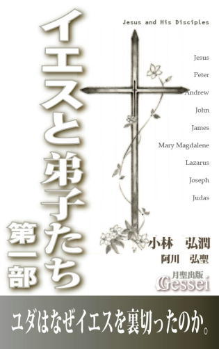
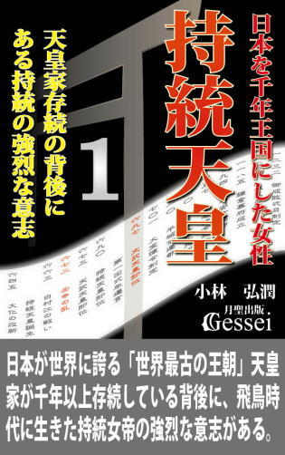
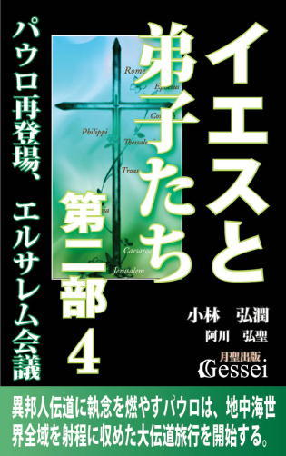
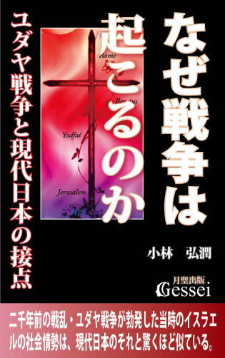

| 社会の学び方・政治経済編３: 経済の基礎知識と社会における官民の役割分担（月聖出版） | |
| 小林弘潤 | |
| Gessei Shuppan (2014) | |
社会の学び方・政治経済編３
経済の基礎知識と社会における官民の役割分担
小林弘潤
※更新履歴
2015/11/6 1.1版 ・Kindle用目次追加
※著者ツイッターで、「本の価格を上げる場合の時期」等の情報を発信しています。ご興味ある方はどうぞ（携帯からも読めます）。
まえがき ～「金融政策ではデフレから脱却できない」という発言をしてしまう人は、根本からさかのぼった経済の理解ができていない
2009年９月から３年３ヶ月続いた民主党政権が12年12月の総選挙の大敗によって下野し、政権を奪還した安倍総裁率いる自民党は13年７月の参院選で「衆参ねじれ」を解消する議席数を確保したことで盤石の政権基盤を確保することに成功したと言えます。その後の政界は「（自民党だけ強くて対抗する野党がすべて弱い）一強多弱」という勢力図になったと言えますが、これでは与党が調子に乗って暴走しても力のない野党には何もできない事態になってしまうため、世論調査でも「８割近い人が一強多弱は良いと思わないと答えた」という結果も出ているようです。
安倍自民党を支持したり応援する人は「保守」の考え方を持っている人が多いと言えますが、保守の人からは「09年の政権交代で民主党が政権を取ったために日本がガタガタになった」とか「日米の信頼関係が破壊された」とか「暗黒時代だった」というような声も聞かれます（中には「民主党政権とはチンパンジーがポルシェを運転していたようなもの」と評した識者もいたらしい）。
ただ、個人的には民主党政権をそれなりに評価していたところがあったため（いろいろ問題はあったと思うが、保守の人が酷評している鳩山由紀夫、小沢一郎には好印象を持っているし、松木謙公、石川知裕、原口一博、細野豪志らの若手議員の今後の活躍は楽しみにしている）、「一強多弱」による弊害が感じられるようになってきた頃「もし民主党が『一強』自民に対抗するための野党再編に向けて本気で動き出した場合、積極的に支持しようかな」という気持ちになったことがあります。
ところが、14年９月に民主党新幹事長になった枝野幸男氏の発言を聞いたことでそうした気持ちが一挙に吹き飛び、「もし民主党が自民党の有力な対抗馬になり、また政権交代などしたら大変なことになる。自民一強状態はつまらないし、彼らが傲り高ぶった様子を見るのは不愉快ではあるが、民主党が再び政権に就くよりはましだから、もうしばらく自民党政権が続いた方がいい」という気持ちにさせられたところがあります。
その枝野氏の発言とは「金利を上げると経済成長する」とか「金融政策ではデフレから脱却できない」というものです。これは経済の専門家である高橋洋一氏が紹介していた話なのですが、「あるテレビ番組で枝野氏と議論した際、信じられないような発言があった。枝野氏は『金利を上げると経済成長する』と言ったのだ。それはあり得ないから訂正したほうがいいと言ったが、受け付けなかった。おそらく枝野氏の頭には、企業が悪、労働者は善という固定観念があるのだろう」「枝野氏は、その後もまったく経済的な理解が進まないまま、『金融政策ではデフレから脱却できない』という金融政策無効論もテレビで主張していた」というもので（高橋洋一「日本の解き方」14年９月24日付）、私はこうした枝野氏の発言と「訂正した方がいいという話を受け付けなかった」ことに対して「これは致命的だ」という思いになったところがあります。
というのも、この枝野氏の発言の中に「下野した後の民主党がやってきたはずの『自分たちが失敗したことに対する原因解明や反省』がニセモノであることが明白になった」という意味があるからです。
「金利を上げると経済成長する」とか「金融政策ではデフレから脱却できない」というような認識を、政権に関係のない万年野党の議員が持つことは一向に構わないと思います。さらに、民主党が政権を担当している時期の枝野氏をはじめとする民主党議員がこうした経済理論を持ち、それに基づいて様々な経済政策を実行することも仕方がないとは思うのですが（間違った理論であっても結果が出ないとわからないのが普通だから）、「政権を追われ、自分たちが失敗した原因を徹底的に解明して次につなげる」という過程を経た後でこういう「あり得ない経済理論」を一向に変えようとしない様子を見せつけられてしまうと、少なくとも私などは「形を繕っただけで本質的な原因解明や反省など何もしていない民主党に何が期待できるというんだ？」とあきれ果ててしまったところがあります（ちなみに、この発言は枝野氏だけの問題ではなく、こういう人物を幹事長に選んだ海江田代表にも問題があるし、さらに言うと民主党全体の問題だと思う）。
安倍政権が掲げたアベノミクスの中でも「大胆な金融政策（緩和）」が様々な成果を出したことは明らかで、例えば「民主党の野田政権だった頃の12年11月から、アベノミクス開始から約１年が経過した13年11月時点での経済状況の変化」に関するデータとして、「為替は12年11月に１ドル＝80円程度だったが、今（13年11月）は99円程度まで円安が進み、日経平均株価も9000円程度から14000円程度まで上昇」「国内総生産（ＧＤＰ）を実質季節調整系列でみると、12年10～12月期の517･2兆円から今年７～９月期に530･1兆円に上昇」「民間最終消費支出も309･5兆円から314･1兆円、民間住宅は13･9兆円から14･6兆円、民間企業設備は65･6兆円から66･5兆円、輸出は78･5兆円から83･5兆円と大きく増加」という話があります（「日本の解き方」13年11月15日付）。
こうした明白な成果が出た後で「金融政策ではデフレから脱却できない」などという発言をしてしまったら、「枝野氏という人は自分の考えにとことん固執するタイプで、自分の考えとは違う現実は見たくないんだろうな」と思われても仕方がないと思います。実際、枝野氏の発言に対しては「枝野氏の素晴らし過ぎる経済観念だ。お金はまわらないと経済は動かないという基本を見事に否定している」とか「枝野幹事長はレーニンが謂う左翼小児病そのもの」とか「こんな連中が政権にあれば日本経済はそりゃ壊滅状態になるよ」とか「与党対野党とか、イデオロギーの違いとか、それ以前の話なんだよねぇ」とか「これだから誰も民主には期待していない」というような酷評が続出していましたが、それまで民主党に多少期待していた私であっても「その通りとしか言いようがない......」という気持ちにさせられたものです（コメントの中に「民主党が最悪で自民党が悪くらい」というのがあったが、私としても「実際に自民も悪だと思うけど、民主よりはましだから自民党政権が続くことは仕方がない」という思いになったもの）。
私がこの話から言いたいことは「（政権に関与する可能性がある）政治家や政党にとって、経済政策に対する考え方はそれだけ重要だ」ということと、「他の分野における政策でどんなに立派な考え方を持っている政治家や政党であっても、経済政策だけおかしかったら政権を担当させてはならない」ということです。
もう一つ、私が枝野氏の発言を聞いて痛感したのは「こういうとんでもない経済理論を固めてしまった人は、根本からさかのぼって経済を理解することができなかったのだろうな」ということです。そこでこの『社会の学び方・政治経済編３』では、私なりに考える「経済に関する基礎知識」や「政府が行う経済政策」等に関する話を紹介してみたいと思います。「金融緩和がデフレ脱却に有効か」という問題に対しても、根本からさかのぼった知識があれば答えを出すのは難しくないと思いますので、参考にしていただければと思っています。
1 自給自足ではない「分業による商品交換の経済」が労力の軽減を促して経済を発展させる
『社会の学び方・政治経済編』の第３巻では「経済」に関する基礎的な知識を紹介してみたいと思います。
ただ、ここで紹介するのは一般的な「経済の基礎的な知識」とは違います。よくある経済のノウハウ本では「現代社会の経済状況を網羅的に解説した内容」が多いですが、ここで紹介するのは「根本からさかのぼった基礎の基礎に当たる知識」になることを最初に断っておきます。
人間が生きていくためには相応の価値が必要です。この場合の価値とは、肉体を保持するために必要な価値（主として物質的価値）と、実感が伴う価値（主として精神的価値）の双方を指しますが、人間は常にこうした「価値」を得る行動をすることが宿命づけられています。
肉体というものが持つ性質上、生きていくためには最低限「衣食住の確保」が必要になりますが、この中でも「食」は一時期手に入れればそれ以降は必要なくなるわけではなく、常時手に入れる必要があります。そうしたこともあり、人間は常に「価値を得る行動」を行わなければならないと言えます。
人間はそうした物質的価値や精神的価値を欲する存在であるため、こうした価値が含まれた物やサービスに対しては消費しようとするニーズ（必要性）が生まれます。ニーズがあるところに生産が行われ、その生産と消費の繰り返しが「経済活動」「経済行為」になっていると言えます。
経済活動と言いますと「複数の人間や社会全体で行われるもの」というイメージが浮かんでくると思いますが、理論的には「一人で行う経済活動」も存在すると言えます。それは、自分が消費するものをすべて自分で生産し、経済活動の範囲を個人だけで完結させる自給自足の経済活動です。
もし人間の肉体の構造が、生きるために必要なものをすべて自分一人で生産できる形になっていた場合、こうした自給自足経済は恒久的に可能です。例えば人間が植物と同じように、光合成によって自分が生きるために必要な栄養を自分で生産できたなら、栄養の生産と消費を個人の範囲で行うことができると言えます（ただ、その場合でも日光や肥沃な土地等の自然との関わりが不可欠だが）。
とはいえ、実際の人間はそうした光合成のようなしくみを持っていないために個人による自給自足はできず、それによって大勢の人との関わりの中で分業化して商品を交換し合う経済活動を行うようになったと言えます。現代の社会で経済活動と言う場合、ほとんどすべてがこの「大勢の人が分業によって生産した商品を交換し、それによって必要な物を手に入れて消費する経済活動」を指します。
さらに、人間には「生きたい思い（生きることができればそれで満足できる思い）」だけではなく「よりよく生きたい思い」があるため、経済活動は「より労力を軽減し、より大きな価値を生み出そうとする方向」で進んでいくようになります。
ある人が食糧の大量生産に成功し、別の人が衣服を大量生産し、さらに別の人が道具を大量に作るようになりますと、そうした商品を輸送したり広域に流通させることに対するニーズが生まれます。その際に政治の力による「補助」としてのインフラ整備の進展が進んだ場合、農業や工業だけではない商業という産業も発達するようになります。
商品が流通されるマーケットが広域化していきますと、ますます大量生産による労力の軽減への試みが行われ、「多数の従業員を雇って組織形態で事業を行うしくみ」や「人間を組織化して効率的に運営する技術」のようなものも進歩していくようになります。
また、自給自足ではない「分業による商品交換の経済活動」においては、労力の軽減の工夫の余地が様々にあるため、労力を軽減するための生産や輸送等の「技術の進歩」が起こりやすいと言えます。つまり、自給自足よりも分業による商品交換の経済の方が、技術の進歩によって次々と労力が軽減し、価値が増大する文明社会が造りやすいと言えるのです。
とはいえ、一口に「分業による商品交換の経済」と言っても、その段階に応じて経済活動の範囲（マーケット）というものは様々に違います。経済活動の中には「ごく狭い地域内での経済活動」もあれば「世界全体という広い地域を対象にした経済活動」もあります。
例えば、昔の時代であれば「自分が着ている衣服や持っている道具や食べ物などの身の回りのものが、すべて自分が住んでいる村や地域で作られていた」ことも多かったと思いますが、現代の日本ではこうしたことは普通考えられません。
現代の日本人の場合、身の回りのものの中に自分の地域で生産されたものはほとんどないのが普通で、身の回りには国内だけでなく世界各地の様々な地域で作られたものがあふれるようになっています。
例えば、現代日本ではバナナやチョコレートのような食べ物がどこでも安価で手に入るようになっていますが、この二つの食べ物を気軽な気持ちで買って食べられることなど昔の時代では考えられませんでした。なぜなら、この二つの食べ物は共に「日本から遠く離れた外国から輸入された食べ物（チョコレートの場合は原料であるカカオが輸入品）」であり、昔の時代では遠く離れた外国から輸入された食べ物など「滅多に手に入らず、相当な値段がついた高級品であり貴重品」だったからです。
こうした「外国からの輸入品が安価で気軽に買える」という状況が実現している理由はいくつかありますが、まず言えるのは「技術の進歩が進んで商品運搬のための輸送体制や冷蔵冷凍等の保存体制が完備され、輸送にかかる労力が大幅に軽減されるようになった」ことと、「多くの人を使った組織化や効率化が進んで商品の大量生産ができるようになった」ことが大きいと思います。
他には、道路や橋や鉄道や港湾等の効率的な輸送に必要なインフラ整備ができたこと、他国の企業との取引や契約をする際に必要な国際的な取り決めが整備されたこと、商品交換の媒体としての貨幣や通貨が安定的に供給され、国際間の為替のしくみができていることなども、外国からの輸入品が安く手に入ることに大いに関連があると言えます。
商品が大量生産され、インフラ等の流通環境が整備されて生産や輸送の労力が軽減していった場合、経済のマーケットはどんどん広域化していくと言えます。ただ、マーケットが広域化していった理由は生産や輸送の労力が軽減したことだけにあるのではなく、地域によって商品の価値が変わってくるという事情によって起こることもあります。
この「地域によって商品の価値が変わる」ことの理由は、地域によって生活文化や人々の価値観が違うために「ある地域での価値観では高い値段がつかない商品でも、別の地域の価値観では高い値段がつく」ことがあるからです。
そうした商品の典型的な例が、中世ヨーロッパにおける大航海時代の原動力になった香辛料で、生産地であるインドや東南アジアでは高い値段がつかなかった香辛料が冷蔵技術が開発されていなかったヨーロッパでは肉類の保存に重宝されたため、相当な高い値段で売れることになります。
こうした地域差による価値観の違いによって「生産地で安く手に入るものが特定の地域では高く売れる」という現象が生まれ、商人たちはこうした商品を交易する意欲を高めるようになります。
商品の交易をスムーズに行うためには、遠距離における効率的な流通ができるためのインフラ整備が必要になるため、商人だけでなく国家も動くようになります。さらに国際間の取り決めの整備が行われたり安定した貨幣の流通も進めば、香辛料だけでなく別の商品の流通コストも波及的に安くなってそうした商品の値段が下がるという効果を生み、それによって消費者の消費意欲が高まって全体的な商品の流通が盛んになると言えます。
香辛料の話は外国の例ですが、似たような例は日本にもあります。そこで、「昔の日本でフィリピンのトイレの壺が高く売れた」という話を紹介したいと思います。
これは戦国時代に茶の湯がブームになった頃の話ですが、南蛮貿易によって日本にもたらされたフィリピン産のルソンの壺が「大変古びた味わいがある」と珍重され、茶器として非常に高値がついたと言われています。ただ、茶器として使われたその壺が実は「フィリピンの便所の手洗い容器」だったようで、〝古びた味わい〟もそういうところから来ていたようです（会田雄次『合理主義』講談社現代新書54頁参照。しかもこの容器は「ただの手洗い容器」ではなかったようだが、あまりに下品な話になるのでこれ以上の説明は遠慮させていただきます）。
この壺は現地のフィリピンでは当然安く手に入ったので、ヨーロッパの商人が争って便所から壺を買い漁ってしまい、やがてフィリピンの便所では手洗い容器がなくなるという事態になったようです。
仮にこの時「フィリピンで1000円で買える壺が日本だと10万円で売れる」という状況だった場合、船を出すための費用や船員への給料などの経費がかかっても十分元が取れて大変な利益が出るため、商人たちの意欲が高まって交易の環境作りに多少なりとも寄与したことが推測できます。
それに対し、当時の日本人が〝古びた味わい〟を理解できる価値観を持っていなかったとしたら、フィリピンで1000円の壺が日本でも1000円でしか売れないことになり、これでは船を出す費用や船員の給料が出せないので交易として成り立たなくなります。その場合は交易のための環境を整えることができないため、他の商品に波及効果が及んでそうした商品の値段が安くなることもなかったと言えます。
このように、分業による商品交換経済には「様々な工夫によって労力の軽減が起こりやすい」ことと「地域差による価値観の違いによって交易が活発になりやすい」という特徴を持っています。ただ、こうした説明の仕方をしますと「分業による商品交換の経済はいいところばかり」という印象になるかもしれませんが、この方式の経済には当然ながらデメリットも存在します。
この方式の経済の一番大きな問題は、大量生産によって商品の値段が安くなり過ぎたり、分業化が進んで各人がやっている仕事が専門化し過ぎることによって生じる「一つの一つの商品や仕事における価値の実感がしにくくなってしまうこと」だと思います。
これに関する話は電子書籍『価値とは何か』『現代の日本は人類が追い求めてきた理想郷である』でも紹介しましたが、大量生産でできた商品というのは作った人間の努力の過程が見えにくいために商品に込められた価値を実感することができず、そうした商品を手に入れた場合の価値の実感度はかなり落ちてしまうと言えます。そして、このことが現代の「物を大切にせず粗末にする風潮」につながっている感じがします。
『価値とは何か』９節では「厳しい環境で不便な生活の中で生きている人が、かえって生き生きと生活している様子」の話を紹介しましたが、マーケットが地球規模になって大量生産と分業化が相当に進んだ現代では、相当なところまで価値の実感ができなくなっている感じがします。
一昔前の日本では「経済活動が進めば進むほど人々の幸福感（価値の実感）もそれに比例して増えるものだ」という考え方がありましたが、現実には経済活動が盛んになることは大量生産と分業化が進展することを意味するため、経済活動が盛んになることの中には人々の幸福感を軽減させる因子も入っていると言えます。これからの時代においてはそうしたことも考慮し、「意識して価値の実感を増やそうとする努力」が必要になると思います。
また、この分業による商品交換経済の中には「自分が生きるために必要な商品の供給を他人に依存している」という側面もあるので、他者に依存する傾向が進みやすいという問題もあると思います。
以前見たことがあるテレビ番組の中で「家に電気をひかずにエネルギーを自然のものでまかない、食べ物を自分たちで生産する自給自足の生活を送っている人」の様子が紹介されていたことがあったのですが、スタジオでその様子を見ていたある方（現在ほど著名ではなかった頃の宮崎駿氏）が「この人は日本で一番偉い人だと思う」という話をしていたことを覚えています。
こうした発言は「分業による商品交換経済にどっぷり浸かった人間は依存心が強くなって人間として必要な自立心、独立心を失ってしまう」（あるいは、大自然のありがたみを忘れてしまう）というような意識から出ているのだと思いますが、個人的には「自給自足ができる人が偉く、そうでない人は偉くない」という極端な発想になっても問題があるという思いになります。なぜなら、自給自足にこだわり過ぎて社会がそうした経済体制になった場合、労力の軽減が進まず社会が停滞しやすいと言えるからです。
例えば古代中国の後漢時代、輸入超過によって自国の貨幣が減って貨幣流通が停滞したことで「荘園を拡げた豪族が自分の領地内で物資をまかなう自給自足経済」が進み、そのため経済活動が縮小して国家の衰退につながったと言われています（電子書籍『社会の学び方・世界史編２』４節参照）。私はこの話を知る以前、自給自足経済に対して「落ち着いた素朴な経済」といういいイメージを持っていたので、「自給自足はいいことじゃなかったんだ」と驚いたことを覚えています。
大事なことは「人間は基本的には自立・独立しながら生きる必要があるが、必要に応じて他人に依存した方が豊かな生活が送れることも確か」という発想をし、「どこまでを自給し、どこから他人に依存してもいいかを適格に区別する努力をする」ことだと思います。
現代の文明社会での一般的な経済活動においては、すべてのものを一人一人の個人が自給する必要はないと思いますが、国家レベルで考えた場合は「国家として自給が必要になるものもある」と言えます。そうしたものの代表が食糧で、例えば現代日本という国は食糧自給率が非常に低いため、もし世界の食糧事情が危機的になった場合は食糧の輸入が止まって大変なことになる可能性があります。
経済というのは基本的に他人に依存することで成り立っているところがありますが、必要なところで自給しようとする意識も忘れてはいけないと思います。「すべて自給しなければ」でも「一切自給する必要はない」でもなく、「どこまで自給してどこから依存するかを程度問題で考える」という発想が大事だと思います。
2 各人の労力以上の価値を作る行為の集積が「社会全体の価値の増大」につながっている
分業による商品交換経済には「様々な工夫の余地があり、社会の価値が増大しやすい」という正の側面もあれば、「商品や仕事における価値の実感度が落ちやすかったり、他者に依存する傾向が進みやすい」という負の側面もあります。また、分業で成り立っている社会では個人が組織や社会と密接な関わりを持つようになるため、この経済においては「個人の命運が組織や社会の動向に影響を受けやすい」という特徴もあります。
人間は常に価値を得ないと生きていけない存在である以上、誰でも自分の価値を増やす方向に動こうとする根源的な意識を持っています。そして、分業化が進んだ社会では一人の力だけで価値を得ることはできない以上、「個人は必ず組織や社会に所属し、そうしたものとの関わりの中で生産活動を行わなければならない状態にある」と言えます。
一見、組織に属さず個人の力だけで仕事をしているように見える人でも、様々な組織や社会との関わりが必ずあります。例えば、特定の組織に所属していないフリーカメラマンやフリーアナウンサーのような人であっても、仕事の際は出版社やテレビ局等の組織と一時的な契約をするもので、どんな人でも組織と何らかの関わりを持たなければ価値（仕事による収入）を得ることはできないものです。
こうした状況を考えますと、どんな人でも「自分だけの利益（価値）を増やせばいいのではなく、組織や社会の利益も増やさなければならない」という発想をする必要があると言えます。
人間はともすれば「自分だけの利益を増やせばいい傾向」に陥ってしまうところがありますが、そうした方向に向かうのを抑えて「自分だけではなく、組織や社会全体の価値を高める方向で自分の利益を増やすことが大事なのだ」という意識が持てるかどうかは大きいと思います。
職業としての仕事に就く場合、誰でも「就職先としての組織（企業や役所）からもらえる給料や収入は多い方がいい」という意識になるものです。ただ、企業などの組織にとって「従業員に給料を払うこと」は労力をかけることを意味するため、人件費という労力がかかり過ぎた場合、その組織は労力以上の価値が得られなくなるのでやがて存続できなくなります。
「かけた労力以上の価値がなければ生きていけない」のは個人だけでなく、組織や社会であっても同じです。そのことから、組織に所属する人間は「自分の給料が多くなりさえすればいい」という自分中心の発想ではなく、時には会社の立場に立って「会社というのは人件費等の経費（労力）がかかり過ぎたら存続できないものなのだ」という視点を意識する必要があると思います。
例えば、ある企業において企業全体がかけた労力（経費）が500万円で、それによって得た価値（利益）が600万円だった場合、黒字で余裕があるので従業員への給料を増やすことも可能になります。しかし、これが労力500万円で価値が400万円しかなかった場合は労力を400万に減らさないといずれ企業が倒産するので、逆に給料を減らさなければならなくなります（もちろん、実際には人件費ではない経費も様々にあるが、わかりやすくするためにあえて単純化している）。
組織が従業員に出す給料というのは「組織が得た価値の一部を、その従業員の貢献度に応じた価値として配分される」ことによって生じています。従業員に高い給料が出せる組織というのは、労力以上の価値を作り出すしくみを持っている組織（労力500万に対して700万や800万もの価値が作ることができる組織）と言うことができ、そうした組織であれば従業員に高い給料を払い続けても長く存続することができます。
いつの時代も、就職先として人気が集まるのは従業員に高い給料を払うことができる企業や組織ですが、それは「そうした組織の中に労力以上の価値を作るしくみが整備されているから」と言えます。
次に指摘したいのは「価値を作るためには元手が必要」という視点です。人間が生きていくために必要な価値は、何もないところからは作り出せないようになっており、個人でも組織でも社会でも価値を作るためには元手が必要と言えます。
そして、その元手は既にある価値の中から配分することになります。人間や組織や社会が常に価値を得るためには、既にある価値の一部を元手にして価値を増やす努力をしなければなりません（価値を増やす努力をしない限り、保持している価値はやがてなくなってしまうから）。その「既にある価値の一部から配分した元手」が、組織がかける労力の中で大きな比重を占めることになります。
例えば、プロスポーツチームという組織を運営していくには、観客収入やテレビ放映権等による収入等の価値を作り出さなければなりません。そうした価値を作るためには「チームを強くして試合に勝つ」ことが求められますが、そのためには実力のある選手や指導力のある監督やコーチなどの人材が必要になります。
そこで、既にある運営資金（価値）の一部を元手にして選手や監督を雇い、そうした選手や監督が実力を発揮してチームが勝ち続ければ、客がたくさん入って観客収入という価値が増えるので「かけた労力以上の価値が手に入る」ことになります。それに対し、大金をはたいて雇った選手や監督がまったく働かず、収入が増えなければ「かけた労力がムダになり、かえって価値が減ってしまう」ことになります。
よく「高額取りのプロスポーツ選手が結果を出せないと、味方のファンからブーイングを浴びたり周囲の風当たりが厳しくなるのでつらい立場に置かれる」という話を聞くことがありますが、これは給料に見合った働きをしていないのだから当たり前だと思います。
球団が存続するには選手に給料以上の働きをしてもらわないといけない以上、選手には高額の給料を受け取る契約を結んだ時点で相応の結果を出す責任が発生しています。中には、まともな結果を出していないにもかかわらず「味方のファンからのブーイングが激しくて大変」とか不満を言う選手もいますが、個人的には「そういう不満や愚痴は、もらった高給を返上してから言うのが筋じゃないかなあ」という思いになります。
この「プロスポーツチームの労力と価値の話」に関してはこういうことも言えます。
チームが強くなると観客が増えるようになるのは、球場に訪れた観客が「試合を観戦すれば、自分が払った入場料という労力以上の価値（いい試合やプレーを見られることでの実感）が得られる」という思いになるからと言えます。場合によっては、チームが優勝することでその地域や企業内の消費が活性化して大変な経済効果を生むことすらありますが、これは「チームが強くなることで労力以上の価値を作り、それによって多くの人を引き寄せている状況」と言えます。
人は誰でも「労力以上の価値を作りたい」という本能のような願望を持って生きています。そして、分業による商品交換経済に生きている人間は組織と関わりを持つことが宿命になっているため、「自分がかける労力をできるだけ多くの価値にしてくれる組織」を求め、そうした組織を見つけた場合は自然に惹かれていくようになります。
それが例えば「高い給料を払ってくれる企業」とか「強いプロスポーツチーム」であり、そうした組織に多くの人が集まることで価値が増産され、その集積が「社会全体が労力以上の価値を増大させる」という現象になっていると言えます。
次に指摘したいのは、こうした分業による商品交換経済における「金銭（お金）や通貨の役割」という観点です。
金銭や通貨は「物やサービスの価値を数値化して取引をスムーズにし、交換や流通における労力を軽減する役割」を担っていますが、大量生産や分業化が進展した社会の中では非常に大きな役割を果たしていると言えます。
金銭には、経済活動における「労力の軽減」と「価値の存続」の両方の機能があります。
例えば、貨幣が普及して一般化した社会の場合、それ以前の物々交換社会における「米などの現物を大量に運ぶ」という状況よりも商品の流通における労力が大幅に軽減したと言えますし、さらには金属貨幣を使うことで「価値を長期に保存すること」が可能になったと言えます（貨幣の役割についての詳細は電子書籍『お金で幸せは買えるか』参照）。
経済活動は「生産と消費」で成り立っていますが、生産と消費は共に金銭と密接な関わりがあります。
価値というものが金銭によって換算される貨幣経済においては、人間が行う生産活動というものがほとんど「給料などで金銭を得ること」と同じ意味になっています。例えば、人間が仕事をする目的は何かと聞かれて「お金を稼ぐこと」という答えになってしまう人がいた場合、その人は「生産活動（仕事）＝金銭を得ること」という認識を持っていると言えます。
ただ、生産活動の本来の意味は「多くの人にとって価値になる物やサービスを提供すること」にあり、仕事によって得られる金銭に対しては「その人が提供したサービスに応じた対価」という認識を持った方が正確だと思います。
また、生産活動という言葉には「農作物や工業製品等の物を生産すること（ものづくり）」というイメージも強いですが、この認識だと政治や商業やサービス業の仕事が入らなくなってしまうので「生産活動とはものづくりに限定されるのではなく、多くの人にとって価値になる物やサービスを提供すること」という認識を持った方がいいと思います。
農業に従事する人は「農作物を栽培する生産活動」をし、工業に従事する人は「工業製品を製造する生産活動」をし、商業に従事する人は「商品を流通する生産活動」をし、さらに政治に携わる人は「政治の仕事という生産活動」をしており、それぞれが提供したサービスに応じた対価を金銭として得ているという図式になっています。
そして、人間は生産活動の対価として得た金銭を使って「消費」を行います。人間は「常に価値を欲する（価値がないと生きていけない）存在」と言えますが、他の人が生産した様々な物やサービスの中で、自分に必要なものを選んで獲得するのが消費という活動です。
自給自足経済の場合は「生きるために必要な価値を自分で生産し、そこで生まれた価値を自分が消費する」ことになりますが、分業による商品交換経済はこの生産と消費の循環を広域に広げて「多くの人が生きるために必要な物やサービスの一部を提供し、それに応じた対価としての金銭を使って他の人が生産した商品を消費する」というしくみになっていると言えます。
ここで、「生産と消費」と「労力と価値」の関係についての指摘をしてみたいと思います。
消費というと「お金を払うから労力をかけることに当てはまる」という印象になるかもしれませんが、消費とは「お金という労力を元手にして自分に必要な価値を手に入れる行為」という言い方ができます。
お金を払って買い物をする場合、人は必ず「この対象には自分がかけたお金（労力）以上の価値がある」という判断を行っています。例えば、ある人が「電車代で1000円払った」という場合、その人は「電車に乗ることによる時間と労力の軽減（あるいは、電車に乗ることそのもので得られる実感）による価値に1000円以上の価値がある」という判断をしていると言えるからです。
人間が消費を行う場合、その都度「この商品やサービスには労力以上の価値がある」という判断をしていることになり、そうした判断が常に適切だった場合「消費が増えれば増えるほど、社会全体の価値が増大する」ことになります。
そして、こうした要素は生産にも共通しており、生産も消費も共に「労力をかけて価値を手に入れる行為」という要素を持っていると言えます。生産の対象としての仕事であっても消費の対象である商品やサービスであっても、人は「労力以上の価値が得られると判断したもの」に惹かれ、各人の価値観等に応じてそうした仕事や商品を選ぶようになるのです。
そうした「労力以上の価値」の一つ一つは小さくても、多くの人の価値が集まっていけば大きなものになります。個人や組織の「労力以上の価値の判断」が適切に行われ、それによって生まれた価値が集積して蓄積していけば、「組織全体、さらには社会全体の価値が増える」という現象につながります。
企業という組織の単位で見た場合、企業全体の価値（利益）が増えれば「多くの従業員を雇える」「従業員の給料が上がる」「政府や国家に納める税金が増える」「残った利益を元手にしてさらなる投資に回せる」ので、そこで行った投資がまたそれ以上の利益を生んでいった場合、その企業は「所属する従業員だけでなく社会全体の価値の増大に大きく貢献している」ことになります。また、労力以上の利益を出すことに失敗して倒産した企業が出てきても、他の企業が大きくなってそれ以上の利益を出すことができれば、全体的には社会の価値が増大することになります。
結局、「個人や組織がそれぞれの役割を果たして労力以上の価値を作り出す」ことの蓄積が、社会全体の価値を増やすことにつながっていると言えるのです。
3 分業による経済では「役割のどれかが欠けても社会が成りたたなくなる」という認識が必要
この「分業による商品交換の経済」の特徴としてはさらに、「産業の種類としての農業（農業従事者）、工業（工業従事者）、商業（商人）がそれぞれの役割を果たさないと経済活動が成り立たない」という観点を指摘しておきたいと思います。これはちょうど「野球のような団体スポーツのチームは、一人だけが突出してもチーム全員がそれぞれの役割を果たさないと成り立たない」というようなイメージを持つとわかりやすいと思います。
これについて単純化した事例を使って説明してみたいと思います。
例えば一つの社会の中で「農業従事者」「工業従事者」「商人」「政治家や役人」の人数がそれぞれ４分の１ずつ存在するとします。この状況でその時の政治指導者が「商業蔑視の信念」を持っていたために社会から商人がすべて追放されてしまい、商人が一人もいなくなったら社会全体の価値はどれだけ低下するかわかるでしょうか。
これに対しては直感的に「商人の人数が社会全体の４分の１なら、社会全体の価値は４分の１減って４分の３は残るだろう」と感じることが多いと思いますが、実際はこういう社会の場合、社会全体の価値は一気に低下してゼロに近くなると言えます。
なぜなら、商人がいなくなったら農業従事者や工業従事者が大量生産をした商品が社会に流通されず、ほとんど価値がなくなってしまうからです（ただ、実際は「商人がいなくなったら商業に対する人々のニーズが高まる」ので、別の役割の人が流通の仕事も請け負うことになって実質的な商業の役割は残ると言える）。
さらにこうした現象は商人がいなくなった場合だけでなく、農業従事者、工業従事者、政治家や役人がいなくなった場合も同じで、社会における経済活動というものは「役割のどれか一つが欠けるだけで社会全体の価値は一気に低下する」という認識が必要だと思います。
世間ではたまにこの「経済活動で分担されている役割にはそれぞれ意味があり、どれか一つでも欠けたら社会が成り立たなくなる」という発想が理解できず、「自分は社会に多大な貢献をしているのだから、自分が一番偉いはずだ」というような認識を持っている人もいらっしゃると思います（こうした傾向は大きな権力を持っている政治家、官僚、マスコミ関係者、大会社の社長などに多い感じが）。
ただ、そうした認識が固定化している人というのは「その人が持っている世界観が自分に都合のいい狭いもので固定化されている」ことを意味するので、単なる小人物の証明でしかないと思います。
ここで、社会の中での商業の役割についての説明をしてみたいと思います。経済活動における商業とは、「物やサービスの価値を生かしたいという供給者側の思い」と、「それを欲する消費者側のニーズ」の双方が合致するところで生まれます。
これについて、日常生活に密着した事例を紹介してみたいと思います。
ある人が家のリフォームをしたら部屋にちょっとした空間ができたので収納箱が欲しくなってホームセンターに行って探してみたのですが、ちょうどいい大きさのものが見つからなかったのでその空間がそのままになっていたようです。
ところが、ある日ジョギングをしていたところ、大掃除をしていた人の家の前に引き出し式の収納箱が出されていて、気になって家主に尋ねたところ「入り用でしたらどうぞ」という返事をもらったので家に持ち帰ることにしたようです。そして空いていた空間に置いてみるとそれがぴったりの大きさで、その箱についていた汚れをふき取ると見事によみがえったので非常に重宝しているという話です（読売新聞06年３月21日付「古びた収納箱が私を呼んだのか」）。
収納箱の元の持ち主である家主の方が「入り用でしたらどうぞ」とこの人に言った背景に、「自分にとっては不要になった箱なので、必要としている人に使ってもらった方がいい」という意識があったことが推測できます。その意味で、「この収納箱の価値を生かしたいという供給者側の思い」と「それを欲するこの人のニーズ」の双方が合致したところでこの収納箱の〝流通〟が行われたという分析ができます。
もしこの人が、その日にジョギングをする気にならず収納箱を見つけていなかったとしたら、その箱は不要品として捨てられていた可能性が高いと思います。「流通が行われなければ喪失していた価値が、流通が行われたことで存続したこと」がこの事例からよくわかると思います。
このように、物やサービスというものはそれが活用される人や場所に流通させて初めて価値が出ると言えるため、この「価値を活用してもらえる人や場所に物やサービスを流通させる」という仕事は社会の中で大きな役割を果たすと言えます。こうした「物やサービスを流通させる仕事」のことを商業と呼び、そして供給者（生産者）と消費者を媒介して流通の仕事を行う専門の業者のことを「商人」というわけです。
社会の中での商業の役割については、こういう説明をすれば「商業は社会の中で必要不可欠な仕事なんだな」という認識が持てると思います。ただ、歴史的に見て「商業という産業に対する認識や評価」は日本だけでなく世界的に見てもマイナス的なものも多く、「商業は賤しい職業」という商業蔑視の傾向は世界各地であったと言えます。
世界各地にあった商業蔑視の傾向については、キリスト教、儒教、仏教という歴史的な宗教思想（根本思想）による影響が大きかったと言えます。ただ、このことは「キリスト教、儒教、仏教の本来の精神の中に商業蔑視の考え方が入っていた」という意味ではなく、これらの宗教思想が各地に広がって思想が権威化される中で、恣意的な商業蔑視の解釈がされるようになったという意味です（これについては電子書籍『社会の学び方・世界史編１』５節、『社会の学び方・日本史編２』第四章９に記載）。
例えば、儒教的発想には「食糧は人間が生きるために不可欠だから、農業を大事にするべきだ」という考え方があります。この「農業が大事だ」という考え方自体は正論であり、これを「農業と商業の重要度は６対４程度の割合で考えた方がいい（この数字はあくまでも目安）」というように解釈すれば何の問題もないと思います。
ところが、人間というものはいつの時代でも権威重視の発想になって極端な考え方に走ってしまう傾向があるため、「農業が大事だ」の教えで言いたいことが「農業と商業の重要度は６対４程度に」であった場合でも、時代が下るに連れて「農業と商業の重要度は10対０であり、商人は悪人である」というような極端な解釈が生まれ、さらに非常識な解釈であっても儒教が権威化することで「歴史と伝統がある（権威がある）儒教でそう言われているのだからこの考え方は正しいのである」という権威の悪用の発想によって社会の中に根強く浸透してしまうことがあります。
こうした極端な考え方は儒教の影響を受けた国では実際にあったことで、例えば中国が明の時代に「民間商人が海外貿易をすることを禁じる政策（海禁）」を行ったり、日本の江戸時代に松平定信が行った改革の中に商業軽視的な傾向（農民が商業に携わることを禁止する政策など）があったことが代表例と言えます。こうしたことを考えますと「商業蔑視の信念を持った為政者が社会から商人をすべて追放した」という話は歴史の中で頻繁にあったのではないかという思いにもなってきます。
江戸時代の著名な思想家で、特定の宗教や思想にとらわれない独自の思想を説いた石田梅岩という人は「士農工商の四民、いずれが欠けても天下の相はならず」と人々に語っていたようですが、この人は「（武士による）政治、農業、工業、商業がそれぞれの役割を果たさないと社会は成り立たない」という分業による商品交換経済の本質を把握していたと言えます。
ところが、こうした商業を肯定する考え方は当時の儒教思想に凝り固まった学者の批判の対象になり、時には「商人はつねづね詐りをもって利を得ることを生業とする者で、学問など決して成るまじきことなのに、汝は商売人が多い聴衆に合わせて講釈をしている。汚世に媚びへつらいながら、学者のうちと思われるのは恥ずかしくないか」などと罵倒されたことさえあったようです（長部日出雄『仏教と資本主義』新潮新書135、138頁）。
こうした商業蔑視の傾向は江戸時代だけでなく戦後から現代の日本でも濃厚に残っています。例えば、一代で京セラという会社を大企業に育て上げた稲盛和夫氏は1959年頃京都で起業した際、「（京都という地域性もあって）自分は周囲の学者や文化人から『商売人や経営者は、利益を追求する卑しい人間だ』と低く見られているように感じた」と語っていたことがあります（読売新聞07年８月26日付「企業倫理 共存・調和の哲学必要」）。
現代の例では2001年、夏の高校野球選手権大会で滋賀県の近江高校が準優勝した時、地元の彦根市の商店街が祝勝セールを企画したらしいのですが、それに対して県高野連会長と学校長から「純粋な青少年育成を目指す大会の趣旨に反する」として中止を求める文書が届いたようです。
この時の高野連は「常に野球の陰に忍び寄る弊害を警戒する必要があり、優勝記念セール等の高校野球を利用した便乗商法は排除せねばならない」という発想をしていたようですが、それに対して彦根商店街連盟の方は「高校に対するお祝いのつもりだった。利益など考えていないのに商売人はそんな目で見られる」と語っていたようです（読売新聞07年８月１日付「憲章タテに巨大影響力」）。
ただ、こうした商業軽視の動きが起こるのは思想の権威化や権威重視の発想の影響だけではなく、商業が持つ特徴も影響していると言えます。その一つに「商業で力点が置かれるのは生産物ではなく貨幣にある」ことがあげられます。
経済活動を分担している様々な産業の中で、農業や工業の場合は労力をかけて生産物を作り出そうとする側面が強いので、農業や工業に従事している人は「自分たちが苦労して作り出した生産物」に対して深い愛着を持ち、生産物の価値を重要視しやすいところがあります。
それに対して商業は「価値を数値化した媒体である貨幣」と密接な関わりを持っているため、従事している人は生産物そのものの価値よりも「貨幣が持つ価値」を意識しやすくなると言えます。それによって商業に従事する商人は、お金を必要以上に重視して金儲けに走る傾向（俗に言う拝金主義）になりやすいという特徴があるのです。
そしてもう一つ、農業の収入は所有している土地に左右されやすいため収入を大幅に伸ばすことが難しいのに対し、「商業は自由性が高いのでやり方次第では大きな儲けを出しやすい」という特徴もあり、この「商業は拝金主義になりやすい」ことと「商業は農工業に比べて大きな儲けを出しやすい」ことが、商人に対する農工業の従事者の不満や嫉妬、あるいは羨望を生みやすいという傾向につながっていると言えます。
実際、いつの時代のどの地域でも「楽をして大儲けをしながら、社会貢献をしない拝金主義的な商人」は存在するもので、例えば16世紀のドイツでは香辛料貿易を独占して大儲けしていたヴェネチィアやジェノヴァの貿易商人が当時の教会と結託しており、南ドイツの鉱山師と銀や銅の精錬業者は「苦労している自分たちに対し、商人はあまりにも楽をして儲け過ぎる」という反発を抱いていたようです（宗教改革を起こしたルターは精錬業者の息子だったので、商人と結託した教会に対する彼の憤りが宗教改革を起こす一因になった可能性もある。会田雄次他『世界の歴史12 ルネサンス』河出書房新社38頁）。
こうした事例にあるように、社会の中で質の悪い商人に対する反発や不満が生まれるのもやむを得ない側面があると思います。
松平定信の改革が行われた江戸時代中期では、農民が村を捨てて首都である江戸に殺到し、農村人口が激減していたと言われていますが、こうした現象が起こった背景として「田沼時代の商業重視的政策で大儲けした商人が出現し、そうした話を聞いた農民が農業なんて重労働はやっていられない心理になっていた」ことが推測できます（『社会の学び方・日本史編２』第四章参照）。
農業が現代のように機械化されていない江戸時代では、農作業はかなりの重労働だったようで、こうした状況では「大儲けした商人に対する羨望や嫉妬を抱く農民が出てきても不思議はない」という思いになります。
現代日本のような「食糧が自給できなくても他国からの輸入でまかなえばいい」という状況とは違った、自国の食糧は自給するしかなかった時代の為政者としては「食糧を生産する役割を担う農民の農業離れ」というのは大変な問題だったと思います。その意味で、松平が職業選択の自由という視点がまったくない「農民が商業に携わることを禁止する政策」を行ったことに対して、個人的には理解できるという思いになります。
4 職業選択の自由を認めながら産業を均一化させて社会全体の価値を高めることは奇跡に近い
各人が行う生活や経済活動というのは分業で成り立っているものですが、そうした社会で生きている人間であっても明確に意識しないと「自分が行っている生産活動は社会で分担されている様々な分業の中のほんの一部である」ことや、「自分以外に多くの人が様々な分担を担っているからこそ社会が成り立っていて、自分も生活することができる」ことがわからないものです。
現行の日本国憲法の中では「何人も職業選択の自由を有する」という規定がありますが、私などは「どんな職業に就くかを一人一人の自由に委ねておいて、よく社会の経済活動が成り立っているな」と感心してしまうことがあります。というのも、人間は誰でも「労力が少なく高収入が得られる仕事を職業として選びたがる」ものなので、そうした職種が大量の雇用を行った場合は有為な人材が流出して社会問題になる恐れもあるからです。
これは日本ではなく外国の話ですが、アメリカのラスベガスに匹敵するほどカジノ産業が盛んなマカオでは、ディーラーなどのカジノ関連の職種に就くと平均月収のほぼ倍の高給が得られるようで、それによって新規採用者がカジノ業界に殺到したり、中学や高校を中退してカジノ業界に就職する若者が続出するなどして社会問題化しているようです。
また、他業種の人材が次々とカジノ業界に転職してしまうので零細小売店などでは「若い店員の採用は絶望的」という話があったり、「警察や消防への就職希望者が前年比40％も減少している」という深刻な話も聞くので、こうした状況が続けばやがて社会の中で様々なひずみが生じることは明らかだと思います。
これが人口が多い国家なら異業種との競争や何らかの調整のようなものも働くとは思うのですが、マカオの場合は労働人口約27万人（06年頃の数字）という小都市であり、そのうちの３万人（約11％）がカジノで働いているという極端な一局集中現象が起きているため（読売新聞07年１月27日付「マカオの若者殺到 高給カジノ就職熱」）、何らかの抜本的な対策を考えないと大変な事態になる可能性もあると思います。
もちろん私も「職業選択の自由」という考え方は基本的に大事だと思います。ただ、人々に職業選択の自由を認めながら多くの産業の生産力を均一化させて社会全体の価値を保つことは奇跡に近いことのような気がするため、「職業選択の自由ということはあまり強調したり、他の要素より優先させない方がいいのでは」という思いになります。
これは余談になりますが、職業選択の自由を他の要素より優先させることの弊害の事例としまして、「知事の多選制限の動きと職業選択の自由の関連」という問題を取り上げてみたいと思います。
今の日本の法律では都道府県知事の「多選の制限」がなく、全国の中には「５期18年とか20年も知事を務める」というケースもあります。知事というのは議院内閣制における首相と違って「都道府県議会選挙の結果次第で任期途中で辞任する」ことがないので大統領のような権力を持っているところがあり、何度も当選して長期政権になった場合は当然「権力の固定化と暴走（腐敗）」の問題が出てくると言えます。
実際、2006年に18年の長期にわたって知事を務めた人が収賄容疑で逮捕される事件があり、これがきっかけで「知事や首長の多選を制限すべきだ」という動きが出て地方の条例による規制の動きも始まりましたが（07年10月10日に神奈川県で「４選禁止の条例」ができたのが多選禁止を定めた全国で初めての条例らしい）、それに対して「多選制限は憲法が規定する職業選択の自由や立候補の自由に違反する」（昭和29年以降からあった意見のよう。産経新聞06年10月30日付「首長多選 制限論自民に再び」）という理由で反対する人たちがいたり、総務省も「多選禁止条例は法律違反」という態度を取っているようです。
さらに現職の多選知事の中には「いつまで知事として仕事をするかは本人の意欲と気力。何よりも選挙民が決めること」（06年段階での高知県知事の言葉。読売新聞06年11月26日付「任期アンケ 多選知事批判に反論」）とか「多選が必ずしも不祥事に結びつくわけではない」（07年段階での静岡県と宮城県の知事の言葉。読売新聞07年10月14日付記事「知事多選 選挙民が決めること」）と主張する方もおられるようです。
こうした「多選禁止は憲法や法律違反」という発想をする人に対して、私などは信じられない思いになります。というのも、現代日本の根本の政治制度である民主主義制度そのものが「権力というものは長期にわたって固定化させたら暴走や腐敗の問題が出てくるから、それを防ぐ」という目的からできている制度であり、民主主義の国ではそうした権力の長期化や固定化による問題を防ぐことを優先させているのが普通だからです（例えばアメリカの場合、30州以上が知事の任期を連続２期８年に制限しているらしい）。
職業選択の自由という視点は基本的に大事だとは思いますが、この発想を「権力の固定化と暴走を防ぐ努力やしくみ」よりも優先させてしまった場合は、死ぬまで権力の座から退くことがない終身独裁者という職業に就く自由さえ認めなければならなくなってしまいます。
総務省が「多選禁止条例は法律違反」などと公式に言っている現状を考えた場合、「現実に独裁者が現れて裁判になった場合、今の状況なら職業選択の自由を盾に取れば独裁者が勝つのでは」とさえ思ってしまいますが、個人的には「民主主義国家というのは独裁者という職業に就く自由は認めないのが普通なんじゃないかなあ」という思いになります。
また、私の場合「いつまで知事として仕事をするかは本人の意欲と気力の問題」というような意見を聞くと、「この人は、独裁者が独裁政治を続ける意欲と気力があるのならそれを優先すべき、とでも思っているのだろうか」という思いになります。
ちなみに、私自身は独裁や専制政治は絶対悪という認識を持っているわけではなく、「中には良心的な統治を続けるだけの器のある独裁者もいるのでは」と思っているので「独裁者が必ずしも権力の暴走に結びつくわけではない」と思っています。
ただ、同時に「仮に独裁者による権力の暴走が起こる確率が低くても、それが起こってしまった場合の弊害は計り知れない以上、独裁政治になる道は閉ざした方がいい」という認識を持っていますが、このことが民主国家で様々な権力分立のしくみが整えられていることの根本の理由だと思います。そうである以上、多選禁止に反対する知事の「多選が必ずしも不祥事に結びつくわけではない（だから多選を認めるべきだ）」という論法は「民主主義の根幹を崩す結果につながる危険な論法」ということは認識した方がいいと思います。
次に指摘したいのは、こうした「農業、工業、商業等の分業化された産業が一つでも欠けると社会や国家は成り立たない」という観点は、国単位だけの話ではなく地球規模の話として考えることもできるという話です。
現代のように技術の進歩が進んで「他国からの商品の輸送が低コストでできる社会」においては、経済活動はそれぞれの国単位ではなく「地球規模のマーケット」で行われています。こうした地球規模のマーケットを持った経済（グローバル経済）においては、「一国だけが突出しても他国がそれぞれの役割を果たさないと経済活動が成り立たない」という視点を考慮する必要があると思います。
こうしたグローバル経済では「経済活動を行うためには、文化や価値観が違う地域と関わらざるを得なくなる」ので、それによって他国の様々な価値観を理解しなければならないことによる労力がかかりますし、価値観の衝突や誤解によるトラブルも数多く発生すると言えます。これは一見非常に大変な事態にも見えますが、一方で「それだけ異文化の考え方や価値観を理解する必要性が高くなった」という意味にもなるため、非常に大きなチャンスというとらえ方もできると思います。
経済活動が広域になることは「様々な地域の文化や価値観を理解する必要性が増大する」ことにつながります。もし、経済活動というものが「自分一人で生産と消費を行う自給自足経済」の範囲で留まっていた場合、他の人や社会と接する必要性がほとんどなくなるので、その分他人や社会とのつながりもなくなることを意味します。このことは、自分が持っている以外の価値観を理解する機会が与えられないことを意味するので、これでは「様々な価値観を取り込んで各人の主観的世界を拡張する意欲」（紙の本『人を信じるとはどういうことか』第二章参照）も出てこないことになります。
そう考えますと、自給自足経済ではない「分業による商品交換経済」が進展すればするほど、様々な文化や価値観を理解する機会が増大することになります。現代のような、マーケットが広域化して世界規模の経済になっている状況になりますと、世界各地の様子に関心が持てる（持たざるを得ない）ことになるのです。
世界規模の経済が展開している大きな要因として「技術の進歩の加速による輸送コストの軽減」があげられますが、こうした技術の進歩は移動技術の進歩（鉄道や船舶の高機能化、自動車や飛行機の発明と普及等）にもつながり、一昔前までは大変な労力がかかった「遠距離や国際間の人間の移動」が現代では大変気軽にできるようになっていると言えます。
こうした国際間の人間の移動が頻繁に行われる現代社会では、様々な国から訪れる人に対する受け入れ態勢を万全にしておく必要があります。
例えば、国内最大の刑務所である府中刑務所の場合、国籍が46ヵ国で35言語の受刑者が収容されているようですが、こういう施設においては様々な言語の読み書きができる人材の確保や民族や宗教による生活習慣の違いを考慮した対応（宗教によって禁止されている食材の把握や祈りの時間への対応等）が必要になるので（産経新聞07年１月25日付「産経抄」）、万全な対応をするのは本当に大変だと思います。
こうした例にあるように、地球規模の経済活動が行われていたり、移動が気軽にできるような時代では昔の時代では考えられなかった大変な事態も生じていると言えますが、このことで生じる大変さだけに目を向けるのではなく、こうした事態を「これは世界各地の価値観を理解し、それによる価値の実感を増やす絶好のチャンスだ」と前向きにとらえるような発想も大事だと思います。
世間ではたまに「現代のような複雑化した経済よりも、大自然と密接に生きる自給自足経済の方が人間は幸福感が得られるものだ」という話を聞きますが、それは考え方一つだと思います。
自給自足によって得られる価値観や世界観は「自分の生活圏だけに限定された狭いものにしかならない」ところがあります。それに対し、現代のような地球規模の経済の中に生きている場合、（積極的に価値の実感をする努力さえしていれば）価値の実感ができる範囲が広がるため、努力次第では大変な幸福感を手に入れることができると言えるのです。
現代という時代に生きていながら「自給自足の方がいい」と言っている人に対しては、「こんな機会は滅多にないかもしれず、みすみす機会を逃したらもったいないじゃないですか」と言いたい気持ちになります。
5 技術の進歩には、経済だけでなく世界情勢を根本から変えてしまうほどの可能性がある
次に、分業による商品交換経済が進展していく際に大きな役割を占める「技術の進歩」に関する話を述べてみたいと思います（私が言っている技術の進歩とは世間で言われる「技術革新」「イノベーション」の概念と同じ）。
この技術の進歩というものは「労力の軽減」と「価値の増大」の双方を生み出していると言えます。
技術の進歩による労力の軽減の一例としては「自動車や飛行機の開発や普及などの移動技術の進歩によって、移動のための労力が大幅に軽減されるようになった」ことがあげられますし、「食品としてのバナナや肉のマーケットが、保存技術や冷蔵冷凍技術の進歩によって世界規模に広がった」ことは、技術の進歩による価値の増大の例と言えます。
この場合、バナナや肉などの「すぐに腐りやすい生モノ」というのは腐った時点で価値がゼロになってしまうため、保存や冷蔵技術の開発によって腐食が抑えられていることは「喪失したはずの価値が保持されて増大した」ことを意味するからです。
技術の進歩によって労力の軽減ができた事例というものは探せば無限にありますが、ここでは「比較的スケールが大きな話」を紹介したいと思います。それは「輸送にかかる労力を大幅に軽減する技術が開発されたら世界中の大変革が起こるだけでなく、国家の命運にも影響する」という話です。
この「輸送にかかる労力を大幅軽減させたもの」の例としては、船舶による輸送距離を大きく短縮させた「運河」という存在があげられます。世界的な運河としては、エジプトのスエズ運河と中米に位置するパナマ運河が有名ですが、ここではパナマ運河に関する話を述べてみたいと思います。
例えば、「北アメリカの西海岸から東海岸まで船で荷物を運ばなければならない」という場合、パナマ運河を通らなければ南アメリカの端の南極近くの海（あるいはアラスカ近くの北極海）を通らなければならなくなります。
もし、南アメリカの端を通る場合のタンカーを運航させるための燃料費や船員の給料などの経費が「6000万円」で、それに対してパナマ運河経由のそれが（運河渡航料を除いて）「900万円」だった場合、運河の渡航料を5000万円に設定してもタンカーはこちらを通ろうとすると言えます（ちなみに、06年頃のアメリカの現地ニュースによると実際の渡航料は約20万ドルで、１ドル120円とすると2400万円ほどになるらしい）。
こうした「輸送距離を大幅軽減させた運河」という存在は世界中の海運業者に大きな利益をもたらしただけでなく、運河を運営するパナマという国も運河から多大な恩恵を受けていると言えます。
パナマ運河における渡航料収入は年間約６億ドル（720億円）にのぼり、この収入の３分の１は運河を運営するパナマの政府に入るようです（産経新聞02年９月３日付「地峡の国パナマの夢 ２年後に第２運河の可否」）。運河がアメリカから返還された翌年の2000年には「パナマの公務員の平均給与がそれまでの１・５倍に跳ね上がった」という話もあり、パナマという国家にとって運河はなくてはならない巨大な存在になっていると言えます。
ただ、「技術の進歩」というものはこうした情勢を根本から変えてしまうほどの力を持っています。というのも、技術の進歩がさらに進んだ未来の世界において「どんな物質でも遠距離まで時間をかけずに運べる空間転移装置」のようなものが発明され実用化された場合、パナマ運河の価値が一気に低下することが予想できるからです。
もし、「タンカーのような巨大な物質でもアジアからアメリカまで空間転移して一瞬のうちに運べる」ような技術が開発されたとしたら、運河の価値が一気になくなってパナマという国家の命運にまで左右するだけでなく、船舶、鉄道、自動車、飛行機をはじめとした世界の輸送体系が根本から変わるほどの大変革が起こることは間違いありません。技術の進歩というものはそうした「世界の大変革を起こすだけの可能性」を秘めているのです。
この空間転移装置の話は、現代の科学技術では「実現不可能に近いＳＦ的な話」という受け止め方になってあまりリアリティーが感じられないかもしれません。そこで、もっと現実感のある話として「エネルギー技術の進歩」に関する話をしてみたいと思います。
近代の産業革命以降は、仕事や生活における機械化の技術が急速に進歩したことで、近代以降の人間の生活は「機械がなければ生きていけない」というような状況になっています。こうした状況から、近代以降の世界では「機械を動かすための燃料としてのエネルギー」が生活物資の中でも非常に重要な位置づけを占めるようになり、やがてエネルギーを重視する動きは世界全体を巻き込むようになったと言えます。
エネルギーを作り出す媒体としては「水力、風力、太陽光、石炭、石油、原子力」など様々なものがあげられますが、様々な媒体の中で主役の地位に就く（最も重要視される）のはそれぞれの時代の技術レベルにおける「最も小さな労力で最も大きな価値を生み出す媒体」と言えます。
このエネルギー媒体の主役は、エネルギー重視の動きが始まった初期の19世紀においては石炭でしたが、20世紀に入ってから石炭よりも効率よく（労力をかけず）エネルギーを作り出せる石油が主役の地位を占め、この状況は21世紀に入った現代でも続いています。
この「エネルギー媒体の主役が石炭から石油に移った」ことによる影響は、単にエネルギーの効率がよくなって人々の生活が便利になっただけではなく、様々な国家の命運や世界情勢にまで関わっていると言えます。
例えば、石炭という燃料は「世界各地に埋蔵されていて、産出技術さえあればどこからでも産出が可能」なのに対し、石油の場合は埋蔵されている地域が世界の中で限られているため、石油を産出しない国はエネルギーを他国に依存しなければならない状況になります。このような「重要な資源を他国に依存している状況」というのは、国際間のつながりが不安定な時代においては大変な事態を招くこともあります。
ここで言いたいのは、「こうした石油を産出しない国の典型例が日本だ」ということです。
昭和初期の日本における石油の需要は年間約500万トンあったのに対し、自国で生産できる量は40万トン以下しかなかったため、不足分は海外からの輸入に依存せざるを得ず、その最大の輸入相手国がアメリカでした。アメリカからの輸入は1935年の段階でも輸入全体の67％を占めていましたが、その後日中戦争が泥沼化したため石油はさらに不足するようになり、39年の対米輸入量は全体の90％に達したようです。
こうした状況によって、当時の政府や軍部は「石油の対米依存を脱却したい（そうでなければアメリカの言いなりになってしまう）」という思いを持つようになり、必死に打開策を探していたところ、その時に起こったのが「ヨーロッパ戦線でナチスドイツがオランダとフランスを立て続けに破って降伏させた」という出来事だったのです。
オランダが植民地としていたインドネシア地方にはアジア随一の産油量を誇る油田があり、この油田を手に入れて増産に努めれば日本の年間需要量を賄えることが判明したようです。その本国であるオランダがドイツに降伏したことで、日本は「今なら火事場泥棒的にインドネシアの油田を押さえることができ、これによって石油の対米依存が脱却できる！」という思いになり、東南アジアへの侵攻を開始したと言えるのです。
しかし、その結果は「日本の行動にアメリカが怒り、日本への石油の輸出を全面禁止する」という処置だったと言えます。当時日本に備蓄してあった石油は約２年分しかなく、それによって「石油がなければ座して死を待つことになる。即座にアメリカと開戦すべきだ」という意識が軍部の中に巻き起こり、それが太平洋戦争につながってしまったと言えます（読売新聞05年12月22日付「検証戦争責任６ 死命制した石油」より。もちろん、太平洋戦争が起こった要因は石油の問題だけではないが）。
私などは思わず「技術の進歩が進まずにエネルギーの主役が石炭という状況が続いていれば、太平洋戦争は起こらなかったのでは（石炭であれば日本でもかなり産出できたため）」と思ってしまいますが、この話だけでも「エネルギーの問題が国家の命運や世界情勢に大変な影響を及ぼす」ことがわかると思います。
石油がエネルギーの主役である状況は現代も続いているため、石油の動向は現代の世界全体の情勢に影響を与えています。戦後、日本が石油を輸入する相手はアメリカではなくサウジアラビアを筆頭とする中東諸国が大半になりましたが、中東という地域はイスラエルとアラブ諸国の慢性的な争いが続いているため原油価格が変動しやすく、それが世界に様々な影響を与えてきたと言えます。
ただ、21世紀に入ってからの石油の動向は20世紀以上に混沌とした状況になっていると言えます。まず、ソ連の消滅後に国営石油会社の民営化によって生産量を増大させたロシアが産油国として台頭し、その後のロシアの産油量は世界最大の産油国であるサウジアラビアと肩を並べる状況になっているようです。
石油を輸入で賄っているヨーロッパの国の中では、紛争の絶えない中東への過度の依存を減らすためにロシアの石油にシフトする動きが進んだようですが、それによって今度は「そうした国々がエネルギーをロシアに依存し過ぎて外交面で翻弄される」という事態も生じているようです（読売新聞02年６月16日付「産油国塗り変わる力学地図」、同06年２月27日付記事「エネルギー帝国の脅威」より）。
そして、さらなる大きな変化が「中国やインドという大変な人口を抱える国の経済成長による石油の需要増大」です。世界の中で原油を供給できる国は限られているため、原油の供給量を簡単に増やすことはできませんが、中国とインドの経済成長によって「需要は増大する一方」になったため、2003年頃から原油価格の相場がどんどん上がっていく事態になります。
供給より需要が多い状態というのは「欲しい人がたくさんいる以上、高い値段でも売れる」ことを意味するので、やがて原油という商品は「世界的な投資や投機の対象」として重要視されるようになります。この本の２では「労力以上の価値を作る（と認知された）人や組織に対し、人は自然に惹かれるようになる」という指摘をしましたが、これは人や組織だけでなく「商品」であっても当てはまります。21世紀に入ってから、原油という商品は「労力以上の価値を作る（しかもそれが安定して続く）格好の商品」として世界的に認知されたため、「原油に投資すればそれ以上の儲けが出る」という心理を生んで、原油に投資されるお金が次々と増えていくようになります。
1973年に起こった第一次オイルショックでは原油価格がそれまでの５倍以上に急騰し、日本も狂乱物価と言われるほどのインフレに見舞われて経済が大混乱しましたが、それでもこの時の原油の最高値は１バレル11ドル程度でしかなかったようです。その後の原油価格は変動を繰り返して90年代には１バレル20ドル程度で推移しますが、原油の本格的な需要増が始まった2003年以降、原油価格は上昇し続けます。
そして2007年にはアメリカで発覚した「サブプライムローン問題」の影響が世界中に波及したため、それまで株式に投資されていた資金が行き場を失って原油に一気に流れ込みます。その影響で原油価格は一時、１バレル100ドルを突破するほどの大変な値段がつくことになります（読売新聞06年４月21日付記事「原油価格高騰 ＯＰＥＣ強気崩さず」、同08年１月29日付記事「ＯＰＥＣ 揺らぐ価格決定力」より）。
こうした原油価格の高騰はガソリン代や灯油代の上昇だけでなく、様々な物価高騰につながって我々の日常生活に多大な影響を与えていると言えますが、同時に「石油を巡る世界情勢は、今後の技術の進歩の展開で大きく変わる可能性を秘めている」という視点も忘れてはいけないと思います。
石油を産出するためのやり方は「原油を地下からくみ上げる」というイメージがあると思いますが、他にも、地下の層に堆積している石油が含まれた砂や土のようなもの（オイルサンド）を採掘して石油に精製するやり方もあるようです。
ただ、このオイルサンドを採掘するやり方は「１バレルの石油を生産するために２トンのオイルサンドを採掘しなければならない」等の事情があって通常の原油生産よりもコストがかかるため、原油安の時代では採算が合わずに注目されなかったようです。
ところが、次第に精製における技術の進歩が進み、さらに03年以降は原油高によって原油と比較しても採算が取れるようになったため、オイルサンドが埋蔵された地域が一気に脚光を浴びるようになります。
カナダ西部にあるフォートマクマレーという町は、冬になると氷点下40℃に下がることもあるという小さな極寒の町だったようですが、最近はオイルサンドによる好況に沸いて最近10年あまりで人口が約２倍の６万人に急増し、住宅供給が追いつかずに地価が数年で４、５倍に値上がりし、極度の労働者不足に陥ったために技術者や作業員を飛行機で通勤させる会社も出てきたようです。この町でオイルサンド産業に従事すれば、特別な技術が必要ない単純労働でも月50万円（5000カナダドル）は稼げるそうです。
オイルサンドによる恩恵はこの町だけではなく州レベルや国家レベルにも及び、オイルサンドの層が集中的に分布するカナダのアルバータ州では黒字を州民に還元するため、州民一人あたり約４万円のボーナスを配ることにしたようです。カナダという国にとっても恩恵は大きく、オイルサンドの実用化によってカナダの原油確認埋蔵量は約1790億バレルと、サウジアラビアに次ぐ世界第２位に躍進したようです（このうち1750億バレルがオイルサンド。ちなみに、ロシアはその３分の１にも満たない500億バレル程度の埋蔵量しか確認されていないよう。産経新聞05年11月29日付「オイルサンドの街 原油高時代が産んだ新天地」）。
こうした「エネルギー技術の進歩は社会情勢を劇的に変える」という話をさらに発展させますと、「石油に変わる新エネルギーの開発」という視点も出てきます。
技術の進歩がさらに加速して画期的なエネルギーの開発に成功し、それが「石油よりも効率がよくコストも安く、安全性にも優れており、環境にも優しい」ことにでもなれば普及は急ピッチで進み、やがて石油はエネルギーとして重視されなくなるという可能性もあります。
近年世界的に導入が進んでいるのがトウモロコシなどを原材料とするバイオエタノールですが、他に海底奥深くに堆積された「メタンハイドレート」という素材も新エネルギーとして注目されているようです。この素材の埋蔵量は「日本近海だけで日本国内の天然ガス消費量の100年分に相当する」という話もあり、開発が進んでこのエネルギーが実用化されれば日本が資源大国になる可能性さえあるようです（産経新聞06年２月３日付「減らぬ原油埋蔵量 無尽蔵説注目集める」、同07年３月９日付「燃える氷14年分」より。
こうした新エネルギーの開発や研究は各国が日々努力を続けているので、まだまだ有望な素材の候補はあると思いますが、もし「石油以上の優れたエネルギー」が開発されて一気に世界中に普及した場合は経済の状況が一変してしまうだけではなく、世界情勢の激変が起こることは確実です。
例えば、国力を石油に頼っているロシアや中東諸国などは大変な打撃を受けることが予想できるため、「このことが戦争を誘発する可能性もある」という認識すら持っていた方がいいと思います。
とはいえ、こうしたスケールが大きな話だけでは「エネルギー技術の進歩が社会に及ぼす影響」についてかえってピンと来ないかもしれませんので、もう少しスケールを落とした身近な話も紹介してみたいと思います。
今の日本は、現代の主要エネルギーである石油を産出しない国であるため、カナダのフォートマクマレーのような「エネルギーの実用化による特定の町の急成長と活性化」という話はここ数十年ほとんど聞かないと言えます。それに対し、それまでの主要エネルギーだった石炭の需要の落ち込みによって生じた「石炭の産出で潤っていた町が没落していった」というような残念な話には事欠かなかったと言えます。
ただ、そうした「残念な話」は社会にとって単なるマイナスではなく、社会に様々なところで影響を与えているという見方もできます。
プロ野球の巨人で監督を務める原辰徳氏は選手や監督として日本の野球界に様々な影響を与えた人と言えますが、この人の野球人としての原点は「７歳の時、父が監督を務めた福岡県の三池工が1965（昭和40）年の夏の甲子園で優勝したことにあった」とのことです。
三池工の地元の大牟田市は石炭が主要産業だった町でしたが、この時期にエネルギーの主役が石炭から石油に急速に変わって石炭の需要が激減します。それによって会社は人件費削減を余儀なくされ、労働者の人員整理を行ったため炭鉱労働者は争議を繰り返し、大牟田の町はお互いをいがみ合うようなすさんだ空気になったようです。
そうした中、炭鉱の町に育ったどこにでもいるような無名の球児たちによる三池工が県大会で勝ち続けて初の甲子園切符を手にし、甲子園でも名門校や優勝候補の強豪校を続々と撃破する快進撃を見せます。普段いがみ合っていた炭鉱の男たちは三池工の快進撃に釘付けになり、千葉の銚子商との決勝戦では皆が仕事を途中で放り出し、灰燼と汗の顔のまま「どうした？」と途中経過を尋ねるような状況だったようです。
三池工が優勝して深紅の優勝旗が大牟田の町に到着した時、殊勲の選手と監督は町の人たちの熱狂的な歓迎に遭い、パレードは立ち往生して動けなかったようです。後方のバスからその光景を見ていた原辰徳氏は「野球ってこれだけの人を喜ばせるスポーツなんだ」と感じ、それが野球人としての原点になったようです（読売新聞07年10月31日付「オープンスタンス 子供時代の感動が原点」、読売巨人Ｗｅｂサイト「名勝負物語」より。誤解されるといけないのではっきり言っておきますが、私は巨人ファンではなくどちらかというと「アンチ」です）。
日本のスポーツ事情に接した外国人の中には、「高校生の部活動の一環であるアマチュアスポーツでしかない高校野球」が昔からずっと人気があり、その都度大きな話題を集めることに不思議さを感じる人もいらっしゃるだろうと思います。
ただ、日本の高校野球人気は「スポーツとしての面白さ」だけで生まれているわけではなく、その時その時の社会情勢によって生じた人々の熱情を投影する場になることや、地域の人々の郷土意識がかき立てられることで大きな人気につながっている側面があると思います。
また、三池工の快進撃と似たような話として、主要産業の炭鉱が次々と閉山に追い込まれて多くの人が離散することになった福島県いわき市から1971年に出場した磐城高校が甲子園で準優勝した話がありますが、子供の時にその凱旋パレードを見て「これが人生で最も感動した場面、人生を支える原点だった」という方もいらっしゃるようです（前掲「オープンスタンス 子供時代の感動が原点」参照。余談だが、この記事を読んで初めて「ドカベンの明訓高校が最初の夏の甲子園の決勝で対戦した相手がいわき東高校だった理由」がわかったような思いになった。おそらく、作者の水島新司氏が磐城高校の快進撃を見て感動したのだろう）。この「人生で最も感動した場面」という言葉にはかなり重みがあり、これはそんじょそこらの感動体験ではないという感じがします。
ドラマを作った当事者の選手や監督ではなく、見ただけでそれほどの感動を味わえたことの背景には、炭鉱産業の衰退によって仲間たちがどんどん町を出て行くことに対する「暗く悲しい思いの蓄積」があり、そうした積もり積もった思いが地元の高校の予期せぬ快進撃によって一気に解消されたという事情があったのだと思います。
ある意味、三池工の凱旋パレードを見た原辰徳氏が人生を野球に捧げる決断をしたのも、磐城高校の凱旋パレードがそれを見た人の「その後の人生の支えになった」のも、「エネルギーの主役が石炭から石油に変わり、石油を産出しない日本は大変な苦境に置かれる事態」がなければ生まれなかったと思います。こうした話を聞きますとつくづく「人生というのは何がきっかけで変わるか本当にわからないものだな」という思いになります。
6 技術の進歩によって環境が激変した場合、昔ながらの硬直した考え方を改める必要がある
また、この技術の進歩というものは「生活環境を激変させる力」や「人間の考え方を大きく変えてしまう力」も持っています。
技術の進歩によって環境が激変した場合、社会ではその都度新たなルールを作ったり、それまでの考え方を変えなければならなくなります。例えば「携帯電話が開発され普及したことで、公共の場での使い方など様々なルールを構築しなければならない」ことは誰にでも理解できると思います。
ただ、昨今の社会では技術の進歩によって環境が常に激変しているにもかかわらず、人間というのは昔から続いている考え方をなかなか変えられないものです。
現在「日本語で話せば機械が自動的に外国語に置きかえて発音する自動翻訳機」の開発が進んでいるため、近い未来には「こうした翻訳機が手軽な値段で手に入って、語学の勉強を一切していなくても海外の人とスムーズに会話ができる」という事態が現実化する可能性もあります（産経新聞01年１月28日付「自動翻訳機 言葉のボーダーレス化加速」より）。
ただ、現行の翻訳機の性能を見る限りここ数年で実現するような話ではなく、個人的には「まだかなり先のことだろうな」と感じています。ちなみに、ここで紹介した「自動翻訳機が近い将来実現化する」という話を新聞で読んだのが2001年で、私はこの時に「もう数年もすれば自動翻訳機に近づくほど進歩するのでは」と期待したのですが、それから６年経った2007年に市販の翻訳ソフトを購入したところ「とても実用に耐えるレベルではない」ことを痛感したものです（例えば、『イエスと弟子たち』に出てくるイスラエルの町の名前「カナ」を翻訳ソフトに入れて英訳したところ「the Japanese syllabary」と出た。最初は意味がわからず「日本語の何だ？」という思いでしばらく悩んだのだが、やがて「仮名」のことだと判明。こうしたことから、今の技術の進歩では「自動翻訳機」の域に達するには数十年や百年単位の時間が必要ではないかと思ってしまう）。
ともあれ、もしこうした自動翻訳機が携帯電話のように普及して誰でも手に入るようになった場合、「学校で英語等の外国語を勉強する必要性が一気に低下する」という事態になると思います。
日本における現行の教育カリキュラムでは、中学校以降「英語の重要性」が非常に高く、大学受験の試験科目としては「文系でも理系でも英語はたいてい入っている」という状況が続いていると言えます。こうした受験界における英語重視というスタンスは、戦後間もなくの頃に作られた「英語教育を重視することで国際的に通用する人材を育てる」という方針から始まっているのだと思います。
私は専任家庭教師として高校受験生や大学受験生の勉強を教えた経験がありますが、今の英語教育の現状に対して「中学で英語の基礎を学ぶだけならいいが、高校で行われる考古学の解読のような細かな文法と暗記中心の受験英語を全員の必修科目にして何の意味があるんだろう？」とずっと疑問を感じていました。
高校英語を真面目にやれば英会話や英文解読がマスターできるなら話は別ですが、受験英語というものは「英語から日本語に置きかえる作業を前提とした勉強」であり、このやり方の勉強でスムーズな英会話ができる人はまずいないと思います。「英会話ができるには、頭の中に日本語を介さない英語による思考回路を作る必要がある」という話は多くの人から聞きますが、今の受験英語だけでこうした思考回路を作ろうとしてもまず無理だと思います（正直、今の高校英語というのは「英会話ができるため」ではなく、「大学受験の英語の試験で高得点を取るため」に存在しているようなものだと思う）。
そういうこともあり、私としては「会話がスムーズにできるほどの高性能翻訳機が普及した場合、英語教育の必要性が一気に低下するのでこういう形骸化した状況が変わるいい機会になるのでは」という思いがあります。
ただ、今の日本の教育関係者の方々の様子や雰囲気などを見ていますと、戦後から数十年続いてきた「国語、社会、数学、理科、英語が主要科目で最重要は英語」という教育のスタイルを変更するという発想ができず、ひょっとしたら自動翻訳機が普及した後でも「英語の学習は今まで通り続けるべきであり、大学受験の科目としても残すべきだ」という声が主流になるかもしれないと思ってしまいます。
これはあくまでも私の主観的な印象でしかありませんが、教育関係者だけに限らず現代日本の教育に対する考え方の中では「昔と違って環境が激変していながら、いつまでも昔の考え方にこだわって状況に応じた対処ができていないものが多い」という感じを受けます。
例えば、これは学校教育だけでなく家庭教育でもそうですが、未だに「オレについてこい式でひたすら命令や要求をする断定型の指導をすれば子供はついてくるものだ」という発想が根強く残っている感じがします。
ただ、実際にこのやり方が通用するのは「子供の情報環境が制限されており、子供に与えられる情報が近くの大人から直接受けるものがほとんどの時だけ」だと思います。テレビも漫画もインターネットもない戦前の時代であれば「子供は情報を近くにいる大人から得るしかない」という状況だったので断定型の指導でも子供は素直に言うことを聞くと思いますが、近くの大人以外に様々な情報媒体があふれている現代でこうした指導法が通用するはずがないと思います。
教育の問題を考える際に「情報環境の変化が子供に与える影響」とか「情報環境が激変したら考え方を変えないといけない」という視点は非常に大事だと思うのですが、不思議なことに世間ではこの視点がほとんど語られていないと思います。
人間という存在は、自分が接してきた情報を元に各人の認識を作っていくものです。
与えられた情報が狭い範囲からのものでしかなかった場合、人間は「そこで与えられた情報が絶対だという意識になり、それに関する指示などにも素直に従おうとする」ものですが、様々な情報媒体から多様な情報を与えられた場合は考える材料が数多くあることで「安直な指示や要求には従いたくない」という心理が出てくるのが普通なのです。
そうしたことが具体的にわかる話として、ある女性エッセイストの人が語っていた「学校や家庭以外から提供された情報に接したことで世界観が変わった話」を紹介してみたいと思います。
この人は子供の頃に自分の将来像について考えたところ、それ以外の暮らしをしている女性が周りにいなかったことから「地元から一歩も出ることなく地元の大学を出て就職し、結婚して子供を産むというイメージ」しか持てなかったそうです。
ところが15歳の時に「著者の男性がロンドン、パリ、ミラノを生き生きと飛び回り、スポーツカーの運転法、女性の高級下着、学校で教わらなかった西欧の文化やヴェニス風建築等について語った本」に出会い、それによってこの人は「世界は広く可能に満ちている」ことを現実として知ることができ、それ以降は自分の将来に対して「どうせ生きるならかっこよく生きなくちゃ！」という認識を持つようになったようです（産経新聞07年５月21日付「15歳の私に享楽説いた１冊」。この女性エッセイストは長谷部千彩氏で、記事のタイトルがなかなか刺激的と言える）。
この人がこうした情報に接した後、もし周囲の家族や教師が「あなたは地元の大学を出て結婚し、そのまま一生を地元で過ごすべきだ」という指示や要求をした場合、この人はこうした要求を素直に受け入れようとはしないと思います。情報媒体が多様化して様々な情報が入ってくる状況では、考える材料が様々に与えられるために「狭い世界観からの一方的な指示や要求」というものは反発されるのが普通だからです。
この事例は、一冊の本に盛り込まれた情報が影響した例と言えますが、現代の「テレビやネットが普及して常に世界中の情報が家庭に入り込んでくる情報環境」というのは、戦前の「情報媒体が家庭や地域だけに限定されていた状況」とはまるで違っているという認識が必要だと思います。
世間では教育に関する問題が続出していることで、国家レベルでの教育改革が以前から行われていますが、そうした改革の具体案として「徳育の教科書を作り、子供たちの生き方の手本となる国内外の偉人に関する教育を充実させる」という意見がよく聞かれます。もちろんこう主張したくなる方々の気持ちもわかるのですが、私などは「幼い頃に偉人伝を読ませればどんな人間でも立派になるという期待はしない方がいいのでは」という思いになります。
というのも、今の教育現場で道徳の授業をしても教師たちから「生半可なエピソードでは子供たちはなかなか乗ってこない」という声が出るのが現状であり、「徳育を充実させて偉人伝を読ませれば立派な人間ができる」という発想は、テレビも漫画もインターネットも携帯電話もなく、情報媒体が限定されて狭い世界観しか持てない人が多かった戦後まもなくの時代までしか通用しないと思うからです。こうした徳育の授業を現代で行っても、学校や教科書以外の様々な情報に囲まれている現代の子供たちに対してはあまり効果はないと思った方がいいと思います（効果があるのは「子供の周囲からテレビや漫画やネットなどの情報媒体を取り上げて情報に制限を与えた時だけ」だと思う）。
もちろん、日本の将来を何とかしたいという純粋な気持ちから教育改革を考えている方々のご努力には私としても敬意を表しているつもりですが、それ以上に「教育に関してはあまりにも古い発想やそうしたものに凝り固まって硬直している傾向が強いから、まずはそちらから考え直さないとまともな改革などできないのではないか」という危惧の方をどうしても感じてしまいます。
私としては、戦後の「テレビの普及」という出来事だけでも子供の情報環境がそれまでとは激変したと思うので、教育に携わる人間はその時点で「戦前の考え方はもう通用しない」と認識して発想を転換する必要があったと思います。しかし、それから数十年が経った現代ではさらに難しい要素を含んだ「インターネットの普及」という現象が進展している状況です（あと、携帯電話やスマホの普及も大きいと言える）。
ネットが普及した状況というのは「子供の情報環境のさらなる変化」を考えて対処すれば済むわけではなく、それに加えて「パソコンやネットに関する知識は、ネットに詳しくない大人よりも子供の方が豊富にあることによる、専門知識があることの優位性」という視点も考慮する必要があると思います。
『社会の学び方・政治経済編１』11節の「専門家と素人」の話でも触れましたが、専門知識がある人はない人に対して指導的立場に立ち、権限も持てるようになるものです。ネットに詳しい子供はもはや「一部の専門知識で大人を指導する立場に立っている」という状況であることを自覚し、「子供に対する的確な指導を行うためには、それ以外の別のところで大人の優位性を保つ努力をしなければならない（例えば、子供に厳しい指導をする際に大人側が「自分に厳しく他人に寛容に」という観点を十分考慮するなど）という発想が必要だと思います。
こうした視点や発想がまったくなく、「ひたすら命令をする断定型の指導をすれば子供はついてくるものだ」とか「幼い時期に偉人伝さえ読ませれば立派な大人になるはずだ」という戦前からの化石化した教育論が未だに残っている現状に対しては、私などは正直ため息が出そうになります。
ともあれ、「技術の進歩によって環境が次々に変化する現代社会では、昔ながらの硬直した考え方を変えなければ社会は混乱するものだ」という視点は、もう少し世間で語られてもいいのではと思います。
7 お金は社会全体の価値に応じた供給が必要で、両者のバランスが崩れると経済が混乱する
ここで、この本の２でも少し触れました「金銭や通貨」に関する話をもう少ししてみたいと思います。
貨幣経済が発達していきますと、お金が果たす役割が拡張していくようになります。お金の一番の役割は「価値を数値化した媒体として、交換や流通にかかる労力を軽減させる（それによって価値を増やす）」という商品流通や経済の活性化のための手段にありますが、貨幣の流通に成功して貨幣が浸透した社会では「お金そのものが商品となって様々な商売のやり方を生んだり、金融業という新たな産業として発展する」という動きが起こるようになっていきます。
お金を商品とした商売の代表は今も昔もある「金貸し」だと思います。
この金貸しという仕事には、「仕事に必要な資金を貸してもらい、借りた資金を元手にして大きな価値を作れば利息をつけて返せるので、貸した方も借りた方も得をする」という発想が基本にあります。こうした金貸し業者は例えば、100万円貸したらそれを返してもらう時に１％の利息をつけて、「101万円を返してもらう」ということをし、利息の１万円を利益に当てることで仕事が成り立っています。
商品の流通というのは「必要性の差によって生まれる」という言い方ができます。
例えば「食糧を生産する人」「衣服を生産する人」「道具を生産する人」の三者がそれぞれの商品を交換しようとする場合、食糧を生産する人にとって自分の取り分以外の余剰の食糧の必要性はかなり低くなっています。それに対して、自分で食糧を生産していない「衣服を生産する人」「道具を生産する人」にとっては食糧の必要性はかなり高いため、食糧を生産する人から衣服や道具を生産する人への食糧の流通が起こりやすくなります。
商品というのは「必要性が低いところから高いところへ流れる」ところがあり、お金の場合も「必要とする人は今も昔もいくらでもいる」ために、お金を商品とする金貸しという商売が成り立つ余地があるのです。
ただ、この「金貸し」という言葉には「悪徳高利貸し」のようなマイナス的な響きがあり、あまりいいイメージが浮かんでこないのが普通だと思います。
現代ではお金を貸す金融機関の代表が銀行ですが、昔も今も銀行にはどこかマイナス的なイメージとか人々のやっかみや怨嗟の声が集まりやすい雰囲気があると思います。
昔あったコントのネタに「スリの父親が、銀行に就職が決まった息子に説教する様子」というのがあったようです。この父親は金持ちの財布しか狙わない〝誇り高いスリ〟であるために、息子に対して堂々と「（銀行は）貧乏人から安い利息で預かった金を高い利息で貸し付ける。そんなあこぎな商売をさせるためにお前を大学に行かせたんじゃない。銀行員になるくらいならお父さんの後を継ぎなさい」と説教したようです（産経新聞05年６月７日付「断 銀行口座を解約しませんか」）。
こういう話を聞きますと「昔も今も銀行そのものに対していい感じを持っていない人は多いんだろうな」という思いになりますが、基本的に銀行等が行うお金を貸す仕事というのはお金を借りたいという人々のニーズ（必要性）があるところから始まっているので、「銀行はすべてあこぎな商売をしている」という一面的な認識を持つのはフェアじゃないだろうな、という思いになります。
どんな仕事であっても利益が出ないと成り立たない以上、銀行が利益を出すことそのものが悪いわけではないと思います。一部の銀行が不祥事や問題を起こしただけで「銀行はすべてあこぎな商売をする悪の組織だ。だからそんな悪の組織に就職してはいけない」という一面的なレッテル貼りをするのではなく、「銀行がやっている利益の出し方のどこまでが適切で、どこまで行ったら不適切か」という部分を冷静に考える発想が必要だと思います。
こうした「金貸しの仕事を全否定したり一面的なレッテルを貼りたがる傾向」には日本だけではなく世界各地にあり、代表的なのがイスラム教という宗教が「金貸しが利息を取ることを全面的に禁止していること」だと思います。
現代のイスラム教国家でもたいていの国では利息を取ることが禁じられていると思いますが、それはイスラム教の経典であるコーランに「利息を取ることを禁じる」とか「滞っている利息は帳消しにせよ」という記述があるからです（第二章276、278節。井筒俊彦訳『コーラン上』岩波文庫68頁）。
これについてはイスラム教（の神）が金貸しという仕事を「労力をかけずに時間の経過だけで利益を得る行為（楽をして価値を得る行為）」と認識しているからのようですが、個人的にはコーランが成立した頃の時代に「高い利息をつけ、利息払いが滞ると不当な取り立てをして人々を苦しめる悪徳高利貸しが存在したこと」が影響しているのではという印象も感じます。
このコーランの記述は、悪徳業者が行う不当な高利貸しや取り立てを是正するために役立ったとは思いますが、「利息を取ることそのものが悪いこと」という言い方が明確にコーランに書かれたことは後の時代に弊害をもたらしてしまったと言えます（コーランには「利息を取ることをやめなければ、地獄の業火に焼かれて永遠に苦しむ」という記述さえある）。
イスラム教が世界各地に広がっていく中でコーランの権威化が進み、「コーランの一字一句が神の言葉である以上人間はこれに逆らってはいけない」という認識を人々が持ってしまったことで、イスラム教国家では銀行などの金融業が発達しないという現象が起こり、このことが近代以降のイスラム社会が停滞する一因になってしまったと思います。
大事なことは「金貸しの仕事や利息を取ることを全否定すること」ではなく、「金融業者が行う利益の出し方や利息の取り方が、適度な範囲に収まっているかどうか判断する意識を持つこと」だと思います。
お金を借りる人の立場をしっかり配慮した金貸しや金融業者の中には、従来のイメージとはまったく反対の「貧しい人たちにとっての救世主」になることもあり、その典型例が2006年にノーベル平和賞を受賞したバングラディシュ出身のムハマド・ユヌス氏だと思います。
ユヌス氏が運営するグラミン銀行の融資は無担保でもＯＫの上少額低利で借りやすいことから貧困層の女性の利用者が多いようですが、借りたお金を使って事業に成功すれば貧困から脱却できる事例もよくあるようです。
ユヌス氏は「ニワトリを50羽飼う余裕があるのに、お金がないため５羽しか飼っていない貧しい農家があるとする。ほんの少額貸せば、必ず一生懸命飼育してより多くのタマゴが売れるようになり、その結果より豊かになれる」と語っていますが、借りたお金を事業だけでなく子供の教育費に回して「字が読めない親の子供が大学の医学部や工学部に進んで知的な職業に就く」こともあったり、女性が収入源を確保できることで社会的な自信が持てるという事例も多いようです。
1983年に設立したグラミン銀行はやがてバングラディシュ全土に普及し、最近の融資残高は同国ＧＮＰの１％を占めるほどになったようですが、この銀行の少額融資のシステムは他国にも普及して世界40か国以上で導入されているようです（読売新聞06年10月21日付「ノーベル平和賞 ユヌス氏会見」、同07年７月23日付「基調講演ムハマド・ユヌス氏 女性への融資は生きる」）。
ユヌス氏の「現在でも世界で３分の２の人が金融を利用できない立場に置かれているが、少額金融で生活を改善できる人は多い」という話を聞きますと、「お金を貸す仕事というのはやり方次第では大変な価値につながるものなんだな」ということをしみじみ感じます。
ここで、「お金と価値のバランスの大切さ」という視点を入れておきたいと思います。
貨幣経済が発展した社会では「お金で換算できる物質的価値が価値のすべてだ」という発想がされやすいため、ともすれば「お金が増えること＝価値が増えること」という認識が持たれやすくなります。ただ、実際にはお金が増えることと価値が増えることは完全に重なるわけではなく、それは「価値という概念にはお金で換算できない精神的価値もある」という視点だけでなく、「インフレによってお金の額面だけが増えても価値が増えたこととは違う」という側面から指摘することもできます。
その意味で、この本でよく使っている「社会全体の価値が増える」という言い方は「社会全体のお金が増える」ことと完全には重ならないのでご注意いただきたいと思います。この「社会全体の価値」の表現の仕方は難しいところがありますが、国家単位の経済活動を数値化した国内総生産（ＧＤＰ）などが参考になると思います。
ことで言いたいのは、「お金は社会全体の価値に見合った量があることで初めて安定した経済活動につながる」ということで、社会全体の価値に比べてお金が多すぎても少なすぎても、経済は安定せず混乱してしまうものです。
例えば、お金（通貨）というものが金属貨幣と同じ意味だった昔の時代の場合、貨幣の素材となる金銀銅の供給が追いつかなくなると経済が停滞する現象がよく起こったようですが、これも「お金と価値のバランスが崩れると経済が混乱する」ことの一例だと思います。
数が少ないものは稀少価値が出るのが普通なので、現代的な感覚ではこういう場合「プレミアがつくのでいいことじゃないか」という印象になるかもしれませんが、貨幣の場合は「プレミアがつくとずっと持っていたくなるので、流通しなくなる」という結果になって経済にはマイナスになります。
その意味で、貨幣の素材になる金属が取り尽くされたり供給できなくなってしまった場合、貨幣の流通が滞って経済が停滞するという現象が起こります。例えば、古代日本で発行された「和同開珎などの古代銭」の流通が平安時代でストップしてしまった一因は、貨幣の発行量が増えたため、当時の技術で抽出できる銅（酸化銅）が枯渇してしまったことにあったと言われています（電子書籍『お金で幸せは買えるか』に記載）。
さらに、こうした金属の素材が不足したことの世界的な話としては「1929年の世界大恐慌以降の金貨や銀貨の発行停止」があげられますが、この一因に人口の急増によって貨幣の素材となる金や銀が枯渇してしまったことが推測できます。
この時期は世界経済が相当混乱したと言えますが、その後は金銀という貴金属重視ではなく国の信用を重視する経済のしくみの構築（紙幣の価値の安定化、金本位制の停止や固定相場制から変動相場制への移行など）がしっかり行われたため、その後の世界はさらなる人口急増という事態にも対処できるシステムが整えられたと言えます。
世界大恐慌以降は金銀が一般の貨幣に使われることはなくなりましたが、人口が多い現代世界では新たに発行する硬貨の量は膨大になるため（例えば、１億２千万以上の人口を抱える日本では毎年新たに20～50億枚の硬貨を発行する必要があるよう。『貨幣なぜなぜ質問箱』大蔵省印刷局より。ただ、1995年までの数字なので現在は変わっている可能性あり）、「貨幣の素材となる金属の供給が追いつかなくなることで経済が停滞する」という事態は現代でも起こる可能性があります。
ただ、この問題を解決させることは十分可能だと思います。それは、買い物などでお金を使う際にカード決済やオンライン取引の比率を上げる努力を行い、硬貨を使う比率を下げていけば硬貨の発行量は抑えられるからです。
北極圏に接する場所にあるアイスランドという国では、現金の流通量がＧＤＰの１％しかないようです（カード社会と言われているアメリカでも５％はあるよう）。ここまで現金を使う比率が低下した理由は、以前この国で極端なインフレが起こって経済が不安定化し、中央銀行は紙幣増刷に疲れ果てて小切手を流通させるようになり、やがてそれがカードによる決済に移行して現金を使わない買い物や決済が社会に定着するようになったからのようです（産経新聞07年10月10日付「軍隊の次は現金消える？」）。
買い物がカード決済に移行することには他にもメリットがあり、カードの場合は現金と違って使用状況を集中管理することが可能なので「使用者の使い過ぎや不正に目を光らせ、支払い能力を超えた決済や脱税があったらカードを停止するなどの効果的な処置が取れる」ようです（もっとも、これはメリットだけではなくプライバシーの侵害というデメリットも伴うと言えるが）。
日本の場合、現金の流通量の対ＧＤＰ比率は世界の中でもかなり高くて11％もあるようです（98年の数字。日本銀行金融研究所ＨＰ「新しい日本銀行」より）。
日本でキャッシュレス化が進まない理由は、「カード決済やオンライン取引は信用できず、現金での取引が一番安全」という意識が国民の中に根強いからだと思いますが、それは同時に「ここ数十年の日本では貨幣が安定して供給され、現金に対する信用度が高い」ことを意味すると思います。そう考えますと「アイスランドのように極端なインフレなどの経済危機が起こって現金の信用度が低下すれば、キャッシュレス化は進むかも」という感じがします。
8 人々の消費の意欲が減退すると経済活動が停滞するため、政治が行う経済政策が必要になる
通貨の供給量が減少するなどして通貨の価値が上がって経済が停滞する現象をデフレーション（デフレ）と言いますが、これが起こる理由は貨幣となる金属の素材が枯渇することだけでなく、他にも様々な要因があります。
例えば、技術の進歩が進めば他国との交易が盛んになるものですが、交易の中で輸入が輸出を上回ることは「他国の商品を自国の通貨で買う方が多くなる」ことを意味し、その場合は国内から自国の通貨が減ってしまうために同じような経済の停滞が起こります。
デフレの反対がインフレーション（インフレ）ですが、これは「通貨の価値が下がって物価が上がる」ことを意味します。
これが適度なものであれば、「お金を貯めていても価値が下がるだけだから積極的に投資に回したり消費した方がいい」という人々の意識を生むので経済が活性化します。ただ、インフレの程度が過ぎると「せっかく働いて貯めたお金なのに、物価が上がって商品の値段がどんどん高くなって買えなくなった。苦労してお金を貯めるなんてバカみたいだ」という風潮が蔓延して人々の働く意欲がなくなり、社会に悪影響を及ぼしてしまうと言えます。
そのため、人々に働く意欲が出て経済も活性化するには「適度なインフレが続く」のが一番いいと言えます。
個人的に、子供時代の物の値段として「1970年代後半の週刊漫画雑誌が150円だったこと」をよく覚えています。子供心に「漫画雑誌というのはこのくらいの値段なのか」という意識を持ったものですが、その後は10年程のサイクルで「170円」「190円」「210円」と次々に値上がりしていったので「物の値段というのはどんどん上がっていくものなんだ」と強く印象づけられたものです。
ところが、少し前までの日本では様々な要因からデフレ状況が続いていて、「物価が以前とほとんど変わらないか、下がっている」という状態にあったと言えます。1993年の「そば」の値段の目安は440円だったようですが、この年から13年が経過した2006年にも同じ値段がついています（この値段がずっと続いたわけではなく98年頃は454円程度と少し上がったが、その後はデフレの影響で下がってこの値段に戻ったよう）。物の値段が変わらなかったり下がることは一見「値段が上がるよりもましだからいいのでは」という印象になると思いますが、物の値段が下がるデフレが続くと経済が停滞してしまうことも確かなので「値段が下がった状態が続くのがいいこととは言えない」という認識も必要だと思います。
というのも、数十年前の日本が日中戦争から太平洋戦争という戦乱の泥沼に突入してしまった理由に、世界大恐慌の影響で日本も深刻なデフレに陥って経済が停滞したという状況があったからです（昭和恐慌）。このことが「失業者続出と社会不安増大という危機を打破しようと使命感に燃えた軍部が、政府のコントロールを無視して暴走する」という現象に結びついて悲惨な戦争につながってしまったと言えますが、昭和恐慌を体験した年配者の方の中には「デフレの恐ろしさは経験しないとわからない」と語っている人もおられるほどです（読売新聞01年３月23日付「戦前のデフレの怖さを思い出す」）。
ただ、物価が上がらないデフレが不景気になるからと言って「その反対に物価が上がれば必ず景気がよくなる」わけではなく、「燃料費の高騰による物価上昇では日本の企業は儲からないので労働者の賃金を上げることができず、消費はますます冷え込んで景気は悪くなる」と言えます。こうしたインフレは「悪いインフレ」とも言われますが、今の状況で「適度に物価が上がりながら賃金も上がる良いインフレにする」のは簡単ではないという雰囲気を感じます。
次に、政府が行う経済政策の必要性について述べてみたいと思います。
人々が生産活動の対価として得たお金はたいてい「一部は消費に回し、一部を貯蓄に回す」ことになりますが、どれだけ消費に回してどれだけ貯蓄に回すかは「各人の価値観や一家の経済状況」という個別的な事情だけでなく、「インフレかデフレか」「好景気か不景気か」「将来に安心が持てる持てないか（将来への不安が強いと貯蓄の割合が高くなる）」等の社会の動向や経済状況によっても変わってきます（また「他国に比べて日本人は貯蓄に回す傾向が強い」という民族的特徴も影響していると言える）。
こうしたことから「不景気だから」とか「将来が不安だ」という心理が社会に蔓延して人々の「収入を貯蓄に回す傾向」が強くなった場合、消費が行われなくなるので経済が停滞することになります。
一般的に「人々の消費の意識が強くなれば経済が活性化し、貯蓄の比重が必要以上に上がれば経済は停滞する」と言えると思いますが、それは消費という行為が「使うお金を元手にしてより大きな価値を手に入れようとする行為」なので、消費が行われるところには基本的に価値の増大があるからです。
社会不安が広がって社会全体から消費の意欲が減退してしまうと経済活動が停滞してしまうため、その場合は政治の力によって経済を活性化させる「経済政策」が必要になります。経済政策には様々なやり方がありますが、その代表例が政治の仕事における「補助」に分類できる公共インフラの整備（公共事業）と言えます。
今も昔もある代表的なインフラ設備としては道路、橋、トンネル、都市、港湾の造営、農地や住宅地の開拓、貨幣の鋳造等があります。例えば、山に挟まれて交流が疎遠だった二つの地域にトンネルを造営することで、「それまで１時間かかっていた買い物が30分に短縮する」とか「通学や通勤圏内が広がって、行ける学校や会社の選択肢や広がる」とか「医療環境が整ってそれまで助からなかった命が助かる」というような効果がもたらされることがあります（産経新聞06年２月６日付地域版「よみがえった米の道」）。
こうしたインフラ整備が行われた場合、サービスを受ける側の利便性が向上して地域の経済が活性化するだけでなく、行政から工事等を請け負った建設業者に仕事が供給されて建築業界が潤うという効果をもたらします。
ただ、このインフラ整備は経済政策として万能であるわけではなく、「そのインフラが労力以上の価値を生まなかった場合」はせっかく作ってもほとんど意味がなくムダに終わってしまう可能性もあります。その意味で、消費と同様に「どんな公共事業が労力以上の価値につながるか」を冷静に考え、有益な事業とムダな事業を的確に区別する意識が大事になってきます。
ただ、以前の日本では「公共事業は経済政策として有効であり、とにかく公共事業さえ増やせば景気は回復するんだ」という意識が強く、不況になった際の経済政策の中では公共工事を推進させる政策の比重が高かったと言えます。しかしそれによって「建設の仕事に就けばいつでも政府から仕事がもらえる」という雰囲気ができてしまい、建設会社の数が異様に多くなるという結果になってしまったと言えます（世界中で200万ある建設会社のうち、60万社が日本に集中しているという意見もある。産経新聞06年８月25日付「正論 小泉政治の５年５ヶ月を総括する」より）。
経済政策としては他にも「増税や減税を行う財政政策（公共事業もこの中に含まれることも）」や、社会の価値とお金のバランスを保つために通貨の流通量の調整をしたり、金利（公定歩合）の上げ下げを行う金融政策（これは政府ではなく中央銀行が行う）がありますが、ここから2014年時点における政治状況の話も交えた「経済政策における金融政策の重要性」に関する話を述べてみたいと思います。
9 「金融緩和はデフレ脱却に有効か」という問題は、根本からさかのぼった知識があれば簡単に答えが出せる
日本は自民党政権時代の1990年代から「慢性デフレ状態」となって景気低迷が続き、2009年に民主党が政権を獲得してからの３年間も一向に明るい光が見えなかったと言えます。ところが、12年12月の総選挙で政権を奪還した安倍自民党政権（第二次安倍内閣）が「アベノミクス」と言われる経済政策を打ち出すと途端に景気回復の兆しが見え始め、20年近く続いた慢性デフレ状態から徐々に脱却できるようになったと言えます。
安倍政権が打ち出すアベノミクスの一つに「大胆な金融政策（金融緩和）」があり、これは簡単に言うと「市場に出回るお金の量を大幅に増やす」ことを意味します。日銀に大幅な金融緩和の実行を要求する安倍晋三首相は、「長く続いた慢性デフレから脱却するためには大胆な金融緩和が有効」という考え方を持っていると言えますが、日銀総裁に（金融緩和に関しては）安倍氏の考え方に近い黒田東彦氏を登用すると、黒田日銀は早速2013年４月から「異次元の金融緩和」「黒田バズーカ」と言われる大胆な金融緩和を実行するようになります。
今の日本が抱える「国民の間で賛否両論ある政治や経済の問題（課題）」は様々にあり、私も世間で話題になる度に考えているつもりです。考えた結果明確な答えが見つかる場合もありますが、中には「なかなか納得の行く答えが見つからず、是非の判断ができない」と思ってしまう問題もあり、例えば「脱原発か原発維持か」という問題に関しては「そう簡単には判断ができない難しい問題」という認識を持っています。
ただ、その一方では個人的には「これは明確に是非の判断ができる」と思っている問題もあり、例えば「金融緩和はデフレ脱却に有効か」とか「デフレ状況下での消費増税の是非」とか「今の時期における憲法改正の是非」等の問題について個人的には「どう考えても答えは明らか」と思っているところがあります。
私は経済の専門家ではありませんが、「金融緩和はデフレ脱却に有効か」という問題は根本からさかのぼって論理的に考えてみればすぐに答えが出てくるところがあり、こういう人間から見ると世間で行われている「金融緩和の是非」に関する議論を聞いて「なんでこんな幼稚な議論が未だに行われているんだ？」という気持ちになってしまうことがあります。
そうした事例として、13年１月10日放送のテレビ朝日系「モーニングバード」という情報番組での「玉川徹のそもそも総研」というコーナーにおける金融緩和に関する報道トーンを紹介してみたいと思います。私は玉川氏が「そもそも総研」で取り上げるテーマや切り口が気に入っており（ちなみに、私は「モーニングバード」を毎日見ているわけではなく、毎週木曜日の「そもそも総研」だけを録画して見ている）、玉川氏に対しても「ジャーナリストとして目の付けどころがいいし、考え方にも賛同できるところが多い」という認識を持っていたのですが、この人がこの日に取り上げていた「金融緩和」や「インフレ、デフレ」に関する報道姿勢に接して「なんでそうなるの？」と驚かされたところがあります。
玉川氏は安倍政権が金融緩和を推進していることに対して「アメリカのオバマ政権も同じことをやっているので真似をしたのでは」という内容のコメントをしていたのでそれだけでも違和感を覚えたのですが（「大胆な金融緩和はデフレ脱却と円安株高に有効」という意見は以前からの安倍氏の持論と言えるので、別に真似をしたわけではないと思う）、そのことを前置きに紹介された国際アナリストの田中宇という人の話を聞いて「なんだこれは？」と唖然としてしまったものです。
それは「日銀が嫌がっているのにどんどん緩和するんだということで、そんなことをしたらデフレがインフレになってしまうという当然の懸念が出ているのだけど、アメリカに負けないようにどんどん円を刷っている。それで円安にするということで、それが起きている」という話だったのですが、私が一番驚いたのはこの中の「デフレがインフレになってしまうという当然の懸念が出ている」という言い方です。
「当然の懸念」という言い方からこの人は「金融緩和でインフレになることは問題」という認識を持っていることがわかりますが、私はこれを聞いて「デフレからインフレにするために金融緩和をしようとしているのだから、何が問題なの？」という思いになったと同時に、「どうやら識者と呼ばれている偉い人の中でも、『デフレは善でインフレは悪』という幼稚な二分法で物事を考えている人がいるようだ」と思い知らされたところがあります。
最初に確認しておきたいのは、デフレとインフレというのは「どちらかが善でどちらかが悪」という二分法で考えるべきものではなく、「程度問題だ」ということです。デフレとは「物価が継続的に下落する状態」で、インフレとは「物価が継続的に上昇する状態」という言い方ができるため、インフレが加速することで「物価が急激に上がって手持ちの貯金では物が買いにくくなる」ことはもちろん問題です。ただ、だからといって「デフレの状態になった方が物が安く買えるから生活が楽になる（だからデフレは善だ）」とは言えないのです。
なぜなら、デフレが続いたら消費が低迷して経済活動が縮小してしまうので、企業が儲からなくなって給料が下がったり雇用の場がなくなってしまうからです。今の日本人は20年にも及ぶと言われる慢性デフレ状態の中で「デフレの影響で起こっている景気低迷や雇用問題」に苦しめられていることから、私としては「国民のほとんどすべての人が『やはりデフレではダメだ。何とかデフレから脱却しなければ』という認識を持っているのだろう」と思ってきたのですが、田中氏の発言を聞いて「これだけデフレによる弊害が続いてきても、今のデフレ状態がいいと思っている人が少なからずいるんだ」と心底驚かされたところがあります。
「デフレは経済活動を縮小させて景気を低迷させる」という話はよく聞くので、頭では「その通りなんだろう」と思っている人は多いと思います。ただ、デフレやインフレという概念に関して「なるほど。そういうことか！」という納得の行く感触を得ていない人の場合は田中氏のような「デフレは善でインフレは悪」という思考に基づく考え方を聞いたらそれに引っ張られて「確かにそうかもしれない」という気持ちになってしまいやすいと思います（かく言う私も数年前まではそうだったもの）。
例えば、「そもそも総研」での田中氏の話が紹介された後、玉川氏はこれを受ける形で「一度インフレになったら（インフレ率が）２％ですまないということを多くのアナリストが指摘している」というコメントをしていたのですが、私はこれを聞いて「どうやら玉川氏はインフレやデフレという概念を本当の意味では理解できていないようだ」という思いになったところがあります。インフレやデフレが理解できるには、経済活動の根本のところから（それこそ玉川氏の言う「そもそも」のところから）さかのぼって考える必要があり、改めてそれに関する説明をしてみたいと思います。
まず言っておきたいのは、経済活動とは「元手（労力）以上の価値を作る動き」であり、「お金は『価値』になることもあれば、『元手』になることもある」という視点です。
例えば、この『社会の学び方・政治経済編３』を読まれた方が私が刊行している他の電子書籍にも関心を持たれて「1250円（14年10月現在）の価格をつけている『たった2ヶ月で勢力を1000倍に拡張させた男・源頼朝』（頼朝本）を購入したい」という気持ちになったとします（宣伝みたいになってしまって申し訳ありませんが）。こうした「消費」も一つの経済活動ですが、この場合その人は「頼朝本という本に1250円以上の価値を感じた」ことを意味します。消費を行っている際のお金は「より大きな価値を得るための元手になっている」と言えますが、消費であれ生産であれ、お金は「元手」と認識されて使われることで経済活動が活発になると言えます。
ところが、こうしたお金が「元手」ではなく「価値」と認識されやすい状況があり、それが「物やサービスの価値に比べてお金の価値が上がるデフレ状態の時」です。お金の価値が上がった状態では「使うのはもったいないからお金を手元に置いておきたい」という心理が生まれ、そうなると社会全体で「消費が手控えられる」という現象が起こるため、生産も含めた経済活動が停滞するようになるのは理の当然と言えます。
デフレになって「1250円」というお金の価値が上がった状態では、「頼朝本よりも1250円の方が価値がある（頼朝本にそれだけの価値があるとは思えない）」という心理になりやすいため、消費が手控えられます。その1250円を「他のいい本を見つけたら使う」ということならそれでいいのですが、デフレ状態の時は誰もが「お金を手元に置いておきたい」という心理になってしまうため（慢性デフレということは「時間が経てば経つほどお金の価値が上がる」ことを意味するから）、デフレでなければ使われるはずのお金が「いつまでも使われずに宝の持ち腐れになってしまう」という現象が全国各地で起こるようになるのです。
デフレで経済が悪化する理由については「実質的な金利上昇を招いて生産活動の中心である中小企業が打撃を受けるから」という説明もできます。これは経済の専門家である高橋洋一氏が紹介していた話ですが、慢性デフレ状態では「未来と比べると今値段が高いことによる実質的な金利上昇」という現象が起こるようです。
例えば、「金利が０％の状態でお金を借り、そのお金で車を今買うか、それとも来年まで待った方が得か」を考えた場合、一見「金利が０％なら今お金を借りて買っても損はない」ように見えますが、デフレが継続することがわかっている状態では「来年は確実に値段が下がる」（例えば100万円の車が95万円に下がることがわかっている場合、今買ったら５％の金利がかかったと同じことになる）ので、金融当局が低金利政策を行っても消費者は消費を手控えるようになります。
問題なのは、こうした「慢性デフレによる実質的な金利上昇」が起こった場合、経済力のない中小企業（銀行からお金を借りる側）の意欲が失われることです。中小企業の場合、融資を受けなければ生産ができないところが多いので、「デフレが続けば金利が上がり続け、その分だけ損になる」ことを意味します。さらに生産した物やサービスの価値はデフレによって下がり続けるため、「上がり続ける金利が重くのしかかってくる」という状態にもなります。
金利が上がった場合、「金利で儲かる側だけが喜ぶ」ところがありますが、金利で儲かる側は経済に貢献する行動は起こさない（お金の価値が高い以上、消費も活発に行わないため）と言えます。金利で儲けている一部の富裕層よりも中小企業などの生産者の方が全体の経済活動に占める比重は高いため、デフレによって起こる実質的な金利上昇はさらに経済活動を悪化させると言えるのです（高橋洋一『恐慌は日本の大チャンス』講談社187頁の記述参照）。
それに対してインフレというのは「物やサービスの価値に比べてお金の価値が下がる状態」を意味するため、お金を「より大きな価値を得るための元手」と認識しやすくなります。インフレの状態では「今持っているお金の価値は下がるだけだから、持っているより使った方がいい」という心理になるため、（インフレが適度なものであれば）消費も生産も活発になって経済活動が活性化されるようになるのです。
インフレという概念に対しては「適度なインフレ（インフレ率が数％程度の状態のことで、専門的にはクリーピングインフレとかマイルドインフレと言うらしい）と「ハイパーインフレ」（インフレ率が50％とか100％とかになる状態）の二つに分けて認識する必要があると思います。ハーパーインフレという「お金の価値が極端に下がって歯止めが利かなくなる状態」になったら経済活動が破壊されるので弊害が大きいですが、そうではない「適度なインフレ」であれば、時間と共にお金の価値が少し下がっていく状態になるため、社会全体が常に「今持っているお金の価値は（少しずつ）下がるだけだから、持っているより使った方がいい」という心理になれるので、消費も生産も活発になることは（少なくともデフレの時よりは）間違いないと言えます。
先ほど「デフレは善でインフレは悪という幼稚な二分法は問題」という指摘をしましたが、この発想の間違いは「適度なインフレとハイパーインフレの区別ができていない」ことによって起こっていると言えます。インフレという概念を２つに分け、「デフレ」「適度なインフレ」「ハイパーインフレ」の三分法という枠組みにして「デフレとハイパーインフレは悪だが、適度なインフレは善」という認識をすれば、インフレとデフレに関する議論が把握しやすくなると思います。
経済活動とは「元手以上の価値を作る動き」と言えますが、適度なインフレの状態ではこの「動き」が次から次へと連鎖していくようになります。例えば、デフレ脱却に成功して「適度なインフレ状態」が現出したことで今まで消費を控えていた読者の方が「この1250円を持っていても価値が下がるだけだから、本でも買うか」という気持ちで頼朝本を購入したとします。その1250円（印税率は70％なのでそのうちの875円）は私が手にするわけですが、そうした私にとっても「むやみに貯め込んでもインフレ状態ではお金の価値は下がるだけだから、持っているより使った方がいい」という心理になるため、「新刊を出版するための投資などに回そうか」という気持ちになりやすくなります。
それに対して慢性デフレ状態の場合、「新刊を出版しても売れるとは限らず、リスクも大きいから貯め込んでおいた方がいい」という心理になってしまうため、本を書く意欲を失ってしまったり新刊刊行の際のリスクを恐れて出版を手控える傾向になることは理の当然と言えます（この話はあくまでもたとえだが、書いていて「実際に本が売れずに出版社が資金難になったのは慢性デフレの影響が大きいのかも」という気持ちになったところがある。個人的には「出版社を始めた04年はそれなりに売れたのに05年から13年まではずっと売れ行きが停滞していた」という印象があるのだが、「慢性デフレによって生じた出版不況」が相当影響している感じがする）。
適度なインフレであれば「元手以上の価値を作る動き」が次々と連鎖していくので、社会全体の経済活動が活発化するようになります。こうなれば多少の失敗があっても社会全体の価値が増大する結果になりやすいので、これが「将来に希望が持てる明るい社会」につながると言えます。ところが、デフレ状態ではこの連鎖が「最初から妨害されたような状態」になってしまうので、経済成長とか景気の押し上げなどはよほどのことがない限り（例えば、11年の東日本大震災によって生じた復興需要による景気の押し上げなど）起こらないところがあり、デフレが続いている状態では社会全体の価値が増えるはずがなく、明るい未来など決してやってこないと言えるのです。
この「適度なインフレではお金の価値が下がるので経済活動が活発化する」「デフレではお金の価値が上がるので停滞する」という経済の根本さえしっかり理解できれば、デフレ脱却のための対策などすぐに見えてくるところがあります。
デフレという「お金の価値が上がった状態」というのは「物やサービスに比べてお金の量が少なく、お金に稀少価値が出ている」ことで起こっている現象なので、お金の価値を下げてインフレ状態に持っていくためには基本的に「市場に出回っているお金の量を増やす」ことをすればいいからです（デフレの要因については他にも「将来不安による消費の低迷」や「少子高齢化による人口減」などが言われることがあるが、こういう要因は副次的なものでしかないと思う）。
それが「金融緩和」ということで、「金融緩和はデフレ脱却に有効」ということなど、こうした根本からさかのぼった考え方をすれば「誰にでも理解できるごく当たり前の話」としか私には思えません（だからこそ、まえがきで紹介した民主党の枝野氏の「金融政策ではデフレから脱却できない」という発言には「未だにこういう考え方を固持している人がいるんだ......」と驚かされたものだった）。
10 ハイパーインフレのリスクを過剰に恐れる人は、慢性デフレによってチャレンジ精神を失った今の日本社会の象徴と言える
もちろん私も「金融緩和をすれば何の問題もなくデフレ脱却ができる」と思っているわけではなく、安倍政権が主張する「大胆な金融緩和」には相応のリスクがあることも承知しているつもりです。13年１月10日の「そもそも総研」で玉川氏が言っていた「一度インフレになったら２％ですまないということを多くのアナリストが指摘している」という話には一理あり、それは「デフレが底をつくとハイパーインフレになりやすい」ことは信用できる専門家からも聞かれる話だからです。
これは森永卓郎氏が指摘していた話ですが（個人的には森永氏の経済に関する認識はすごくまともという印象を持っている）、「（デフレ後のハイパーインフレという）現象は1930年代に起きた昭和恐慌そのものですが、すでに兆候が見られます。先日、東京・兜町にほど近い〝億ション〟が１棟丸ごとでわずか7000万円で売りに出されると、すぐに買い手がついた。オーナーは長引くデフレ不況に耐え切れず、大赤字を覚悟で売りに出したのです。こうしたことがあちこちで起こる。物価下落が続き、デフレが底を打つと、今度は一気に逆流する。とことん安くなった不動産や株を金持ちが一斉に買いあさるので、ハイパーインフレになるわけです」とのことで（日刊ゲンダイ12年２月21日付）、私はこの話を聞いて「２％というインフレターゲット（目標）を設定して通貨量を調整させても、インフレ率がコントロールできなくなる可能性はあるのかもしれない」という思いになったところがあります。
私は「現代の日本の時代状況は平安時代末期から鎌倉時代初期と似ている」と思っているところがあるのですが、実はこの「デフレ後のハイパーインフレ」という現象は、平清盛が初の武家政権を打ち立てた頃である平安末期にも起こっているようです。これは『さおだけ屋はなぜ潰れないのか？』等の著作がある山田真哉氏が紹介していた話ですが、「平安末期に清盛が宋銭を普及させて貨幣経済を進展させたものの、その後宋銭が足りなくなってデフレが起こったが、清盛が死去する前後の時期には大飢饉によって米の価値が上がったことで宋銭の価値が急速に下がるハイパーインフレになった」という指摘があります（山田真哉氏のブログ「経営者・平清盛の失敗」より）。
もちろん、平安末期の経済状況と現代のそれはかなり違うので私としても「現代は平安末期と似ているので、また同じような事態が起こる」と主張するつもりはありませんが（平安末期のハイパーインフレは「大飢饉」という人間の力ではどうしようもない要因の影響が大きかったと言えるが、現代であれば通貨量を人為的に調整できるのでハイパーインフレを起こさないようにコントロールすることは十分可能だと思う）、「大胆な金融緩和にはリスクもある」ことは認識しておいた方がいいと思います。
ただ、大事なことは「デフレを脱却して経済成長への道筋をつけるには、リスクがあることを承知の上で金融緩和をするしか選択肢はない」という現実を知ることだと思います。「そもそも総研」で出てきた「金融緩和をしたらデフレがインフレになってしまうという当然の懸念」とか「一度インフレになったら２％ですまない」とかいう話を声高にしている識者や専門家には「金融緩和によるリスクを過剰に恐れている」という雰囲気があり、こうした傾向は私には「20年続いたデフレによってチャレンジ精神を失い、ぬるま湯状態に安住した昨今の日本社会の象徴」のように見えてしまいます。
デフレというのは「お金が価値と認識される状態」なので、社会全体が「お金は使うのではなく貯め込んだ方がいい」という心理状態になります。これは「冒険や挑戦をしなくても価値を保持できる」ことを意味するため、必然的に社会全体からチャレンジ精神が失われてしまうと言えます。
それに対して適度なインフレになれば「お金を持っているだけでは価値が減るだけだから、価値を保持するためには様々な投資（消費や生産）に挑戦しなければ」という心理になるため、多少は失敗しても次第に経験を積んで「どの投資先が有効か」に関する精度が上がるようになったり、リスクマネジメントの力もついてくるので自信がつき、その結果さらに経済活動が活発になると言えるのではないかと思います
例えば、適度なインフレになったことで『たった2ヶ月で勢力を1000倍に拡張させた男・源頼朝』を購入して読んでみたものの、自分の好みと合わなかったことで「お金と時間のムダだった」という感想を持たれた方の場合、「1250円という元手がそれ以上の価値を生まなかった」ことになるので投資に失敗したと言えます。ただ、そうした失敗の経験を積んでいけば「どの本に価値があるのか（どの本が自分の知的欲求を満たすか）」に関する的確な判断ができるようになったり、「投資の失敗というリスクを減らすためにはこうすればいい」というノウハウも蓄積されるようになるため、それによって培った判断力やノウハウを活用するために「さらなる投資をしよう」という積極的な意識が出やすくなると言えます（その結果、頼朝本に満足できなかった人であっても、もっと価格の安い『社会の学び方・日本史編』とか『日本を千年王国にした女性・持統天皇』などの他の本を購入してくれる可能性が出てくると言える）。
この「デフレでは社会全体からチャレンジ精神が失われ、人々はぬるま湯状態に安住するのでリスクを過剰に恐れるようになる」という指摘は世間ではあまりなされていないと思いますが（高橋洋一氏や森永卓郎氏のような経済の専門家からも聞いたことがない）、私は安倍政権が「大胆な金融緩和」を主張した途端に「金融緩和をしたらデフレがインフレになってしまう」とか「一度インフレになったら２％ですまない」という危惧や不安の声が続出した現実を見て、「デフレやインフレが人間の挑戦心や冒険心にまで影響を与えることは間違いない」という気持ちになったところがあります。
金融緩和のリスクを過剰に恐れ、「ハイパーインフレになる可能性もある以上、大胆な金融緩和などしてはいけない」などと主張する人や組織に対して私は「未来を明るいものにしたいですか？ それとも暗いものにしたいですか？」と聞きたくなります。この質問に対して本気で後者の答えをする人は一人もいないと思いますが、私には「明るい未来」というものが「人々がチャレンジ精神に溢れた活気ある社会」としか思えないので、その人に対して「慢性デフレ状態をこれからも続けて人々から挑戦心が失われた社会が、明るい社会と言えると思いますか？」と問い質したい気持ちになります。
そして、慢性デフレから脱却するための一番の近道が「適度なインフレに持っていくまでの大胆な金融緩和」と言えるので、私には「ハイパーインフレになるリスクは確かにあるが、それでも金融緩和を推進する以外の選択肢はあり得ない」としか思えないところがあります（これは「デフレ脱却のためには金融緩和以外の政策は通用しない」という意味ではなく、「金融緩和をしない選択肢はあり得ない」という意味なので注意）。
安倍政権や黒田日銀が実行した大胆な金融緩和の是非は「結果」を見れば明らかと言えます。これは高橋洋一氏が紹介していた「民主党の野田政権だった頃の12年11月から、アベノミクス開始から約１年が経過した13年11月時点での経済状況の変化」に関するデータですが、「予想インフレ率（ブレーク・イーブン・インフレ率）は12年11月ごろに0･7％程度だったが、今（13年11月）では1･7％程度に上昇」「名目金利は５年でみると、12年11月ごろは0･2％程度だったが、今も0.2％程度」「実質金利を５年でみると、12年11月ごろはマイナス0･5％だったが、今ではマイナス1･5％と大幅に低下」「為替は12年11月に１ドル＝80円程度だったが、今は99円程度まで円安が進み、日経平均株価も9000円程度から14000円程度まで上昇」「国内総生産（ＧＤＰ）を実質季節調整系列でみると、12年10～12月期の517･2兆円から今年７～９月期に530･1兆円に上昇」「民間最終消費支出も309･5兆円から314･1兆円、民間住宅は13･9兆円から14･6兆円、民間企業設備は65･6兆円から66･5兆円、輸出は78･5兆円から83･5兆円と大きく増加」とのことです。
中でも「予想インフレ率の急上昇ぶり」は特筆すべきものだったようで（13年１月から急上昇し始め、６月頃には２％に達していたらしい）、長年予想インフレ率をウオッチしてきた高橋氏であっても「これほど短期間の急上昇を見たことがなかった」との話です（高橋洋一「日本の解き方」13年11月15日付）。
こうした成果を考えても、私は金融政策に関しては安倍政権の政策を支持していますが、かといって「こんな素晴らしい政策を実行しようとする安倍首相はすごい！」などと評価する気持ちにもなりません。なぜなら、「デフレから適度なインフレにするための大胆な金融緩和」など素人でも的確な答えが出せる当たり前の政策であり、今まで歴代の政権や日銀がその「当たり前のこと」をやってこなかっただけだ、と思っているからです（世間では「適度なインフレを継続させることが経済の安定成長につながるという考え方を持つ人々」のことを「リフレ派」と言うらしいが、個人的には「経済の根本を考えると当たり前の考え方」にしか見えないので、「〝当たり前派〟と言った方がいいのでは」という気持ちになる）。
こう言いますと「それまで大胆な金融緩和を推進しなかった政府（特に民主党政権）や日銀は、当たり前のことすらわかっていなかった無能な組織」という印象になるかもしれませんが、私としては「慢性デフレの全責任は当たり前のことをやってこなかった政府や日銀にある」と思っているわけではなく、「20年という長期のデフレが続いた背景にはそれを望む国民の意識が反映されており、政府や日銀はその影響を受けた側面もある」と思っています（私が一番大きいと思っているのが「戦後の貧しい中を必死で働いて蓄えた貯金の価値を減らしたくない」という高齢者の意識で、この意識とそれに反発する若者の意識が今後「世代間抗争」としてクローズアップされることもあると思う）。
デフレが20年も長期化した背景には様々な人々の思惑が反映しているため、デフレから完全に脱却するのは容易ではないという見方もできます。順調に見えたアベノミクスも14年４月から「消費税８％」になったことで景気回復に大きなブレーキがかかって先行き不透明になったと言えますが、さらにその消費税を10％に引き上げるかどうか（2015年10月に予定されている）という問題も安倍首相にとっては頭の痛い問題だと思います。
ちなみに、私はこの消費税増税という問題は「アベノミクスの成功失敗」とか「税制度や政府の財政問題」というような小さな分野の問題だけでなくもっと奥の深い問題（現代日本における権力の力学が見事に出ている権力闘争の問題）にまで関わっていると思っています。それに関する詳しい話は、近刊『日本は官僚が支配する偽装民主主義国家である』で紹介する予定です。
11 労力軽減のやり方の逸脱による資本家と労働者の格差が社会主義国の誕生につながった
社会全体の価値を増大させるには、社会の中に位置づけられる個人や組織が労力以上の価値を作ることが基本になります。ただ、この労力以上の価値を作るという行為は場合によっては逸脱したり暴走してしまうこともあり、そうなった場合は社会にとって価値ではなく害悪になってしまうと言えます。
労力以上の価値を作るという行為は「労力の軽減」と「価値の増大」に対するそれぞれの努力によって成り立ち、例えば企業という組織が商品を売ることで利益（価値）を増やすためには、事業や販売における経費を軽減することと、商品の売り上げを増大させることの双方を努力する必要があります。どんな経営者であっても「できるだけ利益を伸ばしたいから、なるべく経費を軽減して売り上げを増やしたい」という思いを持っているため、大量生産をしてマーケットを広げるなどの努力を行おうとするものです。
ただ、こうした「経費の軽減や売り上げの増大のためのやり方」の中には、やってはいけないやり方も存在します。
例えば、もし経営者が企業の売り上げを増大させることにこだわって「とにかくどんな商品でも売りさばいて利益を上げるのがいいことなんだ」という発想になってしまいますと、社会全体の価値の増大とはまったく逆に、多くの人を苦しめて社会に害悪をもたらす結果になることもあります。そうした社会に害悪をもたらす商品の代表例が「麻薬」で、このような「消費すればするほど人間の理性が麻痺し、人間の精神と肉体を根本から破壊する商品」が社会に蔓延したら大変なことになってしまいます。
そして「経費の軽減」においてもやってはいけないやり方が存在します。商品を製造し販売するためにかかる経費の中では人件費が大きな割合を占めるため、人件費を軽減するためには昔も今も様々な工夫が行われてきました。ある意味で「奴隷を使役させて労働を行わせる」というやり方も、人件費軽減のための工夫とさえ言えます。
奴隷の売買や使役は古代から世界各地で行われてきたと言われており、例えば17世紀から19世紀にかけての欧米諸国では、アフリカの黒人などを奴隷として買い取って一般人（白人）が持つような権利や地位も賃金も与えずに強制的に働かせる「奴隷制度」が発達します。こうした奴隷制度というものは現代の価値観で考えた場合「人道に反する言語道断の仕打ち」としか認識されませんが、その根本には今も昔も変わらない経済的な事情が働いています。
その事情とは、消費者が持つ「商品をなるべく安く買いたい思い」です。
例えば、正当なコストダウンによって値段を下げた1000円の砂糖と、奴隷を使役したことで値段を下げた500円の砂糖が並んで売られていた場合、たいていの消費者は後者の砂糖を買っていくものですが、こうしたことが奴隷制度の拡大を生んだ根本の理由と言えます。
しかし近代における奴隷制度は19世紀前半にイギリスやフランスで、そしてその後半にはロシアやアメリカ等の国々で廃止されることになります。
奴隷制度廃止の動きが起こった理由は「同じ人間である黒人を奴隷として搾取することに反対する世論が高まり、そうした人道的な声が社会を動かしたから」という側面もあったと言えますが、これ以外にも現実的な事情として「私有財産を持たない奴隷は購買力がないので消費者として機能しないため、奴隷制度を廃止して奴隷を賃金労働者に変えることで自国の経済の発展に寄与させたい」という経済界からの思惑もあったようです（ＮＨＫ教育の高校講座世界史で放送された「アフリカに関する内容」から。私は以前、奴隷制度が廃止されたのは「奴隷を搾取することに反対する世論が高まり、そうした人道的な声が社会を動かした」という人道的な理由からという認識しか持っていなかったので、これを聞いた時は「そんな現実的な理由もあったんだ」と驚いたものだった。このような「極めて現実的で、機械的な冷たささえ感じるような話」がＮＨＫの高校生対象の教育番組で紹介されていたことが非常に印象的だったもの）。
18世紀から19世紀の欧米では産業革命の進展によって技術の進歩が進み、マーケットも広域化していったために、世界的な巨大企業が次々と誕生して生産活動を大規模化する現象が起こります。
それによって労働力への需要も高まって「奴隷を賃金労働者に転換する」という動きも生まれますが、これ以降の社会において深刻な問題になったのは、企業を経営する資本家と企業から賃金を受け取って働く労働者の間の格差の増大という問題だったと言えます。
立場の弱い労働者は奴隷と同じように過酷な環境で働かされることが多かったと言われています。当時の社会では「就業年齢、労働時間、最低賃金」等に関する労働者の環境について国家レベルで企業に規制するという発想がなかったため、ひどい場合には「幼い子供が寝る時間もほとんど取れないほどの長時間労働をさせられながら、まともな賃金が支払われない」という状況さえあったようです。
この労働環境の劣悪ぶりと工業化による衛生環境の悪化が影響して「労働者の寿命が極端に低くなる」という現象が起こり、例えば19世紀半ばのイギリスでは「都市労働者の平均寿命が15歳」ということさえあったと言われています（宮崎正勝『文明ネットワークの世界史』原書房２１６頁）。
こうした状況を改善するために、ヨーロッパの各地で労働者の地位を向上させて人間らしい生活を送らせようとする動きが巻き起こり、やがて各国で「労働者の権利を守る法律の制定」や「労働組合の結成」などが進んでいきます。そして、そうした動きの一環として登場したのが、19世紀以降世界各地に広がって世界史に多大な影響を与えた「マルクス思想」と言えます。
産業革命によって近代資本主義が進んでいく中で、土地や資本という財産を持つ人々に社会の富が集中し、持たない者はどんなに努力しても豊かになれない状況が生まれましたが、こうした格差や差別が進んだ社会を改善しようとしてマルクスが主張したのが「社会主義（共産主義）」という考え方です。
社会主義における経済システムの特徴は、「自由に売買を行う市場経済を廃止して政府が物の値段まで決める計画経済を行うこと」と、「人々がそれぞれの私有財産を持つのではなく社会全体の公有物にすること」にあります。
一般的な経済では各人の所有権を重視して私有財産を持つことを認めるところから始まりますが、社会主義の考え方では「各人の私有財産を認めたら所得格差が進んで不平等の社会になってしまう」という理由によって、私有財産を持つことを認めていないところがあります（私有財産を徹底して否定するのが共産主義で、その途上で人々の私有財産を制限する段階のことを社会主義）。
こうしたマルクス思想に基づいた社会主義勢力が19世紀のヨーロッパの各地で徐々に力を拡大させ、20世紀初頭には社会主義勢力が起こした革命が成功してマルクス思想に基づいた国家が建設される事態になります。それが現代のロシアがあるソ連（ソビエト社会主義共和国連邦）という国ですが、ソ連では「すべての人を平等にすることが理想で、人間に差をつけてはいけない」という理念を根本に置いた政策を行うようになります。革命直後のソ連では「オーケストラでも指揮者という存在はいらない」とさえ言われたようです（福田歓一『近代民主主義とその展望』岩波新書106頁）。
このような「すべての人を平等に」という理念を聞くと美しい響きを感じる人は多いと思いますが、この理念を現実に実行しようとする場合は様々な問題が生じます。
この理念を実行するには例えば「地主の土地を取り上げて小作人に分配して平等にする」とか「資本家の財産を取り上げて労働者に分配して平等にする」という政策が必要になります。ただ、こうした政策に対してそれまでの特権階級だった地主や資本家たちが「仕方がない。自分たちの財産をすべて国家に譲ろう」と素直に応じるはずがなく、当然のようにそうした政策に反対して抵抗するものです。
そのため、平等政策を実行する社会主義国家の官僚には「反対や抵抗を抑えつけるだけの強制力」が必要になり、やがて社会主義国家では官僚の権力が膨張していくようになったのです。
社会主義国家の官僚たちも最初の頃は「自分たちの力で、貧富の格差のない平等な社会を作るぞ！」という理想を実現するために無欲で頑張っていたと思います。ただ、そうした理想は時間が経つ中で次第に常態化して変色していき、官僚たちはやがて「自分たちはこれだけ理想社会実現のために努力したのだから、相応の報いがあって当然だ」という考え方をするようになったのだと思います。
そして、既にそれまでの地主や資本家という力のある人たちが社会から駆逐された以上、官僚たちに立ち向かえる存在はいなくなって彼らの権力が固定化されるようになります。こういう場合はなまじ彼らに「理想への情熱」と「自分たちは正義だという強いこだわり」があるため、非常に厄介な権力集団になってしまうものです。
こうした事情から、社会主義国家における社会構造は「権力を握った官僚が実質的な特権階級となり、それまでの地主や資本家のように民衆の上に君臨する」という形になってしまったのです。
さらに、社会主義というのは「計画経済」というくらい、経済のことは何でも政府が計画を立ててやろうとするところがあります。社会主義国家というのは「市場に出回っている膨大な量の商品やサービスの値段まで官僚が決めていた」ところがありますが、こうしたやり方では政治の仕事が非常に多くなります。
そのため、税金で養う官僚や役人の数が資本主義国家よりも多くなり、民衆は「特権階級化して数も増えた官僚を養うために多額の税金を納めなければならない」という事態になります。こうした状況では確かに「特権階級の官僚以外の民衆は平等」になりますが、そうした平等は単なる貧しさの平等でしかないと言えます。
また、社会主義国家というものは、どんなに働いても平等の評価しかされないと言えますし、まったく働かなくても生活の面倒は政府が見てくれるので、時間が経てば経つほど社会の中で努力する人がいなくなって社会全体の価値は低下していきます。
このような「生産手段を国がすべて管理し、人々は与えられた仕事をこなすだけ」という社会での人々は、努力によって価値を増やしたいという意欲が出てこないので次第に楽をする方向に走っていくものです。
例えば、ソ連の工場で事務用の机（スチールデスク）を生産する場合、政府の官僚が「あなたの工場ではこれだけの机を生産せよ」というノルマを工場に課し、工場はそのノルマさえ達成できれば政府から給料が支給されるというシステムになっていたようです。官僚は最初の頃はそうしたノルマを「100台」「200台」という台数で出していたのですが、工場の方はなるべく楽をしようとして次第に引き出しがない小さな机ばかり作るようになったようです。
そのため、そうした状況を改善しようとした官僚が、今度はノルマを台数ではなく「1000㌔」「2000㌔」というような重量で工場に出したところ、楽をしようとする工場は今度は「重さ10㌔の机を100台作るよりも、100㌔の机を10台作った方がいい」と考えて、男が４人がかりでやっと動かせるほどの重い机を作るようになったとのことです（堺屋太一・渡部昇一『競争の原理』致知出版社32頁の記述より）。
そしてもう一つ、社会主義国では平等政策に反対する勢力を抑え込むには政府に強大な権力が必要という意識があるため、政治体制は「野党の存在を許さない一党独裁体制」になりやすいところがあります。そのため、こうした国では大半が「権力が固定化して反対者に対する粛清や虐殺が相次ぎ、言論の自由もない暗黒国家」への道を歩んでいき、社会主義国の代表と言えるソ連も中国も北朝鮮もすべてこういう社会になったと言えます。
20世紀前半のスターリン時代のソ連では、恐怖政治によって大変な数の人々が犠牲になったと言われています。ロシアの作家・ソルジェニーツィン氏によりますと、当時のソ連で共産党の代表者会議が開かれた際、同志スターリン（社会主義国では独裁権力を持った為政者に対しても建前上〝同志〟と呼ぶ）に忠誠を誓う決議が採択され、会議に参加した全員が起立して拍手を始め、５分、６分、７分と拍手が続きます。こうした拍手は当然「心からのもの」ではなく、内務人民委員部の官僚が全員を監視し、誰が最初に拍手をやめるかを見ている状態だったようです。
拍手は８分、９分、10分と続き、ついに11分の半ばで製紙工場の工場長が拍手をやめます。そして工場長はその夜、別件で逮捕されたという話です（読売新聞07年12月７日付「編集手帳」。原典はソルジェニーツィン『収容所群島』新潮社）。
スターリン時代の恐怖政治の場合、スターリンの政敵や政策に対する反対者だけでなく、少しでも規律に違反した人間や味方までも次々と逮捕や処刑、暗殺をしていくという大粛清が行われ、「17回大会の中央委員140人のうち、無傷で残ったのはわずか15人」とか「大粛清には赤軍の高級将校の大部分も含まれ、将官と佐官の８割が反逆罪の名の下に殺害された」とか「コミンテルンに来ていたポーランドの共産党委員のほぼ全員が処刑か強制収容所送りとなった」という話すらあります。スターリン時代に虐殺、粛清された人々の数は未だに不明で、1997年の段階でロシア政府が公式に認めている数だけでも約1260万人という話ですが、実際にはこの数倍の犠牲者がいるというのが普通の見方です（ちなみに、ソ連だけでなく東欧、アフリカ、アジアでの社会主義国での犠牲者の全体数となると、「8000万から１億人」になるらしい。西尾幹二『国民の歴史』産経新聞社732頁参照。現代日本では格差問題が騒がれているが、「平等な社会にしようとして社会主義国家になったら大変な恐怖政治が行われる」という歴史の教訓だけは忘れない方がいいと思う）。
結局、恐怖政治による暗黒国家・ソ連は建国からわずか数十年で分裂して地上から消滅し、それ以降は他の社会主義国も次々と資本主義・自由主義的な経済体制への転換を迫られることになります。
こうした「社会主義国の失敗」の理由は様々に考えられますが、代表的なのは「私有財産や市場を認めない計画経済では人々の意欲が高まらないこと」「政治の仕事が増え過ぎて民衆の負担が増大したこと」「権力の固定化と暴走を防ぐという視点が欠けていたために政治権力が固定化する独裁体制になりやすかったこと」だと思います。
また、これは社会主義国だけでなく〝理想へのこだわりが強い国家や組織〟が失敗しやすい要因と言えますが、「答えを一つに絞ってそれのみが正しいと思い込む思考形態」というものも社会主義国の失敗の理由としてあげられます。
この思考形態は探せばどこにでもありますが、例えばテレビなどでよく行われる「お金と愛のどちらが大事か」というテーマで「お金派」「愛派」に分かれて行われる議論などがそうです。
こうした討論ではたいてい「お金が大事だ」「いや、愛が大事だ」ということが熱烈に議論され、最後に司会者が「この問題は各人が正しいと思った方を答えにすればいいと思います」というコメントを出して終わることが多いものですが、実際にはこの議論に対する適切な答えは一つしかありません。それは「両方大事だ」ということです。
こうした現実的な発想ができずに「どちらかが大事だ」という二分法で考える思考形態に陥って「答えを一つに絞ってそれのみが正しいと決めつける」という発想をしてはいけないと思います。
とはいえ、この言い方だけだと反論したくなる人もいると思いますので少し言い方を変えてみます。これが「お金と愛のどちらが大事か」ではなく、「自動車のアクセルとブレーキのどちらが大事か」というテーマになった場合、たいていの人は「両方大事であり、どちらか一つが大事だという二分法で考えてはいけない」という印象を感じると思います。
ただ、この例であっても「アクセルが大事だ」「いや、ブレーキこそ大事だ」という主張が出ることがあります。例えば、いつもブレーキを踏んでばかりでスピードを全然出さない人に対しては「あなたはそんなにブレーキばかり踏んでいてはいけない。アクセルを踏むことが大事なのだ」と言いたくなることもありますし、逆にいつもアクセルばかり踏んでいてよく事故を起こす人には「スピードを出しすぎた状況ではブレーキを大事にしなさい」とアドバイスすることもあるからです。
結局、そうしたアドバイスは「状況に応じて対処を変える」という視点を意識する必要があるということです。つまり、「どんな状況でもアクセルとブレーキのどちらか一つが大事だ」という発想をするのではなく、「スピードを出さない人にはアクセルが大事で、出し過ぎる人はブレーキが大事」という状況に応じた対処の仕方をするのが筋だということです。
産業革命後の「資本家と労働者の格差が広がった状況」というのは「本来７対３で配分されるべき価値が９対１で配分されている状況だった（この数字はあくまでも目安）」と言えます。この場合は、労働者に配分される価値が少ない状況だったので、「労働者への待遇をもっとよくするべきだ。給料を上げるべきだ」と主張するのは正論と言えます。
しかし、労働者の待遇をよくする傾向をひたすら推し進めて「本来必要な７対３の比率を越えて５対５まで行ってしまった。労働者を厚遇しすぎて甘やかしてしまった」という状況では、今度は「労働者への待遇を厳しくすべきだ」という考え方が正論になるのです。
これは資本主義国にある労働組合の理念とも関連するところがありますが、社会主義的な考え方では「どんな状況でも、労働者の給料を上げたり待遇をよくすることだけが正しいと思い込んでしまっている」ところがあります。
こうした思考形態を固定化させてしまった国家や組織の場合、「本来必要な価値の配分の比率は７対３であり、労働者への配分は低すぎても高すぎてもよくない。労働者への給料が上がりすぎた場合は下げる」という発想が一切出てこなくなり、それによって様々な弊害が生まれてしまうと思います。
2007年に発覚した「社会保険庁の年金記録紛失問題」は、この「労働者を厚遇しすぎた弊害」の典型例だと思います。社保庁の仕事の杜撰さの一因に、1979年から社保庁の労働組合と社保庁の間で結ばれた、労働強化を防ぐための「覚書」の影響があったことは明らかです。その覚書の中には「一人一日のキータッチは5000以内とする」 というような取り決めもあり、それによって年金記録のコンピューター入力の際に手抜き作業が行われ続け、長年積もり積もったツケが数十年後に顕在化して時の政権すらも崩壊させる結果になります（産経新聞07年６月26日付「覚書で26年間天国の職場」、読売新聞07年12月13日付「よみうり寸評」）。
社保庁に対しては〝史上最低の役所〟という評もあり、信頼回復のため懸命の名寄せ作業に取り組んだ厚労相が「ここまでひどいとは想定していなかった」と語っていたことを考えると実際そうなのだろうとは思いますが、同時に「この問題は社保庁とその労組だけの問題ではなく、〝労働者への待遇をひたすらよくするのがいいこと〟のような、答えを単一に絞る思考形態にこそ問題がある」という教訓も学ぶべきだと思います。
社保庁の労組に限らず、戦後日本の労働組合にはこうした思考形態を組織の根本理念に置いているところが少なくないと思います。組織が進むべき方向性を決める根本理念を、「アクセルを踏むのがいいこと」式の一方的な方向性に固定化させた場合、社会状況が変わって「ブレーキを踏むべき状況」になっても、既に組織が硬直化して方向性を変えられなくなってしまうのが普通です。
例えば教育界で有名なある労働組合の場合、組織の根本理念を「国家が行おうとする教育政策にことごとく反対して闘争する」ことに置いてしまったため、その後の活動は「勤務評定反対闘争」「道徳導入反対闘争」「学力テスト反対闘争」「主任制反対闘争」「国旗国歌反対闘争」等のバラエティーに富んだ闘争運動を繰り返してきたようです。
サッカーＷ杯南アフリカ大会の代表監督だった岡田監督が目指した攻撃目標は「接近・展開・連続」、07年までプロ野球の日本ハムを率いたヒルマン監督のモットーは「適応・調整・克服」だそうですが、ひたすら反対闘争を繰り広げたこの組織が40年間掲げたスローガンは「反対・粉砕・阻止」だったようです（産経新聞07年６月８日付「闘争に明け暮れた60年」より）。
私としては「このスローガンで40年も勢力を維持したなんてすごいな......」とむしろ驚嘆してしまいますが、さすがにこれだけの年月が経つと世論の支持を得られなくなって加入者数も減少していったため、やがてこの組織もスローガンを変更して方針転換したようです（新しいスローガンは「参加・提言・改革」とのことで、この組織の以前の面影がなくなってしまった感じもする）。
ただ、表面的には方針転換したように見える組織であっても実態は何も変わっていないことも多く、そうした「いつまでも過去の理念や方針に固執して変えられない組織」というものは次第に社会の中で必要とされない存在になっていくものです。
こうして勢力を失った組織の行く末は、「小さいながらも相応の存在感のある組織として細々と続く」か「存在価値がなくなりながらも形だけ生き残る」か、あるいはソ連のように「消滅する」かのいずれかの道が待っていると思います。
12 近代以降の生活環境の激変によって、昔なかった社会保障が政治の仕事として定着した
技術の進歩が加速した現代では、昔と比べて生活環境やそれに基づく考え方が様々に変化しているところがあります。
例えば、現代では自分が就く職業は自分の意思で選べるという職業選択の自由が当たり前になっていますが、これを昔の人が聞いたら「そんなことができるなんて信じられない！」と驚かれる可能性もあります。というのも、昔の時代（身分制や血統重視の社会）での就業というのは親からの世襲が多く、「職業とは親から継ぐものだ」という意識が普通だったことが推測できるからです。
さらに、交通技術が発達していなかった昔の時代は移動や引っ越しの自由性がかなり低かったため、生まれた時からずっと同じ居住地に住み続けていた人も多かったと言えます。こうした環境では変化がないことによる閉塞感もあったことが推測できますが、同時に地域の中での連帯意識は現代と比べて高く、それに伴って「地域間の相互互助システム」も様々に整備されていたと言えます。
人々の生活環境が変わった場合は政治が担うべき役割も変化し、昔なかった政治の仕事が新たに加わるようになります。
昔も今も変わらない政治の役割としては「治安維持のための警察、裁判、軍事」「公共インフラの整備」「法律等の制定」「公平性の確保」「経済政策」「他国との外交」等がありますが、昔と比べて人々の生活環境が変わったことで新たに登場したものの代表に「（公的）教育」と「社会保障」があげられます（高坂正堯『文明が衰亡するとき』新潮新書232頁）。
そこでここから、近代以降の政治の仕事として非常に大きな比重を占める社会保障についての基礎的な説明をしてみたいと思います。
社会保障というものが近代以降の国家の役割として大きな比重を占めることは、国家の分類の仕方として「夜警国家と福祉国家という分け方がある」ことからわかります。夜警国家とは、国家の仕事を治安維持や若干の公共事業などの必要最小限の夜警的な役割にとどめる国家という意味で、これは「社会保障政策を行っていない前近代的な国家」という否定的なニュアンスで語られることが多いようです（坂本多加雄『国家学のすすめ』ちくま新書62頁）。
それに対して福祉国家とは、雇用の充実や社会保障によって国民の最低生活の保障と福祉の増大を図る国家という意味ですが、こうした「社会保障をやっているかいないかが国家の分類として語られること」を考えるだけでも、近代以降の国家における社会保障の比重の高さがわかると思います。
ではこの「社会保障」とは何かということを述べてみたいと思います。
社会保障という発想の根本にあるものは「困った時に必要な備え」ということで、具体的に言いますと「事故や病気、失業、労働災害、障害、老齢等に対する備え」と言うことができます。
貨幣経済が発達した文明社会において、人間が生きていくために不可欠な価値を手に入れるためには経済力が必要で、そのためには職業としての仕事をして生産活動を継続して行うことが求められます。しかし、事故や病気、失業、労働災害、障害、老齢等の事態に見舞われて生産活動ができなくなった場合、その人は経済力がなくなってしまい、それによって生きることすらできなくなってしまうこともあります。
事故や病気や失業や労働災害や障害という事態は、どんなに気をつけていてもどうしても遭遇してしまうこともあり、本人の努力だけで克服できる問題ではありません（ましてや、老齢によって体の機能が衰えて仕事ができなくなることは、すべての人間の未来として用意されている宿命と言える）。そうである以上、人間には困った時の備えが必要と言えるのです。
近代以前の社会では、こうした困った時の備えは個人や家庭や職場や地域が行っていたと言えます。しかし、近代以降の技術の進歩によって生活環境が激変した社会では、こうした備えは個人や家庭や地域では対処しきれない事態になってしまったため、これらを国家が請け負うことになっていったのです。この「社会の構成員が困った時、社会や国家が行う備えやそのしくみ」のことを社会保障と言うのです。
この社会保障の発想は、近代資本主義の発展に伴って生まれたところがありますが、初期の頃は資本家からの反対も多く、「失業は個人の問題であり国による貧民救済は有害」という声もあったようです。
ただ、技術の進歩が加速した近代以降の社会は、以前と比べて職業の選択の余地が広がり、機会が増えたと同時に失敗の可能性も高くなったことや、大規模工場などでは労働者は不衛生で危険な労働を強いられ、病気や怪我や慢性的な健康状態の悪化によって彼らの寿命すら縮めてしまう状況になったため、「困った時の備え」というのは単なる個人や地域の問題という範囲を超え、社会全体で対処せざるを得ない事態になってしまったと言えます。
例えば、病気の中では人から人へ次々と伝染する「感染症」がありますが、政府が「そうした病気になるのは個人の責任であり、国が面倒を見る必要はない」という方針から何の対策も打ち出さなかった場合、多くの人が次々と感染して社会にとって多大な損失になってしまうこともあります。
国家が「感染症の流行に何の対策も行わず、それによって社会が大変なダメージを受けた体験」をした場合、その後の政府は「社会全体の損失を防ぐために、政治の力で初期のうちに広範囲の伝染を防ぐ必要がある」という意識になるため、自然な流れとして「感染症を防ぐための公衆衛生の改善」や「医療制度の充実」が推進されるところがあります。
ある意味、近代以降の国家にとっての社会保障政策は、生活環境の激変に伴って生まれた必要性から推進され、やがて政治における当然の仕事として定着するようになったと言えます。
現代でも社会保障の役割は非常に大きく、社会保障のしくみがしっかり整備されていなかったり、制度に対する信頼性がないと人々は「先が見えない」「明るい未来が感じられない」意識になってしまい、それによって仕事や消費への意欲が低下して経済が停滞してしまったり、未来に悲観する雰囲気が漂って社会から活力が失われる事態になりやすいと言えます。
そこで次に、社会保障の具体的な項目について基礎的な説明をしてみたいと思います。
社会保障として国家が行う仕事は国によって様々な違いがありますが、現代日本の場合は「公的扶助」「社会保険」「社会福祉」「公衆衛生」の４つに大別され、社会保障における様々な具体的項目はこの４つのどれかに位置づけられます。
例えば、失業という事態に置かれた人やその家族にお金を提供するしくみである生活保護は「公的扶助」に位置づけられ、老齢という事態に置かれた高齢者の方々に経済力を割り当てる老齢年金保険は「社会保険」に位置づけられます。
社会保障の中で最も大きな比重を占め、それによって世間の注目度も高いのが社会保険ですが（現代日本の国家予算の社会保障費の中で、社会保険が５割程度を占めるよう）、社会保険の内訳としては「年金保険」の他にも、「病気や怪我に遭った人の負担を軽くする健康保険」「労働災害に遭った人の負担を軽減する労災保険」「老齢によって介護が必要になった人の負担を軽くする介護保険」等があります。
ただ、政治が行う「補助」というのは予算の中から必要なところにお金を負担したり提供するようなイメージがあるため、政治が行う社会保険というものもこのイメージで認識しがちになりますが、保険に対してはこれとは少し違った認識が必要になります。そこで「保険」という概念の説明をしてみたいと思います。
この保険という概念は金貸しと同様に、「お金を商品として設定し、お金を運用するやり方の一つ」で、多くの人から集めた出資金を、困った状態に置かれた人にまとめて渡すという発想から来ています。例えば自動車保険というもので考えた場合、100人の人が年間１万円を払っていて、その中で一人事故を起こす人が出たらその人がその100万円をもらって事故の補償に当てるというしくみと言えます。
自動車保険の場合、「事故を起こしたために、被害を受けた人に多額の補償金を払わないといけない」という困った事態に置かれた人であれば、自分が払った以上のお金を受け取ることができますが、そうした事態に置かれない人の場合は「払った分だけ損をする」ところがあります。そうした「困った事態に置かれなければ払った人が損をする」のが保険が持つ特徴と言えます（掛け金がかなり戻ってきそうな雰囲気のある老齢年金保険であっても、早い時期に死亡してしまえば元は取れないと言える）。
ただ、この世界に生きている人間というのは「先のこと、未来のことはわからないようになっている」ものなので、保険に入ることで困った事態になっても多額のお金が受け取れることが保証されているのであれば「それによって生じる安心感が得られる」ので、それだけで元が取れるという見方もできます。また、保険というものは「出資する人が多いほど一人あたりが分担する額が安くなる」ところがあるため、現代のような人口の多い社会では何もなくても掛け金がそれほどの負担にはならないとも言えます（もちろん、掛け金を払うのが大変ということはよくあると言えるが）。
その意味で、公的扶助（生活保護）と公的保険の違いとは、公的扶助は税金を元にした予算から提供されるのに対し、保険は「多くの人から集めたお金を的確に分配して必要なところに活用する」ところにあると言えます（ただ、社会保険の財源は各人が払った掛け金の分だけではなく、税金が一部使われている。例えば日本の年金保険の国庫負担は２分の１らしい）。
あと、「保険」という概念に対する認識の仕方としては「公的保険と民間保険に分ける」という発想をした方がいいと思います。政治の力で行うのが公的保険で、民間の企業が行うのが民間保険という分類をし、公的保険である社会保険の内訳として「年金保険、健康保険、労災保険、介護保険等がある」という位置づけにするとスッキリ整理できると思います。
社会保障は、近代以降の国家にとって政治の仕事として必要不可欠の位置づけを占めていると言えますが、これは同時に「近現代の国家は、以前の国家と比べて政治の仕事がかなり増えている」ことをも意味します。
政治の仕事が増えるということは、その仕事を成り立たせるために必要な税金が増えることにもなりますが、実際に現代の国家は昔と比べて生産活動における税金（政府支出）の比率が高くなっていると言えます。産業革命初期の19世紀の場合、政府に納める税額の比率はその国の国民総生産の中の10％に満たなかったのに対し、現代では30％以上になっているようです（前掲『文明が衰亡するとき』232頁）。
その意味で現代の社会は、政治の仕事を昔と比べて拡大させざるを得なくなった社会と言えます。
政治の仕事が増えた場合、それを具体的に執行する「官」の仕事も増大し、影響力が強くなります。ただ、官の仕事が大きくなり過ぎた場合、社会主義国家と同じように官の仕事が肥大化して労力以上の価値が作れなくなるという事態に陥る可能性があります。
そこで大事になるのが官と民の役割分担という問題です。現代の政治では「官」の役割と「民」の役割を的確に区別し、「官でなければできないこと」「官でなくても民でできること」を明確にする発想が重要になっていると言えます。
13 官と民の問題では「官と民のどちらかを強くする」のではなくバランスを保つことが大事
この「官と民」という概念の説明をする前に、言葉の使い方について断っておきたいと思います。
世間で「官」という言葉が単独で使われた場合、この言葉は「行政を担当する官僚や役人」を指すことが多くなります。そのため「官の業界」と言う場合、立法を担当する政治家は含まれないのが普通です（政治家の業界は「政」として独立させ、「政官民」と言うことが多い）。
ただ、「官と民」という言い方をする時の「官」という言葉には「税金で運営される業界すべてを指す」ことが世間でも多いと思います（官尊民卑、官民格差という言い方など）。
その意味で、ここで使う「官」という言葉も「官僚や役人だけでなく、政治家も含めた税金が配分された予算で運営されている業界や事業」という意味で認識してもらえればと思います。
社会には様々な「仕事」が存在します。人口が増えて社会が巨大化し、さらに職業の分業化が進展して複雑化した現代では「星の数ほどの仕事の種類がある」と言えます。
「現代では一体何種類の仕事があるのか」と聞かれても答えようがないですが、思いつくままに代表的な職種をざっとあげてみるだけでも、「鉄道会社、バス会社、自動車会社、航空会社、郵便事業、電話会社、ネットビジネス、学校、病院、消防署、農業、漁業、スーパーなど小売店、電力会社、水道会社、製造業、建築業、印刷会社、テレビ局、新聞社、食品会社、証券会社、銀行、警備会社、警察、自衛隊、国会や地方議会、省庁や役所、裁判所、税務署、検察、刑務所、教会や神社仏閣」などが出てきます。
ここで考えてもらいたいのは、こうした業種や職種の中でどの仕事が官に当たり、どの仕事が民に当たるかということです（中には「公立学校と私立学校」のように官と民の両方が含まれる業種もあるが）。
この判断はある程度の知識がある人ならできると思いますが、それでいて「どこでそうした違いが分かれるのか？」（具体的に言うと「国会や地方議会は官の仕事だが、なぜ国会や地方議会という立法の仕事は民でできないのか？」という感じ）と聞かれた場合は考えてしまう人も多いと思います。その「官の仕事か民の仕事かが分かれる基準」を一言で言いますと「公共性が高いかどうか」にあり、その業種や職種の公共性が一定以上の高さを越えれば官が行う仕事になると言えます。
ではその公共性とは何かということですが、それは「一部の人ではなく社会全体の利害に関係して影響を与えること」を指し、社会の中での必要性が高くてその仕事がなくなれば多くの人が困るような仕事のことを「公共性が高い仕事」とみなされると思います。
そうした仕事の代表が「立法、行政、裁判、警察、検察、刑務所」などですが、こうした仕事を「官」ではなく「民」が運営した場合は普通問題が生じます。
なぜなら、民間の企業や組織というものは「かけた経費以上の利益が得られずに採算が合わない事業をやりたがらず、収入が多い仕事やサービスに流れてしまう」という特徴があるため、公共性が高い仕事を民間がやったら人々にとって必要なサービスが行われなくなり、多くの人が困るという事態が発生するからです。
ただ、だからといって「官の仕事を多くすれば必要なサービスが常に提供されて社会が安定する」わけでもありません。官の仕事というのは、民衆から徴収した税金が予算として配分されて行われる仕事であるため、官の仕事が必要以上に増えたら「官の仕事を維持するために多額のコストがかかり、民衆は重税を払わされる」ことになってしまいます。その結果、社会主義国家のように社会が停滞して国が成り立たなくなることもあるからです。
それに対し、民間の組織というのは官とは逆に「税金を政府に納める立場にある」ため、民間組織が活性化すればするほど政府に入る税収も増えることになります。民間組織が活性化すれば、政府はさらなるインフラ整備ができたり公的なサービスを充実させることもできるので、「社会全体の価値は増大する」ことになるのです。
その意味で、社会が健全に発展していくためには「官と民のバランスを保つ」ことが大事になります。
官と民の問題を考える際は、「何でも民間に任せたら公共性の高い仕事が機能せず多くの人が困るが、官の仕事を増やし過ぎても民衆の負担が増大したり民業圧迫になって社会が停滞する」というバランス感覚を重視した視点を持つことが基本と言えます。
そこで考えなければならないのは、「どのくらい公共性が高ければ官でやらなければならないのか」という観点です。
仕事に盛り込まれた公共性には様々なレベルがあります。最も公共性が高いのは「立法、行政、裁判、警察、検察、刑務所、中央銀行」等の政治に関連する仕事で、こうした仕事であれば民間には任せられず官でやらなければならないという認識が普通になるものです。
それに対し、「電話、鉄道、郵便」という仕事にも相応の公共性があるものの政治に関連する仕事に比べたら高くないという見方もできるため、「こうした仕事を官でやるべきか、民に任せるべきか」の判断は難しくなります。
戦後日本の場合、電話、鉄道、郵便の仕事（の一部）は最初は公共性が高いという判断がされたため、官が行う国営（公営）企業として運営されていたと言えます。ところが、こうした国営企業はたいていサービスが悪かっただけでなく巨額の赤字を作ってしまったため、やがて民間企業に衣替えする「民営化」が進められるようになります。
国営の電話会社だった「日本電電」は1984年に民営化されてＮＴＴとなり、鉄道事業における国営企業だった「国鉄」は1986年に民営化が決まってＪＲとなり、国営の郵便事業を行っていた郵便局（郵政公社）も2005年になってとうとう民営化が決まり、07年10月からＪＰ（日本郵政）という民間企業になりました。
こうした、昔は官の仕事だったものが民営化されて民の仕事になるという「官から民へ」の流れは、昨今では日本だけでなく世界的な傾向と言えます。
「停滞している国では役人や軍人がいばっている」という話も聞きますが、一般的に見ると「経済が発展すればするほど民の力が増大して官の力が相対的に弱くなる」と言えるので、官よりも民が強い方が成熟した先進国という見方もできると思います。
ただ、この「官と民のバランス」「官重視か民重視か」のスタンスは、時代状況によって大きく影響を受けます。
産業革命後の近代資本主義が勃興し始めた19世紀、イギリスが世界の覇権を握っていた時代は現代と同様に「官の役割を小さくして民間の力を強くする」という民重視の傾向があったようです。
ところが、こうした情勢が20世紀初期の世界大恐慌によって大きく変わります。各国は深刻な不況によって積極的な経済政策や失業者対策をしなければならなくなり、アメリカのニューディール政策のような政府主導の動きを推進せざるを得なくなります。また、ソ連という社会主義国の台頭や世界大戦という要素も加わったことで、1930年代～70年代の間は「政府を大きくして経済まで主導しようとする官重視の傾向」が世界的な流れになったと言えます（読売新聞06年３月14日付「『民』性善説は間違い」）。
こうした「大恐慌」や「世界大戦」のような有事の事態が起こった場合、「政府の力を強くしないと生き残れない」という意識が強くなるので官重視の傾向になります。
そして、一度そうした〝大きな政府〟ができてしまいますと、有事が終わっても一度作ったシステムは簡単には変えられないのでその状況が続きます。そのために戦後日本でも国営企業が多く、戦後しばらくは官僚が経済の細部にまで口を出す官僚主導の傾向が続いてきたと言えるのです。
戦後しばらくの間はこの状況がいい結果を生んで、高度経済成長による社会の発展につながったところがありますが、成長がピークに達した後は社会の中で「社会全体の価値が増えていないのに官の仕事は増えており、バランスが崩れてしまう」という意識が出てくるので「官から民へ」という流れができるようになるのです。
逆に言いますと、今後また大恐慌や戦争のような有事が起こったら社会の中で官の役割が増大するので、再び「民から官へ」という流れが起こる可能性もあるわけです。
ただ、この官と民の問題において「どこまで官がやり、どこから民に任せるべきかの判断」は非常に難しく、誰にでも通用する客観的な基準はなかなか作れないものです。それは、「地域や文化が違えばこうした判断の基準も変わってくる」ことからも言えます。
例えば、日本で殺人や自殺などの事件が起こった場合、担当した警察は現場検証や犯人捜索だけでなく、その場で必要な処置をほとんどやってくれる（当然ながら代金の請求はしない）ものですが、それに対してアメリカの警察は死体現場の清掃をやってくれないようです。
このことは、例えば拳銃で自殺した人がいた場合、自殺した人の家族がその人の肉片を片付けなければならないことを意味するため（生々しい話で申し訳ないが）、アメリカでは民間でそうした仕事を請け負う「犯罪現場清掃会社」なるものが存在するようです（産経新聞05年10月31日付「犯罪現場清掃会社の報告」）。
こうした「警察が死体現場の清掃を行わず、家族は民間企業に頼んでそのための代金を払わないといけない状況」は日本人には理解しがたいところがあるので、こうした話を聞くと「アメリカの警察はなんて冷たいんだ！」という印象になってしまう人も多いと思います。
ただ、こうした発想が当たり前のアメリカ人からは「死体現場の清掃まで警察の仕事にしたら、その分仕事が増えて警察を維持するための経費も増大するじゃないか。何でも官に任せたら余分な税金がかかるし民業圧迫になる。現場の清掃を警察に任せるのが当然と考える日本人の神経こそ信じられない！」という反論が返ってくることも考えられます。
政府の財政状況が厳しい今の日本の状況では、それまで官でやっていた仕事を次々と民営化する動きが進んでいるので、私などは「いずれは日本でも、死体現場の清掃を民間企業に頼んで代金を支払う時代が来るかもしれないから、今から覚悟を決めないといかんかな」と思っています。
14 競争が行われないと、値段が高止まりになったり脅されても対抗できない等の問題が生じる
「官と民」の問題で次に指摘したいのは「官は民と比べて仕事が緩慢になったり無駄遣いをしやすい」という観点です。
「お役所仕事」という言葉がありますが、この言葉は「役所の仕事は的確で速く無駄遣いもなく素晴らしい」というような肯定的な意味で使われることはなく、「緩慢でいい加減で無駄遣いが多い仕事」を指す場合に使われるものです。
これは2000年頃の話ですが、ある人が旅行に出かける際に手荷物をあらかじめ宿泊先の旅館に送ろうとして、民営化される前の郵便局と民間の宅配便会社の双方に「宿泊予定日に間違いなく届けてもらえるか」という問い合わせをしたようです。郵便局の担当者からは「そう念を押されても困るが、たぶん届くと思います」という頼りない返事しかもらえなかったのに対し、宅配便の担当者の方は配達時間まで明言して「間違いなく届けます」と明快に答えたという話があります（読売新聞00年９月２日付「郵便局はお役所体質脱却を」）。
もちろん、「官の仕事はすべてこうしたお役所仕事でいい加減だ」と言いたいわけではありませんが、全体的な視野で考えた場合は「官の仕事は民に比べて緩慢になったり無駄遣いをしやすい傾向」はどうしてもあり、そしてこれは日本だけでなく世界的な傾向だと思います。
「国営企業が民営化したら仕事の効率が上がり、無駄遣いが減ってサービスも格段によくなった」ということはよく言われることで、例えばそれまで国営企業だった日本の郵便局が2003年に公社化（民営化の前の段階）した途端、「３年で20年分の改革が行われた」（郵政公社幹部）という話もあるほどです。
官の組織が無駄遣いをしやすくなることには様々な理由がありますが、まず言えることは「官の仕事は競争原理が働かない（働きにくい）」という点です。
経済の世界では「競争原理が働かないと消費者軽視になって値段が高止まりになったりサービスが悪くなる」という法則のようなものがあります。これについては具体的事例を見てもらうと理解しやすくなると思いますので、競争が行われることの大切さがよくわかる事例を二つほどあげてみたいと思います。
最初に紹介したいのは「学校の指定学用品の値段」に関する話です。
学校に通う際に必要な「学生服、通学カバン、上履き、グランド用のズック、体操服、帽子等」の学用品は、公立中学等では学校で指定されたものを指定した店で購入させられるようになっており、その指定店を選ぶ権限は学校の校長先生が持っているようです。
そして、その指定店は〝一社独占〟が多く、それによってそうした指定学用品の値段は市販のものよりかなり高くなる傾向があるようです。
例えば「学校が推奨する指定店の詰め襟学生服が24800円だったが、別のメーカーから市販されている似たような学生服は15800円だった」とか「量販店では1000円程度の服やズックが、指定学用品では4000円近くもする」「指定されているリュックサックタイプの通学かばんは9500円だが、有名スポーツ用品メーカーの同様のリュックサックなら約半額の5000円で、質的にも学校指定品は見劣りする」という話はよくあり、さらにはすべてが定価販売で一括購入による割引もないことが多く、一社に独占された指定店のサービスはとてもいいとは言えなかったようです。
こうした「学用品は特定の店に指定して購入する」ことが規定された趣旨は、「こうすれば同じ持ち物を大量に注文することになり安く購入できるので、それによって親の便宜を図る」ことにあったようですが、現実にはこの趣旨とはまったく逆の「学校から指定されることで業者間の競争原理が働かず、学校と業者の癒着によって保護者は値段が高くて質の悪い商品を無理矢理買わされる」という有り様になってしまったと言えます。
学校に通っている時期の子供はすぐに成長するものなので、常に新しい学用品を購入しなければならない親御さんは大変と言えます（特に履き物の場合、中学生になると半年ごとに足のサイズが大きくなるのでその都度買い替える必要があるよう）。そのため親御さんの中からは「（学校は子供たちに「華美で高価な持ち物は持ち込むな」と言っていながら）今や指定学用品が最も高価な持ち物になりそうです」という皮肉まじりの声もあったほどです（読売新聞01年３月25日付「指定学用品 割高感解消の手立てを」、同03年４月４日付「指定学用品の値段はなぜ高い」参照。この問題は03年まではよく報道されていたが、その後はまったく聞かなくなったので現在の状況は不明）。
この問題に対しては、「学校が一度業者とのなれ合いにはまってしまうと抜け出すのも難しい」という側面もあるようで、学校が保護者の声を受けて独占状態を解除しようとした場合は「業者側が学校に圧力をかける」とか「学用品の安売りを始めた指定店を業者側が排除する」ようなドロドロした利権争いもあるようです。
こうした学校に関連する醜い利権争いの話を聞くと「こんなドロドロした醜い争いは子供たちには見せたくない」という気持ちになる人も多いと思いますが、私などは「教師たちはいっそ開き直って、子供たちに社会勉強をさせる意味でも学校現場の利権を巡る争いを授業の題材にしても面白いのでは」という思いになります（非常に身近な問題なので、かなり盛り上がって面白い授業になると思う）。
そして、競争が行われることの大切さがわかる事例としてもう一つ、これも指定学用品問題と同じ教育や学校に関連した話になりますが、2007年に噴出した「私立高校の半分近くの野球部が行っていた特待生制度を、高校野球を管轄する日本高校野球連盟（高野連）が全面禁止しようとした事件」を取り上げてみたいと思います。
私立高校ではどの部活動でも「優秀な選手に対して入学金や授業料の免除や減額をする特待生制度」が行われていますが、07年３月にある選手がプロ野球球団から不適切な金銭授受を受けた事件が発覚したことをきっかけに、高野連は自分たちが定めている憲章（日本学生野球憲章）を盾にこの特待生制度を全面禁止する行動に出ます。
私立高校側はこうした高野連の強権的手法に対して最初は沈黙していた雰囲気がありましたが、世論の大半が高野連のやり方に反発して「特待生制度を認めるべきだ」という反応を見せたことで、「特待生制度は私学の生命線なんです。ぜひ継続していただきたい」（青森山田校校長）「九州は公立中心。奨学金がなくなると私立には生徒が来なくなってしまう。これまで通りに特待生を認めてください」（佐賀学園校長）という声を出し始め、最初は強硬姿勢だった高野連も次第にこうした訴えを認めるようになっていきます。
この事件における一つのポイントは「高野連が強権的に特待生を禁止する処置を取ろうとした時、最初は私学からほとんど抗議や反対の声が出なかった」ことです。それは、私学側は高野連に対して立場が弱く、高野連から「嫌なら除名する」と言われることを恐れていたからだと思います。
やがて私学側からも高野連のやり方に対して「甲子園を人質にとった、いわば脅迫だ」とか「一生懸命に甲子園を目指している他の部員を人質に取られているも同然だ」という怒りや不満の声も出てくるようになりますが（読売新聞07年５月26日付「波紋特待生問題２ 少数派私学の悲鳴」、同07年５月３日付記事「スキャナー 特待生野球以外では常識」）、一方的な処置を押しつけた高野連とそれに対して最初は何も言えなかった私学の図式というのは「独裁者に脅されたために何も言えなくなった民衆」とほとんど同じだと思います。
ここで言いたいことは、こうした高野連の強権的手法や、現実感覚がなく世間の空気が読めない独善的性質が生まれた一因に「日本の高校野球を管轄する組織が高野連しかなく、競争原理が働いていない」という事情があるということです。
もし、高校野球界で高野連に近い力を持った競合勢力が存在していた場合、高野連から脅迫されても私学はもう一方の連盟にくら替えすればいいので、高野連と私学の力関係はほとんど対等になり、それによって「甲子園を人質にとった脅迫」などは通用しなくなります。
こうなれば高野連の方でも「古い発想に縛られたままで自己変革ができなければ、自分たちはこのまま落ちぶれてしまう」という危機感が出てくるので、「1950年から連綿と続いている憲章には残すべき大事なところもあるが、時代に合わせて柔軟に解釈すべきところもあるのでは」という現実的な発想ができるようになるもので、こうしたことからも競争の重要性がわかると思います。
ただ、この「競争の大切さや重要性」という話を聞くと、「ギスギスした雰囲気や切迫感のようなものを感じてしまってあまり好きではない」という印象を持ってしまう人も多いと思います。
実際、競争というのは行き過ぎた過度のものになると心のゆとりや潤いがなくなってしまう恐れもあるので、「適度な競争は必要だが、行き過ぎて過度な競争になったら弊害も出てくる」という視点も必要だと思います。競争という概念に対しては「競争がないことは問題だが過度な競争も問題で、適度な競争を行うことが大事」という認識を持つのが公平だと思います。
また、政治が経済を活性化させようとして業界に競争原理を導入する場合は「競争原理がなじまない分野もある」という視点も考慮する必要があります。
これに関してはいろいろな見解があると思いますが、個人的にも「医療や教育等の業界では部分的に競争原理になじまないところがあるのでは」と感じることもあり、「どういう状況で競争が必要で、どういう状況ではなじまないのか」を的確に区別するための議論（さらには経験も）が必要だと思います。
15 官と民のお金の意識の違いは「勤労学生とすねかじり学生の違い」で考えるとわかりやすい
官の仕事には基本的にこの「競争原理が働きにくい」という特徴があるだけでなく、「赤字を出しても倒産する心配がない」「役人は簡単にはクビにならない」ということも言えるため、緊張感がなくなって仕事が緩慢になりやすいところがあります。
同じ「官」であっても、「以前の郵便局と宅配便企業」とか「公立学校と私立学校」のように、民間の仕事と競合している場合は競争原理が働くこともありますが、「行政や裁判」のような政治の根幹に当たる仕事は競合する民間企業が存在しないために、独占状態になって競争原理が働かなくなってしまうと言えます（これに対し、政治家が行う立法の仕事は「選挙」や「与野党の攻防」があるので多少の競争原理は働いていると言える）。
とはいえ、政治体制によっては行政の仕事でも競争原理が働いてサービス向上が見込める場合があり、例えばアメリカの連邦制という体制では州ごとに制定される法律が違うので、州ごとの競争原理がある程度働いている状況（住民には移動の自由があるので、サービスが悪い州からいい州へ引っ越すことができる）と言えます。
それに対し、日本のような「法律が一律に適用される中央集権国家」の場合は地方自治体間の違いが明確に出にくいため、行政における競争原理がなかなか働かないところがあります（地方自治体が独自に制定する条例では国家の法律に逆らうことはできないため、独自性を出そうとしても限界があると言える）。
その意味で、行政の仕事に競争原理を働かせるためには、日本の国家体制を変革して連邦制のように独自の法律が作れるようにするなど、地方の権限を強くすることが一つのやり方として考えられます（地方分権についての説明は第４巻で行う予定）。
ただ、こうした国家体制の根本的改革を行うのは簡単ではないので、もっと身近なやり方として「民の方から活発に行政に関する意見を出すなど、官を下から突き上げる行動を起こす」ことが考えられます。官に所属する人の中からも「民からの動きがあれば刺激されて、緊張感を持って仕事に臨める」という好意的な反応が出ることもあるようなので、こうした動きを推進していくことも一つのやり方だと思います。
官の仕事は民と比べて緩慢になりやすく無駄遣いをしやすくなる他の理由として、「官と民ではお金を大事にする意識に差が出やすい」こともあげられます。
民間の人にとっての仕事での収入というのは「自分たちが懸命に働いて稼いだお金」なので大事にする意識が自然に出てくるところがありますが、官の場合は税金から配分されるお金であり、場合によっては社会主義国家のように仕事をしてもしなくても一定量のお金が配分されることもあるので、これではお金を大事にする意識はなかなか出てこないものです。
こうした官と民のお金への意識の違いをわかりやすくするために「勤労学生とすねかじり学生の違い」というたとえで説明してみたいと思います。
民というのは、自分で働いて学費を支払う勤労学生のようなところがあります。彼らは自分で働いたお金で学校に通っている分、授業の受け方や学業に取り組む姿勢が自然に真剣になると言えます。それに対して官というのは、「学費から生活費まですべて親が出してくれる学生」のような立場なので、学業に取り組む姿勢がいい加減になりやすいと言えるのです。
ただ、こうした「親のすねかじり学生」である官であってもお金や仕事に対する意識が自然に高まる場合もあります。
それは、不況によって予算配分が厳しくなった（親の仕事が厳しくなって仕送りが減った）という状況です。人間というのは「制限がかかった状況」になると自然に価値の実感が高まるところがあるので、社会で不況や有事が起こって制限がかかる状況になるとかえってプラスになることも多いものです。個人的には「不況や有事は社会に緊張感をもたらしてくれるので、適度なものであれば社会にとって必要ではないか」という印象すら持っています（程度問題はあるが）。
あと、緊張感のある民間企業に勤めている人からは「役人はコスト意識が低くて仕事に対する緊張感がない」ように見えることも多いと思いますが、個人的には「一概に官の風潮や役人を批判するのもどうかな」と思うこともあります。
というのも、民間の人が役人のお金の使い方を見る様子というのは、「物が少ないためにそうした物を大切に使う発展途上国の人が、物があふれているために物を大事にせず粗末に扱う日本人を見る様子」に似ているという感じがするからです。
どんな人でも「制限がなくなると価値の実感ができなくなり、緊張感がなくなって無駄遣いをしたり物を粗末にしがちになる」ものですが、大事なことはそうした現実を知り、「他人を批判する前に、まずは自分が常に価値の実感を得られる努力をする」という姿勢だと思います。
ここで、民業圧迫という概念について触れておきたいと思います。
官の組織は民と違って税金を支払う必要がないので、民間と競合した場合は同じサービスでも経費が安くなる分値段を下げることができ、「民間企業と競争した場合、最初からハンデがあるので簡単に勝てる」と言えます。その意味で、官が行うサービスというのは「民ではできない分野のみ」とか「民が行うことの補完」として位置づける必要があり、官の事業が民にもできるサービス事業に参入した場合は、「民業圧迫だ」という反発や抗議の声が出るのが普通です。
この事例として「官の組織である気象庁がホームページに天気予報や気象データを無料で公開しようとしたところ、気象予報が目玉商品である民間の気象予報会社が、民業圧迫だと抗議した話」をあげてみたいと思います。
この会社の主張は「情報料とコストの両面で圧倒的に有利な気象庁が、税金を使って民間の事業に割り込むことは行政改革の流れに逆行する」とか「自分たちは高い料金を払って気象データを入手しているのに、気象情報はタダだという風潮が広まれば利用者に料金を請求しにくくなってしまう」というものでしたが（読売新聞02年５月24日付「気象庁ＨＰで天気予報 民業圧迫反発も」）、こうした抗議は官と民の性質を考えると筋が通った正当なものだと思うので、この状況で民間企業が反発したり抗議するのは当然だと思います。
官の中にも「自分たちの仕事の性質を知り、民業圧迫にならないようにしなければ」という意識はあるとは思いますが、同時に官の組織（特に中央官庁）に所属する人は潜在的に「官が民より力がないと社会の秩序が保てない」という意識を持っているような感じがします。それは例えば、「紙幣作りの技術レベルが民間のレベルより劣ってしまったら、精巧なニセ札が広まって社会が混乱する。だから官は民間以上の力を持つべきだ」というような感じだと思います。
官の中にはそうしたプライドがあるために（もちろん、自分たちの仕事に対して適度な誇りを持つことは大事だが）、戦後の高度経済成長から始まった経済の進展が続いて民間企業が力をつけていくようになると「自分たちの既得権益を保守したい」という意識とどこかで結びついて、「官のサービスが民間と比べて悪いのを認めない（これは宅配便事業が盛んになった頃の郵便局の中によくあったと思う）」とか「自分たちの権益を守ろうとして民業圧迫を平気で行う」という動きが起こりやすいと思います。
ここまでの話は「官の仕事には様々な問題がある」という視点からの話でしたが、同時にこの視点を強調し過ぎて、「何でも民間企業に任せるのがいいんだ」という発想になってしまった場合はまた別の問題も生じます。
この「官と民」の問題ではバランスを保つという発想をすることが基本であるため、「何でも民間に任せるのがいいんだ」という極端な発想を進めるのではなく、「何でも民間に任せたら公共性の高い仕事が機能せず多くの人が困る」という意識も持ってどこかでブレーキをかける必要があります。
国営企業が民営化したり規制緩和によって官の仕事が民間にどんどん委託されるようになりますと、「仕事の効率が上がって全体的なサービスが良くなる」という反面、「利益を重視し過ぎて安全性がおろそかにされる」とか、「不採算部門の切り捨てが行われ、多数派ではない少数派の人々が必要なサービスを受けられなくなる」という問題も生じます。
例えば、2001年にアメリカで起こった９・11テロ事件が防げなかった一因として、「当時のアメリカの空港の手荷物検査は民間企業に任されており、その企業が人件費節約のため検査員に元強盗や誘拐犯も安上がりに使っていた」という話がありますし（石井陽一『世界の汚職 日本の汚職』平凡社新書192頁）、日本でも05年に発覚した「マンションなどの建物の強度計算が偽装されて耐震基準に達していなかった耐震偽装問題」の遠因に、行政が行っていた建築確認を民間も行えるようにした規制緩和があったという見方もされています。
国営企業の民営化による負の側面としても、「電話会社の民営化によって採算が取れない公衆電話が撤去されてしまい、携帯電話を持たない人々が不便になってしまう」という問題や、「鉄道会社の民営化によって赤字ローカル線が廃止されたため、車が運転できない子供やお年寄りが困ってしまう」という問題などがあげられます（産経新聞04年10月27日付「郵政民営化の現場 ＪＲとＮＴＴ」）。
政府が民営化を決めて実行する際は、弱者切り捨てにならないような配慮を様々に行っているものです。例えば、民営化した電話会社のＮＴＴに対しては「山奥に一人暮らしのお年寄りしかいない地域に対しても固定電話の架設を義務づける」ことが法律で決まっています（産経新聞05年８月15日付「全国均質は過疎を救うか」）。
また、「公共性が高い企業への補助」も政治の仕事と言うことができるため、民間企業であるバス会社に対しては「赤字の路線を抱えた会社でも倒産させないための公的補助」が受けられるようになっています。
ただ、それによって補助金を出す国や地方の負担も増大し、場合によっては企業が求める補助金が払えなくなる事態もあるために、民間企業が採算を維持しながら弱者切り捨てにならない方策を探るのは容易ではありません。
07年に政府で行われた独立行政法人の整理合理化作業では、硬貨の製造を行う造幣局、紙幣の製造を行う国立印刷局も「民営化の検討対象」に含まれたようです。ただ、特に紙幣を製造する印刷局を民営化することに対しては素人の私でも反射的に「それはもっと慎重に考えた方がいいんじゃないか」という危惧を感じたものです。
というのも、一枚当たりの額面が高い紙幣というのは「ニセ札を防ぐ」ことが非常に重要で、硬貨や紙幣の製造を手がける組織には最高度の機密保持が要求されるからです。
今の国立印刷局の場合、職員に偽造防止のための機密保持が徹底されており、在職中はもとより退職した後も死ぬまで機密保持の義務が厳重に課せられているようです。現在における日本の紙幣の偽造枚数は「1000万枚に４枚程度」で、これは世界の主要各国に比べて３、４桁も違うほどの少ない数という話ですが、もし民営化されたことで機密保持の意識が緩み、偽造防止技術が流出して犯罪者集団に売られるような事態にでもなったら大変なことになると思います。
ちなみに、「犯罪現場清掃会社」が存在するほど日本以上に民間企業の活躍範囲が広いアメリカであっても、ドル紙幣の製造は民間には任せず財務省証券印刷局での製造を遵守しているようです。ドルという世界の基軸通貨の製造というのは「国防と同じくらい国家が責任を持って行うものだ」という認識がアメリカにはあるようです（読売新聞07年10月25日付「紙幣印刷民営化 偽造防止技術の流出懸念」）。
ともあれ、こうした様々な論点がある「官と民のバランス」という問題もまた、政治における永遠のテーマと言えるほど奥が深い問題だと思います。
この「官と民」に関する話では、「官は無駄遣いをしやすいこと」や「官はプライドが高く、民業圧迫などの問題を起こしやすい」等の、官が持つマイナス的な側面ばかりが強調されてしまう傾向がありますが、その一方で「官がしっかり仕事をしてくれていることで、社会の秩序が保たれている」ことも事実だと思います。
そこで続編である『社会の学び方・政治経済編４』では、こうした「社会の秩序を保つための官の仕事」の具体的な話や、そうした官の仕事を支える政治の役割に関する話を紹介してみたいと思います。
※『社会の学び方・政治経済編４』に続きます。
『社会の学び方・政治経済編４ 社会秩序を保つ官の仕事とそれを支える政治の役割』目次
まえがき ～警察、検察、裁判所に対する批判は、彼らの仕事の大変さを理解した上で行う必要がある
1 ルール破りへの的確な判定と公平な処分が「ルール破りは損」の意識を生み秩序維持になる
2 犯罪行為の判定や処分の検証を慎重に行うのは、それが社会の秩序を保つ最善の方法だから
3 法律の条文は、適用される範囲が拡散せず誰でも明確に判定できる記述である必要がある
4 何でも規制をの発想だけでなく「規制や罰則はない方がいい」という発想も弊害を生む
5 的確な判定が難しい状況での厳罰化には、厳罰を恐れた逃走や隠蔽という危険性が生じる
6 法制化で権威重視が進むと、曖昧な定義づけの法案が無理に制定されることもある
7 現代では唯一の統治方法となった法治主義と、その中で心がけるべき遵法精神について
8 税金への不満を軽減するため、政治の恩恵を意識する努力や公平な税金のかけ方を知ること
9 望ましい税金のかけ方における「一定割合の課税と累進課税のどちらが公平な課税か」という問題
10 ピクティが格差の固定化を防ぐ対策として提言したのが「累進課税による富裕層の課税強化」であることは注目に値する
11 所得ではなく消費にかける付加価値税（消費税）は公平な税制と言えるか
12 「労力以上の価値を作る」予算配分の判定の難しさと単年度予算による使い切りについて
13 日本の地方は自治ができず中央政府に従属している状況と補助金漬け行政という悪弊
14 「中央が子離れできず地方も自立する意志がない状況」が分権や道州制改革を阻んでいる
※関連する電子書籍（Kindleストアで購入できます）
社会の学び方・政治経済編１、２、４
社会の学び方・日本史編１
社会の学び方・世界史編１、２
価値とは何か
現代の日本は人類が追い求めてきた理想郷である
お金で幸せは買えるか
たった2ヶ月で勢力を1000倍に拡張させた男・源頼朝
日本は官僚が支配する偽装民主主義国家である
※関連する紙の本（月聖出版ＨＰから購入できます）
社会の学び方・政治経済編 2400円＋税
社会の学び方・日本史編 1200円＋税
社会の学び方・世界史編 1600円＋税
精神的価値とは何か 1200円＋税
人を信じるとはどういうことか 2000円＋税
著者紹介と出版社紹介（17/2/8更新）
小林弘潤
横浜国立大学教育学部卒。小学校教諭、専任家庭教師を経て2004年４月に月聖出版を設立。
同年９月から紙の本『勉強のコツ』『人間関係のコツ』『情報処理のコツ』『社会の学び方・日本史編』『世界史編』『政治経済編』『精神的価値とは何か』『イエスと弟子たち』『小沢一郎と平清盛』『日本を千年王国にした女性・持統天皇』等の本を刊行。
2014年からは電子書籍の刊行も始め、アマゾンKindleストアで『日本のマスコミの実態』『日本の官僚支配の実態』『橋下市長・大阪都構想敗北の分析』『善光寺』『勉強のコツ３ 秘伝編』『西郷隆盛とは何者か』『日本国憲法の実態』『月聖出版とは何か』等、70タイトル程の電子本を刊行。
「イエスと弟子たちシリーズ」では阿川弘聖氏の構想を受けて執筆を担当（非キリスト教徒）。
月聖出版
2004年4月設立の出版社で、学習参考書、人間心理系、自己啓発系、ビジネス関係、日本史、世界史、政治経済、宗教、歴史小説等の多彩なジャンルの本を紙の本16タイトル、電子書籍で約70タイトル刊行しています（2016年までの売上は紙の本約3000部、電子書籍約3000部。販売事例『社会の学び方・日本史編１』約250部、『日本を千年王国にした女性・持統天皇１』約220部）。一時的な流行にとらわれず、多くの人の協力を得ることで後世に残る本の刊行を目指しています。
※月聖出版刊の電子書籍では「広がってメジャーになってはいけないと思われる内容を持った本（「不健全な内容」という意味ではなく「物事の核心部分に踏み込んでいるため秘密にする必要がある内容」という意味）」を「非メジャー系の本」と位置づけ、安易な購入を防ぐために1250円～5000円という高額の値段をつけています。そうした非メジャー系の本は他の一般向けの本と区別するため、表紙に大きなロゴマーク（色が濃いほど秘密度が増していく）を入れています（詳細は電子書籍『月聖出版とは何か』本論５節）。
・ホームページアドレス→http://www7.plala.or.jp/koujun
付録：13年前に既存の出版社に認められなかった悔しさが今の「人材発掘に力を入れる行動」につながっている (17/1/17)
～月聖出版ホームページ「舞台裏288」より
年が変わって2017年になっても「昨年６月から始まった副業先の問題にかかりきりの状態が続き、本業の執筆活動にかけられる時間がまったくと言っていいほど取れない」という感じで、現時点では「もう数ヶ月は新刊の刊行ができないだろうなあ」という思いです（おそらく次の新刊は「仕事術に関する本」になると思うが、４月か５月あたりに刊行できればと思っている）。
実は、昨年11月の段階で「こうなったら今の副業先の店を辞めるしかない」という気持ちになり、店のオーナーにも話して12月15日付か１月15日付のどちらかで辞めるつもりでいたのですが、様々な人から引き留め工作などがあって次第に「これはもう少し続ける必要がある」という気持ちになっていっただけでなく、最後に「どんでん返し」のようなことが起こって「もう少し続けることが決まる」という結果になったものです（それが決まったのが１月４日で、月聖出版を作る決断をした時と同じように「決めた」ではなく「自然に決まった」という感じだった）。
ただ、前回の舞台裏でも少し触れましたが、私としては副業先の問題を「本業の執筆活動や出版活動とは違う別の世界の出来事として認識している」わけではなく、「副業先で様々にやっていることが将来的に見て本業に役に立つ結果になることは間違いない」と思っています（本の執筆は滞っているものの、その代わりに「今後の執筆や出版の力になる環境作りや基礎研究」に力を入れているというイメージ）。
副業先で主にやっている活動というのが「人材発掘」と「ある特殊能力の研究」ですが、前回の舞台裏でも触れましたようにそれに関する具体的な話を「非メジャー系の本を熱心に読んでくれているコアな読者の方を対象にしたメール」という形でまとめて送信していまして、「関心のある方は連絡していただければ」と思っています（ただ、「人材発掘」はともかく「ある特殊能力の研究」というのは相当ヤバイ話なので、そのメールの中でも核心部分の話は書いていない）。
そのメールは「副業先の問題の報告」というタイトルで昨年の12月２日までに３回ほど送信したのですが（続きもきっかけがあれば書くつもりだが、優先度はそれほど高くないので３回で終わってしまう可能性もある）、その中の「第２回」で「副業先の店で私がやっている人材発掘とスカウト活動の話」に関して触れたものです。
これはその第２回の分を読まれた方に対する補足説明になりますが、私自身が「人材として高く評価している」のは自分の職場で見つけた３人（その後さらに増えているが）だけでなく、そのメールを送信している方々に対しても「相当な素質と能力を持った有望な人材として高く評価している」ことを言っておきたいと思います（そうでなければそうしたメールを送る判断はしていないので）。
現時点でそのメールを送信しているのは３人ですが、この３人の方はいずれも「電子書籍『善光寺２』『月聖出版とは何か』などの非メジャー系の本を熱心に読んでいる」ことと「こちらに連絡をしてくれている」という条件を満たしており、私としては「この条件を満たしているだけで十分評価できる」と思っています。
非メジャー系の本の中でも私が「必読書」という位置づけをしているのが3000円の値段をつけた『善光寺２』と『月聖出版とは何か』ですが（ただ、「この２冊は必ず読んでくれないと条件は満たされない」と思っているわけでもなく、臨機応変に判断しているつもり）、現時点での販売状況は『善光寺２』が９部、『月聖出版とは何か』が７部なので、私としては「もう数人は候補がいると思うけど、こちらに連絡をしてくれれば相応の評価ができる可能性もあるんだけどな......」という思いです。
特に『月聖出版とは何か』の場合、タイトルから「私や月聖出版という出版社に関心がある人でないとまず購入しようとは思わない」と言えるので（何せ値段が3000円で、現時点でこの本は「無料読み放題のKindle Unlimited」には登録していないので、それまで月聖出版の本を知らなかった方が「ちょっと読んでみるか」程度の軽い気持ちで購入することはまずないと思う）、「この本を購入して読んでくれただけで相応の評価はできる」という気持ちになれるのですが、「連絡をしてくれない以上はどうしようもない」という気持ちです（さらにこの本は「６月の段階でアメリカとカナダでも売れていた」のでそれも驚きで、著者としては「どういう方がどういう経緯で購入されたのか、是非事情が知りたいなあ」と思ってしまう）。
『月聖出版とは何か』本論14節では「この〝私塾〟（チーム孫悟空）に入門するためのハードルはかなり高く、相当な人を門前払いしている「狭き門」という雰囲気がある」という言い方をしていますが、私としては以前から「本を熱心に読んでくれる方であっても、こちらに連絡することに対して抵抗を感じてしまう傾向があるのではないだろうか？」という疑問（ある意味不安）を感じてきたところがあります。
それに関して、「以前から交流を持っていただけでなく、こちらの本を熱心に読んでくれた読者の方」から聞いた話を紹介したいと思います。その人は月聖出版の本を「自分で読む」だけでなく、「知り合いの人に本を勧めてくれて大量の注文を取ってくれる」という行動をしてくれたところがあり、紙の本の刊行に力を入れていた2010年頃までに合計110部ほどの注文を取ってくれたものです（この人の行動力と実績はダントツで、今思い出しても「本当にすごいな」という気持ちになる）。
これは酒席の場でその人から聞いた話ですが（たぶん2007年か08年頃だったと思う）、その人が「自分のところに、小林さんの本を読んでくれた人から本に対する感想が届くことがある。最近はこういう好意的な感想があった」という話があったのですが、そうした感想はこちらには一切届いていなかったので「そうなの？」という思いになり、その人に「そういう感想が聞かれることは嬉しいけど、なんで自分に直接来ないんだろう？ 直接そうした話を聞けた方が嬉しいし、返事も書けるのに」という話をしたものです。するとその人から「どうも小林さんに直接感想を伝えることには抵抗を感じるようです」という話があったので「ええ？ どうして？」という気持ちになったものです。
その後はその人に何度も「本を読んでくれた方々に「小林さんが直接感想を聞きたがっているので、もしよかったらどうですか？」という話をしてもらえないか」と頼んだのですが、結局「その人の知り合いの読者の方」からはほとんど感想が来なかったので、「なんでそうなるんだろう？」という思いになったものです。
ちなみに、その話をしてくれた読者の方とは、08年４月刊行の紙の本『社会の学び方・政治経済編』の「あとがき」に名前を紹介することになった人で（この本を持っている人なら名前を確認できると思う）、私は以前から「この人は将来の日本を抜本的に変えるほどの大政治家になる」と思っていたものです（今は「雌伏の時」という感じで苦労しているが、どこかで必ず道が拓けて「日本を変える有能な政治家として全国各地にその名が知れ渡る」ことになると思う。個人的には「安倍首相とか橋下前大阪市長以上の大変な力を持っている」と高く評価している）。
ただ、最近はその人からも連絡が来なくなったところがあり、「こちらから連絡をしてもなしのつぶて」という状態なので、「なんでだろう？」という気持ちです（以前は頻繁に連絡を取ったりサシで酒を飲んだりもしていたのに、「突然連絡が来なくなった」という感じ。「こちらで何か彼を怒らせるようなことでもしたのかな」とも思っているが）。
こうした現象についてはこちらから検証することは難しいので「そう簡単に結論は出ないだろう」とも思っていますが、仮に「熱心な読者の方でもこちらに連絡することに抵抗を感じてしまう傾向がある」（何者かが意図的にそうした処置を施しており、相当高いハードルができている）ことが事実だった場合、「連絡しようという思いになってくれただけでなく、それがこちらに届いて返事なども受け取っている方はそうしたハードルを乗り越えた方だ」と思えるので、その結果「十分評価できる」という気持ちになれるということです。
これから本が売れて収入が増えれば「従業員を雇う」ことも真剣に考えたいと思っていまして、現時点では「せめて１人や２人は雇ってちゃんとした給料を払うところまで持って行きたい」「とにかく出版社に関連した雑務とか情報集めなどをやってくれる秘書が欲しい」という気持ちを持っています（そうした従業員になるためには「相応の素質がある」「本を読んで月聖出版の思想をある程度理解している」等の条件を満たす必要があり、一般的な「情報誌などで募集をかけて人を集める」というようなやり方はまったく考えていないことを言っておきたい）。
「副業先の問題の報告」のメールの第２回では「副業先の職場で「この人は相当な素質がある」と思えた人をスカウト活動している」という話をしましたが、現時点では「副業先にいる方々は月聖出版の本をほとんど読めていない」（中には「本そのものが読めない」という変な人もいる）ので、「月聖出版の思想をどれだけ理解しているか」に関しては基本的に「副業先で見つけた人材よりも、そのメールを送信している３人の方が上だろうな」と思っています。
ただ、それでいて私としては「今メールを送信している３人」に対しては「出版社に入ってもらいたい」という気持ちではなく、「各人の持ち場で頑張ってもらいたい」と思っていることを言っておきたいと思います。
この辺は電子書籍『人間関係のコツ１』第四章４で少し触れました「適度な距離を取ることの重要性」という発想に関連するのですが、人間関係においては「深く理解し合えた者同士が距離を近くするといい結果が出る（例えば、「深く愛し合った男女が結婚すれば必ず幸せになれる）」とは限らず、「相当な信頼関係ができた人とは少し距離を離した方がいい」こともあるものです。
最近はこの「人間同士の距離の取り方」についてよく考えるのですが、痛感するのは「家族として生活を共にしている人や、職場で日常的に会うような人とはあえて距離を離した方がよく、できるだけ本音を言わない方が良好な関係が保てる」ということです。
この「適度な距離を取ることの重要性」という発想は世間ではまったくと言っていいほど言われないため、私が見る限り99％以上の人が「人間というのは距離を近くすればするほどいい関係になれる」とか「深く愛し合った男女が結婚すれば必ず幸せになれる」というような認識を持っていると思います。その意味で、「良好な関係を保つためには距離を離した方がいい」と言われても「何を言っているんだ？」という感じでピンと来ない人が多いと思いますが（『人間関係のコツ１』第四章にも書いたが、この発想を聞いた大半の人が反射的に「冷たい」という印象を持つと思う）、この辺の理論はいずれ本としてまとめたいと思っています。
この「人材発掘」の話に関連して紹介したいのが、最近世間で話題になった「講談社編集次長が妻を殺害した容疑で逮捕された事件」に関するニュースです。
この事件を最初に報道したのは週刊文春のようですが、文春が報道した「「進撃の巨人」産みの親 別冊少年マガジン元編集長の妻が怪死」というタイトルの記事の一部を引用してみたいと思います。
「大ベストセラー漫画「進撃の巨人」(講談社)を立ち上げたカリスマ編集長A氏(41)の妻が、変死を遂げていたことが「週刊文春」の取材により明らかになった。A氏は警察の事情聴取を受けているという。
「進撃の巨人」は2009年、A氏が編集長として立ち上げた「別冊少年マガジン」で、創刊と同時にスタートした作品。昨年12月に刊行された同作の最新単行本は初版202万部で、累計発行部数は6千万部を突破した。講談社関係者は「いまや社の業績を支える屋台骨。無名の若手で実績の無かった諫山創さんの起用を決断し、『進撃の巨人』を世に送り出したAさんのセンスは並外れていると言わざるを得ません。社内では畏敬の念を込めて"鬼才"と呼ぶ人もいるくらいです」と話す」（週刊文春2017年1月19日号『スクープ速報』より。その後、警察はこの「A氏」である朴鐘顕容疑者が妻の死亡に関与した疑いが強いと判断して１月10日に逮捕に踏み切り、講談社の朴容疑者の机などを家宅捜索したらしい）
文春がこの記事に「「進撃の巨人」産みの親 別冊少年マガジン元編集長の妻が怪死」というタイトルをつけ、人気漫画「進撃の巨人」と関連づけた報道をしていたことに対し、「進撃」のファンの方からは「進撃の巨人は関係ないから結びつけるな」とか「編集者は産みの親ではない」という批判も出ていたものです。ただ、個人的にはそうした批判に対して「進撃の巨人の産みの親は作者であり、編集者は関係ないという論法は極端ではないか」という思いになったものです（ちなみに私は「進撃」の大ファンです）。
というのも、先に引用した記事の中にある「無名の若手で実績の無かった諫山創さんの起用を決断」という話が事実なら、「この作品が世に出たのは元編集長の功績が大きい」ことは間違いなく、おそらく作者の諫山氏もこの元編集長には多大な恩を感じているという感じがするからです（そうである以上、「妻殺害を擁護する気はさらさらないが、それとこれとは話が別という発想が必要で、作品にこの人が果たした功績は認めるべき」というのが私の立場）。
この事件に対して私がこう感じてしまうことには理由がありまして、というのも私自身が月聖出版という出版社を作った理由が「既存の出版社や編集者から、自分の本（さらに言うと自分の能力）を認められなかった」ことにあるからです。
出版社を作る決断をした2004年３月当時の私も「無名の若手で実績の無かった作家」ですが（というか今でもそうだが）、もし私がこの時期に「諫山氏の起用を決断した元編集長」のような編集者と出逢って自分の作品を世に送り出させてもらっていた場合（そしてそのおかげで社会に認められていた場合）、その編集者の人に対して「一生かけても返したくなるような多大な恩を感じていた」ことは間違いないと思っています。
私の場合「既存の出版社や編集者からは認められなかった」と言えますが、それでいて「早くから自分の素質や能力を認めてくれた人」は存在するため、「そういう人がいてくれただけでも本当にありがたい」と思っています（その人に対してはそれこそ「一生かけても返したくなるような多大な恩」を毎日のように感じているところがある）。
その意味で、今の私が「人材発掘」に力を入れている理由は「13年前に既存の出版社や編集者から認められなかった悔しさ」（とはいえ、今では「既存の出版社が自分の素質を見抜くなど、最初から無理な話だから仕方がない」と開き直っているが）と「自分がある人から素質を認められたことの恩返しとして、何とかして自分の周囲にいる素質のある人材を見つけ出したい」という気持ちの表れなのかもしれないな、という思いになります。
今の私としては「副業先の店に勤務している従業員」だけでなく、本を読んでくれる読者の方の中からも「一人でも多く素質や能力のある人を見つけたい」と思っていますので、是非そうした機会を生かしてもらいたいという気持ちです。
※「舞台裏」の他の文章は、月聖出版ＨＰから閲覧できます。
月聖出版刊の電子本の紹介（17/2/8更新）
※イエス本シリーズは「小林弘潤・阿川弘聖」著で、他は小林弘潤著です
※アマゾンのトップ画面やKindleストア画面から「小林弘潤」で検索すればタイトル一覧が表示されます。
※本の価格は変更する場合があります。予めご了承下さい。
・イエスと弟子たち第二部上廉価版 250円
・イエスと弟子たち第一部廉価版 250円
・月聖出版とは何か・序論 250円
・日本国憲法の実態１～３ 100円～2500円
・西郷隆盛とは何者か１～２ 250～350円
・社会の学び方・日本史編１～３ 250円
・社会の学び方・世界史編１～３ 250円
・日本を千年王国にした女性・持統天皇１～３ 250円
・たった2ヶ月で勢力を1000倍に拡張させた男・源頼朝 350円
・善光寺１～３ 250円～3000円
・社会の学び方・政治経済編１～４ 250円
・イエスと弟子たち第一部完全版１～３ 1250円
・イエスと弟子たち第二部上完全版１～３ 中完全版１～３ 下完全版１～４ 1250円
・なぜ戦争は起こるのか 100円
・世界最大のベストセラー・聖書の問題点１ 250円
・中高生のための勉強のコツ１～３ 100～350円
・精神的価値とは何か１～３ 100～2500円
・人間関係のコツ１～５ 250円
・情報処理のコツ１～７ 250円～350円
・日本のマスコミの実態１～２ 100～250円
・橋下徹論序論２ 橋下市長・大阪都構想敗北の分析 350円
・橋下徹論序論１ 上西議員除名問題の考察 250円
・八紘一宇発言問題の考察 250円
・運転免許取得に30万円かかる日本のシステムはおかしい 1250円
・小沢一郎と平清盛 350円
・小沢一郎の政治とカネの疑惑と裁判を解明する 250円
・日本の官僚支配の実態１ 250円
・サッカー日本代表を惨敗させた「信じれば奇跡が起こる」の弊害 250円
・Jesus and his Disciples: beta version100円
※月聖出版刊の電子書籍では「広がってメジャーになってはいけないと思われる内容を持った本（「不健全な内容」という意味ではなく「物事の核心部分に踏み込んでいるため秘密にする必要がある内容」という意味）」を「非メジャー系の本」と位置づけ、安易な購入を防ぐために1250円～5000円という高額の値段をつけています。そうした非メジャー系の本は他の一般向けの本と区別するため、表紙に大きなロゴマーク（色が濃いほど秘密度が増していく）を入れています（詳細は電子書籍『月聖出版とは何か』本論５節）。
イエスと弟子たち第二部上廉価版
 現代の人口の３分の１に相当する20億人以上の信者を擁する世界一の巨大組織・キリスト教は「絶対的リーダーだったイエスが十字架で処刑される」という衝撃的な出来事をきっかけに始まった。しかもそれを始めたイエスの弟子たちは、当時の社会において何の力も持っていない人々だった......。
現代の人口の３分の１に相当する20億人以上の信者を擁する世界一の巨大組織・キリスト教は「絶対的リーダーだったイエスが十字架で処刑される」という衝撃的な出来事をきっかけに始まった。しかもそれを始めたイエスの弟子たちは、当時の社会において何の力も持っていない人々だった......。
なぜ何の力もなかったイエスの弟子たちが、過酷な迫害に耐え抜いて教えを広めることができたのか？
一時は消滅寸前だったイエスの教団が、なぜ次々と外の世界に拡張していくようになったのか？
現代のキリスト教が「世界一の宗教」であることは世界中の誰もが認める事実だと思いますが、不思議なことに一般の人だけでなく教会関係者の方でさえ「イエスの死後に弟子たちが教えを広め、キリスト教が世界宗教になる基盤を作ったこと」がごく当たり前の話として認識されている感じがします。
ただ、聖書に書かれた記述を元に当時の状況を冷静に考えた場合、絶対的リーダーだったイエスに頼り切っていた弟子たちにとってイエスの処刑による衝撃と失望は計り知れないものがあったと思うので、そのショックで彼らは散り散りになり、教団は消滅して終わるのが普通の流れだと思います。
ところが、弟子たちはその後結束してイエスの教えを各地に広める行動を起こし、やがて教団はローマ帝国の隅々にまで広がって国教となり、徐々に世界各地に浸透していって最終的に「全世界に数十億の信者を持つ世界一の宗教」になってしまいます。このことは私たちが認識している世界史の中では「史上最大の大逆転劇」ではないかと思います。
なぜイエスと比べて何の力もなかった弟子たちが結束し、過酷な迫害に耐え抜いて教えを広めることができたのか。そして、なぜ一時は消滅寸前だったイエスの教団が勢力を蓄えて外の世界に拡張していくようになったのか。この『イエスと弟子たち第二部』ではそうした過程を描いていきたいと思っています。
今までの電子書籍版では「注と解説をつけたものを分割して刊行する」という方針でやっていましたが、その後「注と解説を切り離したものを廉価版として刊行した方がいい」という思いになりまして（詳細は電子書籍『月聖出版とは何か』本論16節に記載）、第二部一～六章（紙の本の『第二部上』と同じ）を一冊にまとめた形で刊行することにした次第です。
「注と解説」（執筆する際に聖書や資料のどこを引用したのかを明記した注と、小説で描いたエピソードが実際にあった可能性の検討などの解説）は「完全版」の方に収録していますが、これを読めば「小説で描いた話が現実にあったかもしれないリアリティー」が感じられると思うので、この『イエスと弟子たち』を一層楽しんでもらえると思っています。
ローマ帝国の支配下にあったイスラエルの地で独自の教えを説き始めたイエスは、伝統あるユダヤ教を冒涜し民衆を扇動する危険人物としてユダヤを統治するエルサレム衆議会に敵視され、様々な妨害を受ける。そして「奇跡を起こしてイスラエルを解放する王」であることをイエスに期待した民衆たちも、期待に応えないイエスの姿を見て失望する。
過越の祭りにおいて民衆は再びイエスを熱狂的に支持するが、策謀によってヘロデ・アンティパスを操り、洗礼者ヨハネを葬ったアンナスがユダを利用してイエスを逮捕する。そしてピラトの公開裁判で民衆を扇動して十字架刑の判決を出させ、最大の敵を処刑することに成功する。
ペテロは追いつめられた恐怖のあまりイエスを知らないと言ってしまったことを後悔し、自信喪失状態に陥ってしまう。そして、イエスの弟子たちは誰もが精神的支柱を失って虚脱状態となり、教団はいつ分裂してもおかしくない瀬戸際に立たされていた。
『イエスと弟子たち第二部上』目次
第一章 復活
第二章 始動
第三章 殉教
第四章 回心
第五章 離脱
第六章 懇願
イエスと弟子たち第一部廉価版
 ユダはなぜイエスを裏切ったのか？
民衆の支持を集めたイエスがなぜ十字架にかけられたのか？
『イエスと弟子たち』は2006年12月に刊行した小説で（聖書の研究書とか、学術的な論考ではありません）、キリスト教の始祖イエス・キリストの生涯のドラマ性と「裏切り」を行うユダの心中を詳細に描いた物語です。聖書研究の成果を踏まえて聖書に描かれたイエスの生涯の枠内はしっかり守りながら、物語としての面白さを十分に取り入れたつもりなので、普通の物語として読んでも面白いという印象を持ってもらえると思います。
刊行部数が少なくまだ世間的には認知されていませんが、この本を最後まで読まれた方からはかなりの高評価をいただいており、「とにかく面白い」「最初から止まらなかった」「２日で読み終えた」「今４回目に入っている」「非常に惚れ込んだ」「名著と言っても過言ではない」「続編が読みたい」などの声が届いたり、「面白くてどこにでも持っていって暇さえあれば読んでいるので、本が傷んでしまった」という理由で２冊目の注文（2940円の本）をしてくれた方すらいたものです。
今までの電子書籍版では「注と解説をつけたものを分割して刊行する」という方針でやっていましたが、その後「注と解説を切り離したものを廉価版として刊行した方がいい」という思いになりまして（詳細は電子書籍『月聖出版とは何か』本論16節に記載）、第一部全十二章を一冊にまとめた形で刊行することにした次第です。
「注と解説」（執筆する際に聖書や資料のどこを引用したのかを明記した注と、小説で描いたエピソードが実際にあった可能性の検討などの解説）は「完全版」の方に収録していますが、これを読めば「小説で描いた話が現実にあったかもしれないリアリティー」が感じられると思うので、この『イエスと弟子たち』を一層楽しんでもらえると思っています。
洗礼者ヨハネの後継者として独自の活動を開始したイエスの周囲にユダ、ペテロ、ヨハネらの弟子たちが集うが、「救世主宣言」によってエルサレム衆議会に敵視され、パリサイ派や祭司から執拗な妨害を受けるようになる。愛の教えが民衆に受け入れられず失意のイエスの前に現れるマグダラのマリア、保身からイエスを逮捕しようとする大祭司カヤパ、必死の思いで論戦を挑む祭司ボアズ、そして敵たちを背後から操る黒幕の存在......。
「ラザロの復活」によって民衆は再びイエスを熱狂的に支持するが、衆議会はユダを利用してイエスの逮捕に成功し、ピラトの公開裁判で民衆を扇動して十字架刑の判決を出させる。「裏切り」を行ったユダの心中には「過去の体験で刻まれた強い決意」があった。
二千年来の「謎」である、「ユダはなぜイエスを裏切ったのか」「民衆の支持を集めたイエスがなぜ十字架にかけられたのか」という問いに対する一つの答えがここにある。
序 章
第一章 洗礼
第二章 説法
第三章 宣言
第四章 捕縛
第五章 論戦
第六章 失墜
第七章 涙
第八章 過去
第九章 エルサレム
第十章 裁判
第十一章 十字架
第十二章 イエスとユダ
月聖出版とは何か・序論
 私（小林弘潤）は自分の著作を世に出そうと志して2004年４月に独自の出版社である「月聖出版」という出版社を作り、2014年からは電子書籍に軸足を移して現在までに「16タイトルの紙の本と70タイトル程の電子書籍」を刊行してきましたが、12年が経過した2016年４月になっても「本が売れない状態」が続いているため（販売実績は紙の本3000部と電子書籍2500部程度で、年平均になると500部弱しか売れていないことになる）、今の私の立場（社会的地位）は「社会に何の力も持たない無名の一作家」になると思います。
私（小林弘潤）は自分の著作を世に出そうと志して2004年４月に独自の出版社である「月聖出版」という出版社を作り、2014年からは電子書籍に軸足を移して現在までに「16タイトルの紙の本と70タイトル程の電子書籍」を刊行してきましたが、12年が経過した2016年４月になっても「本が売れない状態」が続いているため（販売実績は紙の本3000部と電子書籍2500部程度で、年平均になると500部弱しか売れていないことになる）、今の私の立場（社会的地位）は「社会に何の力も持たない無名の一作家」になると思います。
おそらく、私が刊行してきた「月聖出版の本」を読まれた方の多くは本に対して「世間に無数に存在する作家の一人が書いた本で、読んでみて何か参考になったり面白いと感じられるところがあれば十分」という認識を持ってこられたと思います。私としては「本をどう読むかは著者ではなく読者が決めることなのだから、そうした見方で一向に構わない」という気持ちをずっと持ってきたのですが、最近になって見方が変わってきまして、もっと「月聖出版の本を読むことがどういう意味を持つのか」とか「本を読むことで何が得られるのか」を読者の方に積極的にアピールした方がいいのかもしれない、という思いになってきたものです。
私がそれを感じるようになったのは、2016年２月に電子書籍『日本国憲法の実態２』を書いていく中で「本質と表面の違いを見分けることの大切さ」に気づいたことにあります（20節に記載）。この本では「憲法改正問題を考える際は「日本の憲法の特殊性」とか「（様々な団体の新憲法草案の中によく出てくる）元首規定の危険性」について真剣に検討した方がいい」という主張をしているのですが、私はずっと以前から「この「日本の憲法の特殊性」とか「元首規定の危険性」なんて話は、自分の中ではとっくの昔に〝当たり前〟になっている話なのに、なぜ世間の人はこれらの話の重要性に気づかないのだろう？」という疑問を持っていたものです。
それに関して思ったのは「これは認識の仕方に大きな要因があり、世間の人の多くは本質からさかのぼった認識ができておらず、表面的な事象をバラバラの状態で認識しているからだ」ということです。例えば「元首規定の危険性」の場合、私の場合は「元首規定と統帥権規定は本質が同じもの」として認識しているものの（統帥権規定とは「戦前の日本を悲惨な戦争に導いた軍部の暴走の元凶」とさえ言える明治憲法第11条のこと）、世間の多くの人は「元首規定と統帥権規定は何の関連もないバラバラのもの」として認識していることで、「元首規定の危険性に気づかない」という現象が起こっているのだと思います。
さらに考えていく中で思ったのは「あるいは〝国民的作家〟と呼ばれて今でも絶大な社会的影響力を持っている司馬遼太郎であっても、軍部の暴走の本質や統帥権規定がなぜ問題なのかということに気づいていなかったのではないか」ということです（これに関しては司馬が昭和前期の日本を論評する際に「魔法の森」とか「魔の季節」というようなオカルト的な表現を使っていることに出ていると思う。詳細は『日本国憲法の実態２』21節）。これは決して「自分は司馬より偉い特別な人間だからこの人が気づかなかったことに気づいた」という意味ではなく、「自分の場合、常に物事の本質と表面の違いについて徹底的に考え、本質からさかのぼって人間や世界を認識しようとする考え方をしているから気づいただけ」ということです。
私自身は自分のことを「普通の人とは違う特別な人間」とは思っていませんし（というか「思いたくない」というのが本音）、「エリート主義」とか「選民思想」というような「自分たちを特殊な人間とみなして他の人と差別化する発想」が大嫌いなところがあります。大事なことは、こうした「本質からさかのぼった認識を心がけ、常に訓練を積み重ねた人であれば、こうした発見をすることは誰でもできる」ということですが、私としては「月聖出版の本には様々なところで、こうした本質からさかのぼった発想の重要性を盛り込んでいるから、本を読むことでそうした発見ができる人が増えていくのではないか」（そうである以上、もっと月聖出版の本の〝効用〟のような話を積極的にアピールした方がいい）という思いになった、ということです。
電子書籍『勉強のコツ３ 秘伝編』14節では、受験勉強を経て晴れて大学に入学した方を対象に「大学の勉強など最低限の時間と労力で済ませ、浮いた時間をアルバイトや「月聖出版の本の内容の分析や解読」に使ってもらえれば」という言い方をしましたが、私は月聖出版から出ている様々なジャンルの本を読みこなせば「大学の勉強以上に様々な知識が身につく可能性も大いにある」と思っているところがあり（それでいて「授業料」などほとんどかからないと言える）、ある意味月聖出版の本を「一種の天才教育の場」とさえ思っているところがあります（例えば月聖出版から出している歴史系や政治系の本を読み込んで相当な理解をした人であれば「司馬遼太郎の〝司馬史観〟に匹敵するような歴史観を打ち出す」ことも十分可能だと思う）。
こうした話から「月聖出版とは単なる出版社ではなく、様々な可能性が秘められている」ことを感じてもらえればと思いますが、私としては「月聖出版の本を読んだ人の中から今後の日本や世界を変える人が出てくる」と本気で思っているところがあります。参考になれば幸いです。
日本国憲法の実態１ なぜ憲法は改正できないのか
 自民党の安倍晋三政権が安定した政権運営を続けている中（2016年１月現在）、「憲法改正の気運が高まっている」と言えます。
自民党の安倍晋三政権が安定した政権運営を続けている中（2016年１月現在）、「憲法改正の気運が高まっている」と言えます。
戦後日本の最高法規である「日本国憲法」を改正するためには「国会発議のための衆参両院それぞれで総議員の３分の２以上の賛成」と「その後国民投票で過半数の賛成」が必要という厳しい条件が課せられており、今まではどの政権であっても「国会発議のための改憲勢力による３分の２以上の議席」がクリアーできずに「憲法改正の必要性を痛感する政治家や政党であってもことごとく断念してきた」と言えますが、2012年12月に発足した第二次安倍政権ではまず衆院の３分の２の（自民と公明の連立与党による）議席確保をクリアーし、2016年７月に行われる参院選によって自公合わせて３分の２の議席が確保できれば（さらに改憲派であるおおさか維新の会などと連携すれば）「安倍首相の悲願だった憲法改正のための国会発議の条件が満たされる」ことになると言えます。
安倍氏も2016年初頭のテレビ討論の場で「与党だけで３分の２の確保は大変難しい。改憲に前向きな人たちと３分の２を構成していきたい」と語ったようですが、メディアからは「改憲勢力による３分の２の確保は十分可能」という事前予測も出ているため、長年憲法改正の必要性を訴えてきた改憲派の中には「ついに我々の悲願だった憲法改正が実現する時が来た。この機会を生かして何としても改憲を実現させなければ！」という気持ちになっている方々も少なくないのではないかと思います。
そうした改憲派の方々にとっては水を差すような言い方になると思いますが、私としては改憲の必要性を感じている人間でありながら、「現実的に考えるとこの時期の憲法改正は不可能に近く、安倍政権のみならず今後10年や20年の間の改憲は無理だ」と思っています。
念のために言っておきますが、私は「９条改正絶対反対！」を叫ぶ護憲派ではなく、改憲派が言われる「９条をはじめとする現憲法の内容には時代に合わない部分が数多く出てきている」という主張はその通りだと思っており、「憲法改正の必要性」を訴える改憲派の方々の気持ちもよくわかるという気持ちを持っている人間です（私も2010年３月までは「バリバリの改憲派」だったので）。
ただ、それでも私は「今の時期の憲法改正は不可能」と思っており、改憲派の方々に言いたいことは「まずはそうした現実を逃げずに受け止めるべきだ」ということです。なぜ私が「今の時期の改憲は不可能」と思っているのかと言いますと、まずは「改正条項という条件さえ満たせば改憲はできる」という認識を持っている改憲派のほとんどの方が「日本の憲法の特殊性に気づいていない」という気がしてならないことにあります。
改憲派がよく使う論法に「日本以外の他国では何度も改憲を行っている。だから日本も改憲するのは当然だ」というものがありますが、この論法は「日本の憲法と他国の憲法は同じようなものだ」という発想から生まれていると言えます。私はこういう意見を聞く度に「日本の憲法の特殊性について本当に知らないんだな」という思いになりますが、まずは「日本の憲法は他国の憲法（特にアメリカやフランスやドイツなどの憲法）とは根本から違う」ということをしっかり押さえる必要があると思います。
改憲論者からはよく「憲法は〝不磨の大典〟ではない。改正をタブー視してはいけない」という意見が出ます。例えば、民主党の前原誠司議員は2013年に「96条先行改正の動き」が話題になった際の新聞インタビューで「同じ第二次大戦敗戦国のドイツは何十回も憲法を改正しているのに、日本は60年あまり何も変わっていない。憲法96条が規定する改正手続きが憲法を「不磨の大典」にしている要因となっています」と言っていたのですが、こんな意見などピント外れもいいところだと思います。なぜなら、「不磨の大典」と呼ばれたのは現憲法だけでなく明治憲法も同じであり、「両方の憲法が同じように「不磨の大典」と呼ばれて手をつけられなかったのは、(96条の問題ではなく）日本の憲法にはそうなってしまう特性があると考えるのが自然」だからです。
もう一つ、改憲派が改憲の必要性を訴える際の論法としてよく「現憲法は占領下でGHQが作ったものだ。だから日本人の手で作り直すべきだ」というものがあります。私としてはこうした主張をする人たちに「もし現憲法が本当にGHQが作った〝占領憲法〟なら、そうした憲法が70年近くも存続しているのはおかしいと思いませんか？」と言いたくなります。
〝バリバリの改憲派〟と言える石原慎太郎元東京都知事は「思い返してみるがいい。敗戦の後占領された国家で、占領支配による有効な国家解体の手立てとして一方的に押しつけられた憲法なるものが独立を取り戻した後にも正統性を持つ訳がどこにあるのだろうか。前文からして醜く誤った日本語でつづられた法律が、自主性を取り戻した国家において通用するといった事例は人間の歴史の中でどこにも見当たらない」と言っていたことがありましたが（産経新聞2012年３月５日付）、私はこれを読んだ時に石原氏に対して「占領下にアメリカ人の手によって作られた占領憲法が、70年近くもまったく改正されないなんて、おかしいとは思いませんか？」と言いたくなったものです。
これが「憲法ができて10年や20年の話」ならわかります。しかし現実は、「憲法ができてから70年近くが経っている」のです。現憲法が本当に「アメリカ人が軽い気持ちで作った占領憲法」なら96条に書かれた条件など関係なく、有事など何らかの危機をきっかけにして「何としても日本人の手による自主憲法を！」という声が出てとっくの昔に改正されるのが自然だと思います（仮に日本人が「外国人が軽い気持ちで作った憲法を後生大事にし続けるほど、愛国心のない薄情な民族」であればそうなるのもわかるが、私には日本人がそこまで薄情な民族だとは思えない）。
石原氏はよく「歴史を勉強しておらず、歴史認識ができていない政治家が多いのには困ったものだ」という愚痴を言っていましたが、「憲法に関してはあなたも同じだ！」と言わせていただきます。
私がこの『日本国憲法の実態１ なぜ憲法は改正できないのか』を通じて改憲派の方々に言いたいことは「なぜ憲法は改正できないのか」ということに対する問題意識がなさすぎる、ということです。本当に憲法を改正したいのなら、まずはこのことに対する問題意識を持つべきで、「この問題を徹底的に考えない限り憲法改正など未来永劫できない」と断言させていただきます。
日本国憲法の実態２ 憲法と天皇はどちらが上か？
 現代においては世界中のどの国でも「憲法」というものを持っていると言えるため、「国家であれば憲法を持つのは当たり前だ」という認識が世界中で浸透していると言えますが、実際にはそうした政治体制は「世界における文明国家が誕生した当初から存在した絶対普遍の真理」でもなんでもなく「18世紀末のフランス革命以降に生まれた、ここ200年あまりの現象にしか過ぎない」と言えます（一時的な流行、という言い方もできる）。
現代においては世界中のどの国でも「憲法」というものを持っていると言えるため、「国家であれば憲法を持つのは当たり前だ」という認識が世界中で浸透していると言えますが、実際にはそうした政治体制は「世界における文明国家が誕生した当初から存在した絶対普遍の真理」でもなんでもなく「18世紀末のフランス革命以降に生まれた、ここ200年あまりの現象にしか過ぎない」と言えます（一時的な流行、という言い方もできる）。
憲法（近代憲法）に対しては「フランスで生まれ、アメリカで花開いた」という言い方がされることもありますが、この「憲法に基づいた政治体制」が近現代の世界を席巻した理由は単純で、それは「憲法を整備した国が（大まかには）国力を増大させ、その国の国民が幸福を享受するようになったから」と言えます。幕末期の日本が「黒船来航」を象徴とする欧米列強の脅威を痛感して明治維新という社会変革を起こし、その後「明治憲法（大日本帝国憲法）に基づく国家作り」という道を選んだのも「当時の列強国であるアメリカ、フランス、イギリス、ドイツなどの国が憲法に基づいた政治体制の国であり（イギリスは多少違うが、「立憲主義に基づいた国」であることは間違いない）、彼らに倣って憲法に基づいた政治体制を作れば独立が確保できるだけでなく、国力が増大する可能性が高い」という算段をしたから、という言い方ができると思います。
憲法という概念を一言で定義しますと「国家の枠組みを定めた法律」という言い方ができますが、運用が軌道に乗ってその国に定着した場合は「全国民だけでなく為政者や君主の行動や判断すらも縛る圧倒的な権力を持った存在」と化すため、憲法とはある意味「専制君主や独裁者よりも強大な力を持つ、権力の塊」という言い方すらできます。
フランスと並んで「近代憲法発祥の国」と言えるアメリカの場合、20世紀前半から世界のトップとして君臨し続けたと言えますが、そのアメリカの発展と繁栄の背後に「合衆国憲法」の存在が大きく影響している（それをアメリカ人の圧倒的多数が認めている）ことは「1787年に制定された合衆国憲法が230年近くが経過した現在でも生き残っている」（もちろん、日本の憲法と違って何度も部分改正はしているが）ことが如実に示していると思います。世界における憲法の平均寿命は約20年と言われているため、この「合衆国憲法が230年もの長寿を保っている」ことは「合衆国憲法が（他国の憲法の中でも突出して）権力の塊となり、絶対的な存在として世界で君臨している」という意味になるのではないかと思います。
ただ、この「合衆国憲法が230年もの長寿を保っている」ことは憲法の歴史から考えると「異例であり特殊」という言い方ができ、というのも他国の憲法は一般的にもっと寿命が短いと言えるからです（ジェファーソンは大体の憲法の寿命を19年と見積もっていたようだが、大まかにはその程度と言える）。
基本的に、憲法が廃止されたり全面改正（部分改正ではなく根本的に入れ替わる事態）される時というのは「国内におけるクーデターとか対外戦争の敗戦や侵略によって、政治体制がひっくり返された時」という言い方ができます。日本の場合も、1945年の太平洋戦争の敗戦で「それまでの体制がひっくり返された」ことによって「明治憲法が廃止されて現憲法が制定された」と言えますが、それでも56年という年月の間継続したので「明治憲法は世界的に見ると〝長寿〟の部類に入る」と言えると思います。
そして現憲法も「占領期にアメリカ人の手で作られた〝占領憲法〟」などと散々に言われながら、悠々と70年近い長寿を保っていると言えますが、それでいて日本の憲法（現憲法だけでなく明治憲法も含む）は「230年の長寿を保っている合衆国憲法以上に異例であり特殊な憲法」という言い方ができると思います。
それが言わずと知れた「制定以来一度も改正（部分改正）がされていない」という要素で、前作『日本国憲法の実態１ なぜ憲法は改正できないのか』でも触れましたが、合衆国憲法は1992年５月までに18回改正してこの間27ヶ条を追補、ドイツは09年７月までに57回、フランスも08年７月までに24回改正しているのに対し、現憲法は施行から69年の年月が経っていながら「ただの一度も改正されていない」と言えます。
第１巻では「現憲法が70年近く一度も改正されない理由についてもっと問題意識を持つ必要がある」という主張をしましたが、そこで続編である『日本国憲法の実態２ 憲法と天皇はどちらが上か？』では、その「理由」の一つとして私が考えている「日本の憲法が持つ、他国の憲法にはない特殊性」という視点について詳しく述べてみたいと思います。
第１巻の最後では「それに関する踏み込んだ話は改憲派の方々に衝撃を与えてしまうため、自分としても公開するかどうかを慎重に考えてきた」という言い方をしましたが、この部分を読まれて「何を偉そうに......」とか「衝撃を与える？ できるものならやってみな」というような気持ちになられた改憲派の方々も少なくないと思います。
私としては、「こういう挑発的な言い方をした方が改憲派の方々の注意を喚起するのではないか」と思ってあえてこうした言い方をしてみたのですが、取りあえず本書を読まれる前にこの本の副題にしました「憲法と天皇はどちらが上か？」という問題を考えていただければ、と思っています。
言っておきますが、この質問に対する答えは一つしかなく、「もう一つの答えが成り立つ余地はない」と言えます（個人的にこの６年ほど「もう一つの答えが成り立つ余地があるか」を徹底的に考えてきたつもりだが、「どう考えても成り立つ余地はない」という結論に達したところがある）。この時点でも「この質問が意味する恐ろしさ」を多少なりとも感じられた方がいらっしゃるのではないかと思いますが、この質問に対する答え（それに付随する恐ろしい現実）を突きつけられても動揺せずに耐えられるという覚悟を決められた方のみ、本書を読む資格があると思います。改憲派の方々は、どうか安易な気持ちで本書を読むことのないよう、お願いいたします。
日本国憲法の実態３ 現憲法を作ったのはマッカーサーではない
 1947年５月に施行された日本国憲法に対しては「敗戦後の占領下でアメリカ人に押しつけられた憲法で、日本人が自主的に作ったものではない」という意見が根強く、例えば安倍首相は2013年４月の新聞インタビューで「憲法を戦後、新しい時代を切り開くために自分たちでつくったというのは幻想だ。昭和21年に連合国軍総司令部（GHQ）の憲法も国際法も全く素人の人たちが、たった８日間でつくり上げた代物だ」という言い方をしています。
1947年５月に施行された日本国憲法に対しては「敗戦後の占領下でアメリカ人に押しつけられた憲法で、日本人が自主的に作ったものではない」という意見が根強く、例えば安倍首相は2013年４月の新聞インタビューで「憲法を戦後、新しい時代を切り開くために自分たちでつくったというのは幻想だ。昭和21年に連合国軍総司令部（GHQ）の憲法も国際法も全く素人の人たちが、たった８日間でつくり上げた代物だ」という言い方をしています。
安倍氏が総裁を務め自民党は1955年の結党以来、60年にわたって憲法改正を党是に掲げ続けていますが、自民党が結党以来「憲法改正、自主憲法制定を悲願にしてきた」一因に「現憲法は日本人が作ったわけではなくアメリカ人によって押しつけられたものだから、日本人が独立の精神を取り戻すためにも日本人の手による改憲は必要であり当然」という意識があることが推測できます。
安倍首相だけでなく自民党の政治家の中にも「現憲法が実質的にはGHQ（その総司令官であるマッカーサー）が作ったものであることは事実」という認識を持っている方々が少なくない雰囲気があり、例えば自民党の礒崎陽輔議員は「GHQが作った憲法で日本は良いのか。だから自主憲法を制定するというのが党是だ。多くの国民は憲法制定の経緯を知らない。善しあしではなく、英文で米軍が書いた憲法を訳せと言われたことを歴史の事実として知って欲しい」という言い方をしています。
ただ、私としてはこの「現憲法はGHQやマッカーサーが作った」という説が事実とは限らないという認識を持っており、関係者の方々に対して「現憲法はマッカーサーが作ったという前提に立つといろいろ違和感や不審な点が出てくるところがあるから、そうした前提をもう一度考えてみる必要があるのではないでしょうか？」と言いたくなることがあります。
その「違和感や不審な点」の象徴が、このシリーズの第１巻でも指摘しました「そうした〝外国人が作った占領憲法〟が70年近く一度も改正されない（他国の憲法は頻繁に改正しているのに、現憲法は70年近く一度も改正したことがない）」「しかも憲法草案を作った当時のGHQのスタッフであっても、そうした事態を夢にも思っていなかった」ことだと思います。この『日本国憲法の実態』シリーズの第１巻では「改憲派の方々は、〝占領憲法〟が70年近く一度も改正されないことにもっと問題意識を持つべきだ」という主張をしましたが、私はこの「なぜ外国人が作った憲法なのに一度も改正されないのか？」という〝謎〟に対する納得の行く答えを出すことはそれほど難しくないと思っており、それは「外国人ではなく、日本人が作った（そしてその日本人が「この憲法はそう簡単には改正させないぞ」という強烈な意志を込めた）」と考えれば辻褄は合う、と言えるからです。
実は私は「現憲法を作ったのはマッカーサーではなく、正真正銘の日本人だ」という認識を持っています（2010年３月に気づいて以来様々な検討を重ねた結果「どう考えても間違いない」という結論に達したところがある）。私としては「仮にこの説が世間で認められて定説になったらどうなるかな」と想像してしまうこともあるのですが、「現憲法や憲法改正に対する多くの人の認識が根本からひっくり返ってしまう」ことになるだけでなく、自民党の結党以来の党是と言える「自主憲法制定」という概念の前提がなくなってしまうことになるため（自主憲法制定という概念は「現憲法は外国人が作った」という前提で成り立っているため、「日本人が作った」となると必要性が一気に低下してしまうと言える）、「安倍首相をはじめとする改憲派がショックを受けてやる気をなくすだけでなく、自民党の存立基盤にまで影響するだろうな」という思いになってしまうところがあります。
この「現憲法は押しつけ憲法ではなく日本人が作った」という説は世間でも出ることがあり、それは「現憲法のベースとなっているマッカーサー草案は鈴木安蔵などが作った「憲法草案要綱」をモデルにしている以上、鈴木をはじめとする憲法研究会が作ったと言っても過言ではない」という意見です。私もこの説は検討してみたのですが、「もちろんマッカーサー草案が憲法草案要綱に影響を受けている可能性はあるだろうけど、この説に立った場合は「現憲法が70年近く一度も改正されずに続いている」ことの説明がまったくできないだろうな」という思いになったものです（この草案には「遅くても10年以内に国民投票による新憲法を制定すべき」という条項があり、この草案を作った人々の中に「暫定憲法という意識しかなかった」ことが明らかだから）。
その意味で、この本で私が紹介したい「現憲法を作った日本人」というのは鈴木安蔵や憲法研究会ではなく、別の人物だと言っておきたいと思います。もちろんそれは「当時の日本人の総意」というような抽象的な概念ではなく「ある特定の人物」で、少なくとも個人的には「この人が作ったと考えれば、現憲法が70年近く一度も改正されない理由が全部納得できる」という思いを持っています（ちなみに、この人は鈴木安蔵よりもずっと名前が知られている）。
ただ、私が提示する「現憲法を作ったのはマッカーサーではなくこの人だ」という説については、「確実な証拠」まで出せるわけではなく、「傍証（間接証拠）の積み重ねしかできない」ことを言っておきたいと思います。それは「この説については自分でも半信半疑」という意味ではなく、個人レベルでは「100％の確信」は得ているのですが、「その確信（証明）というのは自分自身の中でしかできず、客観的な証明ができる段階には行っていない」ということです。
ですから、この第３巻を最後まで読み終えた方でも「現憲法を作ったのがこの人であることに対する確信が持てる」という段階に行かないと思います（というより、「そう簡単に納得してもらっては困る」という気持ちがある）。さらに言いますと、私は宗教的な発想はしない人間なので、自分が確信できたこと（自分にとっての事実）に対して「これは事実なのだから皆さんも信じるべきだ」という言い方を一切しません。それは「自分にとっては事実でも、他の人にとっては事実にならない」ことが最初からわかっており、「そうした場合は世間で様々な議論をする中で各人の判断を大事にしてくれればいい」と思っているからです。
ただ、「現憲法を作ったのはマッカーサーではなくこの人だ」という説が「解釈として成り立つ」という段階に行くことは間違いなく、あとは「この本で書いた話を参考意見として、各人が判断するなり世間の中で議論して決めてくれれば」という気持ちです。
おそらく、今まで「現憲法を作ったのはマッカーサー」という認識を長年抱いてきた方々にとっては第２巻だけでなくこの第３巻も相当な衝撃をもたらすと思いますが、私としては「一時的な産みの苦しみは仕方がない」という覚悟を決めているところがあります。そうした衝撃を耐え抜いた人にはおそらく「未来への希望」が見えてくると思いますので、この本が「未来の日本の針路を指し示すための一里塚の役割」を果たせればという気持ちです。
西郷隆盛とは何者か１ 西郷は実像以上に美化されている
 幕末維新史上最大の英雄とも言われる西郷隆盛という人物に対しては、当時の時代から現代にかけて（戦場指揮官としても政治家としても、そして人間としても）一貫して高い評価が続いている」という言い方ができます。
幕末維新史上最大の英雄とも言われる西郷隆盛という人物に対しては、当時の時代から現代にかけて（戦場指揮官としても政治家としても、そして人間としても）一貫して高い評価が続いている」という言い方ができます。
西郷という人に対しては「江戸城無血開城の交渉では敵となった勝海舟が「100万の市民が殺されもせずにすんだのは実に西郷の力だ」と西郷を絶賛し、その後は西南戦争で朝敵となった西郷の名誉回復のために奔走した」とか「西郷が戊辰戦争で賊軍として敗れた庄内藩に寛大な処分を下したことで、その後の庄内藩は大の西郷びいきになった」というような「西郷と敵対した陣営すらも感服してファンになってしまうほどの寛容さや徳の高さ」がよく語られるため、「凡人には想像もつかないほどの巨大な器と人間的魅力を持った人格者」として認識されることが多いと言えます（西郷に会った人が次々とこの人に魅了されてしまう様子について、司馬遼太郎は「大磁石」、高橋英樹氏は「人間ブラックホール」と言っていたもの）。
ただ、その一方でこの人のことを詳しく調べてみると、この人が「自分に敵対する勢力に対して情け容赦なく叩きつぶそうとする非情さ」や「そうした相手に対しては陰険姑息な策謀すらも躊躇しない策略家」という側面も持っていることがわかります。
こう言いますと熱心な西郷ファンの方から「西郷さんはそんな人じゃない！ 敵だった勝海舟や庄内藩が西郷を絶賛したのはこの人の器の大きさや徳の高さに感服したからだ」という反論の声が聞こえてきそうですが、実際には現代で西郷を研究する人の多くは「西郷には人格者の側面だけでなく策略家という側面もある」ことを認めている雰囲気があり、例えばNHKBSで放送された「ＢＳ歴史館」で西郷を扱った回（2012年4月22日）に出演した３人の西郷研究者の全員（高橋英樹氏、加来耕三氏、青山忠正氏）が「西郷は相当な策略家だ」というトーンの話をしていたものです（一番印象的だったのが、ドラマで西郷を演じた経験がある俳優の高橋英樹氏が「江戸開城すらも西郷の策略ではないか」という趣旨の話をしていたこと）。
このことは「一般の人と（西郷を詳しく調べた）研究者の間には、西郷という人物に対する認識にギャップがある」ことを意味すると思いますが、そうしたギャップの象徴として紹介したいのが、「ＢＳ歴史館」において司会の渡辺真理氏と加来耕三氏の間であったこのやり取りです。
渡辺「西郷さんと駆け引きというのが（結びつかないのですけど）」
加来「すでに西郷マジックにかかっているわけです」
私自身は従来からの西郷研究者でも何でもなく、西郷という人物に関して本格的に調べてみようという思いになったのはごく最近なのですが（その意味で「素人が偉そうなことを言うな！」という批判を浴びるのは承知の上です）、調べていく中で「当時の関係者（例えば勝海舟や庄内藩）だけでなく現代の研究者であっても〝西郷マジック〟にかかっている人は想像以上に多いのではないか」という思いになったところがあります。
私がそう思ったきっかけは、番組で渡辺氏に対して「すでに西郷マジックにかかっているわけです」と指摘した加来氏本人が「西郷マジックにかかっていながらそれに気づいていないのではないか」と感じたことにありまして、というのも加来氏は「策略家としての西郷」を冷静に論評していながら、一方で「人格者としての西郷」を無条件に絶賛している雰囲気があり、「西郷さんを捨てたとき、日本人は最も大切なものをなくしてしまったのではないか」という主張を全面に出した著書まで書いているからです（そしてそうした雰囲気は、高橋氏、青山氏の論評を聞いていても感じたもの）。
加来氏らが「日本人は人格者のお手本として西郷を見習うべきだ」という心理になってしまった一因に、西郷が後世に残した有名な「命もいらず、名もいらず、官位も金もいらぬ人は、仕末に困るもの也」という言葉があると思います。この言葉に対して加来氏は「欲も何もかも捨てて国のために、人のために生きていく、そういう人間が政治をしなければならないとはっきり言っている。そういうリーダーが日本の歴史にいたのかなと思いますね」という論評をしていたのですが（高橋氏がこれに応えて「いないでしょうね。ほとんどが欲の中での戦いでしょうからね」と言っていたもの）、私はこの「人格者としての西郷を絶賛するやり取り」を聞いていて「この言葉には「策略家としての西郷を冷静に論評できる研究者」さえも魅了してしまう魔力のようなものが込められているな」という思いにさせられたところがあります。
個人的には西郷という人を徹底的に考えていく中で「以前かけられていた西郷マジックはかなり解けたのではないか」という感触が持てるようになったのですが（まだ完全ではないとも思うが）、そうした「マジックが解けた状態」で改めて世間に出ている西郷に対する論評に接してみると「西郷に対する美化や誤解に基づくものが多いんだな......」と痛感したものです。
例えば「西郷隆盛は、薩長同盟、あるいは江戸城の無血開城など、戦わずして勝つことを目指していた」という論評などは「すごい誤解だな」という気持ちになりますし、江戸開城を受け入れた西郷の判断に対して「慶喜を切腹させるなんてのは目的じゃないわけです。内戦を早く終わらせるんだと。そこからお互いの誠実さを付き合わせて、なるべく平和的に早く戦争を終わらせる道はないかと」という研究者の論評に対しては、「美化や誤解という問題に留まらず、本末転倒とさえ言えるな......」という思いになったところがあります。
私が西郷という人を考える中で思ったのは「今の時代に必要なのは、かつてのように「人格者としての西郷を絶対化して聖人のように崇拝・信奉すること」ではなく、タブーを排して冷静で建設的な分析と批判をすることではないか」ということです。個人的に検討する中で「これはどうしても批判的な指摘をする必要がある」という思いになったことの一つに「西郷に敵対することになった人や組織がことごとく（というのは大げさかもしれないが）悪人のレッテルを貼られていること」があり、例えば西郷が執念深く討伐にこだわった徳川慶喜、薩摩藩の実質的な君主でありながら西郷がとことん嫌った島津久光、西南戦争までは西郷の盟友だった大久保利通、そして新政府に逆らった「朝敵」「賊軍」として悲惨な運命を辿ることになった会津藩はいずれも「西郷に敵対することになったことで悪のレッテルを貼られた」という言い方ができると思います。
そうした「彼らに対する悪のレッテル」が、その後の多くの日本人の認識に影響したことで彼らは不当な評価をされ続け、「現代に至るまで彼らの名誉回復はなされていない」と言えますが（一度は会津藩と同様に「朝敵」とされた西郷が、勝海舟などの力によってすぐに名誉回復がなされたことと比べると、不公平としか言いようがない）、私は「この問題はいずれ日本人は直視しなければならない。こうした現実から目を背け続けた場合、どこかで必ずしっぺ返しが来る」と思っています。
私としては西郷という人をことさら貶めるつもりはなく、「評価できるところももちろんある」と思っています。それでいて「これはどうしても指摘しておかないと、今後の日本の命運にも影響してしまうのではないか」という危機感を覚えたため、あえてこの本では「西郷という人（さらに、西郷を信奉する方々）に対するかなり辛辣な批判」もしているところがあります。
そうしたこともあり、この本は熱心な西郷ファンの方にとっては「ショッキングな内容」になっているかもしれず、正直「そうした方にはお勧めできない」という気持ちがあります。ただ、西郷という人に対してそれほど思い入れのない方であればこの本は「ハラハラドキドキのサスペンス」という感じで面白く読めると思います。多くの方にとって「それまで各人が抱いていた西郷像がひっくり返るような内容」になっていると思いますので、そうした「自分の認識が転換する様子」も味わってもらえればと思っています。
西郷隆盛とは何者か２ 西郷が敢行した「東征」に込められた意味
 1868年（慶応４年）１月、西郷隆盛が主導する薩長軍は旧幕府軍との間で行われた鳥羽伏見の戦いで奇跡的勝利を収めると、勢いに乗った薩長は「官軍」を名乗って天皇の権威を背景にした全国支配を画策し、「新政府」に降伏しない佐幕派勢力が多数存在する東日本の諸藩を武力で降伏させるための「東征」を敢行します。
1868年（慶応４年）１月、西郷隆盛が主導する薩長軍は旧幕府軍との間で行われた鳥羽伏見の戦いで奇跡的勝利を収めると、勢いに乗った薩長は「官軍」を名乗って天皇の権威を背景にした全国支配を画策し、「新政府」に降伏しない佐幕派勢力が多数存在する東日本の諸藩を武力で降伏させるための「東征」を敢行します。
（薩長同盟以降の）幕末維新史の流れが大まかに紹介される際は「薩長同盟、第二次長州征討、大政奉還、龍馬暗殺、王政復古クーデター、鳥羽伏見の戦い、江戸城無血開城」という展開になることが多く、これらの出来事は「それぞれが本になるほど様々な議論が繰り広げられている」と言えますが、それに対して「鳥羽伏見の戦い」の後で新政府が決めた「東征」という判断についてはほとんど議論になることがなく、「この出来事は幕末維新における重要なポイントだ」と指摘する研究者や識者など皆無という言い方ができます。
私は「この東征の判断というのは幕末維新における重要なポイントで、ある意味で王政復古クーデターや鳥羽伏見、さらには江戸開城よりも重要な、幕末維新史の中でも一番のターニングポイントなのではないか」と思っているのですが、こう言われても「はあ？」という感じでピンと来ない人が多いと思います。
なぜ私が「東征は幕末維新における重要なポイントだ」と考えているのかと言いますと、「いくら鳥羽伏見の勝利があったと言っても、この状況でこんな判断をするのは正気の沙汰ではなく、常識的に考えてあり得ない」と思っているからです。
というのも、いくら鳥羽伏見で勝ったと言っても当時の新政府というのは「大規模な軍を長距離遠征させられるような予算」など一切なく、しかも「敵である慶喜が恭順なり講和なりの姿勢を見せている」という状況であるからです（これが「慶喜が徹底抗戦の構えを表明して江戸城にでも籠城した状況」であれば無理をしてでも遠征軍を派遣する必要も生じるが、私などは「なぜ慶喜が降伏した状況で大規模な遠征軍など派遣するんだ？」という気持ちになってしまう）。
さらに言いますと、新政府がこの「東征」という判断をする際に「遠征のために必要な財源を確保する」とか「勝算がどれだけあるかを徹底検討する」という作業をまったくと言っていいほどしていない「見切り発車であり一か八かのギャンブル」という性質のものであることは明らかで（この時の新政府が見切り発車で東征を決めていたことは「赤報隊の悲劇」を見るだけで明らか）、私などは「冷静で常識的な発想をする人間であれば、こんないい加減で無謀な判断はまずしないだろうな」という思いになってしまうところがあります。
こう言われてもピンと来ない人が多いと思うので「最近あった政治の話」に絡めて言いますと、「この時の新政府の発想というのは、「政権を取れば財源が出てくるはずだ」という見切り発車で「子ども手当」などの大甘の公約を掲げ、それによって2009年から３年３ヶ月の間政権を担った民主党政権の発想と同じ」（あるいはそれ以下かもしれない）ということです。
ある意味「同じ発想をしていながら、民主党政権は酷評され、明治政府は称賛されている」と言えますが、これは「民主党政権は失敗し、明治政府は（奇跡的に）成功したから」というだけの話だと思います。
私が言いたいのは、「この時の新政府（私はこれを決めたのは西郷だと思っているが）が決めた東征という判断は常識的に考えるとあり得ないぶっ飛んだ発想であり、そこにもっと問題意識を持つべきだ。それができなければ幕末維新の本質は決してわからない」ということです。
ところが、この「東征は幕末維新における重要なポイントだ」という主張が世間で聞かれることなど皆無で、幕末維新の研究者や識者の中で指摘する人が誰もいないだけでなく（その影響で、幕末の大まかな流れが紹介される際は「鳥羽伏見の戦い」の後で即「江戸城無血開城」という展開になるものが多く、「新政府、東征決定」という出来事はたいていすっ飛ばされてしまうと思う）、テレビの歴史番組とか小説やドラマなどでもテーマとして取り上げられることなどまずないと言えるので、私としては「なんで皆さんこの出来事の重要性に気づかないんだろう？」と不思議で仕方がない思いになります。
「幕末維新史上最大の事件は江戸開城」という声はよく聞かれますが、「東征という判断がなければ江戸開城もなかった」という言い方ができます。江戸開城が幕末最大の事件と言うなら、その前提である東征という出来事に対して「この判断は常識的に考えると理解できるものではないので、その裏には相当な秘密が隠されているのではないか」という問題意識を持つべきではないか、というのが私の意見です。
電子書籍『西郷隆盛とは何者か１ 西郷は実像以上に美化されている』では、「西郷を人格者や聖人としか認識できず、この人が〝世界史上屈指の策士〟であることがわからなければ、幕末維新の流れや本質は決してわからない」という主張をしてみましたが、私は明治維新が成功した秘訣はこの「東征」と、その後に行われる「東京遷都」の成功にあると思っています。
私がそういう判断をしている理由は「この東征と東京遷都が、日本のはるか昔にあった出来事と重なって見える」ようになったことにあります。そこでこの『西郷隆盛とは何者か２ 西郷が敢行した「東征」に込められた意味』では、その「日本のはるか昔にあった出来事」と、そこで浮かび上がってくる「西郷とある人物との類似」という視点について論じてみたいと思っています。この本は前作以上に「西郷という人物の秘密に深く切り込んだ内容」になっていると思いますので、楽しんでいただければと思っています。
社会の学び方・日本史編１ 古代、飛鳥、奈良、平安、鎌倉時代
 歴史好きの人はともかく、学校で教えられる「社会」や「歴史」という科目に対して「意味がわからない人名や用語を暗記するだけのつまらない勉強」という印象を持っている人は少なくないと思います。
歴史好きの人はともかく、学校で教えられる「社会」や「歴史」という科目に対して「意味がわからない人名や用語を暗記するだけのつまらない勉強」という印象を持っている人は少なくないと思います。
私がこの『社会の学び方・日本史編』で主張しているのは「本来の歴史とは面白い勉強であり、ちょっとした基礎知識を入れるだけで印象はまったく変わる」ということですが、同時にこの本では「人間社会の成り立ちや政治という概念を根本的なところから説き明かし、それを古代からの日本史の話につなげている」という要素もあるため、元々歴史が好きで様々な歴史物語や解説書を読まれてきた方であっても「こんな見方は今まで聞いたことがなかった」という思いになることもあると思います。
日本の政治体制の歴史には「古代から現代にかけて一貫して続いている一本の流れ」があります。この視点を考慮することなく各時代ごとの人物や出来事に関心を持つだけでは「日本の歴史が理解できた」とは言えないと思いますし、「日本を知った」ことにもならないと思います（この「一本の流れ」とは、世界の様々な国の中で日本という国だけが持つ特殊性と言えるから）。
この本で紹介している様々な視点が「日本という国を理解する」ための参考になれば幸いです。
日本という国には革命思想が成り立ちにくいという事情があるために、日本において社会の変革が行われる際には、「天皇が頂点に存在する」という政治体制はそのままに、その下の機関が実権を握るという「権力と権威の分離」というやり方が発明されたのです。それはまず摂関政治や院政という形で行われ、それを発展させて「日本の政治を、皇族や中央貴族ではない人間が行う」という形を明確にうち立てたのが源頼朝ですが、その後の日本における統治のやり方はすべてこの流れの中にあります。
「天皇が担う権力と権威の比重」は時代によって様々に変わりますが、鎌倉時代、室町時代、戦国時代、江戸時代の「武士政権の時代」を経て、さらにそれが終わった後にできた明治新政府においても、さらに太平洋戦争の敗戦によるアメリカ軍占領によってできた「日本国憲法を中心とする統治システム」すらも、「権力と権威を分離し、天皇は権威を体現する存在」という流れの中にあるのです。
つまり、この「天皇が頂点に存在する」という日本の政治体制は、太古の昔から現代にかけて気が遠くなるような長い時間の中、一貫して続いてきたと言うことができるのです。
～「第二章12 日本史で王朝交代が起こらないのは「革命思想が成り立ちにくい」という事情があるから」より
社会の学び方・日本史編２ 室町、戦国、安土桃山、江戸時代
 この『社会の学び方・日本史編』シリーズ（全３巻）は、古代から江戸時代までの日本史の大まかな出来事を概観する中で「日本史の背後に流れる一本の筋と様々な出来事のつながりを解き明かす」という内容で、第１巻では鎌倉時代までの主要な出来事を取り扱っているのに対し、この第２巻では室町時代から江戸時代後期までの大きな流れを論じた内容になっています。
この『社会の学び方・日本史編』シリーズ（全３巻）は、古代から江戸時代までの日本史の大まかな出来事を概観する中で「日本史の背後に流れる一本の筋と様々な出来事のつながりを解き明かす」という内容で、第１巻では鎌倉時代までの主要な出来事を取り扱っているのに対し、この第２巻では室町時代から江戸時代後期までの大きな流れを論じた内容になっています。
現代の日本では、根本法である憲法を基軸にした法治主義と、「自分たちは日本という国家に所属する日本人」という国家意識が社会の隅々にまで浸透していますが、昔の日本はそうではなかったと言えます。
古代の飛鳥時代に聖徳太子、天武天皇、持統天皇らによって天皇を頂点にした国家のしくみ（この中には律令を基軸にした法治主義の要素も含まれていた）ができたと言えますが、その後の日本は次第に国家としてのまとまりを欠き、各地の様々な勢力が独立意識を持つ分裂国家のようになってしまったと言えます（鎌倉幕府の支配力と統制力が増した時期であっても、全国には幕府の統制下に服さない独立勢力が多数存在した）。
そうした分裂状況は室町時代になるとさらに加速し、「日本史上最弱の幕府」と言える室町幕府の権威と統制力が地に墜ちた後は、戦国時代と呼ばれる「地域の実力者が大名となってそれぞれの領土を支配し、そうした戦国大名たちが覇を競う群雄割拠の時代」に突入していくことになります。
長く続いた分裂状況を解消して「統一による平和」を実現するためには「絶対権力の確立」が必要だったと言えますが、それを最初に推し進めてあと一歩という段階まで達したのが織田信長と言えます。信長の死後、彼の後継者である豊臣秀吉が天下統一を実現し、さらに徳川家康が徳川家を中心にした絶対権力の確立に成功したため、その後の日本は２６０年ほど大きな戦乱がない平和な時代（江戸時代は古代ローマ帝国の「パクス・ロマーナ」になぞらえて「パクス・トクガワーナ」と呼ばれることもある）となります。
ただ、この「平和を実現するためには絶対権力の確立が必要だった」という言い方には違和感を覚えた方も多いと思います。それは「絶対権力」という言葉には悪いイメージがあり、それが「平和」という言葉から生じるイメージと合わないからだと思いますが、そうした違和感は「現代では憲法を基軸にした法治主義と、民主主義的政治体制が絶対権力となっており、それが現代の社会秩序を根本から支えている」という現実に気づいていないことで出てくる感覚だと思います。
その意味で、室町から江戸時代にかけての日本史は「最初は混乱していたものの、絶対権力が確立されたことで混乱が収まって平和になっていった時代」という言い方ができますが、この『社会の学び方・日本史編２』ではそうした「混乱期から絶対権力の確立へと向かう歴史の流れ」を概観してみたいと思います。
社会の学び方・日本史編３ 聖徳太子虚構説と古事記偽書説から浮かび上がる日本の黒幕
 「聖徳太子はいなかった」
「聖徳太子はいなかった」
十七条憲法や冠位十二階を制定し、「和を以て貴しと為す」の精神はその後の日本の〝国是〟となるなど、日本史に大変な影響を与えた聖徳太子という人物に対する「虚構説」が、21世紀に入って専門研究の世界だけでなく世間でも話題になり、 新聞の社説に「近代の実証的歴史学の結論は『聖徳太子はいなかった』で、どうやら決定的らしい」という論評が載ったり、歴史教科書にもこの説が記載されるなど、大変な反響を巻き起こしたと言えます。
個人的には「聖徳太子虚構説」に対しては「どこかピントがずれている」という印象を感じているのですが、それに関連した「十七条憲法は太子作ではなく、『日本書紀』の編纂者による創作である」という説には相当な説得力を感じています。もちろん、この説に対しても世間では賛否両論あると言えますが、この問題を考える際のポイントは「もしこの説が事実だった場合、なぜ日本書紀の編纂者はそうした創作をしたのか」という部分だと思います。
もう一つ、これは世間ではまったく話題になっていませんが、「日本最古の歴史書」として日本書紀よりも人気がある『古事記』という書物に対して「序は８世紀に書かれたわけではなく、後世の人間が書いたニセモノである」という「偽書説」があり、私はこの説にも説得力を感じています。ただ、この「古事記偽書説」は「聖徳太子虚構説」に比べると不思議なほど世間で認知されていないため、私としてはずっと「なぜだろう？」という違和感を抱いていたものです。
私は最近まで「十七条憲法が日本書紀の編纂者の創作である可能性」と「古事記偽書説が世間で認知されない理由」を別々の問題として考えていたのですが、やがてこの二つの問題が「一人の人物を介して一つにリンクする」ことに気づいたものです。その人物とは「1300年の間埋もれていたものの、近年になって徐々に研究者の間で注目を浴びるようになった古代の大物政治家」で、私は「この人が日本史に与えた影響は凄まじいものがあり、聖徳太子よりもはるかに重要な人物と言えるのでは」という思いになったところがあります（ちなみに、その人物とは私が『日本を千年王国にした女性・持統天皇』の中で「日本史における最重要人物」と指摘した持統天皇ではありません）。
古代から鎌倉時代までの日本史の流れを概括した『社会の学び方・日本史編１』では、「日本の政治体制の歴史には、古代から現代にかけて一貫して続いている一本の流れがあり、それは日本という国の頂点に天皇がいる天皇制である」という指摘をしていますが、私は「天皇制が現代でも続いているのは持統天皇の意志とこの人物の実行力にある」と思っています。
『日本史編１』では「天皇制を理解しなければ日本という国を理解したとは言えない」という指摘もしていますが、この『日本史編３』で紹介しています「古代の大物政治家」がどんな人物かを知ることは「日本という国を理解する」ためにも重要になると思います。参考になれば幸いです。
社会の学び方・世界史編１ 世界史の基礎知識「根本思想とその権威化」について
 2001年にアメリカで「9・11テロ事件」が起こった際、イスラム教の過激派が何千人もの民間人を残酷に殺すという事件を起こしたことに対して「イスラム教そのものにテロの温床がある」という意見が聞かれたものです（特に欧米で多いと思う）。こうした意見に対しては「イスラム教の経典であるコーランに戦争を奨励するような記述がある」という事情を考えれば当たっていると言えますが、それによって「イスラム教だけに問題があり、キリスト教など他の宗教には何の問題もない」という考え方になってしまった場合、的外れもいいところになると思います。
2001年にアメリカで「9・11テロ事件」が起こった際、イスラム教の過激派が何千人もの民間人を残酷に殺すという事件を起こしたことに対して「イスラム教そのものにテロの温床がある」という意見が聞かれたものです（特に欧米で多いと思う）。こうした意見に対しては「イスラム教の経典であるコーランに戦争を奨励するような記述がある」という事情を考えれば当たっていると言えますが、それによって「イスラム教だけに問題があり、キリスト教など他の宗教には何の問題もない」という考え方になってしまった場合、的外れもいいところになると思います。
キリスト教を擁護する人からは「聖書には平和や隣人愛を奨励する素晴らしい話が数多く書かれている以上、キリスト教は（イスラム教と違って）世界平和に貢献する正しい宗教なのだ」という論法が出ることがありますが、そうした論法に反論するために聖書に書かれた一つの文章を引用してみたいと思います。
それは新約聖書のヨハネ福音書8・44にイエスが語った言葉として書かれている「あなたたちは悪魔である父から出た者であって、その父の欲望を満たしたいと思っている」という文章です。
この「あなたたち」というのはユダヤ人を指します（この箇所はイエスがユダヤ人を相手に語っている状況であるため）。これは「ユダヤ人は悪魔から出た者だ」という、ある意味最低のユダヤ人批判と言えますが、このヨハネ伝の文章が「ナチスドイツが行ったホロコーストという残虐行為を正当化する理論になった」という指摘があります。
これは大澤武男『ユダヤ人とローマ帝国』に書かれていた話ですが、ドイツでユダヤ人の強制輸送が始まった頃の1941年12月の反ユダヤ宣伝紙に「この神に呪われたユダヤ人の血統繁殖の危機に本当の終止符が打たれるべきであるなら、その道はただ一つ、つまりこの民族を絶滅する他はない。なぜなら彼らの父は悪魔だからである」という記述があるようです。
この中にある「彼らの父は悪魔だからである」という表現がヨハネ8・44のそれを指していることは明らかである以上、「聖書の文章がホロコーストという残虐行為を正当化する結果になった」という可能性は高いと思います。
ただ、私がここで言いたいのは「実際の聖書には平和に反した悪辣で差別的な記述が様々にあり、キリスト教そのものに問題がある」とか「聖書にこうした記述を入れた作者の責任は重い」ということではありません。
なぜかと言いますと、新約聖書というのは二千年も前に書かれた書物であり、「後世のキリスト教徒が聖書に書かれた辛辣なユダヤ人批判の記述を削除していれば問題はなかった」と言えるからです。
しかし、現実問題として歴史と伝統がある宗教が「経典の編集や削除をする」のは非常に難しいと言えます。というのも、そうした宗教の関係者は経典の内容を「神の言葉」と認識しており、そうした「神の権威の力」に逆らうことは容易ではないからです。
この『社会の学び方・世界史編１』では、世界史の流れを知るために必要な基礎知識を紹介していますが、その中でも「根本思想（宗教思想）とその権威化」という視点は、世界史を本質的なところから理解するためには避けて通れない知識だと思います。世界史に関心のある方だけでなく、「歴史上、なぜ宗教が様々な問題を起こしてきただろう？」という疑問を持たれている方にも参考になるところがあると思います。
旅客機ごと高層ビルに突っ込み、何千人もの民間人を残酷に殺すという９・11テロ事件を実行した犯人たちは、「自分たちは悪いことをやっている」とはまったく思っていなかったと思います。なぜなら「すべては神の言葉であり絶対的な権威」である『コーラン』に、このような「戦争を肯定して敵を殺すことを奨励するように解釈できる記述」が存在するからです。
こうした残虐な事件を起こした人たちが「自分たちは悪ではなく正義だ」と思ってしまう原因は、ひとえに「権威の悪用」にあります。歴史上だけでなく現代の世界でも頻繁に起こる「宗教に関係した犯罪や戦争や残虐行為」を行う人はほとんどすべてが、この「権威の悪用」をしています。ここで紹介した内容を元に様々な事件が起こった過程を見ていけば、すべてがこのパターンに当てはまっていることがよくわかると思います。
人は何の拠り所もなく「悪」を行うことはできないものです。自分一人の判断で「大変な悪」「残虐な行為」というものをすれば、どんな人間であっても「自分は大変なことをしてしまった」という罪悪感で苦しむことになるからです。しかし、「権威の悪用」をして「残虐な行為であっても、権威によって正しいと認められているのだから、自分に罪はない。自分がやっていることは正しい」という発想をしてしまった場合、「罪悪感を抱くことなく平気で」残虐な行為ができてしまうのです。これが権威の悪用の恐ろしいところだと思います。
～「5 権威化の弊害における最大の問題点は「権威の悪用をして悪を正当化すること」にある」より
社会の学び方・世界史編２ 儒教国家中国とイスラム教国家の興亡
 学校の授業に「道徳」という科目があるように、日本では昔から「徳」という概念が重要視され、理想的人間や目標とすべき人間像に対して「徳ある人」という言い方がされてきたと言えます。
学校の授業に「道徳」という科目があるように、日本では昔から「徳」という概念が重要視され、理想的人間や目標とすべき人間像に対して「徳ある人」という言い方がされてきたと言えます。
この「徳」という概念の出所は古代中国の思想（キリスト教、仏教、イスラム教と並ぶ根本思想の一つ）である儒教にあると言えますが、中国の歴史を作ってきた漢、魏、隋、唐、宋、元、明、清などの歴代王朝はこの「徳ある人（その一族）が天命を受けて中国を統治できる」という儒教的な有徳者王思想をベースに政権を握ってきたという言い方ができます。
有徳者王思想というのは「中国という広大な領土を統治する一番の条件は徳があることで、徳のない人（一族）は皇帝になれず中国を統治できない」という考え方と言えますが、私は学校の授業や中国史について書かれた文献などでこうした知識を学んだ際「何か違うのではないか......」という違和感を覚えていたものです。
というのも、中国の王朝や皇帝の中には「徳ある人」には見えない人が多いからです。歴代皇帝の中には人民に過酷な徴税義務を負わせたり部下の大量粛清をするなど、相当ひどいことをやっている人物も少なくないため、中国史を知れば知るほど「中国の統治原理は『徳ある人が皇帝になれる』という有徳者王思想にあるというが、なぜ中国では、こんな理想と現実が乖離した状況が延々と続いてきたのだろう？」という疑問を持っていたものです。
そうした疑問が解決したのは『社会の学び方・世界史編１』で紹介した「思想の権威化」という視点に気づき、「儒教が権威化したことでその中にある有徳者王思想が悪用され、新興勢力に前王朝を倒すための大義名分として使われたのだ」という思いになったことにあります。
あと、現代の「ヨーロッパやアメリカという欧米諸国が世界のトップに立つ国際秩序」の中に生きている私たちはつい「世界の中心はいつも欧米だったのだろう」と思いがちになりますが、現実には欧米諸国が世界をリードしたのはここ2～300年の間だけで、それ以前の1000年ほどの時代で世界のトップの地位を争っていたのは「中国とイスラム教諸国だった」と言えます（当時のヨーロッパなど、中国やイスラム諸国と比べると文明が発達していない辺境の田舎でしかなかった）。
こう言いますと「なぜ中国とイスラム諸国が世界のトップでいられたのか？」という疑問が出てくると言えますが、同時に「なぜ以前は世界のトップだった中国とイスラム諸国が、勢力を衰退させて欧米に支配されるようになってしまったのか？」ということも興味深いテーマになると思います。
この『社会の学び方・世界史編２』では、そうした「かつての世界のトップ」であり、欧米などよりもはるかに「先進国」として高度な文明を誇っていた中国とイスラム教国家の興亡を概括してみたいと思います。高校の世界史で習う知識や用語をベースにしながら、様々な出来事のつながりがわかる記述を心がけてみましたので、読んでいく中で「歴史の流れが生き物のように見えてくる」という感覚が味わえると思います。
社会の学び方・世界史編３ キリスト教国家の発展と世界征服への道
 この『社会の学び方・世界史編３』は、古代のギリシャ・ローマ時代から19世紀末までのヨーロッパ史（欧米史）を時代順に概説した内容で、古代からの大まかなヨーロッパ史を把握したい方にとっては気軽な入門書になっていると思います。
この『社会の学び方・世界史編３』は、古代のギリシャ・ローマ時代から19世紀末までのヨーロッパ史（欧米史）を時代順に概説した内容で、古代からの大まかなヨーロッパ史を把握したい方にとっては気軽な入門書になっていると思います。
中学や高校で習うヨーロッパ史に出てくる用語や知識をベースにしていますので、「世界史の勉強とはひたすら用語を暗記し、無味乾燥な知識を頭に詰めこむしかない」という認識を持ってきた方にとっては「断片的だと思っていた知識が様々につながっていくことによる面白さ」を味わえると思います（世界史を専攻する受験生だけでなく、既に学校で世界史を学び終えた社会人の方にとっても「歴史ってこんなに面白いものだったのか」という思いを持ってもらえると思う）。
ヨーロッパ史は中国史やイスラム史と違って「小国の動きが様々に絡み合って全体の歴史を作っている」ところがあって非常に複雑で、時代ごとのつながりを理解することは容易ではありません。それに対し、この本ではヨーロッパ史の流れが理解しやすくなるために様々な工夫をしてみましたので、世界史を理解するための基礎知識を紹介した『社会の学び方・世界史編１』の内容も参考にすると、様々な場面で「そういうことだったのか」という手応えがつかめると思います。
「人類史上最大の文明国家」ローマ帝国の体制変革に成功したオクタヴィアヌスの手法、十字軍という侵略行為の背後にある「キリスト教の地獄観による人々の罪悪感」の影響、大航海時代の先駆けとなったポルトガルの未知の世界の開拓は「生き延びるための必死の努力」だったこと、宗教改革によるキリスト教思想の変化がその後のヨーロッパの発展の土台になったこと、世界の覇権国がポルトガル・スペイン・オランダ・イギリスと変遷する様子、ピューリタン革命・アメリカ独立革命・フランス革命が起こった経緯とその後の歴史への影響、フランス革命後に登場したナポレオンが民衆の支持を確固たるものにしたのは「所有権の不可侵」にあったこと、当初は綿織物工業という一分野から始まった技術の進歩が「産業革命」として社会全体を変えていった様子、南北戦争でリンカーンがこだわった「連邦維持」の方針がアメリカを世界の覇権国にする結果になったこと、そして国民国家体制によって「列強国」となった欧米諸国が植民地獲得競争をする帝国主義の時代が到来し、それが「かつて世界一の国力を誇った中国」を屈服させ、幕末の日本にもその波が押し寄せてそれ以降の日本史が変わっていく様子。そうした「19世紀末までのヨーロッパ史や世界史の流れ」が一望できる本になっていると思います。
日本を千年王国にした女性・持統天皇１ 天皇家存続の背後にある持統の強烈な意志
 「千年王国」という言葉があります。
これはキリスト教の新約聖書に出てくることで欧米のキリスト教国で有名になった概念で、ここから「千年という時間を一区切りとして考え、千年続いたものには特別の価値が付与されている」という考え方が生まれていると言えます。
日本で「千年以上続いたもの」として「天皇」という存在があることは、大半の日本人が知っていると思います。多くの日本人から「天皇家が千年以上存続してきたのは大変なことだ」とか「なぜ天皇家や天皇制はここまで末永く続いてきたのだろう？」という問題提起がなされていると言えますが、個人的にも2005年に刊行した紙の本『社会の学び方・日本史編』の中で、古代から鎌倉時代までの歴史の描き方として「天皇制をベースとした描き方」を心がけてみたところがあります。
これは05年当時の私も意識していなかったことですが、日本には他にも「国家規模で千年続いたもの」がいくつか存在します。それは「律令」という名の根本法、「日本書紀」に基づく歴史観、そして「平安京」という都です。
日本には「天皇」「律令」「日本書紀」「平安京」という４つの〝千年物〟が存在すると言えますが、注目していただきたいのが「この４つが始まった時期」です。
「天皇」の場合、この名称が成立したのは天武・持統期という説が有力と言えますが、律令も日本書紀も同じ時期に編纂が始まっているため、「天皇」「律令」「日本書紀」「平安京」という４つの〝千年物〟のうち３つまでが「天武・持統期という時代（飛鳥時代後半）に起源がある」という言い方ができます。
「日本史の中で最も重要な時代は何時代だと思いますか？」という質問をした場合、「戦国から安土桃山時代（織豊政権から江戸幕府成立まで）」とか「幕末から明治維新の時代」という答えはよく出ると思いますが、「飛鳥時代」と答える人はほとんどいないと思います。ただ、私としては「天皇、律令、日本書紀という３つの〝千年物〟がこの時代に集中して生まれている」ことを考えた場合、「飛鳥時代が最も重要な時代としか思えない」という気持ちになります。
ただ、一方でこの「飛鳥時代」に対しても偏った見方が蔓延している雰囲気があり、それは「飛鳥時代と聞いて真っ先に思い浮かべる人物は誰ですか？」という問いかけをすれば見えてくると思います。大半の人はこの問いに対して「聖徳太子」という人物を意識すると思いますが、私はこれは「日本書紀史観から生まれた偏った見方」だと思っています。
個人的に、日本書紀史観から多少なりとも自由になれた現在では「飛鳥時代で最も重要な人物は誰か」と問われた場合、迷わず（聖徳太子以外の）一人の人物の名前を出せるようになれたものです。
その人物とは、天武天皇の皇后として日本の大改革に邁進した後、自ら皇位に就いた持統天皇という「女帝」です。
私が「日本史で最も重要な時代は飛鳥時代」「飛鳥時代で最も重要な人物は持統天皇」と思っているということは、「日本史における最重要人物は持統天皇」という認識を持っていることを意味しますが、実を言いますと私がこうした認識が持てるようになったのはごく最近で、2013年に入って飛鳥時代のことに関心を持ち、様々に調べていく中で「飛鳥時代こそが日本史における最も重要な時代で、さらにこの時代を引っ張っていたのは持統天皇じゃないか」ということに気づいたものです。
現代人に人気のある日本史上の人物と言えば、聖徳太子、源義経、織田信長、豊臣秀吉、徳川家康、坂本龍馬、西郷隆盛などがあげられますが、私は彼らよりも持統天皇の方が日本史に与えた影響ははるかに大きいという認識を持っています。現代の「戦国時代と幕末に関心が集中した偏った歴史観」（例えば「ＮＨＫの大河ドラマでは、戦国と幕末以外の時代の話はなかなか視聴率が取れない」というような状況）ではこうした話はなかなかピンと来ないと思いますが、本書の内容がそうした認識を激変させるきっかけになればと思っています。
日本を千年王国にした女性・持統天皇２ 古代最大の内乱・壬申の乱勃発の真相
 「日本史における天下分け目の決戦」と言いますと、現代日本人の大半の人は「豊臣秀吉亡き後に徳川家康と石田三成が戦った関ヶ原の戦い」を思い浮かべると思いますが、個人的には「関ヶ原の戦いより、古代日本で起こった壬申の乱の方がはるかに重要な事件だ」という認識を持っています。
「日本史における天下分け目の決戦」と言いますと、現代日本人の大半の人は「豊臣秀吉亡き後に徳川家康と石田三成が戦った関ヶ原の戦い」を思い浮かべると思いますが、個人的には「関ヶ原の戦いより、古代日本で起こった壬申の乱の方がはるかに重要な事件だ」という認識を持っています。
というのも、壬申の乱の前と後では「歴史が完全に分断している」という可能性があるからです。その雰囲気が多少はわかるのが「日本号と天皇号が成立したのが壬申の乱後の天武・持統期である（その可能性が高い）」ことで、例えば「日本」という国号は紀元689年の飛鳥浄御原令から701年の大宝律令の制定へと至る過程で生まれたという説が有力なようですが、これは「天武・持統期にそれまでの『倭』という国号を『日本』に変更した」ことを意味します。
この「国号を変更する」ことは余程のことがないと起こらないと言うことができ、それは「天武・持統期から現代にかけての1300年の間、一度も『日本』という国号が変更されていない」ことから判断できます。関ヶ原の戦いに勝った家康だけでなく、様々な抜本的改革を成功させた織田信長でさえ「日本」という国号には手をつけていないと言えますが、さらに言いますと「日本史上最大の構造改革」と言われる明治維新の諸改革を成功させた明治政府であっても「日本」という国号を変えることはできなかったと言えます。
仮に現代の日本に「カリスマ的能力のある政治家」が現れて様々な抜本的改革を成功させたとして、その後で「日本という国号は古いしいろいろ問題もあるから、抜本的改革の象徴として国号を変更しよう」という動きを起こしたとしても、成功するのはまず無理だと思います。
さらに「天皇号」が成立したのも天武・持統期という説が有力なようですが、このことから「天武・持統期にそれまで『大王』だったこの国の君主の称号が『天皇』に変更された」「この時期に国号変更と君主の称号の変更が同時に行われた」ことがわかると思います。
この「国号と君主の称号の変更を同時に行う」というとてつもない大改革が成功した背景に、「壬申の乱で〝反乱者〟だった大海人皇子が勝って近江朝廷を滅ぼしたことで、それまでの秩序が根本からひっくり返って大改革がやりやすくなった」という事情が考えられると思います。
こうしたことが私の「壬申の乱の前と後では歴史が完全に分断している」という印象につながっているのですが、そこでこの『日本を千年王国にした女性・持統天皇２』では、「古代最大の内乱」であり「歴史を完全に分断した（その可能性がある）戦い」でもある壬申の乱勃発の真相に迫ってみたいと思います。
日本を千年王国にした女性・持統天皇３ なぜ式年遷宮は1300年続いているのか
 2013年、三重県伊勢市にある伊勢神宮はこの年に行われた「式年遷宮」と昨今のパワースポットブームの影響もあり、参拝者数が激増したそうです。
2013年、三重県伊勢市にある伊勢神宮はこの年に行われた「式年遷宮」と昨今のパワースポットブームの影響もあり、参拝者数が激増したそうです。
記録が残る1895（明治28）年以降、参拝者数が最も多かったのは2010年の約883万人だったようですが、13年の参拝者数はこの数を500万人以上も上回る1420万にのぼったようです。式年遷宮が行われる年は参拝者数が増えると言えますが、それでも戦後に３回あった遷宮の年の参拝者数は、1953年が約482万人、73年が約859万人、93年が約839万人だったようなので、いかに13年の参拝者数が突出しているかがわかると思います。
この年に伊勢神宮への参拝者が激増した一因に、伊勢神宮という存在が「行けば元気をもらえるパワースポットとして注目され、リピーターが増えた」という事情があるようです。
式年遷宮の報道の中では「週末のバスツアーを使って関東から何度も伊勢神宮を参拝している熱心な神宮ファン」の人の話があったのですが、その人は「いつもと違う空間にいた感じで、癒されたり不思議な力が得られる」「日常生活に戻った後も、ここでの雰囲気がしばらく持続する。前向きな気分で働けたり生活が送れる」と語っていたものです。
この「平成のお伊勢ブーム」の影響もあり、13年10月に行われた「第62回式年遷宮」は新聞やテレビをはじめとするメディアの関心もかなり高く、「内宮の遷御の儀が行われる10月２日」を中心に様々な報道で取り上げられていたものです。
ただ、私は式年遷宮に関する一連の報道に接していて「肝心なことが語られていないのでは」という違和感が拭えなかったものです。式年遷宮に関しては「伊勢神宮の内宮と外宮で20年に一度行われる御神体を新しい神殿に遷すための一連の儀式で、それに伴ってすべての社殿を新しく造り替えるだけでなく、社殿の中の宝物などもすべて新しいものと入れ替える」とか「飛鳥時代の690年に第１回が挙行されて以来、途中で中断期間はあったものの1300年以上続けられて現在に至っている」という話は頻繁に報道されたのでご存じの方も多いと思いますが、「神宮や式年遷宮に詳しい人であってもこの問いかけには即答できないんじゃないかなあ」と思ってしまう話があります。
それは「式年遷宮という発想を考えて実行した人物は誰か？」という問いかけです。この「誰が式年遷宮を考え、実行したのか」という視点はメディアの報道ではほとんど取り上げられていなかったので、遠距離から神宮に何度も参拝するような熱心な神宮ファンの人でも知らない人が多いと思いますし、神宮や式年遷宮に詳しい人であっても「天武天皇か持統天皇のどちらか」という歯切れの悪い答えしか出せないのではないかと思います（当時の史料を分析するとどちらの解釈も成り立つため）。
ただ、私はこの問いかけに対して躊躇なく「それは持統天皇だ」という答えを出すことができます。それは、式年遷宮というものが「20年に一度、莫大な費用がかかることを承知の上ですべての社殿を新しく造り替える」という常識外れのぶっ飛んだ発想から始まっていることを考えた場合、「こういうとんでもない発想を思いついて実行に移せるのは持統以外に考えられない（常識的で慎重な性格の天武では無理）」と言えるからです。
そこでこの『日本を千年王国にした女性・持統天皇３』では、「持統天皇が式年遷宮という発想を思いついて制度化した理由」や「常識的に考えたらぶっ飛んだ発想である式年遷宮が1300年以上も続いている理由」に関する話を述べてみたいと思っています。
伊勢神宮ブームは式年遷宮があった年だけでなく翌年（「おかげ年」と言うらしい）にも続くという話があり、「おかげ年にお伊勢さんに参拝するのが一番御利益がある」という伝承もあるようです。私は「この本は神宮に参拝したことのある人や、これからしようと思っている人にとってのガイドブックとして役に立つのでは」と思っているところがあります。参考になれば幸いです。
たった2ヶ月で勢力を1000倍に拡張させた男・源頼朝
 源頼朝という人物に対しては「鎌倉幕府の創始者」「その後700年に及ぶ武家政治を始めた人物」として知らない人はいないと言えますが、それでいて多くの人が持っているこの人のイメージはいいとは言えず、たいていは「弟であり、しかも平家滅亡に多大な功績があった源義経を追放した」という出来事に象徴される「部下を冷酷に粛清する非情な人物」というものだと思います。
源頼朝という人物に対しては「鎌倉幕府の創始者」「その後700年に及ぶ武家政治を始めた人物」として知らない人はいないと言えますが、それでいて多くの人が持っているこの人のイメージはいいとは言えず、たいていは「弟であり、しかも平家滅亡に多大な功績があった源義経を追放した」という出来事に象徴される「部下を冷酷に粛清する非情な人物」というものだと思います。
これはあまり知られていないと思いますが、2000年にアメリカの雑誌「ＴＩＭＥ」が「この1000年間の世界史で、世紀ごとに偉大な業績を残した人物を選ぶ」という特集を行ったところ、日本人でただ一人選ばれたのが頼朝だったようです。私はこれを知った時に「我が意を得たり」という思いになったのと同時に、「案外日本人より外国の人の方が、頼朝の実態をよくわかっているのかもしれないな」という思いになったものです。
というのも、日本人に同じ質問をした際に「頼朝」を選ぶ人はほとんどいないことが推測できるからです。この話に対しては「え？ なんで頼朝が選ばれるんだ。ここ1000年の日本史なら信長とか家康が選ばれる方が自然じゃないのか？」という思いになられた方も多いと思いますが、そこでこの本ではそうした「頼朝に対するイメージ」が多少なりとも変わるような話をしてみたいと思います。
この本では頼朝という人物が持っている「普通の人には考えつかないような常識外れのぶっ飛んだ発想をする人物」という側面と、「世界史的にも類例のない、たった２ヶ月で1000倍という空前絶後の勢力拡張を成功させた人物」という側面を紹介していますが、特に後者の話に関しては「そんな話、一度も聞いたことがない」とか「ホントかよ？」と思われる方も多いと思います。
重要なのは「こういう常識外れの現象が起こった原因や理由を突き止めること」ですが、私としては考えていく中で「冷静に考えてみるとそれなりに合理的な説明はできる」という思いになっていったところがあります。合理的な説明ができるということは「条件さえ整えば他の人であっても再現ができる」ことを意味するので、私としては次第に「こうした現象が現代でも起こる可能性は大いにある」という気持ちになっていったところがあります（もちろん「条件さえ整えば」の話ですが）。
「なぜ２ヶ月で1000倍の勢力拡張が可能になったのか？」の話は、組織拡張を志している経営者や組織の長の方にとっても参考になると思いますが、個人的には「未だ世に出ず埋もれている有望な政治家や、組織拡張ができずに悩んでいる政党の方々に飛躍のヒントを与えられれば」という気持ちを持っています。
善光寺１ 頼朝、信玄、信長、秀吉を翻弄した独立不羈の地方寺院
 2015年の４月から５月にかけて「数え年で７年に一度の御開帳」が実施された善光寺では全国から多くの参拝者が訪れ、たった２ヶ月で約700万人の参拝者が長野の地を訪れたようです。
2015年の４月から５月にかけて「数え年で７年に一度の御開帳」が実施された善光寺では全国から多くの参拝者が訪れ、たった２ヶ月で約700万人の参拝者が長野の地を訪れたようです。
善光寺という寺院は現代において「全国有数の集客力のある観光スポット」であるだけでなく、昔の時代から「牛に引かれて善光寺参り」「一生に一度は善光寺参り」等の宣伝文句が有名になるほどの「全国から数多くの参拝者を集める寺院」と言えますが、それでいて「中央（関東だけでなく、古代の中央である近畿という意味でも）から遠く離れた長野（信濃）の地にある一地方寺院」という地味な印象もあるため、善光寺については「よく知らない」「なぜそんなに人気があるのかピンと来ない」という印象を持たれている方も多いと思います。
かく言う私も善光寺に対してそうした思いを持ってきたところがあり、善光寺がある長野市で生まれ育った人間（善光寺には車で20分で行ける距離に在住）でありながら、「善光寺についてはよくわからないし、ピンと来ない」という印象を持ち続けてきたものです。
そうした（ある意味罰当たりな）人間でありながら、御開帳が終わる寸前の５月下旬になって「これは善光寺について本格的に調べないといけない」という気持ちになったので調べてみたのですが、とにかく「40年ほど善光寺の近くで生活していながら、初めて知ることばかり」という感じで驚かされたものです。
特に驚いたのが「様々な時代の数多くの〝ビッグネーム〟が善光寺を熱心に信仰し、時には争奪戦さえあった」という話で、例えば「源頼朝と北条政子が善光寺如来を熱心に信仰し、善光寺では頼朝の彫像まで造られた」こともまったく知りませんでしたし、「戦国時代には上杉謙信、武田信玄、織田信長、徳川家康、豊臣秀吉というビッグネームの戦国武将が善光寺如来の争奪戦を繰り返し、信濃の地から離れて各地を転々としていた」という話にも「まさか、そんなことがあったとは......」という思いだったものです。
そうした話の中でも私が一番驚いたのが「秀吉が地震で倒壊した方広寺の大仏に代わる本尊として善光寺如来を京都に迎えたものの、夢のお告げがあったことで信濃の地に戻した」という話です。
前後の事情から推測するに、善光寺如来は秀吉が「混乱した仏教界統合の象徴」として京都に迎えたシンボルだったと言えます。しかも秀吉は一度「方広寺大仏の倒壊」という大失敗による屈辱を味わっており、善光寺如来を京都に迎えた際は「大仏倒壊で失われた豊臣家の威信を上げるためにも今度こそ成功させてやる！」という並々ならぬ思いがあったと思います。それなのに秀吉はそのシンボルを「すぐに信濃に戻す」という判断をしたわけですが、当時の秀吉は〝絶対権力者〟だったことで、部下とか近親者が「善光寺如来は信濃に戻した方がいいのではないですか」という進言をしたことでそうなった可能性はまずないと言えますし、秀吉が自発的にそうしようという気持ちになったことも考えられません。
当時の史料には「秀吉が善光寺如来から、信濃に帰るという夢のお告げを受け、秀吉がそれに従った」という話があるようですが、それ以外に考えられないと思います。つまり、信濃に戻ることは善光寺如来の意思で、絶対権力者の秀吉であってもその意向には従わざるを得なかった、ということだと思います（さらに言うと、善光寺如来を送り返した翌日に秀吉は亡くなっている）。
このことは「当時の日本の中では誰一人逆らえなかった絶対権力者の秀吉」を善光寺如来が手玉に取ったことを意味すると思います。個人的に、善光寺如来が戦国武将の元を転々としながら最後に秀吉の手によって信濃に戻ったことに対して「最初から、信玄、信長、家康、秀吉という権力者の所有欲を利用して計画した軽い旅行のつもりだったんじゃないか」という気持ちになったところがあります（本尊が「絶対秘仏」であるだけに「たまには浮き世を見に外に出てみるか」と思っても不思議はないと思う）。
世間に出ている善光寺関連の文献の多くは「善光寺のありがたさ」を論じていると思いますが、それに対してこの本では「善光寺のすごさ」に焦点をしぼった内容になっていると思います。私がこの本を書く際に一番悩んだことは「どうすれば自分が体験した驚きを読者の方にわかってもらえるだろう......」ということにありまして、おそらく、読まれた方の大半は「善光寺とはこんなすごい寺院だったのか」と驚かれると思います。参考になれば幸いです。
善光寺２ 絶対権力者さえ思い通りに操れる善光寺の特殊能力
 『善光寺１』では「上杉謙信と武田信玄による川中島の戦いの本質は善光寺如来争奪戦である」「豊臣秀吉が死の前日に善光寺如来を信濃に送り返したことを考えると、善光寺如来は絶対権力者の秀吉を手玉に取ったと言っても過言ではない」等の「善光寺が日本史に与えた影響力の大きさ」に関する話を紹介しましたが、続編であるこの『善光寺２』では「頼朝、信玄、信長、秀吉、家康という歴史上の多くの権力者を思い通りに操れるほどの善光寺如来の能力とは何なのか？」という問題に切り込んでみたいと思います。
『善光寺１』では「上杉謙信と武田信玄による川中島の戦いの本質は善光寺如来争奪戦である」「豊臣秀吉が死の前日に善光寺如来を信濃に送り返したことを考えると、善光寺如来は絶対権力者の秀吉を手玉に取ったと言っても過言ではない」等の「善光寺が日本史に与えた影響力の大きさ」に関する話を紹介しましたが、続編であるこの『善光寺２』では「頼朝、信玄、信長、秀吉、家康という歴史上の多くの権力者を思い通りに操れるほどの善光寺如来の能力とは何なのか？」という問題に切り込んでみたいと思います。
この「絶対権力者さえ思い通りに操れる善光寺如来の能力の解明」に関しては、善光寺研究者の間でもまともな研究が行われていない雰囲気があり、例えば「神秘的霊力があるから」（内田恒夫氏）というような抽象的な分析で終わってしまっている感じがします。それに対して私は「こうした抽象論ではなくもっと現実的な視点から分析することはできないか」という思いになりまして、検討した結果「善光寺の歴史だけでなく、様々な分野の知識を使えばこうした善光寺如来の能力にかなり肉薄できるのではないか」という思いになったところがあります。
私は「善光寺如来の能力を解明するために必要な知識は二つある」と思っていまして、まず必要なのは「宗教的知識」だと思います。これに関しては『逆説の日本史』で有名な井沢元彦氏が「今の歴史学者は歴史研究において宗教的知識をあまりにも軽視している」とよく嘆いていますが、歴史学者に限らず今の日本人は全体的に宗教に関する知識があまりにもなさすぎると言えるため、「怪しげな新興宗教に簡単に引っかかってしまう」などの宗教に関するトラブルが続発しているのが現状だと思います。
「宗教的知識」と言いますとオカルト的な印象を感じてしまう人もいるかもしれませんが、私の立場は「常識では理解できないオカルト的な現象であっても、タブー視せずに科学的な手法を取り入れて徹底的に分析してみる」というもので、それはちょうど深層心理学において「オカルト的な現象に真っ正面から向き合って自らの学問体系に入れようとした」ユングの立場に近いと言えると思います（それに対してフロイトは、オカルトをすべて拒絶して排斥したと言える）。
そしてもう一つ、私が「善光寺如来の能力を解明するためにどうしても必要」と感じた知識に「日本の漫画の知識」があります。というのも、私は善光寺如来の力を考える中で「どうやら善光寺如来は何らかの〝特殊能力〟を持っている雰囲気がある」と感じたところがあり、そうした能力を分析し解明するには「そうした〝特殊能力〟を様々に描いた日本の漫画を比較検討するのが手っ取り早い」という思いになったからです。
この本で中心的に分析しているのが「思い通りに夢を見させる力」ですが、こうした「夢を自在に操る能力」としては例えば『ジョジョの奇妙な冒険』第三部に出てくる「デス13」というスタンドの能力、『カードキャプターさくら』に出てくる「ドリーム」というカードの力など、日本の漫画やアニメで様々に描かれているところがあり、日本の漫画の知識が大変参考になることがわかると思います（まあ、善光寺を研究する人の中で「日本の漫画の発想を取り入れる」なんてことを考えた人など一人もいないと思うので、個人的には「史上初であり前代未聞の試みだろうな」と思っているが......）。
「漫画」と聞きますとそれだけで「子供っぽくてレベルが低い」という印象を抱く人も多いと思いますが、私としては「そうした日本の漫画をバカにしている人は、この本の内容はさっぱり理解できないだろうな」と思っています。
ただ、同時にこの本は「漫画に親しんでいて漫画の知識を数多く持っている人」であっても理解できないような「ヤバイ内容」にまで踏み込んでいるところがあり、「読む前にそうした〝ディープな世界〟に入る心の準備をしてもらった方がいいかもしれないな」と思っています。本文でも触れましたが、この本を読んだ途端に「偶然とは思えない非常識な現象」が続出する可能性もありますので、事前に覚悟を決めていただければと思っています（ただ、それは「不幸や試練の連続」という意味とは限らず、「幸運の連続」になる可能性もあると思うが）。
この本の分析でどこまで「善光寺の特殊能力」に肉薄できたかどうかはわかりませんが、「日本の神々における善光寺如来の位置づけ」だけでなく、「日本という国を動かしているメカニズム」に深く切り込んだ内容になっていることは間違いないと思います。参考になれば幸いです。
善光寺３ 「善光寺を参詣した者は誰でも極楽往生できる」は本当か？
 善光寺は平安時代後期から中央にもその存在が知られるようになり、源信、重源、親鸞、一遍など全国各地の高僧が「京都から遠く離れた辺境の一地方寺院」でしかない善光寺を参詣するようになったと言えますが、個人的にそうした参詣客の記録として印象に残った話に「江戸時代に善光寺に参詣した中村吉蔵夫婦の話」があります。
善光寺は平安時代後期から中央にもその存在が知られるようになり、源信、重源、親鸞、一遍など全国各地の高僧が「京都から遠く離れた辺境の一地方寺院」でしかない善光寺を参詣するようになったと言えますが、個人的にそうした参詣客の記録として印象に残った話に「江戸時代に善光寺に参詣した中村吉蔵夫婦の話」があります。
それは「善光寺への参詣の道中で死んだはずの妻が善光寺如来の前で姿を現した」という話で、肥前国長崎から善光寺に参詣しようとした中村吉蔵の妻が道中で病気になり、やがて２歳の息子を残して死んでしまったため、吉蔵は息子を抱えながらよろよろと善光寺に着いたところ、善光寺如来の前で死んだはずの妻が姿を現して息子をあやし、如来を拝んだ後で息子を夫に返し、そのまま消えてしまったとのことです。
この話は「善光寺如来にまつわる霊験談」として有名になり、境内でそのいわれを木版刷りの土産物として売っていたということですが、私がこの話に対して一番考えさせられたのは「長崎にいた彼らが大変な遠距離を歩いて善光寺を参詣した」ことです（しかも源頼朝のような権力者とか、親鸞や一遍のような高僧でもない一般庶民が）。
交通網が整備された現代であっても「西日本に住んでいる方々が善光寺がある信州（長野市）に行く」のは大変で、例えば大阪に居住していた司馬遼太郎は佐久市で療養している知人を見舞おうと思い立った際に「信州へは大阪からどう行けばよいのかについても、知るところがなかった」とか「大阪からはるかに信州を望むとなると、橋もなにも架かっていないような印象を受けるのである」という言い方をしていたものです。
こうした話から、今以上に交通網が整備されていなかった江戸時代の人々が「大阪からさらに遠く離れた長崎から善光寺を参詣する」のがいかに大変なことだったかがわかると思いますが（飛行機も電車も車もない当時の人々が旅行をするには徒歩しか手段がなく、あるいは「現代人がネパールやチベットやインドの奥地にある由緒ある寺院に参詣する」よりも大変だった可能性もある）、逆に言いますと「それでも彼らが自発的に善光寺を参詣する気持ちになったということは、善光寺にはそれだけの労力を覚悟する価値があったことを示している」と言えると思います。
では、なぜ彼らがそれだけの労力を覚悟して善光寺に参詣する気持ちになったのかと言いますと、それは彼らが「善光寺に参詣すれば極楽往生が約束される」と考えていたからだと思います。昔の時代から現代に至るまで、宗教者ではない一般の人々が仏教的な寺院をはじめとする宗教施設に参詣する主な理由は「商売繁盛や家内安全などの現世利益を期待する心理」からと言えますが、善光寺の場合は少し違って「自分が死んだ後に地獄という苦しみの世界に行くことなく、極楽浄土（キリスト教的に言うと天国）という安心と喜びの世界に行けることを期待する心理」にあると言うことができます。
善光寺をはじめとする宗教施設が末永く存続していくためには「参詣客が訪れることによって生じる収入や経済効果」が不可欠と言えるため、「善光寺が現代に至るまで存続してきたのは、多くの人の極楽往生を期待する心理にあった」という言い方ができると思います。そして、この「極楽往生を期待する心理」というのは「死への恐怖」から生じているとも言えるため、ある意味善光寺という存在は「人間が抱く死への恐怖によるエネルギーによって成り立ってきた」（人間が死に対して恐怖を感じなかったら、善光寺は存続できなかった）と言っても過言ではないと思います。
物心ついた人間なら誰でも「人はいつか必ず死ぬ」という厳粛なる事実に直面することになるため、どんな人でも「死ぬのは嫌だ」という思いに苛まれたり、「人は死んだらどうなるのだろう」とか「人はなぜ死を恐れるのだろう」という疑問を抱いたことがあると思います。
そこでこの『善光寺３』という本では、人間にとって最大の恐怖心の一つである「死」というテーマに取り組み、現時点での私ができる範囲での「死への恐怖を克服するための考え方」を提示してみたいと思っています。
私は2004年に月聖出版という出版社を作り、紙の本で16冊、電子書籍で50冊以上の本を刊行してきましたが、この「死」というテーマを本格的に論じる本はこれが初めてとなります。
私自身はそれまでの人生の中で「死という概念」については徹底的に考え続けてきた人間なのですが、今まで刊行してきた本の中ではあえてそれには触れなかったところがあります。一応、「将来の予告」として05年に刊行した紙の本『人間関係のコツ・パート２』（電子書籍『人間関係のコツ３』）の最後に「これだけの基礎ができれば大丈夫という判断ができたところで、この「もう一つの根源的な恐怖心」を克服するための知識を紹介したいと思っています」という言い方を入れたのですが、結局この「もう一つの根源的な恐怖心」である「死」について本格的に論じる段階になるまでに10年かかってしまったことになるので、「やっとここまで来たか。長かったなあ......」としみじみ思います。
前作『善光寺２』では「絶対神が存在する可能性」という話もしてみましたが、私はこの「死」という概念をとことん分析する中で「絶対神（仮にそうしたものが存在すれば、ですが）が死という概念に込めた思惑」が少し見えてきた、という思いになったところがあります。その意味で、この「死」という概念を分析することを通して「宗教の本質に迫る」だけでなく、「人間という存在の本質に肉薄する」ことも可能ではないかと思っています。参考になれば幸いです。
社会の学び方・政治経済編１ 政治の根本とその仕事の概略
 私は政治や経済に関しては専門知識を持っていない素人で、20年ほど前までは「政治の知識などゼロに等しく、新聞の政治面や経済面を読んでもまったく理解できず、一般の人が当然持っているような常識すら持っていなかった」ような人間です。
私は政治や経済に関しては専門知識を持っていない素人で、20年ほど前までは「政治の知識などゼロに等しく、新聞の政治面や経済面を読んでもまったく理解できず、一般の人が当然持っているような常識すら持っていなかった」ような人間です。
そうした素人がなぜ政治や経済の本を書くという「無謀で不埒なこと」を企んだのかと言いますと、世間にある政治や経済の情報や知識に納得できなかったからです。新聞やテレビなどの報道で紹介される情報は断片的なものばかりで「全体のつながり」がまったくわからなかったため、「つながりが把握できるような政治や経済の本がないだろうか」と書店や図書館などで探してみたのですが、「専門的すぎて素人には理解できない本」や「多少はわかるが肝心なことが書かれていない本」ばかりという印象になってきまして、「こうなったら自分で書くしかない」という結論に達したということです。
この『社会の学び方・政治経済編』シリーズ（全５巻予定）の特徴としてあげておきたいのは、「政治というものの全体像が一望できる」「政治や経済に関する全体的なつながりがわかり、一本の筋が通る」という内容になっていることです。そうした内容にするために、最初の説明として「政治の根本理念はどこにあるか」というところから始め、そこであげた本質的な視点を様々な項目に具体化し、展開させていくという書き方をしています。
学校で使われる政治（中学では公民）の教科書の場合、たいていは「民主主義」「人権」「憲法」のどれかから始まりますが、私はこうした項目が「本質的な視点」とは思えなかったので、別の項目を政治の根本理念として設定しています。この本では「民主主義」「人権」「憲法」等の項目は、（私が設定した）根本理念が具体的に展開する一過程として位置づけられていますが、こうしたアプローチは今の世間の常識とは違うので不思議な感じがするかもしれません。こうした政治の描き方をどう判断するかは人それぞれだと思いますが、何らかの参考にはなるのではと思っています。
また、世間によくある「政治の入門書」の場合、「戦後日本の日本国憲法で規定された政治体制の話から始まる」ことが多いですが、この本では「現代の政治体制に至るまでの歴史的経緯」という視点もところどころに入れています。それによって、「昔の時代から現代までの政治体制のつながりや流れ」もかなり感じられると思うので、政治が本来持っているダイナミックな動きが実感できるようになると思います。
この本を読まれた方は、それまで各人が断片的に持っていた様々な知識がつながって一つの流れの中に融合していく感触が得られると思います。それによって、従来持っていた「政治」に対するイメージが変わり、「政治ってこんなに面白いものだったんだ！」という感じが持てるようになると思います。
私は政治に対して「下手な物語や娯楽などよりよっぽど面白くて奥が深い」というイメージを持っています。世間によくある「底が浅くてすぐに飽きる娯楽」に対し、政治というのは「様々な面白さを内包した、奥が深い総合的娯楽」という印象を感じていますが、おそらくこの本を読まれた多くの方が同じような印象を持てるようになると思います。参考になれば幸いです。
社会の学び方・政治経済編２ 政治における「権力の固定化と暴走」という問題
 最近の日本では「今年の流行語大賞」というものが年末に選出されるイベントが続いており、毎年毎年「その年に流行した言葉」が生まれては消えていっていると言えますが、これを「１年」ではなく「20世紀全体」にまで広げ、さらに「日本ではなく世界中で流行した言葉」となりますと、私は「民主主義」という言葉がグランプリを獲得するのではないかと思っています。
最近の日本では「今年の流行語大賞」というものが年末に選出されるイベントが続いており、毎年毎年「その年に流行した言葉」が生まれては消えていっていると言えますが、これを「１年」ではなく「20世紀全体」にまで広げ、さらに「日本ではなく世界中で流行した言葉」となりますと、私は「民主主義」という言葉がグランプリを獲得するのではないかと思っています。
日本だけでなく現代の世界における「民主主義」という概念は、知名度が高いだけでなく絶対的な権威として社会の中で揺るぎのない地位を得ていると言えますが、このことは「今の日本政府が民主主義の尊重や擁護を教育方針として掲げている」ことからも裏づけられると思います。
国の教育方針である学習指導要領に「尊重し擁護」という言葉が入っているということは「学校で民主主義を否定したり批判的に教えることは許さない」という意味になるため、現代の社会で「民主主義」という概念が絶対的な権威として君臨していることがよくわかると思います。
ただ、それでいてこの「民主主義」という概念は「世界中の人々が昔の時代からずっと尊重し擁護してきた普遍的な価値がある概念」というわけでもなく、そのことは「民主主義という概念が流行し始めたのは20世紀初頭からで、それ以前の世界の人々は民主主義に大した価値を見出していなかった」ことから判断できると思います。
これはあまり知られていないと思いますが、20世紀までの世界における民主主義には「危険思想」のイメージすらあったそうで、19世紀のヨーロッパにおける民主主義（共和制のニュアンスが強い民主主義）には、フランス革命後期におけるロベスピエールの独裁政治や恐怖政治のイメージがあり、「この言葉を聞くとテロによる支配を意味して恐怖心を呼び起こす」とすら思われていたようです。
こうしたことから、私は「日本などの国家が『普遍的な価値でも何でもない民主主義』を絶対的な価値として国民に押しつけようとする傾向」はあまり好きではないのですが、それでいて「確かに現代の状況では民主主義以外の政治制度を選ぶのは非現実的と言えるから、少なくとも民主主義という政治制度を理解する必要は大いにある」という思いを持っています。
学習指導要領にも「民主主義に対する理解を深める」という文言があり、私はこれには賛成なのですが、それでいてこうした指導要領を元に作られた教科書の内容を見てみても「本質的な理解ができるような話になっているとは言えないな」という不満を感じてしまいます。
というのも、教科書に書かれた「民主主義」の説明の中に「権力とのつながりを論じたもの」はほとんどない感じがするからです。私は「民主主義（少なくとも近代民主主義）とは、権力の固定化と暴走を防ぐために生まれた制度」だと思っており、権力に関する知識がなければ民主主義を理解することは絶対にできないと思います。
流行に流されただけの薄っぺらな知識ではなく、本質からさかのぼった知識を学べば「民主主義を尊重し擁護する思い」も自然に芽生えてくるものだと思います。参考になれば幸いです。
社会の学び方・政治経済編３ 経済の基礎知識と社会における官民の役割分担
 2009年９月から３年３ヶ月続いた民主党政権が12年12月の総選挙の大敗によって下野し、政権を奪還した安倍総裁率いる自民党は13年７月の参院選で「衆参ねじれ」を解消する議席数を確保したことで盤石の政権基盤を確保することに成功したと言えます。その後の政界は「（自民党だけ強くて対抗する野党がすべて弱い）一強多弱」という勢力図になったと言えますが、これでは与党が調子に乗って暴走しても力のない野党には何もできない事態になってしまうため、世論調査でも「８割近い人が一強多弱は良いと思わないと答えた」という結果も出ているようです。
2009年９月から３年３ヶ月続いた民主党政権が12年12月の総選挙の大敗によって下野し、政権を奪還した安倍総裁率いる自民党は13年７月の参院選で「衆参ねじれ」を解消する議席数を確保したことで盤石の政権基盤を確保することに成功したと言えます。その後の政界は「（自民党だけ強くて対抗する野党がすべて弱い）一強多弱」という勢力図になったと言えますが、これでは与党が調子に乗って暴走しても力のない野党には何もできない事態になってしまうため、世論調査でも「８割近い人が一強多弱は良いと思わないと答えた」という結果も出ているようです。
安倍自民党を支持したり応援する人は「保守」の考え方を持っている人が多いと言えますが、保守の人からは「09年の政権交代で民主党が政権を取ったために日本がガタガタになった」とか「日米の信頼関係が破壊された」とか「暗黒時代だった」というような声も聞かれます（中には「民主党政権とはチンパンジーがポルシェを運転していたようなもの」と評した識者もいたらしい）。
ただ、個人的には民主党政権をそれなりに評価していたところがあったため、「一強多弱」による弊害が感じられるようになってきた頃「もし民主党が『一強』自民に対抗するための野党再編に向けて本気で動き出した場合、積極的に支持しようかな」という気持ちになったことがあります。
ところが、14年９月に民主党新幹事長になった枝野幸男氏の発言を聞いたことでそうした気持ちが一挙に吹き飛び、「もし民主党が自民党の有力な対抗馬になり、また政権交代などしたら大変なことになる。自民一強状態はつまらないし、彼らが傲り高ぶった様子を見るのは不愉快ではあるが、民主党が再び政権に就くよりはましだから、もうしばらく自民党政権が続いた方がいい」という気持ちにさせられたところがあります。
その枝野氏の発言とは「金利を上げると経済成長する」とか「金融政策ではデフレから脱却できない」というものです。これは経済の専門家である高橋洋一氏が紹介していた話なのですが、「あるテレビ番組で枝野氏と議論した際、信じられないような発言があった。枝野氏は『金利を上げると経済成長する』と言ったのだ。それはあり得ないから訂正したほうがいいと言ったが、受け付けなかった。おそらく枝野氏の頭には、企業が悪、労働者は善という固定観念があるのだろう」「枝野氏は、その後もまったく経済的な理解が進まないまま、『金融政策ではデフレから脱却できない』という金融政策無効論もテレビで主張していた」というもので（高橋洋一「日本の解き方」14年９月24日付）、私はこうした枝野氏の発言と「訂正した方がいいという話を受け付けなかった」ことに対して「これは致命的だ」という思いになったところがあります。
ちなみに、安倍政権が掲げたアベノミクスの中でも「大胆な金融政策（緩和）」が様々な成果を出したことは明らかで、こうした明白な成果が出た後で「金融政策ではデフレから脱却できない」などという発言をしてしまったら、「枝野氏という人は自分の考えにとことん固執するタイプで、自分の考えとは違う現実は見たくないんだろうな」と思われても仕方がないと思います。実際、枝野氏の発言に対しては「枝野氏の素晴らし過ぎる経済観念だ。お金はまわらないと経済は動かないという基本を見事に否定している」とか「枝野幹事長はレーニンが謂う左翼小児病そのもの」とか「こんな連中が政権にあれば日本経済はそりゃ壊滅状態になるよ」とか「与党対野党とか、イデオロギーの違いとか、それ以前の話なんだよねぇ」とか「これだから誰も民主には期待していない」というような酷評が続出していましたが、それまで民主党に多少期待していた私であっても「その通りとしか言いようがない......」という気持ちにさせられたものです（コメントの中に「民主党が最悪で自民党が悪くらい」というのがあったが、私としても「実際に自民も悪だと思うけど、民主よりはましだから自民党政権が続くことは仕方がない」という思いになったもの）。
私がこの話から言いたいことは「（政権に関与する可能性がある）政治家や政党にとって、経済政策に対する考え方はそれだけ重要だ」ということと、「他の分野における政策でどんなに立派な考え方を持っている政治家や政党であっても、経済政策だけおかしかったら政権を担当させてはならない」ということです。
そこでこの『社会の学び方・政治経済編３』では、私なりに考える「経済に関する基礎知識」や「政府が行う経済政策」等に関する話を紹介してみたいと思います。「金融緩和がデフレ脱却に有効か」という問題に対しても、根本からさかのぼった知識があれば答えを出すのは難しくないと思いますので、参考にしていただければと思っています。
社会の学び方・政治経済編４ 社会秩序を保つ官の仕事とそれを支える政治の役割
 社会の中で法律違反や犯罪行為をした人を見つけ出して的確な判定と公平な処分を下す役割を担っているのが「警察、検察、裁判所」という治安維持機関ですが、これらの機関に対しては時おり「一方的な非難の声」が出ることがあります。
社会の中で法律違反や犯罪行為をした人を見つけ出して的確な判定と公平な処分を下す役割を担っているのが「警察、検察、裁判所」という治安維持機関ですが、これらの機関に対しては時おり「一方的な非難の声」が出ることがあります。
例えば、凶悪殺人事件のような世間を揺るがす大事件が発生したものの、犯人が狡猾で証拠を残さなかったために捜査が難航して犯人逮捕が進まない状況が進むと「犯人を捕まえない警察は反省しろ！」というような非難の声が出ることがありますが、私はこういう声を聞く度に「これを言う人は、証拠がない状況で犯人（容疑者）を逮捕することがどれだけ難しいことか知っているのかな」という思いになります。
この「警察、検察、裁判所が行っている的確な判定と公平な処分の難しさ」という視点は世間でほとんど言われないのでピンと来ない人が多いと思いますが、このことは「彼らの仕事とスポーツの試合で審判が行っている仕事のどちらが難しいか」を考えれば理解できると思います。
スポーツの試合では「ルール違反をした人への的確な判定と公平な処分」は審判が行いますが、スポーツの試合の場合は「判定をしたり処分を下す立場にある審判が、選手の動きを常に見ることができる状況にある」のに対し、警察、検察、裁判所の人は「法律違反をした人の行動が見られる状況にはない」と言えます。
ルール違反に対する判定や処分というものは「その行為を目撃した人がいるかいないか」によって大きく影響されると言えますが、計画的な殺人事件の場合は目撃者が存在せず被害者も亡くなっているのが普通なので「その行為を加害者しか見ていない」という状況になります。こうした状況において「証拠隠滅がなされて物的証拠がなくなり、加害者のアリバイ工作も行われる」ことにでもなったら、犯人を断定したり公平な処分を下すことは困難を極めることになってしまうと言えます。
犯人を断定するのが難しい状況であるのにもかかわらず、世間から「犯人を捕まえない警察は反省しろ！」という声が出るようになると、警察や検察は証拠不十分でも容疑者を逮捕せざるを得ない状況になってしまいます。その場合は「何の罪もないのに誤認逮捕され、重罰が科される冤罪」という、された方にとっては人生そのものが破壊されてしまうほどの大変な事態が起こる可能性もありますが、当然警察、検察は「冤罪をかけられた人が大変な苦痛を味わう」ことを知っていると言えます。
その意味で有罪無罪の判決を出す裁判所も含めて、彼らは「一刻も早く犯人を逮捕して社会に秩序を保たなければならない」という責任感と、「証拠不十分で逮捕・起訴し、さらに有罪判決を出した人がもし冤罪だったら......」という恐れによって生じるジレンマに常に苦しんでいる、という言い方ができます。
ただ、ここで私が言いたいのは「警察、検察、裁判所に対する批判をするな」ということではないので誤解なきよう願います。今の日本の警察、検察、裁判所におかしいところがあるのも確かで、例えば2010年１月に陸山会の土地疑惑で小沢一郎氏の元秘書３人を逮捕・起訴した検察と、彼らに有罪判決を下した裁判所の判断は明らかに「不当」だと思います（これに関しては電子書籍『小沢一郎の政治とカネの疑惑と裁判を解明する』で詳しい説明をしているが、偏見を排除して冷静にこの本を読めば誰でも「彼らの逮捕・起訴と有罪判決はおかしい」という意識になれると思う）。
その意味で、私自身も警察、検察、裁判所に対して批判をすることがありますが、そうした批判は彼らの仕事の大変さを理解した上で行う必要があると思います（少なくとも、そうした意識を持たない一方的な批判はフェアではないし、説得力も出ないと思う）。警察、検察、裁判所は大変な権力を持っているので「暴走したら大変なことになる」と言えますが、それでいて彼らも心の奥では「自分たちの仕事の大変さをわかって欲しい」という思いを持っていると思うので、私としては「時おり警察、検察、裁判所が暴走したり常軌を逸した判断をするのは、自分たちの仕事の大変さが理解されないことに対する反発心が背後にあるのかもしれないな」という思いになることがあります。
この『社会の学び方・政治経済編４』では、「警察、検察、裁判所の仕事も含めた社会秩序を保つためのシステム」から「そうした仕事を支える政府の役割」まで様々な知識を紹介していますが、マスコミ報道では見えてこない「政治の地味な部分」に対する理解が深まればと思っています。参考になれば幸いです。
イエスと弟子たち第一部１ イエス登場と弟子たちの集結
 『イエスと弟子たち』は2006年12月に刊行した小説で（聖書の研究書とか、学術的な論考ではありません）、キリスト教の始祖イエス・キリストの生涯のドラマ性と「裏切り」を行うユダの心中を詳細に描いた物語です。聖書研究の成果を踏まえて聖書に描かれたイエスの生涯の枠内はしっかり守りながら、物語としての面白さを十分に取り入れたつもりなので、普通の物語として読んでも面白いという印象を持ってもらえると思います。
『イエスと弟子たち』は2006年12月に刊行した小説で（聖書の研究書とか、学術的な論考ではありません）、キリスト教の始祖イエス・キリストの生涯のドラマ性と「裏切り」を行うユダの心中を詳細に描いた物語です。聖書研究の成果を踏まえて聖書に描かれたイエスの生涯の枠内はしっかり守りながら、物語としての面白さを十分に取り入れたつもりなので、普通の物語として読んでも面白いという印象を持ってもらえると思います。
刊行部数が少なくまだ世間的には認知されていませんが、この本を最後まで読まれた方からはかなりの高評価をいただいており、「とにかく面白い」「最初から止まらなかった」「２日で読み終えた」「今４回目に入っている」「非常に惚れ込んだ」「名著と言っても過言ではない」「続編が読みたい」などの声が届いたり、「面白くてどこにでも持っていって暇さえあれば読んでいるので、本が傷んでしまった」という理由で２冊目の注文（2940円の本）をしてくれた方すらいたものです。
この本の電子書籍化にあたり、紙の本の初版には入っていない「注と解説」（執筆する際に聖書や資料のどこを引用したのかを明記した注と、小説で描いたエピソードが実際にあった可能性の検討などの解説）を収録しており、「物語としての面白さ」だけでなく「歴史研究の面白さ」も存分に味わってもらえると思います。
洗礼者ヨハネの後継者として独自の活動を開始したイエスの周囲にユダ、ペテロ、ヨハネらの弟子たちが集うが、「救世主宣言」によってエルサレム衆議会に敵視され、パリサイ派や祭司から執拗な妨害を受けるようになる。愛の教えが民衆に受け入れられず失意のイエスの前に現れるマグダラのマリア、保身からイエスを逮捕しようとする大祭司カヤパ、必死の思いで論戦を挑む祭司ボアズ、そして敵たちを背後から操る黒幕の存在......。
「ラザロの復活」によって民衆は再びイエスを熱狂的に支持するが、衆議会はユダを利用してイエスの逮捕に成功し、ピラトの公開裁判で民衆を扇動して十字架刑の判決を出させる。「裏切り」を行ったユダの心中には「過去の体験で刻まれた強い決意」があった。
二千年来の「謎」である、「ユダはなぜイエスを裏切ったのか」「民衆の支持を集めたイエスがなぜ十字架にかけられたのか」という問いに対する一つの答えがここにある。
『イエスと弟子たち第一部』シリーズ構成（全３巻）
第１巻 「序章」「第一章 洗礼」「第二章 説法」「第三章 宣言」「第四章 捕縛」 「第五章 論戦」
第２巻 「第六章 失墜」「第七章 涙」「第八章 過去」「第九章 エルサレム」
第３巻 「第十章 裁判」「第十一章 十字架」「第十二章 イエスとユダ」
第１巻 今から2000年前の中東のイスラエルの地は、地中海世界の覇者であるローマ帝国とその意を受けた一握りの特権階級によって支配されており、人々は異国人支配という屈辱と貧富の格差の拡大による不満の中で日々の生活を送っていた。そうした民衆の不満をベースに圧倒的支持を得ていた洗礼者ヨハネの前にイエスが現れ、彼の実力を見抜いたヨハネはイエスに洗礼を与え、自らの後継者に指名する。
やがてヨハネがエルサレム衆議会の陰謀によって捕縛されると、イエスもまた「救世主宣言」によって衆議会から敵視され、パリサイ派や祭司から執拗な妨害を受けるようになる。イエスは実力者ボアズとの論戦に勝つことで盤石な支持基盤を得たように見えたが......
イエスと弟子たち第一部２ 失意の逃避行からエルサレム凱旋へ
イエスの教団は徐々に勢力を拡大し、盤石の支持基盤を得たように見えたが、やがて民衆の要求との乖離が顕在化して失意の時を迎える。一時は決死の逃避行を余儀なくされるものの、「ラザロの復活」によって再び民衆はイエスを熱狂的に支持し、過越の祭りを迎えたエルサレムの民衆は彼を歓呼の声で迎える。
イエスは衆議会の挑戦をことごとくはねのけ、ボアズとの最後の論戦も制したことで民衆の期待は最高潮に達するが、最大の敵・アンナスがその状況を利用してイエスを失脚させる陰謀を巡らす。ユダは幼少時に胸に秘めた強烈な思いからあえてアンナスの誘いに乗り、イエスに一つの決意を促す。
ボアズの真剣な表情を受け止めたユダは、しばらく考えた後で答えた。
「......私の父も祭司を捨てた人です。ですから、あなたの言葉の重みはわかるつもりです」
「祭司を、捨てた？ お前の父というのはひょっとして、シモンのことか」
ユダは今の言葉に驚きながらも、小さく笑顔を浮かべた。
「父をご存じでしたか......。これも何かの縁なのかもしれませんね。仮に私がアンナスの罠にはまったのだとしても、あの人はそれを打ち破って奇跡を起こしてくれます。あの人はそれだけの力を持っているんです。
あの人が逮捕されたり処刑されそうな危機に陥ったとしても、奇跡の力を使えば死ぬことはないはずです。私が裏切り者となっても、それによってあの人が救世主としての力を発揮してくれることの方が、私には大事なのです」
「......そうか、お前は最初からそのつもりで。お前はあの人を心底裏切ろうとしているのではなく、あの人が本当の救世主かどうかを試そうと......」
「あの人は救世主です。それは間違いありません。ただ、あの人はその力を発揮してイスラエルを救おうと本気で思ってはくれない。それでは困るのです」
ボアズはユダの決意の固さを感じながらも、さらに問いかけた。
「聖書には、主なる神を試してはならないという教えがある。お前が本当にあの人を救世主だと思っているのなら、お前は神を試そうとしているのだぞ！」
ユダは躊躇なく答えた。
「私は父に、価値あるものを守るためには命を賭けねばならない、と教えられました。私にとって、聖書の教えよりも父の教えの方が優先されるのです」
ボアズはユダの覚悟の大きさに戦慄し、ただ黙ってユダを見ていた。 ～「第九章 エルサレム」より
イエスと弟子たち第一部３ ユダの裏切りと敵の陰謀、そして十字架へ
 衆議会はユダを利用してイエスを逮捕し、衆議会裁判の場で言質を引き出してイエスを重罪にしようと画策する。裁判でのイエスの態度に激怒したアンナスは総督ピラトの公開裁判で民衆を扇動する陰謀を巡らし、民衆の圧力に抗しきれなくなったピラトはついに十字架刑の判決を出す。
衆議会はユダを利用してイエスを逮捕し、衆議会裁判の場で言質を引き出してイエスを重罪にしようと画策する。裁判でのイエスの態度に激怒したアンナスは総督ピラトの公開裁判で民衆を扇動する陰謀を巡らし、民衆の圧力に抗しきれなくなったピラトはついに十字架刑の判決を出す。
イエスは重犯罪人としてさらし者にされ、激痛の末に十字架上で息絶える。奇跡が起きなかったことに絶望したユダは自ら命を絶つと、地獄と呼ばれる世界に赴いて外界との接触を断とうとする。そこでユダが見たものは......
アンナスの表情から笑みが消えた。イエスはアンナスの方を向いた。
「あなたに言っておきたい。神のお心を小さな人間心で計ろうとしてはならぬ。あなたは神すら自分の思い通りに操れると思っているのかもしれないが、そのようなものは神から見たら小手先の浅知恵にしか過ぎぬ。むしろ神こそが、あなたのそうした心を背後から操っているのだ。あなたは生きているうちに神の大いなる配慮に気づき、それまでの罪を悔い改めねばならない。そうでなければ大変な罪をその身に負うことになる......」
「き、貴様、それが大祭司様に対する口の訊き方か！」
一人の祭司が叫んだが、アンナスを大祭司と呼称して気づかないほど動転しているのが明らかだった。誰も同調する者はいなかった。誰もが目の前にいる手を縄で縛られた男に対し、今まで味わったことのない驚愕と戦慄を覚えていた。
会場が静まり返った中、イエスがさらに言った。
「これはあなた方が神によって与えられた最後のチャンスかもしれぬ。私はあなた方の手にかからずとも、すぐに地上を去らねばならない。もし、あなた方がここでわずかでも私を信じ、私の処刑を思い留まれば、自分たちは救世主を殺したのかもしれぬという不安に苛まれることはないだろう。私を殺すことによる罪の大きさは、あなた方自身が償うだけで済むようなものではない。あなた方の子孫にまでその罰は及んでしまうだろう。そうなってから後悔しても、もう遅いのだ......」
静寂と緊張が会場を覆った。誰もが、自分以外の誰かが次の言葉を発するのを待っていた。
「......死刑じゃ」
アンナスが余裕のない、低い声で言った。 ～「第十章 裁判」より
イエスと弟子たち第二部１ イエス復活と新たな活動の始まり
 現代の人口の３分の１に相当する20億人以上の信者を擁する世界一の巨大組織・キリスト教は「絶対的リーダーだったイエスが十字架で処刑される」という衝撃的な出来事をきっかけに始まった。しかもそれを始めたイエスの弟子たちは、当時の社会において何の力も持っていない人々だった......。
現代の人口の３分の１に相当する20億人以上の信者を擁する世界一の巨大組織・キリスト教は「絶対的リーダーだったイエスが十字架で処刑される」という衝撃的な出来事をきっかけに始まった。しかもそれを始めたイエスの弟子たちは、当時の社会において何の力も持っていない人々だった......。
なぜ何の力もなかったイエスの弟子たちが、過酷な迫害に耐え抜いて教えを広めることができたのか？
一時は消滅寸前だったイエスの教団が、なぜ次々と外の世界に拡張していくようになったのか？
現代のキリスト教が「世界一の宗教」であることは世界中の誰もが認める事実だと思いますが、不思議なことに一般の人だけでなく教会関係者の方でさえ「イエスの死後に弟子たちが教えを広め、キリスト教が世界宗教になる基盤を作ったこと」がごく当たり前の話として認識されている感じがします。
ただ、聖書に書かれた記述を元に当時の状況を冷静に考えた場合、絶対的リーダーだったイエスに頼り切っていた弟子たちにとってイエスの処刑による衝撃と失望は計り知れないものがあったと思うので、そのショックで彼らは散り散りになり、教団は消滅して終わるのが普通の流れだと思います。
ところが、弟子たちはその後結束してイエスの教えを各地に広める行動を起こし、やがて教団はローマ帝国の隅々にまで広がって国教となり、徐々に世界各地に浸透していって最終的に「全世界に数十億の信者を持つ世界一の宗教」になってしまいます。このことは私たちが認識している世界史の中では「史上最大の大逆転劇」ではないかと思います。
なぜイエスと比べて何の力もなかった弟子たちが結束し、過酷な迫害に耐え抜いて教えを広めることができたのか。そして、なぜ一時は消滅寸前だったイエスの教団が勢力を蓄えて外の世界に拡張していくようになったのか。この『イエスと弟子たち第二部』（全10巻予定）ではそうした過程を描いていきたいと思っています。
ローマ帝国の支配下にあったイスラエルの地で独自の教えを説き始めたイエスは、伝統あるユダヤ教を冒涜し民衆を扇動する危険人物としてユダヤを統治するエルサレム衆議会に敵視され、様々な妨害を受ける。そして「奇跡を起こしてイスラエルを解放する王」であることをイエスに期待した民衆たちも、期待に応えないイエスの姿を見て失望する。
過越の祭りにおいて民衆は再びイエスを熱狂的に支持するが、策謀によってヘロデ・アンティパスを操り、洗礼者ヨハネを葬ったアンナスがユダを利用してイエスを逮捕する。そしてピラトの公開裁判で民衆を扇動して十字架刑の判決を出させ、最大の敵を処刑することに成功する。
ペテロは追いつめられた恐怖のあまりイエスを知らないと言ってしまったことを後悔し、自信喪失状態に陥ってしまう。そして、イエスの弟子たちは誰もが精神的支柱を失って虚脱状態となり、教団はいつ分裂してもおかしくない瀬戸際に立たされていた。
『イエスと弟子たち・第二部』シリーズ構成（全10巻予定）
第１巻「第一章 復活」「第二章 始動」
第２巻「第三章 殉教」「第四章 回心」
第３巻「第五章 離脱」「第六章 懇願」
第４巻「第七章 会議」
第５巻「第八章 弁明」
第６巻「第九章 逆十字架」
第７巻「第十章 開戦」前半
第８巻「第十章 開戦」後半
第９巻「第十一章 炎上」
第10巻「第十二章 イエスとペテロ」
第１巻 絶対的リーダーだったイエスを失って分裂寸前だった弟子たちは、生前の師の思いに触れて再起への道を歩もうとする。立ち直ったペテロは、一つずつ課題を克服する中でついに復活したイエスと対面する。ペテロを指導者として誕生したイエスの教団は、やがて磐石な組織体制を築いてエルサレムに定着していく。
ヨセフは周囲を見渡し、皆が聞く姿勢ができているのを確認してうなずいた。
「では話そう。実は私もヨハネ君と同意見で、あの方がご自分の意思をねじ伏せて神の言いなりの人生を送ったとは思えないのだ。いや、こうも思うのだ。むしろ神は、あの方の命を救おうとしておられたのではないか。しかしあの方はそうした神の思いを制止し、罪人として処刑されるという屈辱と苦痛を自らが望まれたのではないだろうか、と」
沈黙の後、ペテロが皆の思いを代弁するようにつぶやいた。
「な、なぜ、そう思われるのですか？」
「......これはあくまでも私の推測にしか過ぎないのだが、あの方はこのイザヤ書の章句を既に読んでいたのではないだろうか。そして、自分の周囲に死の気配が漂い始めた時、ここで語られた人物とご自分の姿を重ね合わせたのではないだろうか」
これを聞いて皆が粛然となった。ヨセフは言葉を続けた。
「あの方は、もし本当に自分がこの人物のような罪人扱いを受けて殺されるだけの人生を歩むとしたら、どうなるかと考えたのではないか。おそらく、そのような死など到底受け入れられないものだったに違いない。
あの方はメシアとしてイスラエルの地をローマから解放してくれる、と民衆から期待されていた。期待が大きいと落胆や失望も大きいから、みじめに殺されるという結果を見て多くの人が憤り、弟子たちも散り散りになって自分のことなど跡形もなく忘れ去られるだけだ、と思うだろう。みじめに殺されて何も残らないという人生など、あの方にとって耐えられない思いだったに違いない......」
それを聞いたペテロは思わず顔を伏せ、胸の内から湧き起こって来るような罪悪感を味わっていた。そしてそれはペテロだけでなく、ほとんどの弟子に共通する感情だった。
巻物を置くと、ヨセフが言った。
「自らを償いの捧げ物にするということは多くの人の罪を背負うということであり、それは自らが死ぬことで多くの人の罪が軽減されるという意味になる。それに気づいてあの方は決意を固めたのではないだろうか。
弟子たちが散り散りになっても、すべての人が自分のことを忘れ去って何も残らなかったとしても、自分が代わりに罰を受けることで多くの人の罪が軽減されるのならそれでいい、と。
いや、むしろ進んで屈辱と苦痛の死を受け入れよう、と......」
沈黙が流れた。そして、あちこちで嗚咽をこらえる様子が見られた。 ～「第一章 復活」より
イエスと弟子たち第二部２ ステファノの殉教、サウロの回心
 イエスの教団に襲いかかる衆議会からの弾圧と迫害。アンナスの罠にはまってステファノが殉教を遂げるが、その死は教団がイスラエルの外に拡張する呼び水となった。そして教団を迫害していたサウロは、内心で律法遵守では心が満たされない葛藤に苦しんでいた。彼はダマスコに向かう途上、荘厳な声で語りかけるイエスの姿を見る。
イエスの教団に襲いかかる衆議会からの弾圧と迫害。アンナスの罠にはまってステファノが殉教を遂げるが、その死は教団がイスラエルの外に拡張する呼び水となった。そして教団を迫害していたサウロは、内心で律法遵守では心が満たされない葛藤に苦しんでいた。彼はダマスコに向かう途上、荘厳な声で語りかけるイエスの姿を見る。
ステファノの反論を聞いたサウロはさらに問いかけた。
「そんな推測でしかない話では我々を納得させることはできない。我々を納得させたいと思うなら、あなたはイエスが本物の救世主であることを証明することだ。それができれば私もあなたの言うことを信じられるし、この尋問を聞いている衆議会議員の方々も納得できると思うが」
「それは証明できるような問題ではなく、一人一人の判断に委ねるしかないと思う。あなたがイエスを救世主と思えなくても、私にはあの方が救世主だと信じられる。そうした一人一人の判断の問題として考えればいいのではないだろうか......」
さらに尋問は進んだが、ステファノが明確に神殿軽視や律法冒涜をしていたという言質を取ることはできなかった。
尋問が一通り終わって裁決に移りそうな雰囲気になり、ヨセフが「どうやらそれほど重い刑になることはなさそうだ」と安堵したその時だった。出席していたアンナスがステファノに向かって語りかけた。
「やれやれ......。異国に住んでいたディアスポラの者は聖書などまったく読んでいないと見える。聖書には、『木にかけられた者は呪われる』とはっきり書いてあるのにな。神に呪われ、民衆から十字架にかけろとまで言われた負け犬のような男に肩入れして何の意味があるのか、まったく理解に苦しむわ」
これを聞いたステファノの表情が変わった。低い声でアンナスに問いかけた。
「今、何と言った？」 ～「第三章 殉教」より
彼がヘレニストの家に押し入って逃げ遅れた幾人かを逮捕した時、華奢な体つきをしたヘレニストの寡婦がいた。サウロは最初にこの寡婦を尋問することにした。それは、あえて同情したくなる相手を最初に選ぶことで、同じディアスポラの者に対して温情をかけようとする自分を叱咤するためだった。
「イエスは救世主を詐称して律法を冒涜した罪人だ。あなたがイエスは罪人だと言って、今後は心を入れ替えて律法を遵守すると誓えば釈放してもいいが、それを言わなければあなたもステファノと同罪になる。私は律法の権威を失墜させ冒涜する人間に対してはどんな者でも容赦しない」
しかし、寡婦の反応はステファノと同じだった。サウロは思わずムキになって寡婦に詰め寄った。
「既に神から律法という救いの道が与えられているのに、お前たちはなぜ律法を大切にしようとしないんだ！ 今は生活の面でもいろいろ大変かもしれないが、律法を大切にして遵守する努力をすれば、お前たちはいずれ報われるようになるのだ。神がそれを約束されているのだから」
すると、寡婦は毅然とした表情でサウロに答えた。
「律法を遵守すればいずれ報われるとは思いません。なぜなら、主イエスの教えを学んだ私たちは既に報われているからです」
この言葉は、言った本人が想像した以上の衝撃をサウロに与えた。
彼はショックのあまり無防備状態になり、自分に注がれた彼女の視線をまともに受けてしまった。その時、サウロにはその寡婦の目と、以前見た自分を憐れむような娼婦の目が二重写しになって見えた。
「あなたも、主イエスの教えに出逢えばそれがわかるはずです」
これを聞いたサウロは反射的に立ち上がり、次の瞬間寡婦に平手打ちを食らわせていた。目を血走らせながら、叫ぶように言った。
「......じゃあお前たちはこうして殴られたり、殺されるような目に遭ってもいいと言うのか。それでも自分たちの心には満足感があり、報われているとでも言うつもりか！」
寡婦は、痛みをこらえながらもサウロに先ほどと同じ視線を向けた。「これが私の答えです」と無言で語っていた。
彼は怒りと憎悪の感情で体を震わせ、心の中でつぶやいた。
「許せない！ こいつらだけは、イエスの弟子たちだけは絶対に許せない......」 ～「第四章 回心」より
イエスと弟子たち第二部３ 異邦人問題、ヤコブ殉教とペテロ投獄
 北方のタルソス、アンティオキアにまで勢力を拡張したイエスの教団に、ユダヤ人ではない異邦人にどれだけ救いの門戸を広げるかという異邦人問題が浮上する。エルサレムではユダヤ人の間で排他的民族意識が充満し、その間隙を縫ってヘロデ・アグリッパによる迫害の手が伸びる。兄ヤコブがアグリッパの手によって殉教したことを知らされたヨハネは......。
北方のタルソス、アンティオキアにまで勢力を拡張したイエスの教団に、ユダヤ人ではない異邦人にどれだけ救いの門戸を広げるかという異邦人問題が浮上する。エルサレムではユダヤ人の間で排他的民族意識が充満し、その間隙を縫ってヘロデ・アグリッパによる迫害の手が伸びる。兄ヤコブがアグリッパの手によって殉教したことを知らされたヨハネは......。
「なぜ反撃して来ないのだ。逃げてばかりでは、既に疲労しているお前はすぐ動きが鈍くなって予の剣に貫かれるだけだ。何を考えているのだ？」
精神的な負担が肉体にも影響して既に疲労困憊していたヤコブは、肩で息をしながらアグリッパに答えた。
「......主イエスは、『剣を取る者は剣に滅びる』と言われた。だから、こんなところで人を傷つけるわけにはいかない」
「なるほどな......。師の教えを守ろうとするその心意気には敬意を表そう。もしお前が最後までその意地を貫き通せば、予は無抵抗の者をなぶり殺しにしたことになってここにいる観衆か、少なくともお前の仲間からは非難を受けることになるわけだ。だが、反撃しなければ殺されるこの状況で、お前のその意地が最後まで持つかな！」
アグリッパはさらに鋭く剣をふるったが、ヤコブは必死の形相でそれをかわした。
既に体力の限界に達していたヤコブは、荒く息をしながら最期の時が近づいてきたことを感じていた。
「俺は、ここで、死ぬのか......」
その時、ヤコブの心に生前のイエスと二人で話した会話がよみがえった。それはサマリヤにいた時に不用意な発言をしてイエスに叱られ、今後感情を害した時に落ち着いて相手の立場を考えることの重要性を教わっていた様子だった。一通りの教えを与えた後、イエスはヤコブにこう付け加えた。
「ヤコブよ、今私が教えたことをヨハネにも教えてやってくれないか。彼も何かあると感情を爆発させて、不用意な争いを引き起こしやすいところがあるからな」
「わかりました、先生」
考えてみると、イエスに言われたことを自分では努力したつもりだったが、ヨハネに対する配慮はしていなかったことに気づいた。
「俺は、主から教えられた一番肝心なことを、ヨハネに教えてやれただろうか......」
この瞬間、ヤコブの体は完全な無防備状態になった。その隙を突いて、アグリッパの剣がヤコブの体を貫いた。 ～「第六章 懇願」より
「剣闘士の試合？」
ヨハネが驚いて聞き返した時、彼らがいる部屋に入ってきた者がいた。
「ヨハネ、その続きは私が話そう」
それはヨハネと同年代のシラスという信者だった。彼は、ヤコブの遺体を引き渡した時に来た衆議会からの使者が、自分たちにさらなる要求を突きつけたことを語った。
「奴らはこういう要求を私たちにしてきたんだ。『この教団の中で、異邦人伝道を指示し、その活動を推進する責任者はすぐに衆議会に出頭せよ。誰も出頭しない場合、全員を共犯とみなして相応の処置を取らせてもらう』と......。どうやら、奴らはその時の試合が多くの観衆の熱狂を誘ったことに味をしめて、もう一度私たちの誰かを生け贄にしようと考えたらしい。今、どうすればいいか皆で話し合っているところだ」
ヨハネは低い声で答えた。
「......そうですか。でも話し合う必要はありませんよ。僕が衆議会に出頭しますから」
ヨハネはすぐ会議が行われている部屋に行き、皆の前で自分が出頭することを志願した。衆議会まで同行しようとするシラスの要請を振り切り、ヨハネは一人で支度を始めた。彼の心の中に、アグリッパ王が兄に剣を突き刺しているイメージが浮かんだ。
「ヘロデ王家の人間は絶対に許さない！ ヘロデ・アグリッパ......。いいだろう、お前の望み通り剣闘士の試合をしてやる。そして、必ずお前と差し違えてやる！」
やがて準備を整えたヨハネが玄関を開け、門を出ようとした時だった。
ヨハネは後ろから誰かに肩をつかまれた。驚いて振り向くと、そこには彼が予想していなかった人物が立っていた。 ～「第六章 懇願」より
イエスと弟子たち第二部４ パウロ再登場、エルサレム会議
 パウロの活躍でアンティオキア教会は飛躍的な発展を遂げるが、異邦人問題を巡ってエルサレム教会との対立が激化し、問題解決のためにペテロ、ヨハネ、パウロが一堂に会したエルサレム会議が開催される。一度は承認された異邦人伝道が覆されたことに反発したパウロは独自の活動を行う決意を固め、シラスと共に地中海世界全域を射程に収めた大伝道旅行を開始する。
翌朝、バルナバは教会に出向いたパウロが晴れやかな表情を浮かべていることに気づいた。
「どうやら啓示が下ったようじゃな」
バルナバが問いかけると、パウロはうなずいた。
「私も待ちくたびれていましたからね。やっとこの日が来たか、という気持ちですよ」
彼はこの日の会議で「この機会にエルサレム教会の信者と話し合って異邦人問題に決着をつけたい。そのために自分をエルサレムに派遣して欲しい」という提案をした。彼の提案に皆がうなずき、全員一致でパウロのエルサレム派遣が決まった。さらにパウロに同行する人選をしようと志願者を募ったところ、バルナバが真っ先に手を挙げた。
「バルナバさんはまだ体が癒えていないでしょうから、アンティオキアでゆっくり休んでいて下さい。私と違って若くないんですからね」
パウロはたしなめるように言ったが、バルナバも負けてはいなかった。
「なに、お前さんと一緒に行動すると自分はもう若くないなどと考えるヒマがなくなるから、自分の年齢など既に忘れてしまったよ。もう少しつき合えばかえって若返るのではないかと期待してしまうから、是非入場券を分けてもらいたいと思ってな」
「若返るのを期待してしまうのは、お年を気にしている証拠ですね」
このような熾烈な応酬はあったが何とか平和裡に人選も決まり、パウロとバルナバら数人がエルサレムに使者として派遣されることになった。
その頃、エルサレム教会でも中枢メンバーによる会議が行われていた。立って意見を言っていた使徒ヨハネが突然何かに驚いたような表情を見せ、一時発言が途切れた。彼はすぐに我に返って話を続けたので、会議は何事もなかったように進んだ。
発言を終えて座り直したヨハネに対し、隣にいたシラスが小声で尋ねた。
「何かあったのか、ヨハネ」
ヨハネは嬉しそうな表情で言った。
「来ますね、あの男が......。エルサレムに」
「え？ あの男って、誰のことだ？」
同じ頃、カペナウムの拠点の家にいたペテロは、妻のハンナとマリアの弟アサフと話をしていた。アサフの問いかけに答えていたペテロが突然話をやめ、ぼんやり空中を眺めるような仕草を見せた。それを見たアサフが驚いて尋ねた。
「ど、どうしたんですか、ペテロさん？」
「......あ、いや、何でもない。話の途中にすまない」
すぐ意識を取り戻したペテロが答えると、ハンナがその様子を察した。
「聖霊からの啓示？ どんな内容だったの」
「それが、どうやらエルサレムに行っていいという許可が下りたようだ」
アサフが二人の会話についていけずに戸惑っている中、ハンナはさらに夫に尋ねた。
「何かエルサレムで大事な用でもあるのかしらね」
ペテロは真剣な表情で答えた。
「ああ、久しぶりにあの男がエルサレムに来るようだ」 ～「第七章 会議」より
この話にバルナバが驚き、パウロに尋ねた。
「......つまり、今後はわしと一緒に行くのもご免だというのか？」
「そうです」
はっきり言い切るパウロに冷たささえ感じたが、バルナバは何とか食い下がろうとした。
「お前さんはわしの年齢と体調を気にしているのじゃろうが、わしとしても何とかしたいんじゃよ。世界にはまだ、主の福音を知らない異邦人が数多くいる。彼らに、何とかして福音を伝えたいんじゃ。もし伝道の途中で命が尽きても、一向に構わんと思っておる。どうか、そうした年寄りのささやかな願いをかなえてもらえないだろうか......」
パウロはバルナバの気持ちに一瞬心が動かされたが、そうした気持ちを抑えつけるように答えた。
「そのバルナバさんのお気持ちも尊重したいのですが、途中で何が起こるかわからない以上、私に同行する人間が足手まといになってしまうこともあるんです。例えば、現地の官憲が動いて我々を逮捕しようとした場合、ローマ市民権を持っている私だけなら拘留されずに釈放される可能性が高いですが、そうでない人間と同行した場合はその者だけ長期の拘留となり、私としては行動が制約されてしまう。前回そうした機会がなかったのは単なる幸運で、いつそうしたことになるかもわからないのです」
これを聞いたバルナバは肩を落とした。
「つまり、ローマ市民権を持っていないわしやマルコは、お前さんの足手まといになるしかない、と......」
バルナバの言葉にパウロが「そういうことです」と言おうとした瞬間、部屋の外から声を発した人物がいた。
「それは、ローマ市民権を持っている人間なら、あなたに同行する資格があるということですね？」
パウロ、バルナバ、マルコの三人は驚き、一斉に声が聞こえた方を向いた。
その人物がゆっくり部屋に入ってくると、マルコが目を丸くしながら言った。
「シラスさん......」
「失礼とは思いましたが、話は聞かせてもらいましたよ」
シラスは澄ました顔で言った後、パウロの方を向いた。
「改めて自己紹介させていただきます。私は使徒教令を伝えるためにエルサレム教会から派遣された〝ヤコブから送られてきた者〟の一人であるシラスと申します。パウロさん、私はローマ市民権を持っています。今のあなたの理屈によれば、私はあなたに同行する資格があると思いますが、どうですか？」 ～「第七章 会議」より
イエスと弟子たち第二部５ パウロの大伝道旅行と世界教会構想
 パウロはガラテヤ、フィリピ、テサロニケ、コリント、エフェソと、伝道旅行の道程で次々と独自の教会を建設し、各教会に書簡を出すなど世界的なネットワークを作り上げていく。パウロが思い描くローマやイスパニアをも射程に収めた壮大な世界教会構想にはペテロも驚愕するが、パウロの教会では常に問題が起こっていた。彼はエルサレムで暴行を受けた後投獄されるが、彼の裁判に臨席したアグリッパ二世が「人類の罪は十字架にかけられたキリストが背負った」という贖罪説の問題点をパウロに問い質す。
パウロはガラテヤ、フィリピ、テサロニケ、コリント、エフェソと、伝道旅行の道程で次々と独自の教会を建設し、各教会に書簡を出すなど世界的なネットワークを作り上げていく。パウロが思い描くローマやイスパニアをも射程に収めた壮大な世界教会構想にはペテロも驚愕するが、パウロの教会では常に問題が起こっていた。彼はエルサレムで暴行を受けた後投獄されるが、彼の裁判に臨席したアグリッパ二世が「人類の罪は十字架にかけられたキリストが背負った」という贖罪説の問題点をパウロに問い質す。
ここでパウロが一息ついた。抑揚と緊張感のある演説に、会場にいた誰もが息を呑んで聴いていた。ヤソン、アリスタルコ、ガイオの三人も、有無を言わさずパウロの話に引き込まれ、目を見開きながら次の話を待っていた。
「神にとって、キリストとして天から送ったイエスは最愛の息子とも言うべき存在です。アブラハムがひとり子であるイサクを捧げねばならない事態に慟哭したのと同様、神もまたそのひとり子であるイエスを十字架にかけさせる際に大変な慟哭に見舞われたと言えます。しかし神は、それほどの慟哭と苦痛に耐えてイエスを十字架にかけさせたのです。
ではなぜ、神はそれほどの苦痛を伴いながらひとり子のイエスを十字架にかけさせたのか。それは、人類が犯してきた罪を贖うためだったのです。
人類全体の罪を贖うためには、それに見合うほどの対価が必要となります。それはちょうど私たちユダヤの民が、神の救いを得るために毎年大量の犠牲の獣を捧げねばならないのと同じような対価です。神は今まで私たちに、救いを得るためには対価が必要だということを教えてこられました。しかし私たちの神は、自らもまた人類に救いをもたらすための対価を払おうとされた。それがイエスの十字架、それによって流されたキリストの血であり、これはいわば人類の救いのために神御自身が支払った身代金と言えます。
おわかりでしょうか。これが私たちの神なのです。皆様の中には、神とは高いところから一方的に自分たちに命令するだけの存在ではないかとか、毎年自分たちに犠牲を要求するだけで自分からは何もしないではないか、という不満を持ち続けてきた方もいらっしゃるかもしれません。しかし、私たちの神とは実はそうした存在ではないのです。自ら率先して対価を払おうとし、大変な苦痛を覚悟して最愛のひとり子すら十字架にかけさせた。それもひとえに、私たちが犯してきた罪を取り除いて私たちを救いの道に導かれるためなのです。私たちの神とはこれだけ誠実であり、信じるに値する存在なのです。
だからこそ、神を信じたいと常に願っている皆様に私は言いましょう。皆様が信じている神とは、心の底から信じるに値する存在であると。なぜなら、私たちの神とは私たち人間の悲しみや苦しみを常に知っている存在であるからです。神がアブラハムの息子殺しをやめさせたのはなぜか。それは神が、アブラハムの慟哭や悲しみを知っていたからです。そして神御自身もまた、人類の罪を贖うために最愛のひとり子であるイエスが十字架にかけられている姿に、必死に耐えたのです。
イエスの十字架によって、神とはただ威張り散らし、妬み、怒り狂うだけの存在ではなく、私たちが信じるに値する存在であることが明らかにされたのです。だからこそ私たちは神を、そしてそのひとり子であるイエスを心底信じることができるのです」
演説が終わって騒然とした雰囲気の中、アリスタルコが興奮した口調でヤソンに言った。
「......いや、驚いたな。見事に最後まで引き込まれたと言うか、あんなに中身が濃くて退屈しない演説を聴いたのは生まれて初めてだよ。エルサレムの教師の中に、あんなすごい人がいたんだな......」
「......おい、あの教師の名前は何と言ったっけ？」
「ああ、確か、パウロと言ってたな」
「パウロ、か......」
この時、二人の後ろに座っていたガイオが語りかけた。
「おい、これから皆であの人に詳しい話を聞きに行かないか？ こんな機会は二度とないかもしれないからな」
ヤソンは、普段は真面目で冷静なガイオの声に熱気がこもっているのを感じ、「何か大変なことが起こるかもしれない」という予感を覚えた。ヤソン、アリスタルコ、ガイオの三人はすぐにその場を立ち、パウロとシラスがいる場所に向かった。 ～「第八章 弁明」より
ペテロが「アンティオキアを出てからどんなルートでここに来たのか」をパウロに尋ねると、パウロはこれまでの伝道旅行の経緯を二人に説明した。
「アンティオキアからタルソスまで行き、キリキアの峡門からタウロス山脈を越えて高原地帯に入って以前建設していた教会を巡回しました。ピシディアに入った後はガラテヤ地方に進路変更してそこで新たな教会を作り、そこから西に向かってトロアスまで行きました。
トロアスから船でフィリピに行った後でテサロニケ、ベレア、そしてアテネも訪問し、コリントにしばらく滞在し、その後でアジアのエフェソに行った後でこのカイザリヤに来た、という感じです。伝道がうまく行かなかったところもありますが、今あげた中のほとんどの町では教会を作って独自に活動できるほどの信者が集まりましたよ。まだそれぞれの教会は小規模ですが、そうした教会が自己増殖して近隣地域に活動を広げていったら、いずれ大きな勢力になると思いますよ」
しばらくしてペテロが言った。
「いや、すごすぎて言葉が見つからないよ......。私にはとても真似のできないすごい働きをしている、としか言いようがない。小アジア、ギリシャを一通り回って信者を集めたなんて、既に世界中に教会を建てたようなものだからな......。先生も、主イエスもさぞ喜んでいると思うよ」
しかしパウロはペテロの言い方を否定するように言った。
「いえ、世界中に教会を建てたなんてとても言えませんよ。まだ一番肝心なところに行っていないんですから」
「え？」
ペテロは驚いたが、ピリポは冷静な口調でパウロに尋ねた。
「パウロ、お前はさっき啓示があったのでビティニアではなくトロアスに行ったと言っていたが、啓示がある前はニコメディアやビザンティウムを経由してマケドニアに行こうとしていたんじゃないか？」
これを聞いたパウロはにやりと笑って答えた。
「ええ、そうです。ピリポさんは、私が最初どこへ行こうとしていたか、わかったようですね」
これを聞いたピリポは小さくうなずいた。その様子を見たペテロが困惑した顔を見せたので、ピリポはペテロにヒントを出した。
「ペテロさん、パウロはエグナティア街道を進もうとしていたんですよ」
エグナティア街道とはローマがバルカン半島に築いた道路のことで、やがて東端はビザンティウム、西端はアドリア海に接するアポロニアまで拡張されてエーゲ海とアドリア海を結ぶほどの交通路になっていた。さらに、アポロニアからアドリア海を渡ってイタリア半島に上陸すればアッピア街道に入ることもできた。
「......つまり、パウロは最初エグナティア街道を進んだ後でアッピア街道に入り、その先にある都市に行こうとしていたということです」
ここでようやくペテロの心に、一つの都市の名前が浮かんだ。
「ローマ、か......」 ～「第八章 弁明」より
イエスと弟子たち第二部６ 「暴君」ネロの迫害、ペテロの逆十字架
 パウロの動きに呼応する形でヨハネは小アジアのエフェソへ、そしてペテロは世界の中心地であるローマへと赴く。ローマではネロ帝が寛容の政治を掲げて帝国秩序の維持と市民生活向上のための善政を行っていたが、セネカの引退とローマの大火をきっかけに「暴君」への道を歩み始めるようになる。皇妃ポッパエアはネロに対する汚名をそそぐためキリスト教徒に放火犯の罪を着せようとし、逮捕されたペテロは自ら逆十字架にかかることを望む。
パウロの動きに呼応する形でヨハネは小アジアのエフェソへ、そしてペテロは世界の中心地であるローマへと赴く。ローマではネロ帝が寛容の政治を掲げて帝国秩序の維持と市民生活向上のための善政を行っていたが、セネカの引退とローマの大火をきっかけに「暴君」への道を歩み始めるようになる。皇妃ポッパエアはネロに対する汚名をそそぐためキリスト教徒に放火犯の罪を着せようとし、逮捕されたペテロは自ら逆十字架にかかることを望む。
「ローマの大火の知らせを聞いて首都に戻った時、炎が首都を荒れ狂っている様子が予の目に飛び込んできた。その時予は、ローマ全体が炎に包まれて跡形もなく消え去ってしまうのではないか、という恐怖に駆られた。もし、予の治世で多くの先達が積み重ねてきた数々の努力が灰燼に帰してしまったら、一体どう申し開きをすればいいのか......。
そう思った時、この現実から絶対に逃げてはいけないと思った。被災者のため、そしてローマ市民のため、予に出来る限りの精いっぱいのことを必死でやってきたつもりだ。そして、そうした様々な施策は市民たちも満足してくれると思っていた。黄金宮殿の建設にしても、その中の人工湖や自然公園は市民たちにも全面的に開放するのだから、市民たちはきっと『狭苦しくて乱雑な都市の中にホッとする憩いの場ができた。これでようやく人間らしい生活が送れる』と喜んでくれるだろう、と思っていた。しかし、そうではなかった......」
ネロの話を、ポッパエアは黙って聞いていた。ネロはさらに語り続けた。
「これだけ民衆のために努力しても、そうした努力は民衆に伝わることがない。そればかりか、何か悪い噂があるとすぐにそうしたものに飛びついて予に疑念を持つようになる。これでは、今後どんなに民衆のためにと思って努力しても、何一つ報われることなく終わるしかない。
やはり、皇帝というのは永遠に民衆にこき使われるだけの奴隷なのだろうか？ だとしたら母上は、最初から予に恨みを持っていて、予を永遠に民衆の奴隷として苦しませる人生を送らせようと企んでいたに違いない......」
ネロはここで言葉を切った。ポッパエアがなおも黙っていると、ネロはその様子に気づいて表情を改めた。やがて、自分の至らなさを恥じるような口調でつぶやいた。
「......すまなかった。人の上に立つ人間らしくない泣き言を言ってしまったな。こんなことではあなたに『実力ある人間こそが皇帝にふさわしいのです。この程度のことで女々しく泣きわめいてどうしますか！』と叱咤されそうだな......」
懸命に平静を装おうとするネロの姿に、ポッパエアは覚悟を決めた。一呼吸して気持ちを落ち着かせた後、ようやく口を開いた。
「陛下、そうした陛下の孤独とお苦しみを共有できないことを、私はとても残念に思います。ただ、巷間に流布する『あの大火はネロが命令したのだ』という無責任な噂だけでも何とかすれば、多少なりとも陛下のお苦しみも軽減されるのではないかと存じます。そのことについては私どもにお任せいただけますでしょうか」
ネロは意外そうな顔でポッパエアを見た。
「......どうするのだ？」
「大火を起こした真犯人を逮捕し、民衆の前に引き立てて罪を詫びさせるのです。そうすれば民衆も納得し、陛下が被災者対策やローマの再建のために死にもの狂いでご努力されたことを認めるようになるでしょう」
これを聞いたネロの目にかすかな光が戻ってきた。
「大火を起こした犯人が......。それは一体、どんな連中なのだ？」
「......今ティゲリヌスが捜査していますが、逮捕は時間の問題と思います。陛下にはその連中が逮捕された際、彼らに与える罪名の許可をいただきとうございます」
「罪名？」
「はい。彼らに与えるべき罪名は、〝人類全体への憎悪の罪〟です」 ～「第九章 逆十字架」より
「ペテロさん、今すぐローマから出て下さい！」
マルセルスの必死の形相を見て唖然とした顔を浮かべたペテロに対し、マルセルスは荒い息を整えた後で事情を説明した。
「今、ローマ中の拠点の家にネロの近衛兵が向かっているんです！ ネロは、私たちキリスト教徒をローマの大火を起こした放火犯として逮捕し、処分しようとしているようなんです。近衛軍団が動いた以上、ローマにいたらペテロさんまで巻き添えになってしまいます。早くローマを出てコリントやエフェソなど、安全な場所に避難して下さい」
「......大火の放火犯？ なぜそんな嫌疑が......。私たちがそんなことをするはずがないのに、なぜネロ帝は近衛兵を動かしたというんだ？」
「......わかりません。もしかしたら、私たちを嫌っているユダヤ人たちがそう讒訴したことで、放火犯の汚名をそそごうとしたネロがそれに飛び乗ったのかもしれません。でも今は、そうしたことを詮索している場合じゃないんです。この家にもいつ近衛兵がやってくるかわからない以上、すぐにローマを脱出して下さい」
マルセルスの必死の懇願にペテロは事態の深刻さを理解し、すぐに最低限の準備をした。ただ、家を出る前にどうしても確認しておくことがあった。
「マルセルス、私がローマから出たら残されたローマの信者たちはどうなる？ もし、あなたも含めた信者たちがことごとく逮捕されることにでもなったら、私だけ一人で逃げたことになってしまう。私には、そんなことはできない」
真剣な表情を向けたペテロに対し、マルセルスは一度目を伏せた後で答えた。
「......ペテロさん、私は実は、イエス様がゴルゴタの丘で十字架にかけられていた時に、ローマ兵の一人として十字架刑の様子をずっと見ていたんです」
「え？」
驚きの表情を浮かべたペテロに対し、マルセルスは今までずっと言えなかった話を語り始めた。
「私はあの過越の祭りの時、神殿の警備をしていました。祭りの最中で巡礼客がしていた『奇跡を起こして病人を癒す力を持った人がエルサレムに来ている』という話を聞いた時、その人は私の友人を救ってくれた人だとすぐにわかりました。その後、イエス様がユダヤ人の自治組織に逮捕されたという話を聞いた時は驚きましたが、『あんな立派な人ならすぐに釈放されるはず。自分が心配するほどのことはない』と思っていました。
でも、イエス様は十字架刑の判決を出され、私は信じられない光景を見ました。私は、重い十字架を担いでゴルゴタの丘を登ってくるイエス様の姿をこの目で見たのです」
「............」
「でも、その時の私には、イエス様を処刑場から脱出させるだけの力はありませんでした。恩人に対して何もできないなんて、自分はなんて情けない奴なんだろうと、何度も何度も思いました。あの時の情けなさ、悔しさを忘れたことなんて、今まで一日もありませんでした......」
ペテロが何も言えずにいると、マルセルスは泣きそうな顔を向けて言った。
「ペテロさん、私はもう、二度とあんな思いはしたくないんです！ だから、せめてペテロさんには無事にローマを脱出して欲しいんです」 ～「第九章 逆十字架」より
イエスと弟子たち第二部７ ユダヤ戦争開戦、緒戦の奇跡的勝利
 今から二千年前、日本から遠く離れた中東のイスラエルの地で勃発した戦乱・ユダヤ戦争。ローマ帝国の支配下にあったユダヤ人が、ローマの度重なる悪政に耐えかねて起こした反乱だが、当時のイスラエルの社会状況は現代日本の情勢と驚くほど酷似する。
今から二千年前、日本から遠く離れた中東のイスラエルの地で勃発した戦乱・ユダヤ戦争。ローマ帝国の支配下にあったユダヤ人が、ローマの度重なる悪政に耐えかねて起こした反乱だが、当時のイスラエルの社会状況は現代日本の情勢と驚くほど酷似する。
地域や派閥や世代間のいがみ合いや断絶、貧富の格差の固定化によって若者が将来に絶望する状況、そして他地域の民族を排除することで団結しようとする排他的民族主義の高まり......。
なぜユダヤ戦争は起こったのか。そしてなぜ全面戦争への道を突き進んでいったのか。その経緯と人々の心理を分析することは、今後の日本の針路を考える際の不可欠な要素となる。
イエスの死去から40年近くが経過した紀元66年、ローマの強権支配に対する不満を爆発されたイスラエルはローマに宣戦を布告し、ユダヤ戦争が勃発する。破局を回避しようとするアグリッパ二世の懸命の努力にもかかわらず、緒戦の奇跡的な勝利によってイスラエルはローマとの全面戦争への道を突き進んでいく。
ベレニケは珍しくアグリッパの意見に反対するように言った。
「そんな......。ユダヤ人が戦争を望んでいるなんて......」
「もちろん、今のユダヤ人に面と向かって『戦争を望んでいるか』と尋ねても大半の者は『戦争なんて絶対にイヤだ』と答えるだろう。ただ、それは表面上の意識でしかなく、人間という存在は深層心理ではまた別の意識を持っているものだ。
例えば今回の場合、フロルスという共通の敵が現れたことでそれまでいがみ合っていたユダヤ人同士が団結できるようになってきた。人間というのは共通の敵が出現したり、明確な目標ができれば分裂する傾向が弱まって団結できるものだが、そういう機会になると誰もが心の奥底で快感を覚えるのだろう。
ある意味で戦争、その中でも国民全体を巻き込んだ〝総力戦〟というのは、共通の敵を前に多くの人々が団結できる絶好の機会と言えるだろう。戦争になれば、ローマという強大な敵を前にユダヤ人同士がいがみ合っている余裕などなくなるから、団結がより強固になって皆が奮い立つのは間違いない。つまり、予が言いたいのは『ユダヤ人は戦争になることによる悲惨さや苦しみを望んでいる』という意味ではなく『ユダヤ人同士が団結することによる連帯感、それに基づく快感を味わいたいと望んでいる』という意味だ」
これを聞いたベレニケは深刻そうな表情を浮かべた。
「では、ユダヤ人自身がそれを望んでいる以上、戦争への道を止めることはできない、と......」
「いや、そうは言っておらぬよ。団結したい願望を実現する手段は様々にあり、戦争はその中の一手段でしかない。例えば、25年前にあったカリグラ危機の時のユダヤ人は戦争とは別の手段によって団結したい願望を実現することができた。
大事なことは『一見いがみ合っている人々であっても、心の奥底で団結したい願望を持っている』ことを知ることと、『民衆のそうしたエネルギーが戦争という方向に一本化しないよう、別の手段を用意したりエネルギーを分散させる』ことだ。そして、民衆のエネルギーを的確な方向にコントロールできるかどうかに為政者の力量が試される、と言えるかもしれんな」 ～「第十章 開戦」より
エレアザロスは父親の激昂ぶりにひるんだ様子もなく言い返した。
「失礼ですが父上、そうした意見はこのイスラエルに巣くう特権階級の利権を守ろうとする言い訳にしか聞こえません。私が思うに、今のイスラエルは特権階級と一般の人々の社会的格差が大きく、しかもそれが固定化して下層の人間が何の希望も持てない社会になっています。
あなた方のような特権階級は自分たちの利権や地位を守ることで頭がいっぱいで、自分たちより下層の人間のことなど考えようともしない。これでは数で圧倒的に多い一般の人々や下層の人々との間に断絶が起きてしまい、ユダヤ人同士が一致団結することなど不可能になってしまいます。
今のイスラエルは、身分や社会的地位による断絶だけでなく、ガリラヤやサマリヤ、ユダヤという地域における断絶、サドカイ派、パリサイ派、エッセネ派という宗派における断絶など、様々なところで社会が分断されて人々の心がバラバラになっている状況です。このままの状況が推移したら、総督クマヌスの時代にあったようなイスラエル内の内乱が起こってユダヤ人同士の闘争と殺戮という事態になってしまうかもしれません。そんな最悪の事態に陥らないためにも、今こそユダヤ人同士が身分や地域や宗派の違いを超えて一致団結する必要があるのではないでしょうか。少なくとも私には、それこそが神が望まれていることであると思えてなりません」
「つまりお前は、ローマとの戦争に突入して皆が一致団結すれば、神が我らに力を貸してくれると言いたいのか......」
「その通りです」
「では、もし神が力を貸してくれなかったらどうなる？ それはローマとの戦争に負けることを意味し、このイスラエルは今以上に悲惨な状況に置かれることではないのか。お前はそこまで考えているのか？」
エレアザロスは一瞬間を置いた後で答えた。
「もしローマに負けた場合、多くのユダヤ人が悲惨な目に遭うのは間違いないでしょうね......」
アナニアスが「それなら」と言おうとしたが、エレアザロスの次の言葉の方が早かった。
「それでも、内乱が起こって同胞同士の殺戮によって破滅するよりはましだとは思いませんか？」
この言葉にアナニアスは即答できなかった。
「私に言わせれば、ローマに勝つか負けるかということは大した問題ではなく、皆が団結してローマに立ち向かうことこそが重要なのです。その方が、ユダヤ人という民族の存在を世界中に、そして後世の人々にもアピールすることができるのですから」
これを聞いたアナニアスは絶望の思いを抱き、その場でうなだれた。そうした父の様子に構うことなく、息子が穏やかな口調で言った。
「......父上、私はこうした状況を作ってくれた総督フロルスに対してむしろ感謝しているのです。彼のおかげでそれまでいがみ合っていたユダヤ人の中で団結するきっかけが生まれ、多くのユダヤ人の中にローマとの戦争を迎えるための心の準備ができるようになった。あるいは、フロルスという人間がこのイスラエルに総督として派遣されたことも、神の大いなる配慮なのかもしれません」 ～「第十章 開戦」より
イエスと弟子たち第二部８ ウェスパシアヌス登場、ヨセフスの皇帝預言
 ローマとの戦争に反対していた祭司階級の青年・ヨセフスは、不思議な運命に導かれるように反乱軍に身を投じ、前線司令官としてガリラヤに赴任する。彼はヨタパタでローマ軍との死闘を演じた末に敗退するが、捕虜となったヨセフスが語った言葉が将軍ウェスパシアヌス、さらにはローマ帝国の運命すら変えることになる。
ローマとの戦争に反対していた祭司階級の青年・ヨセフスは、不思議な運命に導かれるように反乱軍に身を投じ、前線司令官としてガリラヤに赴任する。彼はヨタパタでローマ軍との死闘を演じた末に敗退するが、捕虜となったヨセフスが語った言葉が将軍ウェスパシアヌス、さらにはローマ帝国の運命すら変えることになる。
ヨセフスはこの会話をした直後「私が質問に答えられなかったことで、ポッパエア様のユダヤ教に対する心証を悪くしてしまったのでは」ということがしばらく気になっていたため、会話の内容そのものの印象が薄れてしまっていた。しかし、改めて会話の内容を思い出した時、ポッパエアが言った「裏切り行為をした人間を偉人として語り伝えている」という言葉がヨセフスの心に強烈な印象を残すようになった。
「確かに、エレミヤがやったことは〝裏切り行為〟と見られてもおかしくないことだ。実際、エレミヤは何度も『バビロニアによって国が滅びる』と言い続けたために、彼に反対する者から常に迫害を受けることになった。
エルサレムが陥落して彼の預言の正しさが証明された後も、そんな不吉な預言をした人間など生き残った有力者の心証を害するのが普通のはずだ。そうである以上、エレミヤはニセ預言者のレッテルを貼られて抹殺されるはずなのに......。なぜ私たちユダヤ人は、〝裏切り行為〟を行った人物を正統な預言者と認め、偉人として語り伝えているのだろう？」
この時ヨセフスの心に、以前アグリッパ王が言っていた言葉が浮かんだ。
「ユダヤ教にはこれと対になるもう一つの要素があると思う。ユダヤ教がここまで続いてきたのは単に好戦的だっただけでなく、相反するように見える二つの要素がバランスよく機能してきたからだ」
ヨセフスはこの瞬間、自分がずっと考え続けてきたことの正体が少し見えたような思いになった。
「そうか！ 亡国の預言をしたのはエレミヤだけではないからだ。そうした要素がユダヤ教の伝統として以前から続いていたからこそ、不吉な預言であっても『これは神の言葉に違いない』と受け入れられる余地がユダヤ人の中にあったのだ。ユダヤ教の中にアモス、ホセア、イザヤ、ミカとつながる亡国の預言者の歴史があったからこそ、エレミヤも〝裏切り者〟にはならず正統な預言者としてユダヤ人に受け入れられたのだ！」
その時、さらにヨセフスの心に浮かんだものがあった。それは以前彼が見た夢に出てきたある言葉で、その言葉の意味をヨセフスはずっと考え続けてきた。彼は「今度こそこの言葉の意味がわかるかもしれない」と思ってその言葉を分析してみたが、答えは出てこなかった。ヨセフスは、ここでまた壁にぶつかるような思いを味わった。 ～「第十章 開戦」より
「ヨセフスよ、今のあなたは相当警戒しているだろうが、それも今のあなたの立場を考えるとやむを得ないだろう。しかし、おそらくあなたは誤解している。あなたは投降したらローマに敵対した責任者として重い処罰を受けると恐れているのだろうが、実際にはそうではないのだ。
あなたがヨタパタで見せたその知略と武勇により、ローマ軍の間では憎まれているというより称賛されており、それは司令官であるウェスパシアヌス閣下も同じだ。これは古い友人の言葉として言うが、ウェスパシアヌス閣下は一人の勇気ある男を救うことを望んでおられるのだ」
この時、ヨセフスの心に一つの言葉が浮かんだ。
「真に徳ある王とは誰か？」
それは以前彼が夢を見た時に出てきた言葉だった。今まで必死に考え続けたにもかかわらず意味がわからなかったこの言葉が、この時彼の心にはっきり浮かんだことにヨセフスは驚愕を覚えた。
そして、次にヨセフスの耳に飛び込んできたのはニカノルのこうした言葉だった。
「ヨセフスよ、あなたはおそらくこう思っているのだろう。『ウェスパシアヌスは私を罠にかけようとしているのではないか。友人であるニカノルを派遣することで自分の警戒心を緩め、投降させた上で処刑するつもりなのではないか』と。しかし私は言おう。閣下はあなたを罠にかけるために友人である自分を遣わすはずがない、と。なぜなら、ウェスパシアヌス閣下とは徳の中でも最も尊ぶべき友情を、背信の手段にするような人物ではないからだ。私はローマ軍の中で、閣下ほど徳のある人物を見たことがない」
その瞬間だった。ヨセフスの心に、それまで断片として点在していた要素が次々につながり、怒濤のような流れを作って彼の体内を駆け巡った。それまでずっと曖昧なままだった夢の意味が明確になり、彼は自分の前に明かされた〝秘儀〟の正体を知って興奮し、そして事の重大さに戦慄した。
様々な感情を整理して息を整えた後、ヨセフスはその場で神に対して声には出さない祈りを捧げた。
「すべてはこの時のため......。なぜユダヤ人が対ケスティウス戦に勝利したのか、なぜ私がローマ軍と戦う道を選んでこのヨタパタに来たのか、その理由がようやくわかりました。
それはあなたが我が魂を選ばれ、今告げられたことをある人物に伝えることが、あなたに課せられた私の義務だったからです。それが明らかになった以上、私は進んでローマ人のもとへ投降して生き長らえます。裏切り者ではなく、あなたの僕として」 ～「第十章 開戦」より
イエスと弟子たち第二部９ ネロの死、ローマの内乱終結と神殿炎上
 ネロの政治からの逃避行動や相次ぐ有力者の粛清にローマ市民は彼を見限り、ネロの転落が決定する。彼の死後のローマ帝国は１年で３人の皇帝が乱立する大混乱時代となり、やがて西方のゲルマニア軍団が権力を奪取するが、西方軍団の支配に反発した東方軍団の有力者が結束して反乱を起こし、ローマの攻略に成功してウェスパシアヌスが皇帝となる。
ネロの政治からの逃避行動や相次ぐ有力者の粛清にローマ市民は彼を見限り、ネロの転落が決定する。彼の死後のローマ帝国は１年で３人の皇帝が乱立する大混乱時代となり、やがて西方のゲルマニア軍団が権力を奪取するが、西方軍団の支配に反発した東方軍団の有力者が結束して反乱を起こし、ローマの攻略に成功してウェスパシアヌスが皇帝となる。
父に代わってエルサレム攻略の司令官となったティトゥスは、ヨセフスの思いに応えて神殿に手をかけることなくユダヤ戦争を終結させようとするが、そこで苛酷な現実に直面して苦悩する。敵味方に大量の犠牲が出る中、ついに神殿に火が放たれ、長きにわたってユダヤ人の心の拠り所だった神殿が炎上する......。
エパフロディトスが無念の表情を浮かべて下を向くと、ネロは穏やかな口調で言った。
「......そうか。お前のおかげで、ポッパエアが最後まで予に献身してくれたことがよくわかった。これでもう、何も思い残すことはない。では、せめて芸術家らしく潔い最期を迎えるとするかな」
そう言ってネロが近くに置いておいた短剣に手を伸ばした時、エパフロディトスが声を出そうとした。その様子に気づいたネロが鋭い声を発した。
「お前たち４人に言っておく。予の後を追って自死することは許さぬ。お前たちは予の分まで長生きし、人生を全うせよ。これはローマ皇帝としての予の最後の命令である。よいな」
機先を制されたことを悟ったエパフロディトスがうなだれると、ネロは静かに言った。
「エパフロディトス、今の悔しさはこれから生き続けることで晴らしてくれ。どんな試練や屈辱に見舞われても、お前のような強靱な人間なら耐えられるだろう。ポッパエアも、お前が自らの人生を全うすることを望んでいると思う。
今になって、予はようやく自分の使命がわかったような気がする。予は、多くの者が犯してきた罪を一身に引き受ける使命を持って生まれてきたのだ。これまでは、なぜ人々が予を悪し様に言うのかわからなかったが、それが予の使命であり役割だったのだ。それが神から与えられた予の使命であるならば、今こそそれを受け入れよう......」
これがネロの最後の言葉になった。紀元68年６月９日、ネロは短剣を喉に刺して自害し、波乱に満ちた30年の生涯を終えた。 ～「第十一章 炎上」より
「今のエルサレムは良識派である伝統勢力は壊滅して過激派や盗賊の巣窟になっているらしく、それによって私たちの先祖が長きにわたって尊重してきた聖なる神殿が彼らに蹂躙されてしまっているようなのです。
その人が命を賭けてまで神殿を守ろうとした以上、私もその人の遺志を受け継いで神殿を守りたい。今の私にできることは、武力による抵抗を行っても勝ち目はないこと、聖なる神殿を守るためにはローマ軍が全面攻撃に入る前に降伏するしかないことを、彼らに訴えることしかないのですから......」
話の中に込められたヨセフスの思いを感じ取ったティトゥスは、その場で決意を固めた。立ち上がってヨセフスの前に出ると、顔を紅潮させて言った。
「あなたの気持ちはよくわかった。私もこの場で約束させてもらうよ。エルサレムに籠城するユダヤ人に対してギリギリまで説得の努力を行い、あなた方が大事にする神殿を絶対に破壊させないことを。それに、武器を持たない一般市民には決して危害を加えてはならない、ということを兵士たちに徹底させるつもりだ」
これを聞いたヨセフスは一瞬驚いた表情を浮かべたが、すぐに頭を下げた。
「ありがとうございます、閣下。ただ、これほどの大変な戦争になってしまった以上、私としてもある程度の犠牲が出ることは仕方がないと思っております。閣下がもし、戦争を早期に終結させるためには神殿の一部を破壊したり占領地を荒らすこともやむを得ないと思われた場合、そうした判断を下されても私は決して閣下を恨むことはございません」
これを聞いたティトゥスは「司令官としての私の立場を考慮してくれているのだな」という思いになり、ますます胸が熱くなってくるのを感じた。 ～「第十一章 炎上」より
イエスと弟子たち第二部10 ペテロの地獄行、イエスとの再会
 今から二千年前、当時の地中海世界を制覇して世界史上稀に見る高度な文明国家として繁栄を謳歌したローマ帝国。そのローマの広大な支配領域の中では中央から遠く離れた辺境の一地域でしかないイスラエルの地で始まった「十字架にかけられて亡くなったイエスという男」を救世主として信奉するキリスト教。
今から二千年前、当時の地中海世界を制覇して世界史上稀に見る高度な文明国家として繁栄を謳歌したローマ帝国。そのローマの広大な支配領域の中では中央から遠く離れた辺境の一地域でしかないイスラエルの地で始まった「十字架にかけられて亡くなったイエスという男」を救世主として信奉するキリスト教。
当初は「ユダヤ人のみが信奉する地域宗教であるユダヤ教」の一分派でしかなかったキリスト教がローマ帝国内で急激な広まりを見せ、やがて様々な動乱や試練を経てローマ帝国を制覇し、ローマが滅んだ後もヨーロッパを支配する普遍宗教として定着しただけでなく、宗教改革というイノベーションを経て世界制覇への道も歩み始め、やがては「全世界に数十億の信者を持つ世界一の宗教」としての地位を不動のものにしていく。
イエスという男を核にして始まったそのキリスト教がどのような道を歩んで現在の地位を獲得するようになったのか。それを小説という形で描いたこの『イエスと弟子たち』シリーズの第二部の最終章である第十二章では、第一部で「イエスの十字架という結末に絶望して自殺する道を選んだあの人物」が再登場し、ペテロをはじめとする様々な人物が彼の元に集まる様を通して「人間にとって救いとは何か」という宗教の核心部分に肉薄していく。
ローマ帝国の支配下にあったイスラエルの地で独自の教えを説いたイエスは、民衆を扇動する危険人物として告発されて十字架上で命を落とす。しかし復活したイエスの姿を見た弟子たちが団結してエルサレムで教団を組織し、様々な迫害に耐えながらイスラエルの外にも進出していく。教団の発展に伴って「異邦人問題」という問題が起きてエルサレム教会とアンティオキア教会の対立が激化するが、その過程でパウロが地中海世界全域を射程に収めた大伝道旅行を敢行したため、キリスト教がローマ帝国中に拡張するという結果をもたらす。
世界の中心地であるローマに赴いたペテロはローマ教会の組織運営構築に尽力するが、ネロ帝の周辺で企てられたローマの大火による秩序不安を解消するための策略の犠牲となり、逆十字架によって殉教する。天界に戻ったペテロは、天使であるラファエルからイエスに会うために必要な課題を呈示される。
ヘロデ・アグリッパ一世死去後のイスラエルの地は徐々に秩序が乱れるようになり、イエスの死去から40年近くが経過した紀元66年、ローマの強権支配に対する不満を爆発させたイスラエルはローマに宣戦を布告し、ユダヤ戦争が勃発する。ユダヤ人がローマに徹底抗戦する道を選んだことでイスラエルの地はローマ軍に蹂躙され、遂に神殿に火が放たれ、長きにわたってユダヤ人の心の拠り所だった神殿が炎上する......。
ユダヤ戦争における神殿炎上までの経緯を見たペテロは、「この結末はユダヤ人が救世主を殺したことによる神の罰なのかもしれない」と苦悩する。ラファエルはペテロにイエスと会うために必要な課題を示し、彼はそれに応えて地獄に赴くことを決意する。
地獄のある村にたどり着いたペテロは、ユダヤ戦争によって生じた住民の間の断絶に苦悩するトビリスと出会い、その経験を糧としてついにイエスとの再会を果たす。
なぜ戦争は起こるのか ユダヤ戦争と現代日本の接点
『イエスと弟子たち第二部７』で描写した、ユダヤ戦争が勃発した要因としての「貧富の格差の固定化によって若者が将来に絶望する状況」「他地域の民族を排除することで団結しようとする排他的民族主義の高まり」「地域や派閥や世代間のいがみ合いや断絶」という当時のイスラエルの社会情勢は現代の日本にも当てはまる現象で、今の日本の雰囲気は当時のイスラエルにどんどん近くなっていると思います。
ただ、このことは「これからの日本は間違いなくユダヤ戦争のような大戦争を起こす」ということではありません。私としてはむしろ、現代日本が当時のイスラエルと似ているという視点を意識することで、「今後の日本が戦争に向かう流れを阻止することができる」と思っているところがあります。
現代日本に限らずいつの時代もどの地域でも、社会の大半の人が「戦争なんてイヤだ」と思っているものです。それなのに、世界史を見てみるといつの時代のどの地域でも「戦争」は何度も何度も起こってきました。「多くの人がイヤだと思っているにもかかわらず、なぜ戦争は起こるのか」ということを考えることが、「戦争を起こさない」ために重要ではないかと思います。
当時のイスラエルの貧富の格差は現代日本よりも深刻だったことが推測できるので、社会の中で大多数を占める貧困層は「そうした格差を放置する衆議会体制の政策」に相当な不満を持っていたことが推測できます。
貧富の格差が問題なのは、それが固定化すると何のチャンスもない社会になってしまうため、貧困層が生きることに絶望してしまうことにあります。格差の固定化を放置する現体制では絶望するしかない場合、多くの人々は「革命でも起こって体制が変わってくれないか」という意識になるもので、クーデターを起こしたエレアザロスはその民意を巧みにつかんだと言えます。
この「古記録保管所を焼き討ちして借金の証文を消失させる」というやり方は野蛮で暴力的ですが、多くの貧困層はこの「野蛮で暴力的なやり方」を拍手喝采したと思います。野蛮であっても、生きることに絶望していた貧困層から見ればそれは「長年苦しめられてきた借金地獄から解放されただけでなく、格差を放置してきた現政権を崩壊させることで自分たちに希望を与えてくれた行為」だからです。
現代に限らずいつの時代のどの地域でも「暴力は解決にならない」とか「戦争は絶対に起こしてはいけない」という主張がなされ、多くの人はそれに賛同するものです。ただ、それでいて社会が「生きることに絶望する人が増えていながら、体制がそれを放置して変えようとしない」というものになった場合、暴力や戦争という手段が多くの人に歓迎されることがあります。私はこれが「歴史上、暴力革命や戦争が絶えない一番の理由」だと思います。
近代以降の民主主義体制というのはある意味「暴力や戦争を伴わずに政権交代ができるシステム」と言えますが、その民主主義であっても絶対ではないという言い方ができます。というのも「民主主義体制の中で生きることに絶望する人が続出した」という場合、暴力や戦争でそうした体制を変えることが是とされるからです。
～「2 生きることに絶望する人が増えながら体制がそれを放置した場合、暴力や戦争は歓迎される」より
世界最大のベストセラー・聖書の問題点１ ユダは本当に裏切り者か？
 刊行した本が大当たりして「ベストセラー」と呼ばれるようになる部数の目安は「10万部」と言われていますが、世界的に見るとそうした「ベストセラー」の範疇を超えるほどのとてつもない売れ方をした本も存在し、例えば近年の世界的ベストセラー（ミリオンセラー）と言える「ハリー・ポッター」シリーズは世界中で４億5000万部の売上があったと言われています（とはいえ、日本の人気漫画の売上も凄まじいところがあり、「ONE PIECE」は累計３億8000万部の売上があると言われているし、「ゴルゴ13」は２億8000万部、「ドラゴンボール」は２億3000万部の売上があるらしい。数字はウィキペディアより）。
刊行した本が大当たりして「ベストセラー」と呼ばれるようになる部数の目安は「10万部」と言われていますが、世界的に見るとそうした「ベストセラー」の範疇を超えるほどのとてつもない売れ方をした本も存在し、例えば近年の世界的ベストセラー（ミリオンセラー）と言える「ハリー・ポッター」シリーズは世界中で４億5000万部の売上があったと言われています（とはいえ、日本の人気漫画の売上も凄まじいところがあり、「ONE PIECE」は累計３億8000万部の売上があると言われているし、「ゴルゴ13」は２億8000万部、「ドラゴンボール」は２億3000万部の売上があるらしい。数字はウィキペディアより）。
ただ、近年の世界的ベストセラーの象徴である「ハリー・ポッター」であっても（さらには、「ONE PIECE」を筆頭とする日本の人気漫画群が束になっても）かなわない売れ方をした本も存在し、それが「世界一のベストセラーでありロングセラー」と言われているキリスト教の「聖書」だと思います。
聖書というのはある意味「二千年前から発行されている書物」なので正確な累計発行部数を提示するのは不可能なようですが、推定で60億から3880億部の発行部数があると言われています。
聖書（中でも新約聖書）はヨーロッパを中心とするキリスト教圏では以前から「キリスト教圏の中では最大のベストセラー」であり、さらにキリスト教が世界一の宗教になった後は「世界一のベストセラー」としての地位を不動のものにしてきたと言えますが、さらに聖書というのは「千年単位という長い時間の間、多くの人に読まれ続けてきたロングセラー」でもあるため、後世の世界全体に与えた影響力の大きさは凄まじいものがあると思います。
残念ながら、その「影響力」の中には「悪影響」という要素も確実に存在し、その一つに「聖書に登場するある人物を、大した根拠もないのに世界中のキリスト教徒が極悪人と認識して忌み嫌っていること」があげられます。その人物とは言うまでもなくユダ（十二使徒の一人と位置づけられているイスカリオテのユダ）のことで、例えば、戦前から戦後にかけて内村鑑三の「無教会派」と呼ばれる教会に所属したキリスト教徒で、戦前に東京帝国大学教授の職にあっただけでなく、戦後は東大総長すら務めた「この時期の日本におけるトップクラスのインテリ」と言える矢内原忠雄はユダについてこうした論評をしています。
「ユダの罪はイエスを売ったことそのことにある。そのことだけで、彼の罪は客観的にも主観的にも確定せられる。彼の動機の穿鑿や、その後の行動などは、少しも彼の罪を軽減しません。（中略）あとでユダのごとく自ら縊れ死ぬるほどの後悔をしたとて、犯した罪は犯したのです。その事実をいかんともなしえません」
この人のユダ認識を簡単に言うと「ユダがイエスを売るという裏切り行為をしたことは事実で、その罪はユダに同情する人がどんなに弁護しても消し去ることはできない。なぜなら聖書にそう書いてあるからである」というものと言えますが、私はこの論評を読んだ時に「これは多くのキリスト教徒の方が持たれているユダ認識の象徴なのかもしれないな」という思いになったものです。
もしこれを読まれている方にキリスト教徒の方がいらっしゃった場合、この矢内原氏の論評に対して「確かにその通りだ」という賛同や共感の思いを持たれたかもしれませんが、私はこうした認識を持たれているキリスト教徒の方々に対して「それはユダという人に対する明らかな人権侵害ですよ」と言いたい気持ちがあります。
なぜかと言いますと、「ユダがイエスを裏切った」ことは事実とは言い切れないからです。司法の世界では「疑わしきは罰せず」とか「疑わしきは被告人の利益に」と言われることがあり、これは「被告が犯罪を行ったことが証明で確定した事実にならなければ、被告人の尊厳と名誉を守る（無罪にする）のが筋」という意味があると言えます。
この司法の精神に照らして考えれば、「ユダが卑劣な裏切り者だったことが証明で確定した事実にならなければ、ユダの尊厳と名誉を守るのが筋」ということになり、もし「ユダはイエスを卑劣に裏切った」ことが証明できない事柄である場合、ユダという人の尊厳と名誉を守ることを優先させて「裏切り者だという主張は取り下げる」のが筋であるからです（最低限「裏切り者だという断定」をやめて「裏切った可能性もある」という言い方に留めるべきだと思う）。ただ、「ユダは卑劣な裏切り者」という認識が強固に固定してしまった状態でこうした認識の転換をすることは難しいと言えます。
私は、世界中に「ユダは卑劣な裏切り者」という認識がまき散らされて固定化してしまった一因に「新約聖書（かその元になった資料）を書いた人間の意向が働いている」と思っているのですが、さらに言いますとこの「明らかな人権侵害」が起こった要因として、そうした文書を書いた人間に「後世に残る文書を書く際には注意が必要だ」という知識がなかったことが大きい、という印象を感じています。
電子書籍『文書を後世に残す方法１』では「自分が書いた文書を後世に残すための方法論」について触れましたが、実際に「後世に残る」ことになった場合は書いた人間に相応の責任が生じます。その意味で私としては「後世に残る文書を書く際には様々な注意点がある」ことも明確に指摘しておかなければ片手落ちになってしまうと考え、その具体的事例を述べた「聖書の問題点」というシリーズを企画した次第です。参考になれば幸いです。
中高生のための勉強のコツ１
 この『中高生のための勉強のコツ』は2004年に月聖出版刊の紙の本として刊行した同名タイトルを電子書籍化した本です（電子書籍では１と２に分割）。
この『中高生のための勉強のコツ』は2004年に月聖出版刊の紙の本として刊行した同名タイトルを電子書籍化した本です（電子書籍では１と２に分割）。
中学生、高校生、そしてその保護者の方向けに、私なりに考える「どういう勉強をすればテストができるようになり、成績が上がるのか」について示した内容です。世に「勉強法を書いた本」は様々ありますが、長く教育の現場にいて子供たちを教えてきた私としては（小学校教諭、専任家庭教師という仕事を10年以上経験）以前から「表面的なことでなく、なるべく本質的な内容を踏まえた勉強法はできないものか」と思ってきたものです。
「表面的」というのは例えばこういうことです。「どうすれば勉強ができるようになるか。それは教科書を読むことである。問題をたくさん解くことである。先生の話を聞くことである」。これらはむろん大事なことですが、私であれば「ではなぜ教科書を読むと勉強ができるようになるか」ということがわからないと、どうしてもやる気になれないという気持ちになってしまいます。「何のために教科書を読むのか」「教科書を読んだらどういう力がつくのか」ということが納得の行く形で説明されて初めて、「本質的な内容」に近づける。そしてそれが「これならやってみよう」というやる気につながる、というのが私の考え方です。
結局これらの「教科書を読む」「問題を解く」「先生の話を聞く」ことで求められているのは「そこにある知識を頭に入れ、問題を解けるだけの力をつける」ということだと思います。「知識を頭に入れる」ことにおいて大きな比重を占めるのは「覚える」ということですが、人間の頭というのは「覚える」ということが楽にできないようになっています。どんな人でも「数多くの知識を覚える」ためには「それなりの努力」をしなければならないと言えます。
勉強ができるための基本が「努力すること」にあるのは当然ですが、努力をする以上「なるべく無駄なく、効率的にやりたい」という気持ちもまた大事なことです。この本は、そうした「勉強を無駄なく、効率的にやるための方法」について、本質的な内容を踏まえた上で様々に紹介していきたいと思っています。
受験勉強のやり方を教えてもらおうとしても、「塾や家庭教師につく」となると多額のお金がかかりますが、実際はそうしたものに頼らなくても「自分なりのやり方の工夫をする」という意志を持って実行すればできるものです。
この本には「受験勉強に臨む心構え」や「小手先のテクニックではない本質的な勉強のやり方」が様々に盛り込まれているだけでなく、「何の役にも立たず嫌々やるだけ」という受験勉強のイメージを「将来の自分に役立つやり方を身につける機会」という前向きなものに変えるきっかけにもなると思っています。
高校受験、大学受験を控えた中学生、高校生だけでなく、公認会計士や司法書士などの資格試験の受験生や、教えることを仕事にした学校教師、予備校講師、塾講師の方々にとっても参考になる内容が含まれていると思います。
中高生のための勉強のコツ２
 第四章から第六章までを収録した第２巻では、第１巻で紹介した基礎知識をベースにした「試験の問題が解ける」部分に特化した勉強のやり方の具体的解説と、知識を定着させるための武器となる「理解する」という要素を掘り下げて解説しています。勉強をする際に「覚える」だけでなく「理解する」という要素を盛り込むことに成功した場合、学校の勉強や受験勉強に付随していた「無味乾燥でつまらない」というイメージが一変し、「勉強というのはここまで面白くて奥が深いものだったのか」という思いになれると思います。受験生の方々はこの本の内容が理解できれば「受験勉強を自分の人生を豊かにするための機会としてとことん利用する」ことさえ可能になると思います。参考になれば幸いです。
第四章から第六章までを収録した第２巻では、第１巻で紹介した基礎知識をベースにした「試験の問題が解ける」部分に特化した勉強のやり方の具体的解説と、知識を定着させるための武器となる「理解する」という要素を掘り下げて解説しています。勉強をする際に「覚える」だけでなく「理解する」という要素を盛り込むことに成功した場合、学校の勉強や受験勉強に付随していた「無味乾燥でつまらない」というイメージが一変し、「勉強というのはここまで面白くて奥が深いものだったのか」という思いになれると思います。受験生の方々はこの本の内容が理解できれば「受験勉強を自分の人生を豊かにするための機会としてとことん利用する」ことさえ可能になると思います。参考になれば幸いです。
学校の勉強や受験勉強が「試験で点数を取ることが重要視される勉強」である以上、そこから出発した「やり方」や「取り組む姿勢」を考える必要があります。何をやるにしても「ただ何となく」とか「言われた通りにやる」という姿勢で臨むよりも、「何のためにやるのか」という目的を明確にし、「そのためにはどうすればいいのか」ということを常に考えられるかどうかで効率性が違ってきます。
そこであげたいのが「問題が解けるためにどうするか」という視点です（この場合の「問題」とは試験の問題や入試問題ということで、練習問題ではないので注意）。学校の勉強や受験勉強に臨む際には、「試験の問題が解ける」ことを目的に置き、「そのためにはどうすればいいか」という意識を常に持つ必要があると思います。
ここでちょっと断っておきますが、こうした「問題が解けることを目的にする」というやり方は、あくまでも「学校の勉強、受験勉強という特殊な勉強でのやり方」であって、一般的な意味での勉強のやり方とは違うということです。
～「第四章2 学校の勉強、受験勉強に取り組む姿勢......「問題が解ける」ことを目的に置くこと」より
「つながりを強制的につける」と「既存の知識で自然につながる」の違いは、「２つの部品をのりや接着剤でくっつける感じ」と「接合部の凹凸が合っている部品をはめ込んでくっつける感じ」の違いと言えると思います。
例えば、「１」という数字の日本語の読み方は「イチ」ですが、この２つの知識のつながりは「強制的に」つけるしかありません。もし「どうして１の読み方はイチになるんですか？」と質問した子供がいた場合、教師は「そうなっているんだからそのまま覚えなさい」と答えればいいのです。
それに対して、「数学などの難しい問題がわからなかったが、先生の話を聞いてわかった」という場合は、「その問題を解くために必要な知識や公式」と「先生が話したこと」のつながりを強制的につけた、ということではないのです。「解くために必要な知識や公式」が持つ接合部が「先生の話の中の知識や公式」が持つ接合部にぴったり合った、という感触が「わかった！」「理解できた！」という思いになっているのです。
～「第六章2 「理解できるところは覚えなくていい」と思うことで覚えることの負担が軽減できる」より
中高生のための勉強のコツ３ 秘伝編
 この『中高生のための勉強のコツ３ 秘伝編』で紹介しているのは、同タイトルの１と２の内容を踏まえた「学校の勉強、受験勉強のやり方」に関する話ですが、１と２では「高校合格や大学合格を目指す広い読者の方を対象に、心構えや大まかなやり方を紹介した内容」であるのに対し、この本では対象とする読者と方向性をかなり絞り込んで「経済的に厳しい人が難関大学に合格するための勉強法」というコンセプトで企画してみたところがあります（ちなみに、１と２は2004年に刊行した紙の本『中高生のための勉強のコツ』を再編集した内容だが、この３の内容は紙の本としては公開していない完全オリジナルなので注意）。
この『中高生のための勉強のコツ３ 秘伝編』で紹介しているのは、同タイトルの１と２の内容を踏まえた「学校の勉強、受験勉強のやり方」に関する話ですが、１と２では「高校合格や大学合格を目指す広い読者の方を対象に、心構えや大まかなやり方を紹介した内容」であるのに対し、この本では対象とする読者と方向性をかなり絞り込んで「経済的に厳しい人が難関大学に合格するための勉強法」というコンセプトで企画してみたところがあります（ちなみに、１と２は2004年に刊行した紙の本『中高生のための勉強のコツ』を再編集した内容だが、この３の内容は紙の本としては公開していない完全オリジナルなので注意）。
この「難関大学に合格するための勉強法」という言い方に対しては「ホントかよ？」という思いを持たれた方もいらっしゃると思います。ちなみにこれを書いている私の場合、大学は卒業しましたが「難関」というほどでもないですし（横浜国立大学教育学部）、長く教育の現場から遠ざかっている人間なのでこうした言い方をしても説得力は出ないかもしれませんが、この「難関大学に合格する」ことはそれほど難しくなく、「条件さえ満たせば十分可能」と思っています。
その条件とは「『勉強のコツ』１と２の内容を理解して「勉強や人生に対する厳しめの意識」を持っている」ことと「どうしてもこの大学に行きたいという強い気持ちがある」ことです。この「どうしてもこの大学に行きたい」という思いは「特定の大学に行きたい」という思いだけでなく、「将来どうしてもこういう職業に就きたいが、そのためにはこういう大学や専門学校に入っておく必要がある」という思いでもいいと思います（例えば「将来政治家や官僚になりたいが、そのためには中央のトップの大学に入らないといけない」というような状況）。要は「強い必要性の実感を持っているかどうか」ということです。
普通はそうした「難関大学」に入るためには「トップクラスの進学校に通い、さらにはレベルの高い塾や予備校や家庭教師に就かなければならない」という印象になると思います。さらに世間では「相当前から受験勉強を開始し、一切の遊びを断ち切って脇目も振らず猛勉強をしなければそうした大学には入れない」というイメージも根強いと思いますが、個人的には「必ずしもその必要はない」と思っています。私としては「お金をかけることなく独学で、さらに「猛勉強ではなくポイントを押さえた勉強」をするだけで、そうした難関大学に入ることは十分可能だ」と思っています。
ただ、この本で言いたいことは「お金をかけずに独学で、猛勉強をせずに難関大学に入ることは誰でもできる」ということではありません。誤解されるといけないので何度も強調しておきますが、それができるためには条件があり、まずは『勉強のコツ』１と２でも主張しましたように「勉強や人生に対する厳しめの意識を持っている」こと、そして「どうしてもこれをやりたいという強い気持ちがある」ことです。この条件を満たす人であれば、「やむを得ない事情で不登校の状態にある人」とか、「経済的に厳しいのでアルバイトをしなければならず、そのために勉強する時間がない人」であっても、そうした大学に合格することは十分可能だと思っているということです。
その意味で「楽をして難関大学に入りたい」とか「取りあえずいい学歴が欲しいから有名大学に入れれば」という程度の気持ちの人は、最初からこの本に書いていることは身につかないと思ってもらった方がいいと思います。そういう人でも難関大学に入ってしまうことはあるかもしれませんが、そういう人の場合「その後の人生が大変になる」ことは間違いないと思うので、この時点ではっきり言っておきたいと思います。
この本で一番言いたいことは「どうしても行きたい大学があって、そのためにはどんな努力でもできると思っているけど、経済的に厳しいから塾や家庭教師に頼れないし、アルバイトなどをしなければいけなくて勉強する時間がないから無理だ」とあきらめている人に対して「そういう人であっても難関大学に入れる道があることを示す」ことで、そうした「この本のコンセプトや趣旨」を理解してもらえればと思います。
その意味で、この本では主に「経済的に厳しい人」を対象にしていますが、そうした人は大学に入った後で（あるいは現在でも）アルバイトなどの仕事をすることは間違いないと思います。そうした人の参考になるようにと思いまして、この本では仕事術や組織論の話も少し紹介しているのですが、その部分の話は受験生ではない「既に社会人として働いている一般の方」でも参考になるのでは、と思っています（あと、仕事術に関する話の事例として「大リーグのイチロー選手がワールドシリーズに進出できない理由」に関する話も紹介しているので、野球ファンの方にとっても参考になるところがあると思う）。
こういう「難関大学に合格するための勉強法」というような話は、東大とか京大のような「実際に難関大学に合格した人」とか「有名塾講師や予備校講師」が言えば説得力は出ると思いますが、「そうでない人に言われても......」という気持ちになる人も多いと思います。そこで言っておきたいのは、私自身は「大学受験の共通試験（当時の共通一次試験）で普段の模試よりも100点以上高い点数が取れたことで志望大学に現役で合格できたという経験をしている人間であること」です。当時は「本番で急に高い点数が取れた理由」がまったくわからなかったのですが、最近になってそれが明確にわかるようになったものです（そのきっかけは15年８月に『善光寺２』という本を書いたことにあったと思っている）。私の場合「そういう現象が起こるメカニズムを理論化し、すべて理屈で説明できる自信」があるので、そうした意味での説得力は出たのではと思っています（ただ、そうした「理屈」を理解してもらうには、この本だけでなく月聖出版から出ている様々なジャンルの本を読破してもらう必要があることを言っておきたい）。
おそらく、この本を読まれた人の中で実際に「本番で急に高い点数が取れて難関大学に合格できた」という人が出てくると思います。それでいて、私がこの本を出すことを通じてねらっていることは単に「経済的に厳しい人でも難関大学に入れる道があることを示す」というような小さなことではなく、「将来の日本を背負って立つ人材を育てたい」という気持ちも持っていることも付け加えておきたいと思います。参考になれば幸いです。
精神的価値とは何か１ 価値とは何か
 人間という存在は「価値を求める存在」と定義することができます。これは「どんな人間であっても価値を求める根源的欲求を持っており、価値を求めない人間は一人もいない」という意味ですが、そうでありながら「価値」という概念を徹底的に考えたことがある人はほとんどいないと思います。
人間という存在は「価値を求める存在」と定義することができます。これは「どんな人間であっても価値を求める根源的欲求を持っており、価値を求めない人間は一人もいない」という意味ですが、そうでありながら「価値」という概念を徹底的に考えたことがある人はほとんどいないと思います。
この本は2007年５月に月聖出版から刊行した紙の本『精神的価値とは何か』の第一章を電子化して増補加筆した内容ですが（15年１月に「黒田投手広島復帰」の話を加筆）、私はこの本を書いていく中で「価値」という概念を徹底的に分析し、その結果「実践するのは難しいが、少なくとも理論上はどんな状況からでも常に価値を実感する（幸福感に満たされた人生を送る）ことができるかもしれない」という手応えを得ることができたものです。
ただ、こうした「どんな状況からでも常に価値を実感できるやり方」を紹介した内容も含めた『精神的価値とは何か』という本はほとんど売れず、読まれた方からの反応もほとんど届かなかったので、著者として「自分では今まで誰も書いたことがないような画期的な本だと思ったのだけど、そうでもないのかな」という気持ちになっていたものです。
ところが、それから８年の歳月が経つ中で、この本が売れなかった理由が明確にわかるようになったものです。この本の７節では「価値が実感できるやり方を自分のものにすることは、金やダイヤモンドを高いお金を出して買わなくても、次々と自分の力で作ることができることと同じ」という言い方をしていますが、もしこれが事実であれば、そうした内容を理論化したこの本は「価値を無限に作り出せる打ち出の小槌のような本」と変わらないと言えるため、「世間に広がってメジャーになったら世界のバランスが崩れてしまうため、何らかのストップがかかったのだろう」（少なくとも、そうした可能性がある）ということです。
これは電子書籍『善光寺２』で触れた視点ですが、日本の漫画の中で「人間があこがれる特殊能力」は様々に描かれるものの、「お金を無限に作り出せる打ち出の小槌のような能力」はまず描かれないところがあり（ちなみに、『ドラえもん』で描かれた「打ち出の小槌」は「お金を出したらそれ以上の労力が要求される」というまるで夢のない道具という設定になっていたもの）、それは「そういう現実世界のルールとは根本的に合わない能力を物語に登場させたら、リアリティーがなくなって物語が成り立たなくなると判断されるから」と言えると思います。
その意味で、この「価値の打ち出の小槌」とも言えるこの本は、メジャーになったら世界のバランスが崩れてしまうため、「メジャーにならないことが宿命づけられている」と言えると思います（万が一この本がメジャーになってしまった場合、「消費をしなくても価値を実感できる人が増えてしまう」ことになるので日本経済が停滞してしまうことは確実）。
こういう話をしても「何を言っているんだ？」という感じでピンと来ない人がほとんどだと思いますが、「本当にそういうヤバイ内容の本か確かめてみよう」と思われた方に対して一つ言っておきたいのは「この本の内容を理解できたら価値観が変わってしまう」ということです。例えばこれを書いた私自身は「それまで価値を感じていたものに対して価値を感じなくなってしまう」という現象に見舞われたことがあり（ただ、本当に好きなものは変わらず残りますが）、読む前にそうした「リスク」も覚悟していただければと思います（こうして事前に警告した以上、それに対する責任は一切取りませんので）。
この本で書いた話は「まだまだ理論が未熟だったり、発動条件が厳しい」ところがありますが、それでいて「価値を無限に作り出すことは理論的には可能」ということを知っているだけでもまったく違うと思います。それだけの内容を持った本ですので、安易な気持ちで読んでもらうことを防ぐために価格を上げて2500円としてみました（状況次第でさらに上げる可能性もあります）。
『善光寺２』という本にも、この『価値とは何か』と同様に高額の価格にしていますが、それは「リスクもあるヤバイ本ではあるが、知っていると知らないとでは大違いの内容」が含まれているからです。参考になれば幸いです。
精神的価値とは何か２ 現代日本に生きていることの価値の発見
 私はNHK･BSで放送されている「COOL JAPAN」（クールジャパン）という番組をよく見ることがあるのですが、この番組に出演する外国人の方から時おり「日本は夢のような国」という論評が出ることがあります。
私はNHK･BSで放送されている「COOL JAPAN」（クールジャパン）という番組をよく見ることがあるのですが、この番組に出演する外国人の方から時おり「日本は夢のような国」という論評が出ることがあります。
例えば、14年１月12日に放送された「○○放題」というテーマの内容では、 日本によくある「一定の料金を払えば食べ放題・飲み放題になる店」に対して、「外国人がうらやましがっている」とか「こんなことは他のどの国でもできず、夢のような国だ」という論評があったのですが、私はこれを聞いた時に「今までこの視点はまったく気づかなかったな......」という思いになったところがあります。
私は07年に『精神的価値とは何か』という本を刊行した時から「現代日本に生きていることの価値」ということを考えてきた人間ですが、そうした私であっても「食べ放題・飲み放題の店が日本が夢のような国である事例の一つ」という視点はまるで気づかなかったため、つくづく「自分が気づかないところで、こうした事例はいくらでもあるんだな」という思いになったものです。
14年３月16日に放送された「工事」という回では「世界的に見ると日本の工事はきれいで速い」ことも紹介されていたのですが、ドイツの人が言っていた「ドイツだと10倍の時間がかかる」という話が印象的だったものです。
私はそれまで「今の日本の環境の良さや暮らしやすさは近代以降の急速な技術の進歩に大きな要因がある」と思っていたため、「そうした環境の良さは日本だけでなく、欧米などの先進国は皆そうなのだろう」という認識を持っていたものです。
ところが、そうした〝先進国〟に居住されている方の話を聞くと実態は違うようで、例えばドイツに30年在住している川口マーン惠美氏は「ドイツではサービスの悪さが当たり前。年を取ると、ドイツはだんだん住み心地が悪くなっていく」とか「日本は暮らしていくうえでの摩擦が少なく、緊張しないで外を歩けるのがとても嬉しい」とか「ドイツと比べると日本は天国だ」という話をしていますし、同じくドイツに10年以上居住されている方は「新幹線の遅れが１年平均たったの20秒」「東京は大都市のなかではありえないくらい安全」「サービス面、安全面で日本は世界一」という言い方をしていたものです。
こうした日本のすごさは外国人（日本に居住したことがない外国の方）にはあまり認知されていないようで、クールジャパンに出演していたイギリスの人は「日本での生活は魔法のように便利で、こっち（ロンドン）では信じてもらえないこともある」という話をしていたことがあったものです。
ただ、考えてみますとこうした「今の日本の天国ぶり」を一番わかっていないのは、ほかならぬ「今の日本人」と言うことができると思います。どうすれば「今の日本の天国ぶりを実感でき、こういう国に生きていてありがたいと心底思える」ようになれるかと言いますと、その一つが電子書籍『価値とは何か』でも紹介しました「対立概念の提示」という発想です。
対立概念の提示とは「他の何かと比較する」ということですが、例えばクールジャパンに出演している外国人の方とか、ドイツに在住している方が「日本は天国のような国だと主張している」のは「自国という対立概念があることで、それと比較すると日本が天国のように見えるから」という言い方ができると思います。
こうした発想で価値を実感するのは「空間的な対立概念の提示」という言い方ができますが、それに対して私がこの本で使ってみたのが「時間的な対立概念の提示」というやり方です。それは「昔の日本という対立概念を提示することで、今の日本の天国ぶり浮かび上がらせる」ということで、おそらくこれを読まれた方の多くは「今の日本が昔よりも恵まれた環境にあることは間違いなく、実際に自分は天国に生きているのかもしれない」という思いになれると思います。
精神的価値とは何か３ お金で幸せは買えるか
 世間で、お金が絡んだ問題が大きく取り上げられると決まって出てくるのが、「お金で幸せは買えない」とか「お金では決して幸福にはなれない」という話ですが、私はこうした言い方を聞くと「お金そのものが悪」というお金の役割や価値を全否定するような響きを感じます。
世間で、お金が絡んだ問題が大きく取り上げられると決まって出てくるのが、「お金で幸せは買えない」とか「お金では決して幸福にはなれない」という話ですが、私はこうした言い方を聞くと「お金そのものが悪」というお金の役割や価値を全否定するような響きを感じます。
「お金は悪」という発想はいつの時代にもあったと言うことができ、例えば新渡戸稲造の『武士道』には「武士は金銭そのもの、それを儲けもしくは蓄える術を賤しんだ」とか、「（武士の）児童は経済を無視するように養育させられた。経済のことを口にするは悪趣味であると考えられ、各種貨幣の価値を知らざるは善き養育の記号であった」という「お金は悪」の発想に基づいた記述が見られます。
こうした「お金そのものが汚くて卑しく、悪である」という考え方は、不当な金儲けや拝金主義から遠ざかろうとするためにある程度必要なところもあるとは思いますが、実際にはお金というものは「人間や社会にとって必要不可欠」と言えるほど重要な役割を担っているところがあります。
それほど重要なものである「お金」の認識の仕方を冷静な視点がない感情的な憤りから始めてしまった場合、様々な問題や不都合が生じると思います。そのためにも、「一度お金に対する認識を根本的なところから考え直し、冷静な視点を取り入れてお金に対する認識を再構築すること」が大事ではないかと思います。
「お金持ちになったら何をしたいですか？」と聞いてみても「豪邸を建てる」とか「毎日高級料理を食べる」とか、「高級車、自家用飛行機、宝石、高級な服を買う」というような、豪華な買い物をするという答えしか返ってこないと思いますが、こういう使い方だけでは「時間が経てば必ず常態化して実感が得られなくなる」と言えます。
そうした生活をすることへのあこがれを強く持っていた場合は「制限による思いの蓄積」があるのでそこそこの期間は実感が続くと思いますが、それでも長い時間が経てば必ず常態化して実感が得られなくなるものです。
市場経済が急速に進んだある国では「推定建造費約３６０億円で、プールなどの豪華設備に加えてヘリコプターや潜水艇、安全のためのミサイル認識システムや防弾ガラスまで装備した豪華ヨットを建造している大富豪」がいるようで、ここまでスケールが大きくなると「日本で話題になる何とか族の富豪などと比べるとケタが違うから、これはこれで面白いもんだ」という思いになります。
ただ、スケールの大小に関係なく「こういうお金の使い方ではやがて常態化して実感が得られなくなる」という運命が待っているので、私としては「もう少し使い方を考えた方がいいんじゃないかな」と思ってしまいます。
～「11 お金で大事なのは使い方にあり「どう使えば本当に自分のためになるか」を考えること」より
人間関係のコツ１ 人間心理を理解するための基礎知識
 私は子供の頃、人間関係でよく悩んでいました。元来神経質で消極的な性格なので、親との関係、友人関係、学校の教師との関係など、嫌なことやつらいことがあると落ち込み、その度に「どうしてこうなるんだろう」と自分なりに必死に考えるのですが、いかんせん人生経験がわずかしかない身では納得のいく答えや対処法など浮かぶはずもなく、悶々とした思いで過ごすこともよくあったものです。そして時折、一つの疑問を感じるようになりました。
私は子供の頃、人間関係でよく悩んでいました。元来神経質で消極的な性格なので、親との関係、友人関係、学校の教師との関係など、嫌なことやつらいことがあると落ち込み、その度に「どうしてこうなるんだろう」と自分なりに必死に考えるのですが、いかんせん人生経験がわずかしかない身では納得のいく答えや対処法など浮かぶはずもなく、悶々とした思いで過ごすこともよくあったものです。そして時折、一つの疑問を感じるようになりました。
それは、「学校というところは、世の中のことや人間の生き方を教えてくれるはずなのに、どうして人間関係のやり方みたいなものを教えてくれないんだろう」ということです。そうした学校のあり方に対しては、子供心に「学校は、人間関係の勉強などは子供が生きていく中で自然に覚えるもので、ことさら教えるものではないと思っているんだろうな」というぼんやりとした認識がありましたが、周囲の友達を見てみると「皆、それぞれの友達と仲良くうまくやっている」という雰囲気を感じ、「こういうことに悩んでいるのは自分だけなのかな」とよく思ったものです。
成人し、大人になってからは人間関係での悩みはますます深まり、他人と合うのが怖くなったり、電話のベルの音におびえたこともよくありました。そうした中、自分なりに様々な人の話を聞いたり、本を読んだりすることで「人間関係を良くするにはどうすればいいんだろう」ということを考え続けてきました。その過程で気づいたことは「こういうことで悩んでいるのは自分だけじゃないんだな」ということです。
人はともすれば、表面的な人付き合いや建前のやり取りだけで人を判断してしまう傾向があります。一見元気に明るく付き合っているように見える人同士でも、心の奥では様々な苦しみや悩みを抱えていることはなかなか確認できないため、つい「悩んでいるのは自分だけだ」という安直な判断をしてしまうものです。しかし、「表面的な付き合いではわからない人の心の奥の声」というものは、テレビや新聞や本などの様々な媒体によって伝わってくるので、次第次第に「他の人も似たような悩みを持っているんだ」ということがわかってきたものです。
様々な人々の「人付き合いの仕方がわからない」「他人が怖くて仕方がない」というような声に慰められると同時に、「世間で言われる人間関係を良くするやり方は、どうも納得ができない」という思いも膨らんでいったものです。そこで気がついたのですが、世間で教えられるそうした「やり方」の大半は、「ケンカをしないで仲良くしましょう」とか「他人に親切にしましょう」とか「笑顔を大切にしましょう」というような、「学校教育でやるような押しつけ的、命令的なやり方だけですべて解決できる」という発想になっているのでは、ということです。
もちろん、これだけで納得できて「これらを素直に守ったら人間関係はすべて良くなった」という人が大半ならそれでいいのですが、少なくとも私としては「こうしたスローガンの押しつけ的だけで複雑な人間関係が解決できるほど、人間は単純な存在じゃない。もっと別のやり方もできるのではないか」という気がしてなりませんでした。
「スローガンの押しつけだけで解決する」という理想的なものではない、もっと現実的・実践的な人間関係調整のやり方があってもいいのではないか......。こういう思いで書いたのがこの『人間関係のコツ』シリーズです。実際に「現実的・実践的」な内容になっているかどうかはわかりませんが、少なくとも私の中では、今まで自分の頭の中に断片的に点在していた「人間関係調整のやり方」がどんどん整理されてきて、書いていく中で「頭がすごくスッキリしてきた」という感覚を味わったものです。ともあれ、読まれた方にとって何らかの参考になるところがあればと思っています。
（2014年12月時点での補足）この『人間関係のコツ』シリーズ（全５巻予定）は、紙の本として刊行しました『学校では教えない人間関係のコツ』『人間関係のコツ・パート２』『人を信じるとはどういうことか』を電子書籍化した内容で、一部加筆訂正しているところもあります。
『学校では教えない人間関係のコツ』などは11年前に執筆した本ですが、今読み返してみても「古くなったところはほとんどなく、人間関係調整における基礎知識や実践項目としていつの時代も通用する普遍的な項目ばかりだな」という思いになったものです。『情報処理のコツ』シリーズと合わせて、月聖出版の本の中でも土台を作っている部分ですので、「他の本に盛り込んだ様々な考え方の基礎はここにある」ことを感じてもらえればと思っています。
『人間関係のコツ』シリーズ構成（全５巻予定）
第１巻「人間心理を理解するための基礎知識」
第２巻「嫌な人間関係改善のための実践論」
第３巻「罪悪感と恐怖心を克服する考え方」
第４巻「人間理解のため必要な主観的世界という視点」
第５巻「人を信じるとはどういうことか」
第１巻 人間心理の根本から出発した「自分に厳しく他人に寛容に」「期待と失望」「外からの評価と内からの実感」等の人間関係調整のための基礎知識を紹介。
人間関係のコツ２ 嫌な人間関係改善のための実践論
 この『人間関係のコツ２ 嫌な人間関係改善のための実践論』は、電子書籍『人間関係のコツ１ 人間心理を理解するための基礎知識』の続編ですが、2004年から05年にかけて月聖出版刊の紙の本として刊行した『学校では教えない人間関係のコツ』の第五章と六章、さらに『人間関係のコツ・パート２』の第一章と二章をベースにして、加筆訂正した内容になっています。
この『人間関係のコツ２ 嫌な人間関係改善のための実践論』は、電子書籍『人間関係のコツ１ 人間心理を理解するための基礎知識』の続編ですが、2004年から05年にかけて月聖出版刊の紙の本として刊行した『学校では教えない人間関係のコツ』の第五章と六章、さらに『人間関係のコツ・パート２』の第一章と二章をベースにして、加筆訂正した内容になっています。
メインはこの本の副題にも入れました第一章の「嫌な人間関係改善のための実践論」に関する話ですが、当然ながらこれを書いている私自身も人生の中で様々な「嫌な人間関係」に悩まされてきた人間ですので、「自分自身がそうした人間関係をどれだけ改善、克服してきたどうかでこの内容の説得力が決まるな」と思っています。
この章の最後には「個人的に嫌な人間関係を改善してきた体験談」も少し紹介していますが（当事者のプライバシーがあるので簡潔な記述に留めているが）、『人間関係のコツ１』でも強調していますように私の考え方は「お題目やスローガンを前面に出す精神論・理想論的発想ではなく、とことん現実を見つめて冷静に原因や対処法を考える現実的方法論の重視」にあります。
こうした考え方は「原因結果的見方」という言い方もできますが、この本の第四章でも触れていますように、世間では「この一言さえ唱えればどんな人でも、一瞬のうちに幸福になれる（嫌な人間関係が改善する）」というような「魔法的見方」に基づいた発想が多いと思います。そうした「インスタントな人間関係改善の方法論」に比べますと、この本で紹介しています「まずは原因を冷静に分析し、じっくり時間をかけて対処していく」という発想は地味で目立たないとは思いますが、こうした「原因結果的見方」の一番の強みは「時間が経てば経つほどじわじわと効果が出ていく」ことにあると思います。
その意味で、これを読まれている方が本の中で紹介したやり方を実践する際も、まずは「長い目で見て考える」という発想をしていたければ、と思っています。
その「嫌な人間関係が改善するまでの時間」は各人の状況に応じて様々に違うと思いますが（私が最近体験したケースは半年だった）、渦中にいる時は「嫌なこと」であっても、過ぎてしまえば「すべて貴重な体験」に思えるものです。
この本を読まれた方が、今体験している「嫌な人間関係」を後で振り返ってみて、「あの時は大変だったけど、終わってしまえば本当に貴重な体験だったな」と心底思えるようになることを願っています。
人間関係のコツ３ 罪悪感と恐怖心を克服する考え方
 この『人間関係のコツ３ 罪悪感と恐怖心を克服する考え方』は、電子書籍『人間関係のコツ』シリーズの第３弾ですが、2005年に月聖出版刊の紙の本として刊行した『人間関係のコツ・パート２』の第三章から第五章の内容をベースにして、加筆訂正した内容になっています。
この『人間関係のコツ３ 罪悪感と恐怖心を克服する考え方』は、電子書籍『人間関係のコツ』シリーズの第３弾ですが、2005年に月聖出版刊の紙の本として刊行した『人間関係のコツ・パート２』の第三章から第五章の内容をベースにして、加筆訂正した内容になっています。
この内容はそれまでの『人間関係のコツ』シリーズで紹介した基礎知識をベースにして「人間関係の苦しみを根本から解決するための方法論」を意識した内容になっており、第一章の「心の再構築」と第二章の「多様な価値観の認識」に関する話では「それまで作ってきた各人の心を再構築して安定感のあるものに作り替えるための実践論」にまで踏み込んでいるところがあります。
そして第三章の「罪悪感と恐怖心を克服する考え方」では、人間が抱く悪感情の中でもとりわけ克服が難しいと言える「罪悪感」と「恐怖心」を克服するための様々な考え方を提示してみましたが、例えば「罪悪感」という感情は歴史上の様々な人物が悩み、克服のための考え方を必死に模索してきたと言えます（特にキリスト教や仏教などの宗教改革者の中に「自分は大変な罪を犯してきたという罪悪感」に苦しんできた人が多く、例えばパウロや親鸞やルターの書いたものを読んだり生涯を追ってみると「罪悪感に悩み抜き、それを克服したことがエネルギーになっている」ことがよくわかると思う）。
これを書いている私自身も、長い間この「罪悪感」に苦しんできた人間ですが、当時を振り返ってみますと「悩んでいる時は大変だったけど、今思うと本当に貴重な経験だったし、その後で様々な本を書くためのエネルギーの源泉になったな」ということをつくづく思います。『人間関係のコツ２』で触れました「嫌な人間関係」もそうですが、渦中にいる時は大変でありながら、過ぎてしまえば「すべて貴重な体験」に思えると思いますので、この本の内容を参考にして多くの方々に罪悪感を克服して欲しい、と願っています。
そして、この本の最後では「恐怖心」という概念を克服するための考え方も少し提示していますが、この恐怖心という概念は「人間存在の根本」に関わっているために様々な知識を駆使しないと「克服する」ことは難しく、私は「これは数年単位ではなく、数十年程度の時間をかけて追求し続ける必要があるテーマだろうな」と思っています。その意味で、この本で紹介しているのは「ほんの入口の話」でしかありませんが、他の内容も含めて何らかの参考になることは間違いないと思っています。
人間関係のコツ４ 人間理解のため必要な主観的世界という視点
 人間が大きな衝撃を受けたり混乱に見舞われるケースとして「それまで隠されていたものが明らかになった」という状況があると言えます。
人間が大きな衝撃を受けたり混乱に見舞われるケースとして「それまで隠されていたものが明らかになった」という状況があると言えます。
例えば「浮気の発覚」という問題があります。新聞に掲載される人生相談コーナーでは「パートナーの浮気が発覚したがどうすればいいか」という相談がよく載りますが、そうした相談の中には「パートナーを絶対に許さない」とか「浮気相手を殺してやりたい」というような激しい怒りや憎悪の感情に満ちているものも見かけます。そうなってしまう理由は「パートナーの浮気」を知らされた人が大きな衝撃と混乱に見舞われるから、という言い方ができると思います。
なぜ浮気の発覚がそこまでの衝撃と混乱をもたらすのかと考えてみた場合、「過去の長い間、それまでシロ（パートナーは浮気をしていないという認識）だと判断してきたことが、すべてクロに塗り替えられてしまった」ことが大きいと言えます。
これは「パートナーの浮気」ではなく「親の浮気」が発覚したことがわかった際の子供（50代の主婦の方）が受けた衝撃の大きさが出ている話ですが、実家に帰省した際にタイから届いた手紙を偶然見つけたので調べてみたところ、50年ほど前にその人の父親が単身赴任先のタイで女性をつくって子供ももうけていたことが判明したようです（母親は当時から知っていたらしい）。その方は父親から「世間に迷惑をかけない人間になれ」と説教されて育ってきたこともあって怒りでいっぱいになり、父親に問いつめても「今さらほじくり返しても仕方がない」の一点張りとのことで、妹は高齢の母の気持ちを考えて「そっとしておこう」と言っているものの、「事実を隠してウソを突き通してきた両親が許せない」「父を懲らしめてやりたいという気持ちと、残りの人生が少ない父を許すべきという気持ちがあり、心が乱れ、変になりそうです」という言い方をしていたものです。
普通はこうした浮気の発覚によって一番苦しむのはパートナーの人（このケースではこの人の母親）と言えるので、「父親が許せない」ではなく「両親が許せない」という言い方をしているこの人が相当感情的になっていることが感じられますが、そうした衝撃と混乱は「50年間シロだと思ってきたことがクロに塗り替えられた」ことから生まれているという言い方ができると思います。
こうした「シロがクロに変わったことによって大きな衝撃や混乱に見舞われる現象」は身近なところにも結構あると言えますが、この本では「こうした現象によって生じる人間関係の苦しみ」を少しでも軽減させる考え方を紹介してみたいと思います。それは「主観的世界の自覚」という考え方です。
これは「自分が見ているものは自分の主観的フィルターを通したものでしかなく、最初から偏っているのだと自覚する」という考え方で、端的に言いますと「自分の認識は狭くて偏っているもので、完璧ではないと自覚する」ということです。
新約聖書には「自分を高くするものは低くさせられ、自分を低くするものは高くさせられる」（ルカ伝18・14）という言葉がありますが、面白いことに「自分の認識は狭くて偏っている」という自覚が持てれば「結果として広い認識ができるようになる」と言えるのに対し、逆に「今の自分の認識は完璧だ」としか思えない人の場合「狭い世界の中に閉じこもったままで成長できなくなってしまう」と言えます。
私が使っています「主観的世界」という概念は、世間で言われる「心」という概念に近いのでこれ自体なら理解しやすいと思いますが、それでいて「主観的世界の自覚」という発想は世間ではまったく言われていないと思います。
ただ、この発想を理解できるかできないかの違いは大きく、さらにこうした発想に基づいて自身の価値観や世界観を造り替える「心の再構築」ができるようになりますと（この本の第二章で紹介）、「シロをクロに塗り替えられることによる衝撃や混乱」が最小限に抑えられるようになると思います。参考になれば幸いです。
人間関係のコツ５ 人を信じるとはどういうことか
 今の日本人に対してはよく「宗教には疎く、他国と比べて無宗教の人が多い」という論評がされます。しかしそれは表面上のことであり、一見無宗教に見える人であっても「実質的な宗教心」は様々なところで持っているものです。
今の日本人に対してはよく「宗教には疎く、他国と比べて無宗教の人が多い」という論評がされます。しかしそれは表面上のことであり、一見無宗教に見える人であっても「実質的な宗教心」は様々なところで持っているものです。
例えば、様々なところで聞かれる「最後まであきらめてはいけない」とか「信じれば奇跡が起こる」という発想は一種の宗教だと思います。特に前者はほとんど〝国是〟とか〝国教〟になってしまった感があり、私はこうした思考形態を「最後まであきらめない教」と呼んでいますが、おそらくこの新興宗教に所属する信者さんは１億人を超えると思います（場合によっては、こういう茶化した言い方に対して「国賊だ！」と糾弾されるかもしれないな、と思ってしまう）。
後者の「信じれば奇跡が起こる」という発想については、個人的に「４年に１度は大きく話題になる風物詩」という印象を感じており、というのも「サッカーワールドカップ（Ｗ杯）に出場した日本代表が敗退しそうになった時に必ず出てくる言葉」と言えるからです。
本文でも書きましたが、2006年のドイツ大会で日本代表が敗退しそうになった際にテレビに出演した解説者の方から「日本代表を信じていますので勝つ確率は100％です！」という話が出ていましたし、2014年ブラジル大会では選手の側から「ミラクルは信じている者にしか訪れないと思っている」とか「奇跡を信じない人には奇跡は起きない」というかなり真面目な発言が出ており、多くの日本人がこうした発言に熱烈に賛同していたものです（この発言は電子書籍『サッカー日本代表を惨敗させた「信じれば奇跡が起こる」の弊害』でも紹介）。
この「信じれば奇跡が起こる」という発想に対して私などは「まさに宗教の発想そのもので、日本人は本当に宗教心篤いんだな」という思いになります。これは皮肉ではなく本心（少なくとも半分程度は）で言っているところがあり、というのも「信じれば奇跡が起こる」という発想を本気で信じている日本人というのはキリスト教の影響を受けた欧米人よりも「宗教心が篤い」ことは間違いないからです（サッカー本でも指摘したが、キリスト教というのは「イエスが十字架で殺される」という厳しい現実を認めることから出発した宗教であり、キリスト教の影響を受けた人は誰でも「信じても奇跡が起きないことがある」という現実感覚を持っていると言えるから）。
ただ、こうした「宗教心」というのはともすれば「現実感覚を失って暴走してしまう」という側面も持っており、それが極端な形で現象化したのが「信じれば奇跡が起こる！」とか「必勝の信念さえあれば勝てる！」という精神論に多くの日本人が支配されて破滅への道を歩んだ「太平洋戦争の敗戦」だと思います。
サッカー日本代表が敗退寸前になる度に「信じれば奇跡が起こる」という声が出て熱狂の渦が巻き起こる状況というのは「また太平洋戦争のような破滅への道を歩んでもおかしくない」ことを意味しますが、今後の悲惨な未来を防ぐためにはこうした発想に対してできるだけ「現実感覚」とか「冷静な分析」を加えることだと思います。
例えば「信じる」という概念がありますが、私は「信じるという言葉は無造作に使うべきではなく、できるだけ慎重に扱った方がいい」と思っている人間です。なぜそう思っているかと言いますと、「信じる」という言葉には「人間の感情を集めて蓄積しやすい特徴」があり、集まったエネルギーが方向性を間違えると暴走しやすい〝危険な言葉〟だからです。
この本で紹介している「人を信じる」という概念に対する詳しい解説を通して「信じるという言葉を無造作に使うことの危険性」だけでなく「人を信じることの奥深さ」を少しでも感じてもらえれば幸いです。
情報処理のコツ１ 本当の頭のよさとは何か
 この本（シリーズ）のタイトルとして使っている「情報処理」という言葉はコンピューター関係の「情報処理」のジャンルのことではなく、もっと広い意味での「情報」や「知識」のことを指します。
この本（シリーズ）のタイトルとして使っている「情報処理」という言葉はコンピューター関係の「情報処理」のジャンルのことではなく、もっと広い意味での「情報」や「知識」のことを指します。
そうした「情報や知識」をどう処理して使いこなすか、ということがこのシリーズのテーマで、言葉を換えますと「勉強（学校の勉強ではなく一般的な意味での勉強）のやり方の紹介」ということでもあります。
こうした「一般的な勉強のやり方」は世間でも様々に語られていますが、そうしたものに対して私としては「知識が断片的で、相互につながりが感じられないものばかり」という印象を持っています。一般的な勉強のやり方の具体論としては、「読書のやり方」「新聞、雑誌の読み方」「インターネットでの情報の集め方」「人の話の聞き方」「考える力のつけ方」などがあげられますが、それぞれの断片的なやり方を述べたものは数多く世に出回っていながら、「これらの知識がつながってすっきり理解できるガイド」のようなものはほとんどないのでは、と思っています。
個人的に、こうした「一般的な勉強のやり方」を紹介する際に真っ先に押さえなければならないことがあると思います。それは「一般的な勉強のやり方は、学校の勉強や受験勉強のやり方とは違う」という視点です。世間にあふれているものを見ると、この視点が押さえられていないだけでなく、「一般的な勉強」と「学校の勉強、受験勉強」の区別すらついていないことが非常に多いと思います。
世間では「学校の勉強ができる＝頭がいい」とか「学校の勉強ができればどんな勉強もできる」というような、「学校の勉強と一般的な勉強を同一視した観念」が無造作に信じられていて、多くの人がそれに影響を受けていると思います。
もちろん、学校の勉強ができることは悪いことでも何でもなく、学校の勉強ができるよう努力することは大事なことではありますが、「学校の勉強と一般的な勉強を同一視する観念を信じることが多くの人の悩みや苦しみを生んでいる」こともまた事実だと思います。
かく言う私も、こうした観念を無造作に信じていた時期が長くあったものです。高校卒業後は大学に進学しましたが、世間ではそこそこ優秀と評価されていた大学だったので「そういう大学に入れた自分はそれなりに頭がいいということだから、かなりの勉強はできるはずだ」と思っていたものです。ところが、大学の勉強は高校までにやっていた受験勉強とは勝手が違ってなかなか理解が進まなかったものです。
当時の私は「大学の勉強が理解できない」という現実にどう対処していいかわからず、何度も途方に暮れたものです。ある時、大学の授業で「指定された本を読んでレポートを書く」という課題が出されたのですが、その本を読もうとしても難しくてまったく進まず、数ページほど読んだところで「なんでわからないんだろう......」と泣きそうになったことを今でも覚えています。
こうした「学校の勉強ができる＝頭がいい」の他にも、世間では様々な観念が信じられています。例えば「記憶力がいい＝頭がいい」とか、「勉強とは、知識をひたすら頭に入れることだ」とか、「難しい本や文章を読み書きできるためには特殊な才能が必要で、そういう人ほど頭がいい」とか、「一度覚えた知識は頭の中に残さねばならない」とか、「本や文章は最初から最後まで順番通りに読むものだ」というようなものです。こうした観念は昔から根深くあるために多くの人が信じているのでしょうが、私はこうした観念は「偏見」だと思います。
こうした「学校の勉強ができること＝頭がいいこと」などの偏見から自由になれた時、「勉強」というものに対するイメージが一変すると思います。少なくとも私の場合、自分なりの「効率的な情報処理のやり方」を作り上げたことでこうした偏見を脱することができ、現在では「勉強とは実に面白く、楽しいものだ」という意識で毎日を過ごすことができています。
大学時代は「自分はなんて頭が悪いんだろう」とさんざん悩んだものでしたが、今は「そんな時代もあったな」という懐かしい気持ちになります。ちなみに今、大学時代はまったく読めなかった難しい本を読めと言われた場合、第二章以降で詳しく紹介する「情報処理のプロセス」を実践することで一時間で読める自信があります（もっとも、その本に一時間かけて読むに足りる内容があればの話だが）。
読まれた方にとって、この本が「一般的な勉強のやり方がすっきり理解できるガイド」となり、さらに「学校の勉強ができること＝頭がいいこと」などの偏見から自由になるきっかけの役割を果たせれば、と思っています。
（2014年12月時点での補足）この『情報処理のコツ』シリーズ（全６巻予定）は、紙の本として刊行しました『情報処理のコツ』『情報処理のコツ・パート２』『情報による支配から離脱する方法』を電子書籍化した内容で、一部加筆訂正しているところもあります。
『人間関係のコツ』シリーズと同様、かなり昔に執筆したにもかかわらず「時代や社会情勢が変わったから通用しなくなった」と思える話はほとんどなく、今後数十年、数百年先の時代になっても役に立つ知識が含まれていると思います。さらにこの内容は『人間関係のコツ』シリーズと合わせて、月聖出版の本の中でも土台を作っている部分ですので、「他の本に盛り込んだ様々な考え方の基礎はここにある」ことを感じてもらえればと思っています。
『情報処理のコツ』シリーズ構成（続編構想もあります）
第１巻「本当の頭のよさとは何か」
第２巻「人はなぜ物語に惹かれるのか」
第３巻「努力とやり方を両立させた基礎的な実践論」
第４巻「事実と解釈を区別することの大切さ」
第５巻「証明とは何か」
第６巻「真実とは何か」
第７巻「拉致問題の分析」
第１巻 「学校の勉強ができなかった自分は頭が悪い」という観念が偏見であることを論証し、大人になっても通用する勉強法や効率的な情報処理のノウハウを紹介。
情報処理のコツ２ 人はなぜ物語に惹かれるのか
 現代社会というものは、的確なノウハウを知らなければ処理がしきれないほどの大量の知識や情報であふれています。世間にあふれている知識や情報をどう受け止めて処理すればいいかという「情報処理」に関する本や文献は様々なものがあると思いますが、表面的な枝葉末節のことばかりを強調したノウハウ本が多く、「本質的なところから入り、基礎ががっちりした安定感があり、かつ奥深いものを含んだ内容」というものはほとんど見かけないと思います。「学校の勉強、受験勉強」ではない「一般的な勉強」というものは短期間で終わるのではなく、一生を通して続くものですから、「人生の早い時期に、大量の情報を効率的に受け止めて処理できるやり方をがっちり固めることができるかどうか」は非常に大きいと思います。
現代社会というものは、的確なノウハウを知らなければ処理がしきれないほどの大量の知識や情報であふれています。世間にあふれている知識や情報をどう受け止めて処理すればいいかという「情報処理」に関する本や文献は様々なものがあると思いますが、表面的な枝葉末節のことばかりを強調したノウハウ本が多く、「本質的なところから入り、基礎ががっちりした安定感があり、かつ奥深いものを含んだ内容」というものはほとんど見かけないと思います。「学校の勉強、受験勉強」ではない「一般的な勉強」というものは短期間で終わるのではなく、一生を通して続くものですから、「人生の早い時期に、大量の情報を効率的に受け止めて処理できるやり方をがっちり固めることができるかどうか」は非常に大きいと思います。
電子書籍『情報処理のコツ１ 本当の頭のよさとは何か』の内容は、現代社会を生き抜くために必要な「効率的な情報処理のやり方」に関する基礎的な話を網羅した内容ですが、こうした基礎を押さえた後で重要なことは「自分を取り巻く世界の開拓をする」ことだと思います。
しかし、そのためにはやみくもに世界の中を突っ走るのではなく、まずは「自分を取り巻く世界がどういう姿をしているのかを知る」という発想が必要だと思います。
こうした「自分を取り巻く世界を知るための、情報媒体の知識と受け止め方」として、『情報処理のコツ１』では「本、新聞、テレビ、人」に関する話を一通り述べてみましたが、現代社会で大きな比重を占める情報としてさらに押さえておく必要があるのは、「物語」というジャンルの情報だと思います。
現代社会で氾濫している数多くの情報の中から、価値ある情報を効率的に集めるためには、この「物語」というものが持つ特性を把握して的確な受け止め方をする必要があります。そこでこの『情報処理のコツ２ 人はなぜ物語に惹かれるのか』では「物語」の特性と受け止め方に関する話を紹介してみたいと思います。
世間によくある「物語論」の本では、事例として引用されるのはたいてい「世界の名作文学」とか「歴史と伝統のある有名古典」に関する話と言えますが、この本では「現代日本の漫画やアニメ作品の引用や紹介」を頻繁に行っています（例えば、『ドラえもん』『人魚の森』『機動戦士ガンダム』など）。こうしたやり方については「私自身が子供時代からそれらの作品に親しんできたから」という事情もありますが、そうした個人的な情緒や感情がなくても「少なくとも後世の世界で物語論を展開する際にレベルの高い物語の事例を出そうとした場合、日本の漫画やアニメには触れざるを得ないだろうな」という思いになります。
これは電子書籍『世界最大のベストセラー・聖書の問題点１』でも触れた視点ですが、私は日本の漫画作品（アニメも含む）というのは「世界史上の様々な傑作文学（物語）の中でも群を抜いてレベルが高く、ノーベル文学賞をゴロゴロ受賞してもおかしくないほどの高レベル」だと思っています。
私としては「多くの人に日本の漫画やアニメのレベルの高さを感じてもらうためにも、今度もさらに具体的な物語論を展開していく必要があるな」という思いを持っています。参考になれば幸いです。
情報処理のコツ３ 努力とやり方を両立させた基礎的な実践論
 この『情報処理のコツ３ 努力とやり方を両立させた基礎的な実践論』は、電子書籍『情報処理のコツ１ 本当の頭のよさとは何か』『情報処理のコツ２ 人はなぜ物語に惹かれるのか』に続く、「情報処理のコツ」シリーズの第３弾になりますが、2006年５月に月聖出版刊の紙の本として刊行した『情報処理のコツ・パート２』の第一章と四章をベースにして、加筆訂正した内容になっています。
この『情報処理のコツ３ 努力とやり方を両立させた基礎的な実践論』は、電子書籍『情報処理のコツ１ 本当の頭のよさとは何か』『情報処理のコツ２ 人はなぜ物語に惹かれるのか』に続く、「情報処理のコツ」シリーズの第３弾になりますが、2006年５月に月聖出版刊の紙の本として刊行した『情報処理のコツ・パート２』の第一章と四章をベースにして、加筆訂正した内容になっています。
内容は、第一章が情報処理を効率的に行うためにも力を発揮する「重要だと判断したところに労力をかける」「労力とやり甲斐のバランス」等の物事に取り組む際の基礎的な実践論に関する話で、第二章がカント哲学における「世界は主観による構成物だと考えることで初めて客観的な認識が成立する」という問題提起に対する分析も含めた「認識論」に関連する話ですが、第一章が「実践」に比重が置かれた話になっているのに対し、第二章は「理論」中心の話になってしまったため、全体を通して一つの流れがつかめるような内容にはなっていないことを最初に断っておきます。
第一章で紹介した実践論の中で中軸になるのが「労力とやり甲斐のバランス」という発想ですが、本文でも書きましたようにこの発想が世間でほとんど語られないことに対して私としてはいつも不思議に思います。
この「労力とやり甲斐のバランス」とは、その物事をやるためにかけた「労力」と、それをやることによって得た「やり甲斐」を比較してみて、「労力以上のやり甲斐が得られるように調整する」ということで、労力よりもやり甲斐の量が大きければ「やる気も出るし、長く続く」と言えますが、労力の量がやり甲斐を超えてしまった（労力過多）場合は「やる気が出ずに挫折しやすくなり、結局続かない」ということです。
この発想は「家庭における家計、会社における経営収支、政治などにおける予算の収支（財政）」における基本的考え方である「収入と支出を比べて、収入が支出より多ければ黒字になって続き、支出の方が収入を超えてしまった場合は赤字になり、結局続かない」こととまったく同じなので、こうした説明の仕方をすれば「当たり前の話だな」と感じてもらえると思います。
ところが、なぜか世間では「やる気を出し、物事を続けるためにはどうすればいいか」という観点においてこの発想がほとんど出てこないので、私としてはいつも「なぜこの考え方が世間でもっと取り上げられないのか、不思議で仕方がない」という思いになります（私がこの発想に明確に気づいたのは2002年頃だが、それから13年以上の年月が経ってもなお世間では「細かな技術論」とか「一面的な精神論」とか「環境によって左右される事柄」が幅をきかせている雰囲気がある）。
あと、第一章の最後では「目標の立て方」に対する個人的考え方も紹介していますが、これも世間の主流とは違った異端的な発想になっていると思うので（世間の主流は「目標を立てないと意欲は出てこない」というものだが、個人的には「無理して目標を立てる必要はない」と思っている）、「こういう世間の主流とは違う意見には面食らったり、まったくピンと来ない方もいらっしゃるかもしれないな」という思いになることもあります。
ただ、情報処理（一般的な勉強）に限らず、人間関係に限らず、私の考え方は「お題目やスローガンや精神論を極力排除し、徹底的に現実を見据えた冷静で合理的な姿勢」から生まれていると思っているので、その点に関しては多くの方々の賛同をいただけるのではないか、とも思っています。
そうした「現実的で冷静な視点」の事例としては、第二章で紹介しました「イエス・キリストを熱心に信仰している情熱的なクリスチャンであっても、同時代同地域に生まれたら99％以上の人は無関心のまま終わるだろう」とか「民主主義とは絶対普遍の政治制度ではない」というような（ある意味シニカルな）指摘があげられると思いますが、こうした発想が他の本の主張にも影響しているところがあり、原始キリスト教やイエスに関しては『イエスと弟子たち』シリーズ、民主主義に関しては電子書籍『社会の学び方・政治経済編２』で詳しい話を展開しているところがあります。
また、この第二章で紹介しました「客観的な認識と判断する際の基準」に関する発想が電子書籍『情報処理のコツ４ 事実と解釈を区別することの大切さ』の内容につながっていたり、「各人は独自の主観的世界を作っている」という発想が電子書籍『人間関係のコツ４ 人間理解のため必要な主観的世界という視点』の話に関連しているので、そうした様々な本の内容とどうつながっているか、というところにも注目していただければと思っています。
どの項目も私自身が様々な経験を通して実践し、理論化していった内容ですので、相応の説得力は込められたと思っています。最初は理解できなくても、長い目で見れば役に立つ話がいくつかあると思いますので、参考にしていただければ幸いです。
情報処理のコツ４ 事実と解釈を区別することの大切さ
 「事実とは限らないこと（解釈）」に対して「事実」という受け止め方をすることを「思い込み」と言いますが、この「思い込みによる弊害」は様々なところで起こっています。「キリスト教会の関係者が卒倒しかけるほどの衝撃を受けた」という事例はそれほど大きな問題ではなく、時には思い込みによって「殺人」や「戦争」という事態が起こってしまうこともあります。
「事実とは限らないこと（解釈）」に対して「事実」という受け止め方をすることを「思い込み」と言いますが、この「思い込みによる弊害」は様々なところで起こっています。「キリスト教会の関係者が卒倒しかけるほどの衝撃を受けた」という事例はそれほど大きな問題ではなく、時には思い込みによって「殺人」や「戦争」という事態が起こってしまうこともあります。
こうした状況に対し、「思い込みによる弊害を防ぐためにどうすればいいか」ということは世間でほとんど言われていないと思います。
私は「事実という概念と解釈という概念を対にして提示する発想」を05年２月に刊行した紙の本『情報処理のコツ』の時から行っているのですが、最初の頃はこの視点が「これだけで本一冊が書けるほどの重要なものになる」とはまったく思っていませんでした。ただ、様々な角度から考えてみますとこの視点には相当奥が深い要素があり、さらに「特殊な世界の発想ではなく、日常生活や人間関係の中でも頻繁に実践する機会がある」という印象を感じています。
「本当かウソか」の認識パターンを当てはめていいケースというのは「答えが一つに確定できる状況」に限られます。例えば「１＋１＝２である」という情報の場合、これは「１＋１」という計算の答えが「２に確定できる」（その他の答えはありえない）状況であるため、「１＋１＝２であるのは本当か？」と聞かれた場合は「本当かウソか」の認識パターンで考える必要があります。それに対して、「答えが一つに確定できずにいくつもの答えが成り立つ状況」で「本当かウソか」の認識パターンを当てはめた場合は問題が生じます。
つまり、情報が「答えが一つに確定できる事実」である場合は「本当だ」か「ウソだ」という二つのどちらかを選ぶという発想をしていいのですが、情報が「答えが一つに確定できない解釈」であった場合は「安直に本当かウソかという認識パターンを当てはめてはいけない」と言えるということです。
事前に「情報の中には複数の答えが成り立つものもあり、その場合は本当かウソかという判断はできない」ということを明確に意識し、「情報が事実か解釈かを区別し、答えが一つに確定できない解釈だと判断したら本当かウソかの認識パターンを当てはめない」という発想をすることです。
～「2 真偽が判断できない情報は「本当かウソか」ではなく「可能性の問題」で考える必要がある」より
情報処理のコツ５ 証明とは何か
 「証明」と言いますと、「数学の教科書に出てくる難解な問題」という堅苦しいイメージが出てくると思うので、「自分たちには関係ない特殊な世界の話」という感じになってしまうと思います。ただ、私としては「証明に関する知識は一般レベルでも絶対に必要で、この知識を知っているかどうかはその人の人生に影響するほどの問題かもしれない」という印象を感じています。
「証明」と言いますと、「数学の教科書に出てくる難解な問題」という堅苦しいイメージが出てくると思うので、「自分たちには関係ない特殊な世界の話」という感じになってしまうと思います。ただ、私としては「証明に関する知識は一般レベルでも絶対に必要で、この知識を知っているかどうかはその人の人生に影響するほどの問題かもしれない」という印象を感じています。
この本の後半では「確定できない事実」という応用的な視点を提示するなど、かなり突っ込んだ説明もしていますが、私は「この内容を本にしてから５年が経つが、特に『確定できない事実』という概念を的確に理解できている人はおそらく一人もいないだろうな」と思っています（というより、私自身も理解できている自信はありません）。
『事実と解釈を区別することの大切さ』もそうですが、この『証明とは何か』の話を電子書籍化した理由は、「この内容を埋もれさせるにはあまりにももったいないので、何とかして多くの人の目に触れさせたい」と思ったからです。著者として「一人でもいいから、深く理解してくれる人が出てくれると嬉しいのだけどな」という思いを持っています。
最初は「学問的・科学的思考」ができていた研究者や科学者であっても、様々な事情によって「学問や科学の仮面をかぶった個人的信仰」を他の人に押しつける傾向に陥ってしまうことはどうしてもあるものです。
既存の宗教における信仰の場合は「実際は〝解釈〟でしかないことを〝確定できない事実〟として処理し、それを安易に一般化したり他の人に押しつける」という傾向があると言えますが、科学の陣営が行う「信仰の押しつけ」の場合は「科学の権威に便乗してごり押しするやり方」と「実際は〝自称証明〟でしかないものを、〝証明〟と偽って信じ込ませようとするやり方」が多いと言えます。
宗教であっても科学であっても、「証明で確定した事実でない限りは解釈（可能性の問題）として考え、可能性がある以上は自分たちが押しつけるのではなく各人の判断に任せるべきだ」という姿勢が大事で、証明ができていないことに対して「確定できない事実というものもあるのだから、自分たちが事実と認定したものは他の人にとっても事実なのだ」とか「これは証明で確定した事実なのだから、すべての人は自分たちの意見に賛同すべきだ」という発想をする人に対しては「それは学問的・科学的態度ではなく信仰の押しつけである」と断言しておきたいと思います。
～「10 自称証明でしかないものを事実と主張するのは科学的態度ではなく「信仰の押しつけ」である」より
情報処理のコツ６ 真実とは何か
 2014年5月、連載漫画「美味しんぼ」における「福島の真実編」というシリーズで描かれた、福島原発事故に対する放射性物質の健康への影響に関する描写が世間で物議を醸したものです。
2014年5月、連載漫画「美味しんぼ」における「福島の真実編」というシリーズで描かれた、福島原発事故に対する放射性物質の健康への影響に関する描写が世間で物議を醸したものです。
世間での批判や抗議に対して漫画の原作者の雁屋哲氏は自身のブログで「私は自分が福島を２年かけて取材をして、しっかりとすくい取った真実をありのままに書くことがどうして批判されなければならないのか分からない」「私は真実しか書けない。自己欺瞞は私の一番嫌う物である」という強硬な反論をしていましたが、それによってこの「美味しんぼ騒動」を巡る議論はさらにエスカレートしていった雰囲気があります。
私は、福島原発事故に対する放射性物質の健康への影響に対して、綿密に調べたわけではありませんが、そうした私であっても明確に断言できることがあります。
それは、原作者の雁屋氏という人は「『自分にとっての事実』と『客観的な事実』の違いがわかっていない」ということです。
雁屋氏の場合はもう一つ「『事実』と『真実』の違いもわかっておらず、両者を的確に使い分ける意識を持っていない」ということも言えます。それはこの人の「真実をありのままに書くことがどうして批判されなければならないのか分からない」という発言から判断できるのですが、私はこの騒動に接していて「雁屋氏に限らず、この『事実と真実の違い』についてはわかっていない人が多いのだろうな」という印象を感じたものです。
「真実」という言葉には、「人々の感情をかきたてて冷静さを失わせてしまうほどのエネルギー」が含まれているところがあり、この言葉を無造作に使ってしまった場合は様々な問題が起きやすいと言えます。その意味で、真実という言葉を分析することは世間で起こる様々な問題の本質を探るためにも重要である、と言っておきたいと思います。
私は雁屋氏の問題というのは、「福島の真実編」とか「私は真実しか書けない」というような、「真実という言葉を無造作に使ってしまったこと」と、「この言葉を無造作に使うと混乱が起こることがわからなったこと」に尽きると思っています。真実という言葉を無造作に使ってしまった場合、この言葉が持つ「絶対的なイメージ」に引っぱられてしまうので、仮に本人が「決めつける意図」を持っていなくても、結果的に「この人は、福島は人が住むべきではないほど危険だと決めつけている」という印象になってしまうのです。
もし雁屋氏が「これはすべての人に通用する事実だ」とか「これこそが唯一絶対の真実だ」という言い方をせず、「あくまでも解釈の一つ」というスタンスの情報発信をしていた場合、抗議や批判はここまで大きくなっていなかったと思います。
～「5 雁屋氏の問題は「真実という言葉を無造作に使うと混乱が起こる」ことがわからなかったことに尽きる」より
情報処理のコツ７ 拉致問題の分析
 2002年９月17日に行われた日朝首脳会談によって国民的話題になった「拉致問題」（北朝鮮による日本人拉致問題）は、その後13年以上の歳月が経過した2015年時点でも未だに解決されていないと言えますが、この『情報処理のコツ７ 拉致問題の分析』では拉致問題を「認識論や情報操作の事例」として扱ってみたいと思っています。
2002年９月17日に行われた日朝首脳会談によって国民的話題になった「拉致問題」（北朝鮮による日本人拉致問題）は、その後13年以上の歳月が経過した2015年時点でも未だに解決されていないと言えますが、この『情報処理のコツ７ 拉致問題の分析』では拉致問題を「認識論や情報操作の事例」として扱ってみたいと思っています。
拉致問題に関しては現在でも時おりマスコミで報じられるのでご存じの方も多いと思いますが、それでいて当時の日朝首脳会談を報じたニュースによって日本中に伝わった「衝撃」をどれだけの人が覚えているかなあ、という思いになります。特に02年９月の時期に「当時の世論の状況が判断できる年齢ではなかった若い人」の場合、こうした話に対しては「北朝鮮が日本人を拉致したことなんて当然なんだから、衝撃なんて受けるの？」というような印象を持たれたかもしれませんが、私としては「若い人だけでなく、当時の報道に接して何らかのショックを受けた人であっても、あの時の〝衝撃〟が既に薄れてしまっている人は少なくないのでは」と思ってしまうところがあります。
そこで、「北朝鮮という国は日本人を平気で拉致するひどい国家だ」という認識を当たり前のように持たれている若い方に対して、こうした話を紹介してみたいと思います。
「北朝鮮は地上の楽園である」
おそらく現時点（2015年現在）の日本人の中で、「この話は本当だ」という判断をされる方はまずいないと思います。しかし、今から50年ほど前の日本では、この情報を「本当だ」と判断した方が少なくなかったようです（推測だが、1960年頃の時期に限れば90％以上の日本人がこの情報を「本当だ」と思っていた可能性もある）。そのことは、1959年から84年にかけて行われた「９万人以上の在日朝鮮人や日本人妻らが北朝鮮に帰った〝北朝鮮帰還事業〟」なるものを日本の大半のマスコミが人道事業として歓迎し、「北朝鮮は本当に素晴らしい国だ」というような報道をしたことに出ています。
02年の日朝首脳会談で北朝鮮が日本人拉致を〝自白〟したことで、それまでの日本人の中にあった北朝鮮に対する「地上の楽園国家」イメージが、「犯罪国家」イメージに激変してしまったと言えますが、私はこの「02年の日朝首脳会談によって日本人の北朝鮮に対するイメージが激変した様子」を思い出す度に「各人の主観によって作ったイメージを安直に事実や真実などと思い込まない方がいい」とか「人間の認識なんていい加減なものだから、一夜にして認識がひっくり返ってしまうようなことは他にもいくらでもあるだろうな」という思いになります。
最近気づいたのは「（02年の日朝首脳会談のような）人々の認識が激変する事件が起きても、時間が経つとその事件が起こる前に抱いていた認識は忘れてしまうものなんだな」ということです。例えばマスコミで拉致問題に関するニュースが流れる際に「それまでの拉致問題の歩み」が紹介されることもありますが、たいていは「まずは02年の日朝首脳会談があり、その後で被害者４人が帰国し、08年には再調査の約束をしたがその後は進展していない」という話になり、「02年以前の話はほとんど紹介されない」というものになると思います。
個人的には以前から「拉致問題というのは人々の認識が激変した典型的な事例だから、報道する側はその部分をクローズアップした方がいいのでは」という思いを持ってきたのですが、考えていく中で「02年以前の話を取り上げようとしない人々の心理」が見えてきたところがあります。
あと、拉致問題（それによる北朝鮮のイメージ）というのは「02年の日朝首脳会談によってシロ（北朝鮮は素晴らしい国で、拉致などするはずがない国）がクロ（平気で日本人を拉致していながらそれを隠蔽してきた犯罪国家）に塗り替えられた事例」と言えますが、こうした事例は国家レベルだけでなく身近なところにも様々にあると言うことができ、例えば電子書籍『人間関係のコツ４ 人間理解のため必要な主観的世界という視点』のまえがきでは「浮気の発覚」という問題を取り上げています。
パートナーや家族の浮気が発覚した場合、「それまでシロだったものがすべてクロに塗り替えられる」ことになるため、当事者の方々は相当な衝撃や混乱に見舞われると言えます。そして一度そうした経験をしてしまった人の場合、心のどこかで「また同じようなことがあるのではないか。自分としてはシロだと思っていることの中でも、ふとしたきっかけで隠されたものが発覚してシロがクロに塗り替えられてしまうのではないか」という不安がくすぶってしまうと思います。
ある意味、「隠されたものが発覚したことでシロがクロに塗り替えられ、関係者が衝撃を受けた」という部分では拉致問題も浮気の発覚も本質は同じだと思うのですが、世間ではこうした視点はまったく言われないと思います。私はこうした「世間で本質が議論されない状況」を以前から不思議に思っていたのですが、少しその理由が見えてきたところがあります。
簡単に言いますと「怖いから」だと思います。拉致問題も浮気の発覚も「それまでシロだと思ってきたものがクロに塗り替えられた」という点では共通していますが、人間社会というのは信頼関係で成り立っているため、それを支える根本的なところで「シロをクロに塗り替えられる」という事態になってしまった場合、社会（さらには人間そのものも）を支える土台が崩壊してしまうことになると言えます。だからこそ、人々はこの「隠されたものが発覚してシロがクロに塗り替えられる」ことを本能的に恐れているのだと思います。
逆に言いますと、この「隠されたものが発覚して秩序が崩壊するのを恐れる」という人々の心理を知ることが「各人の主観的世界を根本から作り直す」だけでなく「社会を根本から変革する」ために必要不可欠な要素になるという言い方もできると思います。参考になれば幸いです。
日本のマスコミの実態１ 報道の受け止め方と権力としてのマスコミ
 日本では「新聞」に対する国民の信頼度が以前から高いと言われています。2005年12月に読売新聞が報道した日米共同世論調査によりますと、「信頼している自国の組織や公共機関は」という質問に対し、「１位は、日本では新聞で64％、米国では軍隊で81％」「ともに2000年以降６年連続で１位だった」という結果が出たようです。
日本では「新聞」に対する国民の信頼度が以前から高いと言われています。2005年12月に読売新聞が報道した日米共同世論調査によりますと、「信頼している自国の組織や公共機関は」という質問に対し、「１位は、日本では新聞で64％、米国では軍隊で81％」「ともに2000年以降６年連続で１位だった」という結果が出たようです。
その後も新聞に対する信頼度は高水準を保ってきた雰囲気があり、朝日新聞問題が起こって「朝日だけでなく新聞全体の信頼性が揺らいだ」後の2014年10月に行われた世論調査であっても「新聞の報道を信頼できる」とする人は80％、「新聞はこれからも必要だ」と考える人は89％、「事実やいろいろな立場の意見などを公平に伝えている」は58％という結果になったようです（それでもこの58％という数字は、「この質問を始めた1991年以来、初めて６割を切った」というものらしい）。
あくまでも個人的な印象ですが、私はこうした「新聞に対する信頼度が以前から高い」という話には違和感を覚えてしまうところがあり、こうした結果に対しては「新聞の実態とはかなり違うのでは」という気持ちになってしまいます。
私はこれでも新聞に対しては並々ならぬ思いを持っていたところがあり、以前は「新聞投書の常連」とか「記事のスクラップブック200冊」という大の新聞ファンだった人間です。そういう人間でありながらこうした「新聞の報道は信頼できるしこれからも必要だと答える人が80％とか90％」という話に対しては、「こういうのは『新聞は堅実で慎重な報道をしている』という昔からあるイメージの影響でしかなく、今の新聞報道の実態とはまるで違うんじゃないか」という気持ちになってしまうところがあります。
ある新聞の信条に「真実を追求する公正な報道、勇気と責任ある言論により、読者の信頼にこたえる」というものがあるようです。世間ではこうした新聞社の方針を受けて「新聞の役割は真実を追求することのはず」という声を聞くこともあるのですが、私はこうした声を聞くと「世間では、こうしたマスコミの宣伝文句を鵜呑みにしてしまう人が結構いるんだな」という思いになります。
この『日本のマスコミの実態』（全２巻）では、まずは個人的に考える「マスコミ報道の受け止め方」に関する話を基礎的な話を紹介し（第１巻）、さらに「朝日新聞問題」「新聞の消費税増税推進報道」「記者クラブ問題」などの話を紹介する中で（第２巻）、新聞を中心とする今のマスコミの実態に迫ってみたいと思っています。
ネットにおけるマスコミ批判の声を聞いていますと、ネットユーザーの中には、日本のマスコミに対して「マスゴミ」と呼称する人が結構いる雰囲気を感じますが、個人的には「マスゴミというのは蔑視表現に近いから、できるだけこの表現は使いたくない」という気持ちを持っています。
代わりに主張したいのが、「日本のマスコミは権力の監視機関ではなく権力集団だ」ということと、「不逮捕特権などの特権を持った特権階級だ」ということです。「マスコミは権力の監視機関」というのは彼らにとって都合のいい宣伝文句でしかなく、「それはマスコミの実態とはまったく違うという認識を持った方がいい」ということも強調したい気持ちがあります（ちなみに「権力集団」とか「特権階級」という表現は蔑視表現ではないつもり。本文にも書いたが、私は「権力」とか「特権」はそれ自体が悪いものだとは思っていないので）。
私としては「新聞の報道に対して70％とか80％くらいの信頼度を持っている」という方が、第２巻の最後まで読まれた後で「新聞に対する信頼度がどれだけ変わったか（上がることはないと思うので、どれだけ下がったか）」を尋ねてみたい気持ちがあります。あるいは、「新聞は十分信頼できる」という認識を持っている方にとってはショッキングな話も入っているかもしれませんが、「肝試し」程度の気持ちで読んでみるのも一興では、と思っています。
日本のマスコミの実態２ 朝日新聞問題と記者クラブ問題
 2014年８月から９月にかけて、朝日新聞による「慰安婦問題の発端になった吉田証言が虚偽だったことを認めたことから起こった問題」と「福島原発事故における吉田調書の報道が批判を浴び、記事撤回と謝罪に追い込まれた問題」が絡み合った「朝日新聞問題」が社会問題化し、中でも「朝日が30年以上、慰安婦問題の誤報（あるいは虚報、捏造）を認めなかった」ことに対しては「世紀の大誤報」とか「マスコミ史上最悪の捏造事件」というような認識さえ持たれて世間の猛反発を浴び、「朝日新聞の廃刊運動」にまで発展していると言えます。
2014年８月から９月にかけて、朝日新聞による「慰安婦問題の発端になった吉田証言が虚偽だったことを認めたことから起こった問題」と「福島原発事故における吉田調書の報道が批判を浴び、記事撤回と謝罪に追い込まれた問題」が絡み合った「朝日新聞問題」が社会問題化し、中でも「朝日が30年以上、慰安婦問題の誤報（あるいは虚報、捏造）を認めなかった」ことに対しては「世紀の大誤報」とか「マスコミ史上最悪の捏造事件」というような認識さえ持たれて世間の猛反発を浴び、「朝日新聞の廃刊運動」にまで発展していると言えます。
私はネットで展開されている「この問題で朝日批判を主張する人々の声」を様々に聞いてみたところがあるのですが、この問題に対しては「朝日だけが問題で他の新聞はそうでもない」という認識を持っている人と「朝日だけでなく新聞業界全体に問題がある」という認識を持っている人に分かれる、という印象を感じたところがあります。
保守の人の中には「悪の朝日ＶＳ正義の産経」というような、単純な二分法的構図でこの問題をとらえている人も結構いると思いますが、個人的な印象としては朝日批判をしている人の中でも数割程度は「新聞業界全体に問題があり、他の全国新聞に朝日を批判する資格はない」という認識を持っている感じがしたものです。
電子書籍『小沢一郎の政治とカネの疑惑と裁判を解明する』の中でも触れていますが、私は朝日新聞問題に対して「これは朝日だけの問題ではなく、今後マスコミ全体の信頼が失墜することになるほんの入口なのかもしれないな」という思いになったところがあります。
というのも、新聞（特に保守系の産経と読売）は小沢氏の政治とカネの疑惑に関して徹底的な偏向報道を繰り返したにもかかわらず、未だにそうした報道に対する訂正や謝罪をしていないからです。こうした「朝日新聞問題に対するマスコミの姿勢を小沢氏の事件に関連づけた論評」は世間でも多少は聞かれたところがあり、例えば「言論人の使命だと？ 陸山会事件のとき、検察リークを一方的に垂れ流し続け、執拗に小沢氏をバッシングしたのは誰なのか？ 胸に手を当てて考えてみろ」とか「朝日・読売・毎日・他新聞は小沢の冤罪報道は如何なんだ。謝罪報道したのか？」という意見を聞いたことがあります。
『小沢一郎の政治とカネの疑惑と裁判を解明する』ではこうした言い方をしてみたものです。
「ふたが開く」のがいつになるかはわかりませんが、「朝日新聞が、慰安婦問題が国際問題に発展するきっかけになった吉田証言が虚偽であることを30年経ってから認めざるを得なくなった」ことを考えますと、「（新聞が小沢氏に対する執拗な偏向報道を繰り返しただけでなく、間違った報道に対する訂正や謝罪をまったくしていないことが）いずれ白日の下に晒される」ことは間違いないと思います。朝日新聞は「30年以上訂正と謝罪をしなかった」ことで、その間積もりに積もった国民の不満が一気に爆発して「朝日の廃刊運動にまで発展している」と言えますが、マスコミの方々（さらには検察や裁判所も）はこの「朝日新聞の教訓」を学んだ方がいいと思います。
この『日本のマスコミの実態２』では、「朝日新聞問題」「新聞の消費税増税推進報道」「記者クラブ問題」等の事例を紹介していく中で、日本のマスコミの実態が「『実質的な不逮捕特権』などの特権を有する排他的な権力集団」であることを示してみたいと思います。
私はマスコミの内情に関する知識を持っている人間ではありませんが、この本は「マスコミの実態をほとんど知らない方が、マスコミの問題に関心を持ってもらうための入門書」として企画したところがあります。私としては、この本が多くの人に広まることでマスコミ改革の動きの一助になればと思っています。
橋下市長・大阪都構想敗北の分析 なぜ橋下氏は無念の敗北の直後に見事な会見ができたのか
 2015年5月17日、大阪の橋下徹市長が率いる地域政党・大阪維新の会、さらには全国政党・維新の党の看板政策である「大阪都構想」（大阪市の解体と特別区への再編）の是非を決める住民投票の投開票が行われた結果、「反対」が70万5585票、「賛成」が69万4844票、賛成票と反対票の差が「たった１万票」（0･8ポイント）という僅差で、大阪都構想は大阪市民の手によって否決されたと言えます。
2015年5月17日、大阪の橋下徹市長が率いる地域政党・大阪維新の会、さらには全国政党・維新の党の看板政策である「大阪都構想」（大阪市の解体と特別区への再編）の是非を決める住民投票の投開票が行われた結果、「反対」が70万5585票、「賛成」が69万4844票、賛成票と反対票の差が「たった１万票」（0･8ポイント）という僅差で、大阪都構想は大阪市民の手によって否決されたと言えます。
この都構想は橋下氏が「府知事時代の2010年から一貫して主張し続け、並々ならぬ情熱を傾けて実現しようとした政策」という言い方ができます。例えば、橋下氏が立ち上げた大阪維新の会は「都構想を実現させるために設立した政党」という言い方ができますし、15年1月に橋下氏が「住民投票で反対多数の場合は政界引退する」と宣言して「背水の陣を敷いた」ことだけで、この政策に対して橋下氏が相当な思い入れを持っていたことが判断できると思います。
私は「橋下氏の記者会見が行われる」という報に接した時に「橋下氏がここで何を語るかは非常に大事だ」という思いになったところがあります。というのも、こうした「全てを賭けた大勝負を挑みながら敗北した」という状況では「その人の本性が出る」ところがあり、この会見においてどういう言動をするかで橋下氏という人物がかなり解明できる、という思いになったからです。
こうした状況で会見に臨んだ橋下氏は会見の冒頭で「大阪市民の皆さん、本当に重要な意思表示をしていただき、ありがとうございます」という市民に対する感謝の言葉を述べた後、「大変重く受け止めます。僕が提案した大阪都構想、受け入れられなかったことで、やっぱり間違っていたということになるんでしょうね」という言い方をしますが、私はこれを聞いただけで唖然としてしまい、NHKが報道した会見の中継を見終わった後は「見事だ......」と唸ってしまったところがあります。
こういう言い方をしますと「どうせこの人は維新の関係者か、以前からの熱心な橋下シンパだろう」と思われるかもしれませんが、私自身は橋下ファンでも支持者でもなんでもなく、橋下氏が掲げる政策に対しても「是々非々の姿勢」で冷静に判断しようと意識している人間です。私が会見の冒頭部分を聞いただけで唖然としてしまった理由は、「人間というのは誰でも、自分がしてきた努力にこだわるものだ」という人間心理における基本知識が頭にあったからです。
橋下氏に限らず人間であれば誰でも「自分がしてきた努力」にこだわるところがあるため、「長期間にわたって必死になって努力してきたことが否定された場合、（少なくとも結果が出た直後の状況では）茫然自失になって何も考えられなくなるか、冷静さを失って感情的になってしまう」のが普通だと思います。
ところが橋下氏は、「５年以上必死に努力してきたことが、ほんのわずかの僅差で否決された」ことが判明してからわずか30分後に会見を開き、その会見の冒頭で「自分の必死の努力を否定したとも言える大阪市民」に対して感謝の言葉を述べただけでなく、「大阪市民の皆さんがおそらく全国で一番政治や行政に精通されている市民」とまで言い切ったところがあり、私はこうした様子を見て「まさかここまで完璧な会見を行うとは......」と唖然としてしまったということです。
その後、私としては橋下氏という人物に対して「無条件に素晴らしいと絶賛したり評価するような気持ち」ではなく、「この人の精神構造はどうなっているんだ？」という好奇心のような意識を持つようになり、世間の報道や多くの人の論評を元に様々に考えてみたところがあります。その結果見えてきたのは「どうやら橋下氏には、都構想実現以上にやりたかったことがあるようだ」ということで、「あるいは、橋下氏は深層心理下でこの結果を望んでいたのかもしれない」とさえ思ったものです。
さらに考える中で「この会見で橋下氏が語った言葉には重大な意味がある」ことが見えてきたのですが、これに明確に気づいた後は「もしこれらのことを橋下氏が事前に計算していたとしたら、この人は想像以上にとんでもない人なのではないか......」とまたもや唖然としてしまったものです。
その言葉の一つは「権力なんてのは使い捨てが一番いい」の言葉で、私はこの言葉の意味に気づいた時に「こうなると、嫌でも橋下氏という人物を評価して英雄視せざるを得ないじゃないか...」という思いにさせられたものです。
というのも、この言葉には日本だけでなく世界各地の多くの人々がいつの時代も苦しめられてきた「権力の固定化と暴走による悲劇」を多少なりとも食い止める可能性を秘めているからです。例えば第二次大戦期のヒトラー支配下のドイツでは「ユダヤ人大量虐殺（ホロコースト）」という人類史上稀に見る凶悪犯罪が起こったと言えますが、ヒトラーによる独裁体制が「当時最も民主的な国」と言われたドイツで生まれたということは「権力の固定化と暴走を防ぐ制度として生まれた民主主義であっても権力の暴走を食い止められなかった」ことを意味すると言えます。
権力というのは厄介なもので、一度その魔力に取り憑かれてしまうと「潔く手放す」ことができなくなってしまうものです（例えば、FIFAのブラッター会長は組織内部の構造的な汚職が発覚した後でも「５選を目指して会長職に立候補する行動」を起こしたが、これによってこの人の「ひたすら権力の座にしがみつこうとする破廉恥ぶり」が全世界に晒されたと言える）。こうした状況で、橋下氏のような「権力に執着しない潔い政治家」を高く評価する世論を巻き起こしてそれが全世界に広がれば、ホロコーストのような「権力の固定化と暴走による悲劇」を多少なりとも抑止できることは間違いないと思います。
この「大阪都構想否決」「橋下氏敗北」に関しては世間でも様々な分析がなされていると思いますが、この本で紹介している話が世間で出ているものと違うのは「これまで橋下氏と共に都構想実現のために必死の努力をしてきた大阪維新の会や維新の党の関係者、さらには橋下氏支持者の方々が未来に希望が持てるような内容になっている」ところだと思います。世間ではやたらと「都構想敗北と橋下氏引退によって大阪維新も維新の党もやがて分裂・解体するだろう」というようなパターン化した観測が飛び交っていますが、私としてはこうした「画一的で低レベルの論評」に反発したい気持ちもあって「こうなったら大阪維新や維新の党を応援するような論評をしてやろうじゃないか！」という思いになったところがあります。
都構想実現という目標を喪失して今後どのような道を歩むべきか迷っている維新関係者の方々にとって、何らかの力になればと思っています。
上西議員除名問題の考察 なぜ橋下市長は上西氏を議員辞職に追い込めなかったのか
 「浪速のエリカ様」とも呼ばれる元維新の党の上西小百合議員が、15年3月13日の衆院本会議を体調不良で欠席したにもかかわらず、翌14、15日と男性秘書と旅行に出かけていた疑惑が週刊誌で報じられますが、この問題に対して橋下徹大阪市長（維新の党最高顧問）は「本会議を欠席して、元気になったから外に出るなんて社会人失格。言語道断だ」などと激しく批判したと言えます（さらに上西氏が12日に自民党議員と都内で会食しただけでなく、飲食店をハシゴしたことに対して橋下氏は「予算案採決前日の行動として問題だ。病気なのに出かけたのは最悪だ」とも言っていたらしい）。
「浪速のエリカ様」とも呼ばれる元維新の党の上西小百合議員が、15年3月13日の衆院本会議を体調不良で欠席したにもかかわらず、翌14、15日と男性秘書と旅行に出かけていた疑惑が週刊誌で報じられますが、この問題に対して橋下徹大阪市長（維新の党最高顧問）は「本会議を欠席して、元気になったから外に出るなんて社会人失格。言語道断だ」などと激しく批判したと言えます（さらに上西氏が12日に自民党議員と都内で会食しただけでなく、飲食店をハシゴしたことに対して橋下氏は「予算案採決前日の行動として問題だ。病気なのに出かけたのは最悪だ」とも言っていたらしい）。
４月３日夜に上西氏の弁明会見に同席した橋下氏は上西氏と協議した際、「１回辞めて、もう１回修業を積んで、次の選挙のときにしっかりやればいい」と議員辞職を勧めたものの、上西氏はそれを拒否したようです。それについて橋下氏は４月４日の街頭演説で「もう国民の税金を、皆さんの所得税を、あんな議員や秘書の給料にあてることを認めるわけにいきません。それを許したら維新の崩壊、消滅につながる」「もう２度と大阪維新の会からは公認しません。もう２度とあの議員とは付き合いません」と語ったようです
上西氏は「法に触れない限りは身分を奪われない」などの理由から議員辞職せず、無所属議員として国会議員を続ける判断をすることになりますが、この「小選挙区で落選しながら比例復活で当選した議員が、党を除名されながらも国会議員として居座る」ことに対してメディアや識者だけでなく、多くの有権者からも批判が殺到したと言えます。
ネットの世論調査では「上西氏は議員辞職した方がいい」と答えた人の割合が91％というような結果も出ており、私も当初はこうした報道や多くの人の意見に影響を受けて「都構想の住民投票を控えた重要な時期に上西氏が議員辞職を選ばなかったことは、この人が橋下氏の人気に便乗しただけで、都構想の成功などどうでもいいと思っていることを天下に示したと言えるな。おそらくこの人は便乗派の典型例として後世に悪名を残すだろう」というような、この人に対する辛辣な認識を持っていたものです。
ところが、そうした認識がネットに書き込まれた一つの意見に接したことで激変してしまったものです。それは「元々、上納金を用意させて立候補者を募ったのが維新の会だろ？ ほとんど、ヤクザの世界だよ。次に出ないつもりなら、任期満了まで居座って当然」という意見で、私はこの中の「上納金を用意させて立候補者を募った」の部分を読んで、12年12月の総選挙の前に盛んに報道された「維新の会は候補者に対する選挙資金の支援を一切しないため、候補者は選挙資金をすべて自腹で出している」の話を思い出し、「これは気がつかなかった......」という思いになったものです。
その後、「維新の党除名後の上西氏の弁明」などに改めて接してみたところ、次第に「上西氏が議員辞職を選ばなかった（選べなかった）理由も少しわかるし、ひょっとしたらこれは上西氏だけでなく、維新の党の国会議員の大半が心の奥底で橋下氏に対して持っている不満の表れなのではないか？」という思いになっていったところがあります。
私は橋下ファンでも何でもなく、橋下氏が実現にこだわっている「大阪都構想」の是非が判断できるほどの知識も持っていない人間ですが、以前から思ってきたことは「この人がやろうとしていることは、平安末期から鎌倉期にかけて活躍したある政治家がやろうとしたこととまったく同じであり、この人は深層心理下でこの政治家に対する強烈な憧れの気持ちを持っているのではないか」ということです。
私としては今後、本格的な橋下徹論を書いてみたいという思いも持っており、この本はそうした構想における「序論」という位置づけでしかありませんが、それでいて世間に様々に出ている橋下徹論に対して一石を投じられるような内容になっていると思います。参考になれば幸いです。
八紘一宇発言問題の考察 八紘一宇の本来の意味は「建国の理念」ではない
 2015年３月16日、自民党の三原じゅん子参議院議員が参院予算委員会の質問で、「ご紹介したいのが、日本が建国以来、大切にしてきた価値観、八紘一宇であります」「八紘一宇の理念のもとに、世界が一つの家族のようにむつみあい、助け合えるような経済、税の仕組みを運用することを確認する崇高な政治的合意文書のようなものを、安倍総理こそが世界中に提案していくべきだと思う」という言い方で、戦前の日本で一世を風靡した「八紘一宇」という言葉を紹介したことが世間で話題になり、様々な議論がなされたと言えます。
2015年３月16日、自民党の三原じゅん子参議院議員が参院予算委員会の質問で、「ご紹介したいのが、日本が建国以来、大切にしてきた価値観、八紘一宇であります」「八紘一宇の理念のもとに、世界が一つの家族のようにむつみあい、助け合えるような経済、税の仕組みを運用することを確認する崇高な政治的合意文書のようなものを、安倍総理こそが世界中に提案していくべきだと思う」という言い方で、戦前の日本で一世を風靡した「八紘一宇」という言葉を紹介したことが世間で話題になり、様々な議論がなされたと言えます。
総じて朝日新聞などの左派系メディアは「八紘一宇は太平洋戦争中、日本の侵略を正当化するための標語として使われていた」という要素を前面に出して批判的トーンで報じたと言えます。
その一方で三原議員の発言を擁護する声や「八紘一宇は侵略思想だと主張する左派系メディアの報道」に反発する声も数多く聞かれたところがあり、例えば（普段は政権与党の自民党を批判することが多い）民主党の馬淵澄夫議員はネット記事でこうした言い方をしています。
「神武天皇は国民のことを「大御宝(おおみたから)」と呼び、国民を幸福にすることこそ為政者の務めと考えていました。以来二千六百年にわたり、この国は覇権ではなく徳をもって治めてこられたことから、我がこと以上に相手を思いやる、即ち「利他の精神」が国民の中に共有されてきたのです。
世界では、征服の歴史によって隷属を求めてきた為政者が常であり、国民を「たから」と称する国は我が国以外にありません。建国以来の精神として徳治がなされてきたのです」
この「八紘一宇発言」に関する批判派と擁護派の言い分を大まかにまとめてみますと、批判派は「三原議員は戦前の日本政府がこの言葉を侵略戦争を正当化するスローガンとして使ったことを認めたくないのだろう。仮にそれを認めていたとしても、八紘一宇という言葉自体に侵略のイメージがこびりついており、それを無視して気軽に使うべきではない」というものになり、擁護派は「戦前の日本がこの言葉を侵略や軍国主義のスローガンとして利用したのは確かだが、だからといってこの言葉が持つ「一つの家、家族のような国を創り為そうという日本の建国の精神」が間違っているわけではない」という論法になると思います。
私は、ブログなどで紹介された三原議員の言い分を読んで「戦前の日本がこの言葉を侵略戦争を正当化するスローガンとして使ったことは重々承知しているな」と感じたので、それに関しては三原議員の姿勢に問題はないと感じたのですが、一方で三原議員や馬淵議員が言っている「八紘一宇の本来の意味は侵略思想でもなんでもなく、国民の幸福を第一に考える日本建国の理念である」という主張には違和感を覚えたところがあります。
ただ、私がこの問題を考えていく中で一番思ったのは「飛鳥時代から奈良時代に成立した日本書紀という書物が後世の日本人に与えた影響力」という観点です。この「1300年間続く日本書紀史観の影響力の凄まじさ」については、電子書籍『日本を千年王国にした女性・持統天皇１』でも簡単に触れましたが、私はこの問題を考えていく中で「さすがに、天皇と並ぶ〝現代まで途切れることなく続いている千年物〟の一つだけあって、日本書紀史観というのは想像を遙かに超えるほどのとてつもない影響力を後世の日本人に与え続けてきたんだな......」と痛感したところがあります。
日本書紀史観の影響力というのは「権力者が行う情報統制や思想統制の力」という側面から考えることもできますが、「日本書紀の編纂者が後の日本人にかけた情報統制のすごさに比べると、現代の北朝鮮とか中国がやっている情報統制とか、今の日本のマスコミがやっている「記者クラブ制度の実態を隠蔽しようとする情報統制」など、子供だましのレベルだな......」という思いになってしまうところがあります。
私としてはこの「八紘一宇発言問題」が、多くの方に「日本書紀史観の影響力の凄まじさ」を考えてもらうきっかけになればと思っています。参考になれば幸いです。
運転免許取得に30万円かかる日本のシステムはおかしい
 日本における車の運転の際に必要な運転免許の保有者数は8101万人と言われており、20歳以上の人口に換算するとで約77％が運転免許を持っているようです。
日本における車の運転の際に必要な運転免許の保有者数は8101万人と言われており、20歳以上の人口に換算するとで約77％が運転免許を持っているようです。
そうした方々の大半は自動車教習所に通うことで免許を取得したと思いますが、2015年現在の教習所に通うための一般的な費用と時間は「約30万円で１～２ヶ月かかる」と言われています。
そこで問いかけてみたいのは「日本で運転免許を取るためにかかる30万円という値段をどう思いますか？」ということです。おそらく多くの方は「高い」という印象を持たれると思いますが、それでも「法外」とか「異常」とまでは思わないのではないかと思います。
ところが、少し視野を広げて他国の状況と比較した場合、この「30万円」という費用に対して「法外」とか「異常」という思いになると思います。というのも、この30万円という額は世界の一部の国の運転免許取得費用と比べてみるとケタ外れに高く、例えばカナダで運転免許を取得する際にかかる費用は「たったの5000円」という話だからです。
次に問題提起したいのは「教習所に通わなくても免許が取れることをご存じでしたか？」ということです。これに関しては多くの人が「そうなの？」とか「知らなかった」という思いになると思いますが、私自身も最近まで「運転免許は教習所に通わなければ取得できない」と思い込んでいたところがあり、「教習所に通わなくても独学と独自の練習で試験を受けて（これを「一発試験」と言うらしい）合格すれば免許は取れる」という現実がわかった時は驚いたところがあります。
その後周囲の様々な人に尋ねてみたところ、「教習所に通わなくても免許は取れる」ことを知っていた人は少なく、しかも「知っていた」と答えた人であっても「一発試験で合格するのは難しい」とか「自分にはできない」という印象を持っていたところがあります。
実際に一発試験での合格率は教習所経由のそれよりも低いと言えますが、それでいて「思っているほど難しくない」という雰囲気があり、例えばネットで調べてみたら「実際に一発試験で運転免許を取得した人の体験談」としてこうした話が載っていたものです。
「実際は一発試験はそれほど難しくなく、私は貸しコースで練習して受験しました。 生まれて初めてハンドルを握ってから１週間強で免許を取っています。かかった費用は試験料と貸しコース代で４万円程度です」
「教習所に通う必要なんて、全くありませんっ！直接試験場へ行って、一発受験で取ればいいだけです。空き地でチョロっと家の車で練習して、仮免許を取ったら助手席に父上に乗ってもらって、チョロっと路上練習すればいいのです。私は、大型二輪、大型二種、大特二種、けん引二種、全て試験場の一発試験を受けて取得しました」
こうした話は「運転免許は教習所に通わないと取れない」とか「一発試験で合格するのは難しい」と思っていた人の大半は驚くと思いますが、私が気になったのは、なぜ「一発試験での合格はそれほど難しくない」ことを多くの人が知らないのかという問題です。
私はこれでも以前は「新聞オタク」と呼ばれてもおかしくないような人間ですが、そうした人間であっても「運転免許は教習所に通わなくても、一発試験で取得することは十分可能」という情報に接したことは皆無だったものです。
改めて調べてみたのですが、新聞やテレビなどのマスコミ情報だけでなく、こうした問題提起を行った文献すらもまったく見つからなかったところがあり、こうしたことから「この問題は、こうした実態が知られたら都合が悪い人たちによる情報統制や情報操作の可能性がある」という思いになったところがあります。
ただ、この本で紹介する話は「運転免許を巡る業界やマスコミ等にある癒着や情報統制を暴いた話」ではなく、「多くの方々にこの問題に関心を持ってもらうための問題提起」として受け止めていただければと思います。私としてはこの本に盛り込んだ話を「世の中に様々にある既得権益を巡る癒着や情報統制の事例の一つ」として考えてもらえれば、という思いを持っています。
また、「格差社会」と言われている今の日本では「運転免許取得を考えているものの、経済的な理由から断念している人」も少なくないと思いますが、そうした方々がこの本を読まれて「これなら自分にも運転免許が取れて、子供とドライブするという夢が実現するかもしれない」という希望を持ってくれたら、という思いも持っています。多くの人の参考になれば幸いです。
小沢一郎と平清盛シリーズ１ 小沢一郎と平清盛
 この『小沢一郎と平清盛』という本は、全盛期の自民党幹事長として権力の頂点を極めながらも自民党を離党し、その後は日本に二大政党制を根付かせようと小選挙区制の導入や93年の細川連立政権、そして09年の民主党政権樹立に尽力した小沢一郎氏と、平安時代末期に栄華を極めて日本史上初の武家政権を樹立したことで知られる平家の棟梁・平清盛の人物評やその生涯を追いながら、「小沢一郎と平清盛の比較論」を展開した内容です。
この『小沢一郎と平清盛』という本は、全盛期の自民党幹事長として権力の頂点を極めながらも自民党を離党し、その後は日本に二大政党制を根付かせようと小選挙区制の導入や93年の細川連立政権、そして09年の民主党政権樹立に尽力した小沢一郎氏と、平安時代末期に栄華を極めて日本史上初の武家政権を樹立したことで知られる平家の棟梁・平清盛の人物評やその生涯を追いながら、「小沢一郎と平清盛の比較論」を展開した内容です。
私が「小沢氏と平清盛には類似点がある」という視点に気づいた最初のきっかけは、政治評論家の故・三宅久之氏が2010年１月のテレビ番組で「平清盛の再来と言われている小沢一郎」と言っていたのを聞いた時です。ただ、これを聞いた時はそれほど気になったわけではなく、他の人物について調べている中で次第に「どうも小沢氏と清盛は似ているのではないか」という気持ちが強くなっていき、本格的に調べていく中で「この二人の類似ぶりは本当に面白い」という気持ちになっていったものです。
ただ、ここで紹介するのは雑学的な「単なる興味本位の人物比較論」ではなく、もっと深い内容になっていると思います。それについて理解してもらうために、「現在の人物と過去の人物の比較論をすることの意味」について述べてみたいと思います。
小沢氏は著書の中でこうした言い方をしています。
「僕自身が歴史に興味を持っていて、どんな問題に対しても過去の歴史の中にヒントを求め、そこから解決策や対応策を考えていく習慣を持っている」
「現在起きている出来事の本質を見抜き、どこに問題があり、どうすれば解決の道があるのかを知るには、自分の頭で考えるよりも、過去の歴史に学ぶ方がずっと具体的だし、ヒントに満ちている」（小沢一郎『小沢主義』集英社インターナショナル136､138頁）
こうした発想は「歴史に学ぶ発想」と言えると思いますが、小沢氏に限らず、世間の大半の人はこの発想を「歴史の出来事に学ぶ」という視点で考えることが多いと思います。
これは言わば「現在の出来事と過去の出来事を比較することは、現在の出来事の本質を見抜くことにつながる」ということになると思いますが、この発想を応用すれば「現在の人物と過去の人物の比較」をすれば「現在の人物の本質を見抜き、その人物が将来どういう道を歩むのか判断することも可能になる」という意味になると思います。
本質的な類似点とは例えば「性格や傾向性の類似」というような要素で、そうしたものが類似していた場合は「人生の歩みそのものも似てくる」と言えます。そして、人物比較論をする際に大事なことは、「現在の人物の未来がどうなるかを考えるために、類似している過去の人物が歩んだ道を参考にすること」であり、数多くの類似点を見つけることにこだわる必要はないというのが私の考え方です。
私はこの二人の類似点を調べていく中で「小沢氏と清盛というのは本当にそっくりだな。なんでこの二人はここまで似ているんだ？」という驚きすら覚えたのですが、さらに調べていく中で「似ているのはこの二人だけではないかも」という気持ちになっていったところがあります。
というのも、「小沢氏に近い政治家」として政権交代後の民主党政権で活躍した松木謙公氏、原口一博氏、細野豪志氏らの言動を調べていく中で「この３人も平安末期に活躍した政治家（いずれも平家一門の人間）にそっくりだ」という思いになり、小沢氏に近い政治家と平家一門を比較する作業をすればするほど、「なんでこんなところまで似ているんだ？」と驚いてしまうような類似点が次々と見つかるようになったからです。
さらに調べた結果「小沢氏に近い政治家と平家一門」だけでなく、「現代で小沢氏に敵対した政治家」と「平安末期に清盛や平家に敵対した政治家」の類似点さえ見つかるようになり、気がついてみると「小沢氏を中心とする現代の政治家と、清盛を中心とする平安末期の政治家」が相当なところまでリンクするような状態になってしまったものです。
もう一つ、この「類似点探し」の効用としては「現在の政治家の本質と将来が見えてくる」だけでなく、「過去の政治家や政治情勢に関する理解が深まり、当時の歴史が面白く感じられるようになる」ことも言っておきたいと思います。一言で言いますと「現在と過去の類似点探しは面白くて仕方がない」ということになりますが、そうした雰囲気をこの「小沢一郎と平清盛シリーズ」から感じ取ってもらえればと思っています。
『小沢一郎と平清盛シリーズ』シリーズ構成（15年１月時点での構想で、変更する可能性あり）
第１巻「小沢一郎と平清盛」
第２巻「松木謙公と平重衡」
第３巻「原口一博と平宗盛」
第４巻「細野豪志と平維盛」
・以下、野田佳彦、橋下徹、石原慎太郎と「かれらに類似する平安末期の政治家」を論じた続編構想もあります。
小沢一郎の政治とカネの疑惑と裁判を解明する
 約20年という長期にわたって政界の中心的存在として居続けただけでなく、2014年の時点でも現役の政治家として精力的な活動を続ける小沢一郎という政治家に対しては、「古い自民党体質を引きずった、権力志向の強い金権政治家」というようなマイナスイメージを持っている人がほとんどだと思います。
約20年という長期にわたって政界の中心的存在として居続けただけでなく、2014年の時点でも現役の政治家として精力的な活動を続ける小沢一郎という政治家に対しては、「古い自民党体質を引きずった、権力志向の強い金権政治家」というようなマイナスイメージを持っている人がほとんどだと思います。
例えば、民主党による政権交代が行われた直後の2009年から10年にかけて、陸山会事件という政治とカネの疑惑によって小沢氏の元秘書３人が検察に逮捕・起訴され、小沢氏自身も検察の強制捜査を受けた様子が大々的に報道された際、マスコミによる世論調査では「小沢氏（当時は民主党幹事長）は疑惑の責任を取って幹事長を辞任するべきだ」と答えた人が70％とか80％に達したこともあったものです。
その後、小沢氏本人は検察審査会が行った強制起訴による裁判で無罪となったものの、元秘書３人には有罪判決が言い渡されてそれが確定したことから、小沢氏に対して「元秘書が有罪ということはやはり小沢氏も違法行為をやっていたに違いない」とか「秘書が有罪になったのに小沢氏が無罪ということは、手下に罪をかぶせて自分は罪を逃れたようなものだ」というような認識を持っている人が多いと思いますが、私は世間のこうした認識は「検察や裁判所の暴走と小沢氏に対するマスコミの偏向報道が大きな影響を与えている」と思っています。
こう言いますと「そんなことを主張する奴はどうせ小沢一郎のシンパだろう」と思われるかもしれませんが、私自身は「昔からの小沢ファン」でも何でもありません。むしろ私の場合、2010年に小沢氏が検察の強制捜査を受けるまでは小沢氏に対し、反小沢急先鋒と言える保守系メディア（特に産経新聞）が報道する「小沢悪人論」を鵜呑みにして「小沢氏という人が権力志向の強い金権政治家であることは間違いない」という認識を持っていたものです。
こうした「小沢氏の政治とカネの疑惑は検察や裁判所の暴走だ」とか「マスコミは小沢氏に対して偏向報道をしている」というような主張をすると小沢シンパと間違われる傾向は世間でもあるようで、例えばジャーナリストの青木理氏は著書でこうした主張をしています。
「最初にお断りしておくが、私たちは民主党の支持者でもなければ、特定の政治家個人を支援する者でもない。これから本稿で検証しようとしていくようなことを記すと、特定の政治意図を持っているかのように受け止められる（もっと直截に言えば小沢一郎のシンパであるかのようなレッテルを貼られてしまう）ことが多くて辟易するのだが、私たちにそのような意図は微塵もない。
余計な話であることを承知の上で記せば、私個人（青木）は小沢という政治家を好まない。ひどく強引に見える振る舞いにせよ、かつて自自公体制下の与党トップの一人として数々の治安法導入の旗ふり役となった経歴にせよ、どちらかといえば嫌悪の対象であり、小沢に過大な期待を寄せているらしき人々の気持ちが理解できない。
ただ、東京地検特捜部が小沢と小沢の周辺に向かって振り上げた捜査の刃は、これまでの検察捜査と比べても明らかにハードルが低く、極めて不当なものであった。しかも、戦後初の本格的政権交代を目前に控えた時期に、政権奪取を窺う野党トップを狙い撃ちするかのように繰り広げられた捜査は、どう考えても常軌を逸していたばかりか、戦後政治の重要局面を歪めてしまったと考えている。いつもながら検察ベッタリの姿勢に終始した大手メディアはともかく、特捜捜査への疑念と不審が相当広く共有されたのは、その何よりの証左だったろう」（青木理「民主党政権を崩壊させた検察権力」 ～青木理、辻惠、宮崎学『政権崩壊 民主党政権とはなんだったのか』角川書店128頁）
私がこの『小沢一郎の政治とカネの疑惑と裁判を解明する』で一番主張したいことは、「マスコミの偏向報道によって作り上げられた小沢氏に対する悪いイメージを取っ払って冷静に考えれば、小沢氏に対する政治とカネの疑惑で小沢氏や元秘書が起訴されて裁判にかけられたことや（元秘書３人に対する）有罪判決は不当であることは誰にでもわかる」ということです。
この本を読まれて、以前の私のように「確かに、自分が今まで抱いていた小沢氏に対する悪いイメージはマスコミの偏向報道によって作られたものかもしれない」という認識を持ってくれる方が一人でも出てくれれば、本書の目的は達成されると思っています。参考になれば幸いです。
日本の官僚支配の実態１ 安倍首相はなぜ解散を決断したのか
 安倍晋三首相は2014年11月18日の記者会見で「消費税率10％への引き上げを１年半先送りすること」を表明し、同時に「国民生活にとって、そして国民経済にとって、重い重い決断をする以上、すみやかに国民に信を問うべきである。そう決心いたしました。今週21日に、衆議院を解散いたします」という言い方で、衆院の解散総選挙も表明します。
安倍晋三首相は2014年11月18日の記者会見で「消費税率10％への引き上げを１年半先送りすること」を表明し、同時に「国民生活にとって、そして国民経済にとって、重い重い決断をする以上、すみやかに国民に信を問うべきである。そう決心いたしました。今週21日に、衆議院を解散いたします」という言い方で、衆院の解散総選挙も表明します。
この安倍氏の解散総選挙の判断については国民から「理由がいまひとつ分からない」とか「内閣支持率が高い今のうちに解散して長期政権につなげたいのだろう」いうような批判的な声が多かった印象があり、産経新聞とＦＮＮが11月22、23両日に実施した世論調査によりますと、首相が衆院の解散を決断したことについては「適切だと思うが22･8％」「適切だと思わないが72･2％」となり、首相が解散の理由に関して消費税の10％への引き上げ先送りを挙げ、「重い決断をする以上速やかに国民に信を問うべき」としたことについては「納得できないが71･7％」という結果だったようです（それでいて、消費税率引き上げ先送りの判断については「評価するが60･6％」だったらしい）。
こうした民意もあって野党やマスコミからは「今回の解散には大義がない」という声が上がっただけでなく、安倍氏の再増税先送りの判断を批判する声も聞かれたものです。例えばフジテレビ解説副委員長の平井文夫氏は、14年11月23日放送のフジテレビ系「新報道2001」でこうした辛辣な批判をしていたものです。
「今回先送りをして、与党も野党もマスコミも国民もみんな喜んでいる。先送りという禁断の果実をみんな食べちゃったんです。甘くておいしいんですよ。世の中、増税が好きな人なんて一人もいないんです。そうは言っても社会保障が必要だから上げましょうと、ずっと議論してやっと２年前に決めたのを、いとも簡単に政権基盤の強い安倍さんが、アベノミクスがうまくいっているって言いながらやったんですよ。政治家って、増税ってなかなかしたくない。できないんですよ」
私自身はこの時の安倍氏が「再増税先送りをする以上、解散総選挙をして民意を問うしかない」と判断したことについては「筋が通っていて大いに賛同できる」と思っていたので（ちなみに私は自民党支持者ではなく、安倍政権にもどちらかと言うと批判的な人間）、「再増税先送りで解散なんて理解できない」という声が多かったことに対してはしばらく考えさせられたのですが、やがて一つの結論に達したところがあります。
それは「どうやら多くの国民は、今の日本という国の実態を〝国民から選ばれた政治家が支配する民主主義国家〟と思っているようだ」ということです。
今回の解散総選挙に対し、様々なメディアや識者から「今回の解散は○○解散だ」という命名論争があり、「今のうち解散」とか「野党殲滅解散」とか「勝てるとき解散」とか「迎合・棚上げ解散」とか「安倍身勝手解散」とか様々なネーミングが聞かれましたが、そうした中で私が「これが一番本質に迫っているのでは」と感じたのが、元総務相の片山善博氏が言っていた「対財務解散」というものです。
それは「財務官僚が消費税10％引き上げを予定通り実行させるための根回しをやっており、安倍首相は財務省（さらには財務省に近い自民党議員）の力を封じるために解散の判断をした」（総選挙に勝って民意の後押しを受ければ、財務省の圧力も封じられるから）という意味ですが、ネットでもこうした「今回の解散は安倍政権対財務省の構図だ」という意見は多少は聞かれたところがあります。
ただ、こうした意見が多数派になっていないことも確かで、「今の日本では政治家より官僚の権力の方が強く、首相や官邸であっても官僚（特に財務省）の力をそう簡単には抑えられない」という実態に気づいている人が多い印象のあるネットユーザーの意見を聞いていても「わかっている人は少数派だな」と感じることがあります。
例えば、「安倍氏は財務省の再増税圧力を抑えるために解散の判断をした」という見方に対して「官邸は財務省をコントロールできないの？」という声が出ていたことがあったのですが、私はこれを読んで「できないんですよ！ 最大の権力者なんだから」と言いたくなったところがあります。
そこでこの『日本の官僚支配の実態』の第１巻では、そうした「今の日本を支配しているのは政治家ではなく官僚で、首相や官邸であっても官僚の権力をそう簡単には抑えられない」という実態が理解できるような話を紹介してみたいと思います。
電子書籍『日本のマスコミの実態』では「マスコミの実態」に迫る話を展開してみましたが、この本では「官僚の実態」、さらには「今の日本の支配構造の実態」に迫るような話を展開してみたいと思っています。参考になれば幸いです。
サッカー日本代表を惨敗させた「信じれば奇跡が起こる」の弊害
 14年６月、ＦＩＦＡサッカーワールドカップ（Ｗ杯）のブラジル大会に５大会連続で出場した日本チームは、欧州のビッグクラブに所属する本田圭佑選手、香川真司選手、長友佑都選手らを擁していたことで「史上最強の布陣」と呼ばれ、さらに日本代表のエース・本田選手が「本気で優勝をねらう」「オレたちはＷ杯で優勝できる」というような「優勝宣言」をしていたため、「今大会の日本代表はこれまでとは何かが違う。大いに期待できる」とか「Ｗ杯でのザック・ジャパンは日本サッカーの歴史を塗り替えるのではないか」という雰囲気が日本中に充満していたと言えます。
14年６月、ＦＩＦＡサッカーワールドカップ（Ｗ杯）のブラジル大会に５大会連続で出場した日本チームは、欧州のビッグクラブに所属する本田圭佑選手、香川真司選手、長友佑都選手らを擁していたことで「史上最強の布陣」と呼ばれ、さらに日本代表のエース・本田選手が「本気で優勝をねらう」「オレたちはＷ杯で優勝できる」というような「優勝宣言」をしていたため、「今大会の日本代表はこれまでとは何かが違う。大いに期待できる」とか「Ｗ杯でのザック・ジャパンは日本サッカーの歴史を塗り替えるのではないか」という雰囲気が日本中に充満していたと言えます。
ところが、フタを開けてみると「コートジボアール戦で逆転負け、ギリシャ戦では一人少ない相手にスコアレスドロー、そしてコロンビア戦では主力をベンチに下げて戦力ダウンした相手に１－４という完敗を喫し、一次リーグで呆気なく敗退する」という結果に終わったため、応援していたサポーターやメディアから落胆や失望の声が相次ぎ、「なぜ史上最強とも呼ばれた日本代表が惨敗したのか？」という問題に関する分析や論評があちこちでなされていると言えます。
これは既に多くの人から指摘されている観点ですが、今回のザック・ジャパンの結果は「８年前の06年に行われたドイツ大会における、ジーコ・ジャパンの結果とそっくり」という言い方ができます。
この「06年のジーコ・ジャパンとの類似」に関して個人的に驚いたのが、コロンビア戦の直前に日本代表選手の何人かが「信じれば奇跡は起きる」という言い方をしていたことです。
この「信じれば奇跡は起きる」発言に私がなぜ驚いたのかと言いますと、06年大会の「第３戦のブラジル戦の直前」にも同じようなことがあったからです。それから８年が経ったブラジル大会でもまったく同じことが繰り返されたことに対して「この教訓はしっかり学んでおかないと、これからも日本人は同じ過ちを何度も何度も繰り返してしまうんじゃないか......」という思いになったところがあります。
日本人であれば「信じれば奇跡が起こる」という考え方に共感したり、賛同している人は多いと思いますので、この本のタイトルにも入れました「信じれば奇跡が起こるの弊害」という表現に対しては、「それでは夢も希望もないじゃないか」と抵抗感を感じたり、反発の意識を持たれた方も多いと思います。
ただ、私がこの本を通して主張したいことは「夢や希望など持つべきではない」ということではなく、「夢や希望をかなえるためには、現実を直視することも必要だ」ということです。多くの人の参考になれば幸いです。
Jesus and his Disciples: beta version
 by Koujun Kobayashi
by Koujun Kobayashi
Contents:
Introduction
Chapter I The Baptism
Chapter II The Sermon
Chapter III The Declaration
Chapter IV The Capture
※『イエスと弟子たち・第一部』の第一～第四章を試験的に英文翻訳したベータ版です。
This book is created by Koujun Kobayashi and Kousei Agawa(in charge of concept and planning).
This book is a beta version. For the translator(Koujun Kobayashi) is a Japanese who is not good at English, there will be many grammatical errors. We were kept to low price this book, so please purchase after understanding of the situation.
From Chapter V to Chapter XII has not been translated yet. If you have a great interested in this novel and can translate it from Japanese into English, please contact us.
月聖出版の本（紙媒体）の紹介
日本を千年王国にした女性・持統天皇
小林弘潤著 1400円＋税（192頁)
飛鳥時代にその後千年以上続く天皇、式年遷宮の基礎を造った女帝・持統。織田信長でさえ勝てなかったその強烈な意志の謎を解き明かす。（13年10月刊行）
小沢一郎と平清盛
小林弘潤著 1600円＋税（216頁)
武家政権の礎を築いた破壊的改革者・平清盛と比較することで、検察やマスコミ等の旧体制に対して小沢一郎が行おうとしている改革の核心に迫った本。（12年8月刊行）
イエスと弟子たち・第二部中
阿川弘聖・小林弘潤著 3800円＋税(上製本 485頁）
広大なローマ帝国中を何度も伝道して回ったパウロのエネルギーの源泉と、帝都ローマに赴いたペテロの前に立ちはだかった「暴君」ネロを描く。（09年12月刊行）
イエスと弟子たち・第二部上
阿川弘聖・小林弘潤著 3600円＋税(上製本 436頁）
イエスの十字架後に分裂寸前だった教団がペテロを指導者として結束し、ステファノの殉教やパウロの回心を機に外の世界へ拡張する過程を描く。（08年10月刊行）
イエスと弟子たち
阿川弘聖著 2800円＋税(上製本 340頁）
聖書の内容にオリジナルの話を挿入して十字架に向かうイエスの生涯のドラマ性を再現し、裏切りを行うユダの心中や過去まで詳細に描いた物語。（06年11月刊行）
情報による支配から離脱する方法
小林弘潤著 2000円＋税（405頁）
情報の受け止め方の基礎知識を元に拉致問題の分析、中国や北朝鮮の情報操作の手法、終戦後のＧＨＱによる情報操作が日本人に与えた影響を解説。（09年4月刊行）
情報処理のコツ・パート２
小林弘潤著 1400円＋税（312頁）
情報媒体としての「物語」やヤラセに通じる物語的要素が入った情報の受け止め方、さらにカント哲学に関連する認識論を平易に解き明かした本。（06年5月刊行）
情報処理のコツ
小林弘潤著 1000円＋税（234頁）
暗記中心の学校の勉強のやり方を一般の勉強に適応する弊害を指摘し、本、新聞、テレビやマスコミ報道に接する際の効率的な情報処理の仕方を紹介。（05年2月刊行）
社会の学び方・政治経済編
小林弘潤著 2400円＋税(558頁）
政治の役割を根本から解き明かし、権力の暴走と民主主義、官と民の役割分担、治安維持と法制化、防衛と情報の重要性等政治の全体像を網羅した本。（08年4月刊行）
社会の学び方・世界史編
小林弘潤著 1600円＋税（392頁）
思想の権威化という視点を軸に中国の歴代王朝やイスラム教国家の興亡、キリスト教国家の発展と世界征服への道という世界史の流れを叙述した本。（05年11月刊行）
社会の学び方・日本史編
小林弘潤著 1200円＋税（274頁）
古代から鎌倉、戦国、江戸時代までの日本の政治体制の変遷を政治や権力に関する基礎知識から解き明かし、明治以前の日本史の流れを一望する本。（05年6月刊行）
精神的価値とは何か
小林弘潤著 1200円＋税(254頁）
お金で換算できない精神的価値という概念を徹底的に分析し、食の向上や平均寿命の上昇等の事例を通じて現代日本の豊かさを浮き彫りにした本。（07年5月刊行）
人を信じるとはどういうことか
小林弘潤著 2000円＋税(372頁）
ユングのシャドー理論にも通じる「主観的世界」という発想を通じた人間関係調整の実践論を盛り込み、人を信じることの核心にも踏み込んだ本。（07年10月刊行）
人間関係のコツ・パート２
小林弘潤著 1000円＋税（228頁）
人間関係の苦しみを根本から解決するための「権威重視の発想の問題」「心の再構築の必要性」「罪悪感の克服」等の応用的方法論を紹介した本。（05年3月刊行）
学校では教えない人間関係のコツ
小林弘潤著 1200円＋税（270頁）
人間関係の苦しみ軽減のために必要な「自分に厳しくの姿勢」「期待と失望の関係」「内からの実感重視の姿勢」等の実践的基礎知識をまとめた本。（04年9月刊行）
中高生のための勉強のコツ
小林弘潤著 1200円＋税（270頁）
学校の勉強や受験勉強に取り組む際の「努力とやり方の両立」という心構えと基礎的なやり方を網羅した本。高校受験、大学受験だけでなく資格試験にも応用可能。（04年9月刊行）